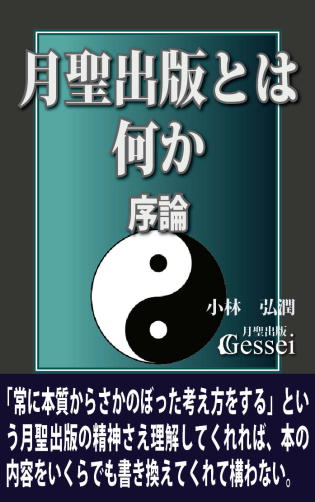
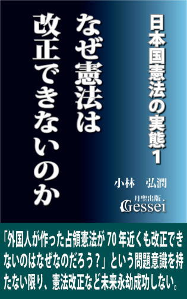
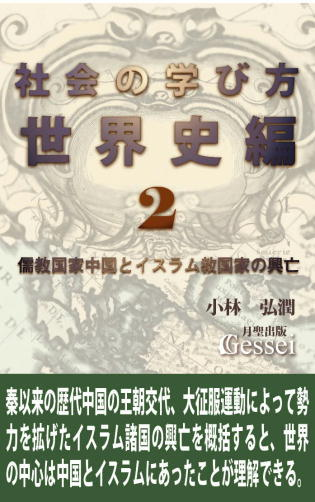
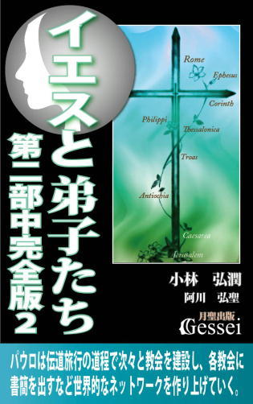
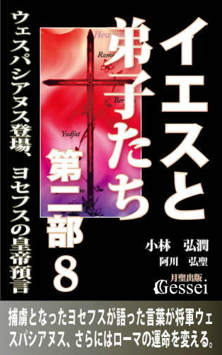
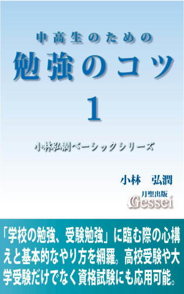
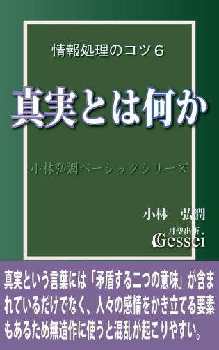
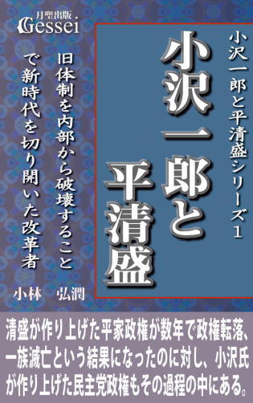

| 善光寺３ 「善光寺を参詣した者は誰でも極楽往生できる」は本当か？（月聖出版） | |
| 小林弘潤 | |
| Gessei Shuppan (2015) | |
善光寺３
「善光寺を参詣した者は誰でも
極楽往生できる」は本当か？
小林 弘潤
※更新履歴
2015/9/29 1版
2015/10/29 2版 ・17節を加筆、Kindle用目次追加
※著者ツイッターで、「本の価格を上げる場合の時期の情報」等の情報を発信しています。ご興味ある方はどうぞ（携帯からも読めます）。
まえがき ～人間が死に対して恐怖を感じなかった場合、「参詣した者の極楽往生を約束する善光寺」は存続できなかったと言える
善光寺は平安時代後期から中央にもその存在が知られるようになり、源信、重源、親鸞、一遍など全国各地の高僧が「京都から遠く離れた辺境の一地方寺院」でしかない善光寺を参詣するようになったと言えますが、個人的にそうした参詣客の記録として印象に残った話に「江戸時代に善光寺に参詣した中村吉蔵夫婦の話」があります。
それは「善光寺への参詣の道中で死んだはずの妻が善光寺如来の前で姿を現した」という話で、肥前国長崎から善光寺に参詣しようとした中村吉蔵の妻が道中で病気になり、やがて２歳の息子を残して死んでしまったため、吉蔵は息子を抱えながらよろよろと善光寺に着いたところ、善光寺如来の前で死んだはずの妻が姿を現して息子をあやし、如来を拝んだ後で息子を夫に返し、そのまま消えてしまったとのことです（小林計一郎『善光寺さん』銀河書房177頁）。
この話は「善光寺如来にまつわる霊験談」として有名になり、境内でそのいわれを木版刷りの土産物として売っていたということですが、私がこの話に対して一番考えさせられたのは「長崎にいた彼らが大変な遠距離を歩いて善光寺を参詣した」ことです（しかも源頼朝のような権力者とか、親鸞や一遍のような高僧でもない一般庶民が）。
交通網が整備された現代であっても「西日本に住んでいる方々が善光寺がある信州（長野市）に行く」のは大変で、例えば大阪に居住していた司馬遼太郎は佐久市で療養している知人を見舞おうと思い立った際に「信州へは大阪からどう行けばよいのかについても、知るところがなかった」とか「大阪からはるかに信州を望むとなると、橋もなにも架かっていないような印象を受けるのである」という言い方をしていたものです（『街道をゆく９』朝日新聞出版277頁）。
こうした話から、今以上に交通網が整備されていなかった江戸時代の人々が「大阪からさらに遠く離れた長崎から善光寺を参詣する」のがいかに大変なことだったかがわかると思いますが（飛行機も電車も車もない当時の人々が旅行をするには徒歩しか手段がなく、あるいは「現代人がネパールやチベットやインドの奥地にある由緒ある寺院に参詣する」よりも大変だった可能性もある）、逆に言いますと「それでも彼らが自発的に善光寺を参詣する気持ちになったということは、善光寺にはそれだけの労力を覚悟する価値があったことを示している」と言えると思います。
では、なぜ彼らがそれだけの労力を覚悟して善光寺に参詣する気持ちになったのかと言いますと、それは彼らが「善光寺に参詣すれば極楽往生が約束される」と考えていたからだと思います。昔の時代から現代に至るまで、宗教者ではない一般の人々が仏教的な寺院をはじめとする宗教施設に参詣する主な理由は「商売繁盛や家内安全などの現世利益を期待する心理」からと言えますが、善光寺の場合は少し違って「自分が死んだ後に地獄という苦しみの世界に行くことなく、極楽浄土（キリスト教的に言うと天国）という安心と喜びの世界に行けることを期待する心理」にあると言うことができます。
善光寺をはじめとする宗教施設が末永く存続していくためには「参詣客が訪れることによって生じる収入や経済効果」が不可欠と言えるため、「善光寺が現代に至るまで存続してきたのは、多くの人の極楽往生を期待する心理にあった」という言い方ができると思います。そして、この「極楽往生を期待する心理」というのは「死への恐怖」から生じているとも言えるため、ある意味善光寺という存在は「人間が抱く死への恐怖によるエネルギーによって成り立ってきた」（人間が死に対して恐怖を感じなかったら、善光寺は存続できなかった）と言っても過言ではないと思います。
物心ついた人間なら誰でも「人はいつか必ず死ぬ」という厳粛なる事実に直面することになるため、どんな人でも「死ぬのは嫌だ」という思いに苛まれたり、「人は死んだらどうなるのだろう」とか「人はなぜ死を恐れるのだろう」という疑問を抱いたことがあると思います。
そこでこの『善光寺３』という本では、人間にとって最大の恐怖心の一つである「死」というテーマに取り組み、現時点での私ができる範囲での「死への恐怖を克服するための考え方」を提示してみたいと思っています。さらにこの本では「人はなぜ死を恐れるのか」という根源的な問題提起もしてみたいと思っており、「死」という概念を分析することを通じて「この世界に張り巡らされた法則や運動原理をできる限り解明する」という試みを行ってみるつもりです。
私は2004年に月聖出版という出版社を作り、紙の本で16冊、電子書籍で50冊以上の本を刊行してきましたが、この「死」というテーマを本格的に論じる本はこれが初めてとなります（間接的に論じたものとしても『イエスと弟子たち第一部』の第十二章で描いた「十字架にかかった後のイエスが地獄に行ったユダに会いに行くシーン」ぐらいしかないと思う）。
私自身はそれまでの人生の中で「死という概念」については徹底的に考え続けてきた人間なのですが、今まで刊行してきた本の中ではあえてそれには触れなかったところがあります。一応、「将来の予告」として05年に刊行した紙の本『人間関係のコツ・パート２』（電子書籍『人間関係のコツ３』）の最後に「これだけの基礎ができれば大丈夫という判断ができたところで、この「もう一つの根源的な恐怖心」を克服するための知識を紹介したいと思っています」という言い方を入れたのですが、結局この「もう一つの根源的な恐怖心」である「死」について本格的に論じる段階になるまでに10年かかってしまったことになるので、「やっとここまで来たか。長かったなあ......」としみじみ思います。
前作『善光寺２』では「絶対神が存在する可能性」という話もしてみましたが、私はこの「死」という概念をとことん分析する中で「絶対神（仮にそうしたものが存在すれば、ですが）が死という概念に込めた思惑」が少し見えてきた、という思いになったところがあります。その意味で、この「死」という概念を分析することを通して「宗教の本質に迫る」だけでなく、「人間という存在の本質に肉薄する」ことも可能ではないかと思っています。参考になれば幸いです。
1 死後の世界の是非の問題は証明できない事柄なので「信じるか信じないか」ではなく「可能性の問題」で考えた方がいい
物心ついた人間なら誰でも「人はいつか必ず死ぬ」という厳粛なる事実に直面することになると言えます。
この「人はいつか必ず死ぬ。それは自分であっても例外ではなく、自分もいつか必ず死ぬものだ」という事実に直面した際、古今東西のたいていの人（ほとんど100％の人）がまず思うのは「死にたくない」とか「死ぬのは嫌だ」という思いだと思います。
ただ、どんなに「死にたくない」と思っても、「人はいつか必ず死ぬ」という厳粛なる事実を覆すことはできないため、このことによる嫌悪感や恐怖心は多くの人の心にいつまでもくすぶり続けると言えます。そして、この嫌悪感や恐怖心が「なぜ死ななければならないのだろう」とか「人は死んだらどうなるのだろう」とか「人はなぜ死を恐れるのだろう」というような人間の根源的な疑問につながり、古今東西の多くの人々がこの疑問を考え続けてきたと言えます。
そうした恐怖心や疑問は昔の時代と比べて高度な文明を謳歌している現代人の間でもくすぶり続けていると言うことができ、例えばネットで見つけた「死ぬのが怖い」という声（Ａさんと表記）としてこういうものがあったものです（発言小町2013年12月９日付）。
「死ぬのがすごく怖いです。無宗教なので死後の世界とか全く信じてません。
ふっと意識がぶっとんでお仕舞いだと思ってます。その瞬間に自分が自分じゃなくなる...時間という概念が無くなる... そう考えると怖くて怖くて仕方ありません。
長い間子供に恵まれず、やっと授かった子供、その子供と多少不満はあるけどまあまあ優しい主人。すごく幸せだなぁ、と思いながら生きています。
自分自身大人になってから多少老いてきていますが、死に向かって確実に進んでいるという感覚が全くありませんでした。全く意識せず日々過ごしてきました。
が、子供が日々ぐんぐんと成長しているのを見ると、あぁ時間って過ぎてるんだな、私自身成長が止まったような感覚がありましたが、そんなわけない、死は確実にやってくるんだ、と子供を通じて痛いぐらいに思い知らされます。
皆さんは死ぬという事を全く考えずに生きてるんでしょうか。
怖くないですか？ 宗教とか死後の世界など信じていない方、どうでしょうか」
この意見に対し、読まれた方からはこのような返答があったものです。
「＞皆さんは死ぬという事を全く考えずに生きてるんでしょうか。
考えますよ！多くの人は考えると思う。ただ、「結論が出ることではないから、考えても仕方がない」と思っているんだろうと思います。
＞ふっと意識がぶっとんでお仕舞いだと思ってます。その瞬間に自分が自分じゃなくなる...時間という概念が無くなる...
「死後の世界」を否定するのなら、そういう想像に至っても仕方がないですが、Ａさんの想像が正解かどうかすら怪しいのが事実。 （だって、生き返った人はいない）
だとしたら、自分の勝手な想像で「コワイコワイ」と怯えるのはバカバカしくないですか？
だって、違うかもしれないのに。 （私は、死を迎えるときの「思ってたんと違う」に不安と期待を抱いています。）
自分自身がこの世に生みだされたこととか、新しい生命を生み出すこととか、色々な未知の経験を乗り越えて、私たちはそれでも生きています。だとしたら、どんな形か分からない「死」という未知も乗り越えられるのだろうと考えます。
私自身は、ある日子どもを突然失うこととか、人の悪意の方が、具体的で恐ろしいです」
「怖いという感覚、良く分かります！
こうやって考えている自分が永久にいなくなる、無になる、そして二度と現れる事はない...。深い奈落の底に引きずり込まれるような恐怖は感じた事あります。特に夜。
でも良く考えたら、生まれる前も自分は無だったのだし、その頃は痛くも痒くもありませんでした。たかが小さな自分一人ですが、もしいなければ今周りにいる人の運命も違ったはずだし、回り回って人類の歴史も変わっていたかもしれません。それにＡさんはお子さんに遺伝子を受け継ぎましたよ。人類の歴史が大きな川だとしたら、その中の小さなアブクかもしれないけど、その川を構成する一部になれて、とても幸せだったなあと思います」
「私も死後の世界なんて信じてません。死んだら、脳が止まって終わるだけです。
自分が死んだら、残された人はどうなるだろう？
あれやこれや、心配や不安はあるけれど、死そのものに恐怖はありません。
苦しまずに死ねたらいいなというのは有るけれど、それは死が怖いのでは無く、苦痛が怖いだけです」
「うつを患い死を毎日願いました。なぜ私は死ねないのか苦しんだ日々がありました。その時の私にとって死は苦しみから逃れるための唯一の希望でした。
ただ、人ってなかなか死ねないんですよ。いくら死のうとしても寸前で生きたいって身体が反応するんです。
だから、死ぬことをあきらめました。いつか皆お迎えが来ます。それまで悔いなく生きようと決めました。
私もＡさんと一緒でやっとの思いで子供を授かりました。今、幸せに暮らしています。幸せだと逆に死が怖くなるときがあります。子供が自立するまで今は死ねません。
きっとＡさんも幸せなんだと思います。
死を怖がるのではなく、死ぬまでに何がしたいかを常に考えていたら怖いなんて考えないと思いますよ。人生は長いようで短いと私は思うので、死を怖がるより今日をどう生きるか考えたら楽になるのではないでしょうか」
これらの意見に対しては様々な角度から分析ができると思いますが、私がこれらの意見に接してまず気になったのは「どうも世間では、死後の世界とか死後の生命という概念に対して、「信じるか信じないかという二分法」で考える人が多いんじゃないかな」ということです。
私はこの「死という概念」を30年近く考え続けてきた人間なのですが、これについて徹底的に分析してみて得た結論は「死後の世界とか死後の生命が存在するかいう問題は、客観的に証明できる問題ではない」（これは「個人レベルでの証明は可能かもしれないが、すべての人に通用する客観的な証明をすることは不可能」という意味）ということです。
例えば、世間でたまに「臨死体験」の話（事故などで重症に遭ったり一度死亡が確認されてから再び蘇生して生き返った人が、死んでいる間に〝死後の世界〟で体験したとして語った話）が話題になって科学的な検証・分析が行われることがありますが、こうした企画が行われた際に出てくる結論はたいていが「わからない」というものになると思います。
先に紹介した意見の中にも「結論が出ることではないから、考えても仕方がない」という言い方がありましたが、「臨死体験」という概念については今の日本で「テレビ番組でも企画が組まれるほどのメジャーな話題になっている」ところがあり（民放だけでなくお堅いNHKですら何度もこれをテーマにした〝真面目で真剣な特番〟を組んでいると言える）、多くの人がそうしたマスコミ報道に接していながら「結論が出ることではない」という認識を持っているということは、「死後の世界の存在は客観的な証明ができる問題ではない」ことを示していると思います（実際、臨死体験に関してはどんなに科学的な検証・分析をしても「まぎれもない霊的な真実だという説」と「死の苦痛から逃れるために脳が作り出した幻覚だという説」に分かれて結論が出ないらしい）。
これは私が電子書籍『情報処理のコツ４ 事実と解釈を区別することの大切さ』などの様々な本で何度も指摘している視点ですが、物事が「証明できない事柄」である場合、「本当かウソか」とか「信じるか信じないか」という二分法に基づいた発想をするのではなく、「可能性の問題で考える」という発想をする必要があると思います。
例えば「私も死後の世界なんて信じてません。死んだら、脳が止まって終わるだけです」という意見をする人の場合、考え方が「100％かゼロか」という二分法の発想になってしまっているため、「死後の世界というのは証明された事実ではないから（100％でないから）、ウソ（可能性はゼロ）なのだ」という認識になってしまっていると言えます。
ただ、これが極端な見方であることは「証明された事実にならなければウソという見方をしたら、世の中が成り立たなくなってしまう」ことを考えれば一目瞭然だと思います（例えば「歴史上の人物の実在証明」を考える際にこの「証明された事実にならなければウソ」という視点を適用した場合、「教科書に書かれた歴史上の人物の大半はウソ」ということになってしまって歴史だけでなく学校教育すら成り立たなくなくなると思う）。
物事が「証明できない事柄」と判断できる場合（この判断は決して難しいことではなく、簡単な証明の知識を持っていれば誰でもできると思う）、「本当かウソか（信じるか信じないか）」ではなく「可能性の問題」で考え、納得重視という基準を元に各人の主体的な判断で結論を出せばいいと思います。
ところが、世間ではこの「証明できない事柄に対しては本当かウソかという二分法で考えるのではなく、可能性の問題（解釈）で考える必要がある」という知識が浸透していないことで、死後の世界の存在という問題に対しても「信じるか信じないか」という原始的な二分法を当てはめて考える人があまりにも多く、それによって様々な混乱が生まれている印象を感じます。
最初に紹介したＡさんの意見の中に「宗教とか死後の世界など信じていない方、どうでしょうか」という言い方がありましたが、この言い方は世間の人を「死後の世界を信じている人」と「信じていない人」に分けた発想と言えます。ただ、現実的に考えれば「信じている人」の中でも「死後の世界は存在することが確信の域に達している人」はほとんどいないもので（個人的な印象では「全体の１％もいないのではないか」と思っている。あと、「死後の世界は存在しないという確信を持っている人」になるとさらに少ないと思う）、「信じている人」の中でもその大半の人が「そうだったらいいとは思うけど、やはりわからない」という曖昧な認識で終わっているだけだと思います。
そうした現実を考えた場合、死後の世界の存在という問題に対しては「信じるか信じないか」という原始的な二分法を当てはめるのではなく「可能性の問題」として考え、「自分としては五分五分（50％）だと思うけど、確信している人（100％）もいるようだから、そうした人の意見も聞いて参考にしてみよう」というような気持ちで、安直に結論を出さずにじっくり考えていけばいいんじゃないかな、という気持ちになります。
ただ、その一方で私としては「死後の世界を信じない」という思いになってしまう人の気持ちも十分理解できる思いを持っています。それは、死後の世界はあると確信した一部の人が「これは客観的な証明ができる事実なのだ」と思い込んで「信仰の押しつけ」をしていることの反発によって生まれている傾向と言えるからです。
こうした「信仰の押しつけ」をしたがる宗教関係者の方々に対しては「過度な信仰の押しつけは必ず反発を招くもので、そうした押しつけが「死後の世界を信じない人が増える傾向につながっている」ことをもう少し自覚して欲しいものだ」と言いたい気持ちがあります（例えば、『オーラの泉』などのテレビ番組で一時期世間でもブームになったスピリチュアル・カウンセラーの江原啓之氏のやり方は私には「信仰の押しつけ」に見える。私は「こうした時代には江原氏のような人も必要だ」とは思うのだが、一方で「ああいう信仰の押しつけをすると反発を招くことがわからないのかな」という不満も感じてしまう。この「信仰の押しつけによる問題」については電子書籍『善光寺２』や『情報処理のコツ５ 証明とは何か』で詳しい説明をしているので参考にしてもらえれば）。
2 宗教の役割や存在意義は「死への恐怖や予期せぬ不幸による苦しみを解消し、それに基づく疑問を解決する」ことにある
ここで指摘したいのは「宗教という概念は人間が抱く死に対する嫌悪や恐怖と、それに基づく疑問をベースにして生まれている（少なくとも、その比重が高い）」という視点です。
例えば作家の井沢元彦氏は「人間には死というものが必ず襲ってくるからです。また運、不運、運命というものがあります。どうしてこんなひどい目に遭うのだろう。あるいは、どうしてあの人はついているのだろう。それは人間以外のものがもたらしているものなのか。そうしたところに原始的な宗教の発端があったわけです。死後の世界とか、霊という肉体を離れた存在があるのかないのかということを考える中で、宗教は生まれてきました」という指摘をしていますが（井沢元彦『世界の「宗教と戦争」講座』徳間書店１頁）、実際に宗教という概念が「人間が抱く死への恐怖と疑問をベースにして生まれ、そうした思いから生じるエネルギーによって成り立っている」ことは間違いないと思います。
この「宗教は死をベースにして成り立っている」ことに対して私なりの視点を入れた説明をしてみたいと思います。
私は人間という存在を「よりよく生きたい思いを持っている存在」「努力によって価値を高めようとする存在」と定義していますが、どんな人間でもこうした根源的な欲求と方向性を与えられていることで、「これに反する概念に対しては敏感に反応する」ところがあります。
例えば、「人はいつか必ず死ぬ」という事実に対してなぜほとんど人が「死にたくない」とか「死ぬのは怖い」というような嫌悪感や恐怖心を抱くのかと言いますと、そうした人々が持っている「よりよく生きたい思い」に反するから、という言い方ができます。もし、人間が持つ根源的欲求が「数年や数十年程度生きればそれで満足できる思い」だったら、「人はいつか必ず死ぬ」という事実に直面した際に嫌悪感や恐怖心を持つことも、さらには「なぜ死ななければならないのだろう」とか「人は死んだらどうなるのだろう」というような疑問を持つこともなく、「そういうものなんだ」と素直に受け止められるようになるものだと思います。
さらに言いますと、人は予期せぬ不幸や試練に遭った時はたいてい失望による苦しみに襲われ、「どうしてこんなひどい目に遭うのだろう」とか「自分だけこんな不幸を味わうのは理不尽だ」というような疑問を持つようになると言えますが、これはどんな人間でも「努力によって価値を高めようとする」という方向性が与えられているから、と言えます。
この場合の「どうしてこんなひどい目に遭うのだろう」という思いは、「自分はこれだけ努力したから相応の価値が得られると期待していたのに、そうではなかったことによる失望の思い」から来ていると言えます。このことは、予めその人の中に「これだけの努力をすればこれだけの価値が得られるものだ」という基準のようなものが存在しており、実際の結果が「その基準に達しなかった」ことから来ていると言えますが（この基準というのが「各人が持っている、その人なりの因果の法則」という見方ができる）、こうした状況で失望や不満を抱いてしまうのは人間が持つ「努力によって価値を高めようとする思い」があるから、という言い方ができると思います（逆に言うと、人間の中に「価値を高めようとする思い」がなければ、失望や不満に基づく悪感情は一切存在しなくなるということ）。
そして、多くの人々が持つ「死への恐怖や疑問」「予期せぬ不幸や試練に遭った時の苦しみや疑問」の受け皿となる役割を与えられたのが「宗教」と言えます。仏教、キリスト教、イスラム教、ユダヤ教、儒教と言った宗教はすべて「死や予期せぬ不幸によって人々が抱く恐怖や苦しみを解消し、さらにそれに基づく疑問を解決するための受け皿として生まれた」という言い方ができ、どんな宗教の教えにも「これらの問題に対する処方箋が盛り込まれている」という言い方ができると思います。
善光寺という存在は「仏教」という宗教に位置づけられる寺院と言えますが、善光寺の存在意義もまさにこの「死や予期せぬ不幸によって人々が抱く恐怖や苦しみを解消し、さらにそれに基づく疑問を解決する」ことにあるという言い方ができます。そのことがよくわかる事例として、善光寺如来の来歴や善光寺の歴史や伝承が記された『善光寺縁起』という書物に書かれたエピソードを紹介してみたいと思います。
電子書籍『善光寺１』でも簡単に紹介しましたが、善光寺の本尊である善光寺如来という存在は『善光寺縁起』において「ただの仏像」ではなく「生身の阿弥陀如来」という位置づけで描かれているところがあり、「当時の都に近い難波（現在の大阪市）の堀江に沈んでいた善光寺如来が本田善光にお告げを与えて自分を善光の自宅（信濃国伊那郡麻績郷で現在の長野県飯田市。現在の元善光寺）に安置させる」とか「皇極天皇元年（642年）に善光にお告げを与えて信濃国水内郡芋井郷（現在の長野市）に遷させる」という描かれ方をしているところがあります。
そして善光寺如来が水内郡に遷された翌年の皇極天皇２年、本田善光が大切にしていた息子の善佐が「病気になったわけでもないのに眠るように息が絶えて、木の葉が散るようにこの世を去る」という展開になります。この「最愛の息子の突然の死」という残酷な現実に直面した善光は深く悲しみ、善佐の死骸にすがりついて泣きながらこう語ります。
「なあ善佐、私がおまえを授かったときは、普通に子供をもうけるのと違って、神仏に祈ってやっとのことでもうけたので、生まれてから少しの間も父母の膝から離すことなく、大切に育ててきた。その間私は暮らしにくい毎日のつらさも忘れ、自分の身が弱くなってゆくのもかえりみず、年月がはやく過ぎてほしい、成人したおまえを見たいと願い、成人した後は、老後に頼れる者は全くないので、おまえを杖とも柱とも思って頼るつもりでいたが、私をいっしょに連れて行かずに先に行ってしまうとは、これはいったいどういう薄い前世の因縁なのだ。私たち父母こそ先立って、おまえの追善供養を受けるはずの身なのに、弔ってもらうはずの者を弔うとは、いったいどういうわけなのだろうか。恨めしいよ」
そして善行は悲しみのあまり、それまで絶対の帰依の気持ちから毎日念仏を唱えてきた善光寺如来に対しても〝恨み言〟を言ってしまうという状況になります。
「いったい人間の世界の定めで、年老いた者から順序よく死ぬわけではないと申しますが、私はすっかり年をとって余命いくばくもない身でございますので、『善佐、私のあとを継いだならば、お堂を造り、僧も呼んで、香をたき花を供えて、如来様にお仕えしろ』と、ふだんから言い聞かせておりました。仏様の神通力によって、善佐の運命を知らせてくださって当然でしょう。日ごろから崇拝しているご利益として、病気をなおし、寿命をのばしてくださってこそ、ご慈悲と言うことができましょう。かけがえのない、たった一人の善佐でございます。これはいったい、どういうことでございましょうか。私も善佐といっしょに、極楽の同じ蓮台にお送りください」（小林一郎『善光寺如来縁起 元禄五年版』銀河書房189頁）
この『善光寺縁起』に書かれた話の中には「想像や伝説の類の話」も多いので、こうした話が現実にあったという受け止め方はしない方がいいと思いますが、現実の話であれ架空の話であれ、ここで紹介した「最愛の子供を亡くした親の悲しみ」に関する話が多くの人の共感を呼ぶ話であることは間違いないと思います。
おそらく、今これを読まれた方の中にも何らかの共感の思い（共鳴）を感じた方はいらっしゃると思いますが、そうした思いがどこから生まれるのかと言いますと、「善行にとって息子の善佐は自分が懸命に努力して育てた価値ある存在なのに、その価値あるものを〝死〟という結末によって無惨に奪われたことによる失望や悲しみは理解できる」という思いにあると言えます。
こうした共感の思いは「最愛の子供の突然の死という体験をしていない人」であっても感じることができ、それは誰でも「懸命に努力してきたのに価値にならない（報われない）体験をしている」と言えるからです。そうした体験があることで「同じような体験をした人に対する共鳴」が生まれ、同時にそうした体験をした人の中には「努力すれば報われるはずなのに、なぜ報われないのだろう」という疑問もくすぶっているところがあるため、そうした疑問が「弔ってもらうはずの者を弔うとは、いったいどういうわけなのだろうか」という善行が抱いた疑問に対する共感にもつながっている、という言い方ができます。
それに対し、後半の「善行がそれまで絶対の帰依をしてきた善光寺如来を恨んで不満を言ってしまった様子」については、「そう言いたくなってしまう気持ちもわかる」という「共鳴」を持たれる方もいれば、「善光寺如来に対してそこまで露骨な不満を言うべきではない」という「反発」を抱かれる方もいらっしゃるのではないかと思います（この「共鳴」と「反発」という概念に対しては電子書籍『人間関係のコツ３ 罪悪感と恐怖心を克服する考え方』第三章に説明あり）。
そうした「反発」が生じる理由として言えることは、善行のセリフに出てくる「仏様の神通力によって、善佐の運命を知らせてくださって当然でしょう」とか「日ごろから崇拝しているご利益として、病気をなおし、寿命をのばしてくださってこそ、ご慈悲と言うことができましょう」というような「あなたはこうするべきだった、という善行の要求の意識にある」と言うことができます。
これは電子書籍『人間関係のコツ１ 人間心理を理解するための基礎知識』第二章で触れた視点ですが、人間が他者に対して行う働きかけは「要求」「提案」「お願い」の三種類に分類することができ、その中の「要求」という概念に関して「それが正当な要求か不当な要求かどうかを的確に区別することが大事だ」という指摘をしています（それに対して、提案やお願いに「正当」「不当」という概念はないと言える）。
この「要求が正当か不当かどうかの判断」は様々な状況によって変わってくるので一概には言えないのですが、普通「人間と神仏というのは対等な関係ではなく、神仏の方が立場が上」という認識が持たれるため、「人間が神仏に対して要求をするのは不当」という見方がされると思います（それに対して「お願い」であれば、「断られても構わないという前提で行う働きかけ」と言えるため、「神仏に対して願掛けや祈願をすることは何の問題もない」という印象になると言える）。
この「神仏の方が上である以上、どんな状況でも人間は神仏に要求をするべきではない」という意識が、善行の「仏様の神通力によって、善佐の運命を知らせてくださって当然でしょう」とか「日ごろから崇拝しているご利益として、病気をなおし、寿命をのばしてくださってこそ、ご慈悲と言うことができましょう」という善光寺如来への要求に対する「反発」につながっていると言えますが、それでいてこの「突然の不幸に見舞われた人間がそれまで絶対的に帰依してきた神仏に対して露骨な要求をする話」は様々な宗教の経典で描かれている雰囲気があり、私としては「これは宗教の中ではかなりニーズがあるテーマなのだろうな」という印象を感じています（例えば、旧約聖書で描かれたアブラハムの話やヨブの話が有名。アブラハムの話は電子書籍『イエスと弟子たち第二部中』で描いたパウロのテサロニケ演説で触れているので参考にしてもらえれば）。
ともあれ、善光寺縁起に書かれた「最愛の息子を失った善行の悲しみ」に関する話は「死や予期せぬ不幸によって人々が抱く恐怖や苦しみを解消し、さらにそれに基づく疑問を解決する」という宗教の役割を象徴する事例という言い方ができると思います。
そして、同じようなテーマは他の宗教でも様々に問題提起されているところがあり、こうした話から「宗教の役割や存在意義」を感じてもらえればと思います（ちなみに、この善行の悲しみと疑問に対する「善光寺縁起の答え」についてはまた別の機会に紹介したいと思っている。私は縁起で語られた〝答え〟がかなり核心部分に踏み込んでいるという印象を感じたのだが、「まだ基礎知識が不足しているのでこの本で紹介するのは時期尚早」という判断をしたところがある。気になる方は、ご自分で縁起を読まれて確認していただければ、と思っている）。
3 仏教では「理想の世界である浄土に行けるための方法論を説く」ことで死への恐怖を軽減しようとしていると言える
次に、仏教という宗教が「死への恐怖とそれに基づく疑問」に対してどう答えてきたかということを説明してみたいと思います。
仏教という宗教は今から約2500年前（紀元前５世紀）に北インドのガンジス川流域で始まったと言われており、その開祖が「世界の三大聖人」の一人とも言われて日本人にもおなじみの釈迦という人です（ゴータマ・シッダールタとか釈尊とも言う。釈迦という名称は本来「釈迦族」という一族の名称を指すのでふさわしくなく、私はそれまで「釈尊」という表記を使ってきたのだが、世間一般では「釈迦」の方がよく使われるので今後はこちらを使っていく。あと、「仏陀」という表現は本来「悟りを開いて解脱した人」という意味なので、釈迦一人を指すわけではないという認識も必要）。
宗教というものはたいていが「経典」「組織」「施設」という要素を備えているものですが、仏教の場合は紀元前５世紀に釈迦が北インドで説いた思想をベースにして「仏典」（お経）という経典や「天台宗や真言宗や浄土宗や禅宗」などの組織、そして「寺院」（例えば法隆寺、東大寺、善光寺）という施設が作られ、インドだけでなく東南アジアや中国や朝鮮、そして日本にも広がってそれぞれの地域で定着して現代に至っていると言えます（ただ、発祥の地であるインドでの仏教はやがて滅んだと言える）。
そして、宗教を構成する大事な要素としては「経典」「組織」「施設」以外に「拝む対象」というものがあり、仏教の場合はそれが「釈迦如来、阿弥陀如来、大日如来、薬師如来などの様々な仏（如来と仏と仏陀はほぼ同じ）」と言えますが、日本仏教では「特定の仏（それに基づく仏像や法具）を本尊として宗派を作って様々な寺院を建立し、多くの僧侶がそれぞれの宗派や寺院に所属して生活している」というのが普通のパターンだと思います。
キリスト教の場合も「経典」「組織」「施設」「拝む対象」をすべて備えているところがあり、「聖書」という経典と「カトリック、プロテスタント、ギリシャ正教」などの組織、そして「教会（教会という言い方は「組織」の意味でも使われるが）」という施設が様々に作られて発展してきたと言えます。そしてキリスト教における「拝む対象」は教義上は「イエス・キリストのみ」と言えますが、歴史的に見て「聖母マリア信仰」も根強い力を持っており、「実質的にはイエスと聖母マリアの二人が拝む対象になっている」と言えると思います。
仏教が教える「死への恐怖とそれに基づく疑問に対する答え」は、仏教の経典である「仏典」に書かれていると言えます。仏典というのはキリスト教の聖書と違って多種多様で膨大な量があることで（メジャーなものだけでも法句経、般若経、華厳経、法華経、涅槃経、維摩経などがあげられる）、この疑問に対しては仏教の中でも様々な答えがあると言えますが、大まかにまとめますとこんな感じになると思います（以下の記述は中村元『往生要集を読む』講談社学術文庫97頁、井沢元彦『世界の「宗教と戦争」講座』178頁、田中治郎『図解 仏教のことが面白いほどわかる本』中経出版128頁等の記述を参考にして構成）。
まず、仏教では「世界」という概念を「人間をはじめとする様々な生物が生きている世界（現実世界、この世、地上）のみ」とは考えず、「現実世界を生きた人間が死んだ後で赴く別の世界も存在する」と考えます。よく言われるのが「六道」という６つの苦しみの世界で、これは「地獄道、餓鬼道、畜生道、阿修羅道、人間道（これが今私たちがいる地上でありこの世）、天道」の６つを指し、地上を生きていた人間（正確に言うと生物すべて）が死んだら「この６つのどれかの苦しみの世界に赴き、そうした世界を永遠に輪廻する」（六道輪廻）というのが一般的な仏教の考え方と言えます。
仏教で言われる「六道輪廻」という思想は人気漫画の『聖闘士星矢』でも描かれているので若い人でもご存じの方はいらっしゃると思いますが（当初は敵だった黄金聖闘士のシャカが主人公グループの一人である一輝にかけた技として描かれている）、個人的に仏教に関する正確な知識を持っていなかった頃、『聖闘士星矢』で描かれた「六道輪廻」の話に接して「あれ？ 何かイメージと違うな」という思いになったことを覚えています。
というのも、仏教で言われる「苦しみの世界である六道」の一つに「天道」という世界がありますが、この概念はキリスト教などで言われる「天国」とか「天界」という概念に近いと言えるのに仏教では「苦しみの世界」という位置づけがされているからです。
キリスト教の場合、人間が死後に赴く世界を大きく「天国」と「地獄」に分け（基本的に、善いことをした人間が天国に行き、悪いことをした人間は地獄に行くという考え方。その中間として「煉獄」という概念もあるが）、こちらでの「天国」は「人間が目指すべき理想の世界」と認識されているだけでなく、個人的にも「キリスト教的な天国・地獄という概念の方がしっくり来る」という思いがあったため、仏教で言われる「天道すらも苦しみの世界」という発想がまるでピンと来なかったところがあります。
おそらく、『星矢』だけで「六道輪廻」をイメージしている方の大半は「仏教では死後に赴く理想の世界という概念がない」という印象を持たれていると思いますが、もちろん仏教でも「人間が死後に赴く理想の世界も存在する」という考え方があり（『星矢』ではその部分が描かれなかっただけ）、それは「浄土」という世界です。
この「浄土」という概念がキリスト教などで言われる「天国」に相当し、人間が死後に浄土に行ける（往生する）ためには二つの道があると言われています。一つは「自力で修行することで悟りを開き、輪廻のサイクルから解脱して涅槃に入る」という自力の道（禅宗などの聖道門）で、もう一つは「既に輪廻の世界から解脱して浄土にいる仏の力で（仏教では「悟りを開いて解脱した仏は自分専用の浄土を持っている」という考え方をしている）、その仏の浄土に入れてもらう」という他力の道（念仏宗などの浄土門）で、この他力の道というのがキリスト教で言われる「イエスや聖母マリアを信仰して善い行いをすれば天国に行ける」という考え方に近いと言えます。
浄土と言うと「極楽浄土」が有名ですが（阿弥陀如来専用の浄土）、仏教における理想の世界である「浄土」はこれ一つではなく、他にも様々な浄土が説かれているようです（例えば、釈迦如来専用の「無勝荘厳国」や薬師如来専用の「浄瑠璃世界」など）。それでいて、少なくとも日本人にとっては「浄土」と言うと「極楽浄土」だけがイメージされると思いますが（キリスト教的な「天国と地獄」という発想に対し、仏教では「極楽と地獄」という言い方がよく言われる）、それは「阿弥陀如来の極楽浄土がそれだけメジャーな存在」であることを意味しています。
簡単に言いますと、まず仏教では「死後の世界は存在する」という発想をし（これはどの宗教でも同じだが）、そうした死後の世界を「六道という苦しみの世界」と「浄土という理想の世界」に大別し、「浄土に行けるための方法論を説くことで人々の死への恐怖を和らげようとしている」と言えます。
平安時代中期の日本の仏教者である源信（恵心僧都源信）は『往生要集』という書物を残していますが、タイトルからこの書物が「死への恐怖を抱いている人を対象に、浄土に行けるための方法論をまとめた内容」であることが判断できると思います。
この書物の要旨は「地獄をはじめとする苦しみの世界はこういう世界で、（極楽）浄土という幸福な世界はこういう世界だ。そして死んだ後で極楽往生するためには生前にできるだけ念仏の修行をする必要があり、そのための方法論（主として「心の中で仏をイメージする観想念仏」のやり方で、「口に出して称える称名念仏」はそれほど勧めていない）はこうだ」と言うことができますが、こうしたことからこの『往生要集』が「死への恐怖とそれに基づく疑問に対する源信なりの答え」であることがわかるのではないかと思います。
4 仏教やキリスト教などで説かれる「永遠の天国思想」はすべて〝方便〟でしかなく、この世界の本質を喝破した思想ではない
これは「浄土に関する個人的見解」になりますが、私は「極楽往生に対する源信の考え」に接した時に「やはり天道と浄土はほとんど変わらないな」という思いになったところがあります。
普通、仏教の一般的な解釈では「苦しみの世界の一つである天道」と「理想の世界である浄土」の違いとして「善人が住む天道であっても永遠の安らぎと幸福が約束されているわけではなく、天道の住人でもいつかは死ぬのでその後は他の世界に輪廻しなければならない。それに対し、一度浄土に行ければ輪廻から解脱できて永遠にそこにいられる。だから浄土は幸福な世界だ」という見方がされると言えますが、それに対して源信は往生要集で「極楽浄土で修行して悟りを開いてのち、この世に返ってくる。そうしてまた仏陀として現れて悩める人々を救うことの大切さ」を主張しているところがあり（中村元氏の解釈。『往生要集を読む』133頁）、私としては「この源信の発想を前提に考えれば、浄土であっても「永遠の住処ではなく一時的な居場所でしかない」ことになるから、天道とほとんど変わらないじゃないか」という思いになったところがあります。
特にお坊さんなど仏教関係者の方々にはよく考えていただきたいと思っているのですが、この世や極楽浄土で修行して仏陀となった人間であっても「再びこの世に生まれ変わる」ことは「地獄などに落ちるリスクも伴い、仏であっても再び輪廻のサイクルに取り込まれて浄土には二度と行けなくなる可能性もある」ことを意味すると言えます（「一度仏陀になった人間なら次に生まれ変わっても絶対に地獄に落ちない」というような見方は聞いたことがないし、現実的に考えても〝例外扱い〟はありえないと言えるから）。このことは「結局は釈迦如来、阿弥陀如来、薬師如来などの仏であっても輪廻のサイクルからは逃れられない」ことを意味するので、個人的には「天道と浄土はほとんど同じと考えた方がいい」と思っています。
浄土に関する見解としてもう一つ言わせていただきますと、仮に「浄土」という世界が仏典に書かれている通りの「苦しみが一切ない世界」だった場合、私であれば「そんな世界はすぐに飽きて別の世界に〝輪廻〟したくなるだろうな」という思いになったところがあります。
電子書籍『精神的価値とは何か１ 価値とは何か』で詳しく説明しました「価値が生まれるメカニズム」に当てはめて考えますと、「苦しみがない状態では喜びも生まれようがない」と言えるため、正直、私にとっては「苦しみが一切ない世界」の方が「地獄」に見えてしまうところがあります。
往生要集の「欣求浄土」の章では「極楽世界には楽しさがなくなるということがないという楽しみがある。この世では、楽しさが永く続いていると楽しさではなくなってしまう。ところが極楽では、そのことが無いのである」という話が出てくるようですが（『往生要集を読む』104頁）、これは「価値が生まれるメカニズムやこの世界の法則」を当てはめて考えた場合はあり得ない発想で、私は「この部分は仏典の記述を鵜呑みにしただけで自分の頭で考えていないことが明らかだけど、さすがの源信も「仏典のこの記述は現実的に考えておかしい」ことには気づかなかったようだな」という思いになったところがあります。
こう言うだけでは「何を偉そうに......」という気持ちになる方もいらっしゃると思うので多少説明を入れてみたいと思います。往生要集に書かれた「楽しさがなくなるということがない」ということは「常態化が起こらない」ことを意味しますが、仮にこういう法則に支配された世界が存在した場合「そういう世界に生きている人間は普通の人とは感覚が違ってしまう」ことになるので、「浄土に長くいればいるほどこの世に生きている人間の苦しみがわからなくなってしまう」という結論しか出てこない、ということです（この視点については電子書籍『情報処理のコツ２ 人はなぜ物語に惹かれるのか』第一章で触れた高橋留美子氏の『人魚の傷』の話にも関連させて、またどこかで論じてみたいと思っている。この作品に出てくる「真人」という人物の描き方は「永遠の生命を持っていることで普通の人とは感覚が違う人間の事例」として参考になると思う）。
この発想についてはまだ基礎知識ができていないので本格的な論評は控えることにしますが、『善光寺２』14節でも触れましたように、仏教やキリスト教やイスラム教などで説かれる「永遠の天国思想」というのはすべて仏教的に言う〝方便〟でしかなく、私たちが生きているこの世界の本質を喝破した思想ではないと思います。
ここで、キリスト教が提示する「死への恐怖とそれに基づく疑問に対する答え」を簡単に紹介してみたいと思います。それは簡単に言うと「イエスや聖母マリアを信仰して善い行いをすれば天国に行ける」ということになりますが、その根拠は主に新約聖書に書かれた「死後の世界についてのたとえ話」や「死後の人間が受ける神の裁きによって天国に行くか地獄に行くかが分かれるような話」にあると言えます（ただ、新約聖書には死後の世界に関する直接的な話はほとんどなく、たいていはたとえ話や間接的な表現で語られていると言える）。
以下の文章でそうした雰囲気がわかると思います。この文章は、あるキリスト教会のホームページのトップ画面に載っていたものです。
「あなたは死ぬのが怖いんですね。でも人はいつか死ななければなりません。
このページを読んでいるあなたも例外ではありません。あなたもいつかは死にます。
ではなぜ人は死を怖いと思うんでしょうか？ それは死の向こう側に何があるかよく分からないからです。 何か闇の中に飛び込んで行くようで怖いのです。
世界最古の書物「聖書」には、死後の世界は実在する場所である、とハッキリと書かれています。人は一度死ぬことと、死後に神の裁きを受けることが決まっている。と、はっきり書かれています。
そして神さまから判決を受けて、ある人々は天国へある人々は地獄へ送られる、そうはっきり書かれています。亡くなった方は誰でもまっすぐに天国に行ける、とは書いてありません。生きている時の「行状」に応じて、天国行きか、地獄行きか、神様がお決めになる、と書かれています。
死後の世界は、実在する場所なのです。
神様から与えられた人生を罪や悪行を行う機会として送ってきた人は死後、神の裁きの場で「有罪」判決を受けて、「呪われた者」として火と硫黄の燃える池、地獄へ落とされる。と聖書に記されています。そこへ落とされる人の「行状」のリストは以下の通りです。
おくびょう者、不信仰の者、憎むべき者、人を殺す者、不品行の者、魔術を行う者、偶像を拝む者、すべて偽りを言う者（黙示録21章８節）
さて、あなたは大丈夫ですか？（中略）
真心から悔い改めて、このように祈ることが出来る者には、時代や空間や国籍を越えて、神からの「罪の赦し」が与えられます。
罪赦され、聖なる者、とされた人は、死後、神の裁きの場で「無罪」判決が言いわたされるのです（引用者注：この「死後に行われる裁判」のことを「最後の審判」と解釈することもできると思う）。
判決後、天使がその人のもとにやって来ます。そしてその人を連れて、天国に昇っていくのです。天国に到着したときその人は、「人生最良の日とは、今日のことだったのか！」と感動感激し、天使たちと共に、神を褒め称えるのです。
イエスキリストが死後三日後によみがえり、今も生きているように、イエスを信じる者も死後よみがえり、天国で永遠に生き続けることが出来るのです。
だからイエスキリストを信じた者たちは死を恐れなくなるのです。「死」は素晴らしい天国への「門」でしかないとハッキリ分かるからです（後略）」
私はこの文章を読んだ時、正直カチンと来たところがあります。まず思ったのは「これを書いた人は死後の世界の存在に確信を持っていて自信満々なのだろうけど、こういう〝過度な信仰の押しつけ〟をしたら多くの人はかえって反発するだけなんじゃないかな」ということです（少なくとも私の場合、「科学万能教の信者さんが行う信仰の押しつけ」と同じくらい腹が立ったもの）。
この本の１節でも書きましたが、こういう宗教関係者の方々には「過度な信仰の押しつけは必ず反発を招くもので、そうした押しつけが「死後の世界を信じない人が増える傾向につながっている」ことをもう少し自覚してもらいたいものだ」という思いになります（これを書いた人に自信過剰の傾向があることは「死後の世界は実在する場所である、とハッキリと書かれています」というような言い方からも感じられる。実際に新約聖書を読んでみると「死後の世界はある」というような明確な表現はほとんどないことがわかるため）。
はっきり言えることは「この人がここまで断定できる根拠は主に聖書の記述にあるが、それは「聖書とは長い歴史と伝統に基づいた権威のある書物だから、そこに書いてあることはすべて事実だ」という「権威重視の発想」から生まれている」ということです（権威重視の発想については電子書籍『人間関係のコツ２ 嫌な人間関係改善のための実践論』第二章に記載）。
可能性として、この人がここまで断定できる根拠が「聖書に付随する古典の権威や神の権威にある」だけでなく、「この人が聖書の記述が事実だと確信できるような実体験をして、それによって死後の世界の存在さえ確信した」ことも考えられますが、そうであってもそれは「この人にのみ通用する証明」であって「すべての人に通用する客観的な証明」ではなく、そうであるなら「死後の世界は実在する」という断定表現ではなく、「死後の世界は実在する可能性が高い」という言い方に留めるべきだと思います。
私がこの文章を読んで特にカチンと来たのは、「さて、あなたは大丈夫ですか？」という言い方で、この言い方の中にこの人の心にある「他の人（特にキリスト教に改宗していない〝異教徒〟の人）はともかく、自分は絶対に地獄には落ちるはずがないという自信」のようなものが感じられたものです。
キリスト教で言われる「天国」という概念にも仏教の「浄土」と同じように「一度その世界に入れたら永遠にそこにいられる」ような雰囲気がありますが、私はこういう発想は「どう考えても世界の法則に合わないから現実的には考えられず、仏教的に言う方便としか思えない」という思いになってしまうところがあります。
電子書籍『イエスと弟子たち第二部中』と『下』では、「逆十字架で殉教した後のペテロが天界に還った後、天使であるラファエルから「イスラエルがユダヤ戦争によって壊滅する様子」を見せられて苦悩する様子」を描いていますが、私としては「仮にこの人が天国に行けた場合でも、ペテロのように自分が去った後の地上の様子を見せられる体験をするんじゃないかな」という思いになります。
これは私も書いている時は気づかなかったのですが、『イエスと弟子たち第二部中』『下』で描いたラファエルはペテロに対して「最後の審判」を行っているところがあり（最後の審判というのは「法廷で行われる裁判」とは限らず、「試験」のような形で行われる可能性も大いにある）、「アザリアの話を考えても、もしペテロが地獄行きを拒否していたらラファエルはペテロを強制的に地獄に落とす判断をしただろうな」という思いになったところがあります（小説ではラファエルを「その権限を持っている天使」として設定しているため。詳しくは『イエスと弟子たち第二部下』に書いたので確認していただければ）。
これはあくまでも仮定の話ですが、もし私がラファエルのような〝審判者〟だった場合、地上の様子を見せた後でこの人（ＨＰの文章を書いた教会関係者の方）に「今地上ではこれだけ多くの人が苦しんでいる。あなたには、できればこれから永遠の天国ではなく、もう一度地上に生まれ変わって多くの人を救う仕事をやってもらいたいのだが」という提案をすると思います。
それに対してもしこの人が「それは話が違う！ 聖書には永遠の天国が保証されると書いてあるじゃないか。自分はもう二度と地上に生まれ変わる気はなく、永遠の天国に行かせてくれなければおかしい」などと答えた場合、私であればこの人を躊躇なく地獄に落とします。もちろん私にそんな権限はありませんが、それがこの世界の法則を考えた際に（さらに、聖書にイエスの言葉として書かれている「隣人愛の実践が天国に行ける条件」という趣旨の話を考えても）「公平で妥当な審判」という感じがするからです。
こうした話から「仏教やキリスト教やイスラム教で説かれる〝永遠の天国思想〟というのは方便でしかない」（あと「試練」という要素もあると思う）という私の主張が多少は理解してもらえるのではないかと思いますが、こうしたことを踏まえてこの人にはこう言わせていただきます。「さて、あなたは大丈夫ですか？」と。
5 源信の『往生要集』は「地獄」という概念を日本人の心に植え付けただけでなく、当時の絶対権力者である道長をすら屈服させた
ここで「源信の『往生要集』の最大のセールスポイント」という話をしてみたいと思います。
『往生要集』という書物の名前は歴史の教科書にも出てくるのでご存じの方も多いと思いますが、この書物をよく知っている方であっても３節で指摘しました「死への恐怖を抱いている人を対象に、浄土に行けるための方法論をまとめた内容」という言い方には「なんかイメージと違う」という思いになった方もいらっしゃると思います。
というのも、『往生要集』と聞いて多くの人が真っ先にイメージするのは「浄土に行けるための方法論」という要素ではなく、別の要素にあると言えるからです。それは「冒頭部分に描かれた地獄の生々しい描写」で、最初の章である「厭離穢土」で展開されている数々の地獄の描写は発表当時から多くの人々の心をとらえ、「その後の日本仏教の方向性だけでなく、後世の日本人の来世観、地獄観にさえ決定的な影響を与えた」と言われています。
例えば、ネットにおけるこの本のレビューにはこうした意見が見られたものです。
「宗教が「死の克服」を第一の任務とするなら、「地獄の恐ろしさ」との対比によって御仏の慈悲を強調する本書も、恐怖を直視しようとした試みに他ならない。勢い剰って地獄の恐ろしさばかりが伝えられるが法然、親鸞はいうにおよばず日蓮、円空さえもこの書に踏み込んでのち答えを得るに至った」
「その後の日本の仏教の歴史に決定的な影響を与えた作品。冒頭の地獄についての部分が、とりわけ有名で、多くの絵師がそれをもとに、地獄の絵を描いた。仏教だけではなく、美術の世界にも大きな影響を与えている。出だしから、ショッキングな内容で、読む人の関心を引くというアイデアは、現代のハリウッド映画の作り方にも通じ、作者の源信のセンスの良さに敬服してしまう」
「私たち日本人は、死ねば地獄に堕ちると考えている。血の池や針の山、賽の河原で石を積む情景は、私たちの脳裏に鮮やかに焼き付けられている。誰も死んだことがないのに、見てきたように地獄のイメージを語るが、そこに大きな影響を及ぼしたのが『往生要集』である。
『往生要集』は、鮮烈な八大地獄の描写から説かれる。「これでもか」と閉口するくらい、さまざな苦悶が私たちを襲う。行き場のない絶望から、どうにかして逃れたいと願う。これが「厭離穢土、欣求浄土」と呼ばれるもので、無理のない形で人々に、極楽を求める気持ちを植え付けていく。プレゼンテーションの手法としても、説得力のある文章構成である。
わかりやすく具体的な風景を想像させることで、源信は着実に民衆の心を掴んだ。これまでの高僧が成し得なかったことを、時代に先駆けて見事に表現した。摂関政治華やかな背景を考えると、どれだけ凄いことなのかよくわかる。
やがて法然が浄土宗を開き、親鸞が浄土真宗を開き、極楽浄土は仮想現実として根づいたが、その原風景を耕したのは紛れもなく源信である。それどころか宗旨宗派を問わず、今でも厭離穢土・欣求浄土の基本発想が、人々を入信に導く回路として用いられている。地獄にしても極楽にしても、現世の延長線上に位置付けられているから、私たちは思わず納得してしまい、日々の行いに襟を正し身を慎む」
こうした話から「往生要集が後世の日本人の価値観に大きな影響を与えた雰囲気」を感じてもらえればと思いますが、私が「往生要集の影響力」について考えさせられたのは「源信が往生要集を書いた平安中期以前は、日本に「地獄」という概念はほとんどなかった」という意見に接した時です（中村元氏によると、聖徳太子だけでなく最澄や空海も地獄を深く論じることはなかったらしい。『往生要集を読む』57頁）。
この視点は私も詳しく調べたわけではないので正確なところはわからないのですが、推測するに、それまでの日本人の「一般的な来世観」というのは「（悪人の場合）死ねば地獄に落ちるものだ」という感じではなく、「（恨み辛みを持った人の場合）死ねば怨霊となって祟る（化けて出る）ものだ」という感じだったのではないかと思います（怨霊信仰については後述。もちろん、平安中期以前にも「死ねば地獄に落ちる」という考え方は一部であったと思うし、往生要集が出てからも「死ねば化けて出る」という考え方もかなり残ったとは思うが）。
もちろん、「地獄という発想は源信のオリジナルのアイディアで、この人が「地獄」という概念を発明した」わけではなく、往生要集の地獄の描写はその大半が「それまでの仏典に説かれた様々な地獄に関する記述の引用」と言えるのですが（その中に源信独自の解釈も含まれているようだが）、先のレビューでも指摘されているように「源信の編集と演出の巧みさ」もあって「往生要集がそれまでマイナーだった地獄という概念をメジャー化させる役割を果たした」と言えると思います。
現代人の場合、「死ねば地獄に落ちる」ことを本当だと思っている人の割合はそれほど多くはないと思いますが、それでも「地獄」という言葉そのものは日常的に使われている雰囲気があり、主に「ひどい苦しみや残酷さが現出した状況」というような意味で使われると思います（例えば「戦場は地獄だ」とか「受験地獄」とか「放射能地獄」というような使われ方）。こうした「地獄という概念がメジャー化して日本人の心の奥深くに浸透するようになった」ことに対する『往生要集』や源信が果たした役割は相当なものがあると思います。
昔から伝えられている「仏教的な地獄のイメージ」としてあげられるのは、先のレビューでも紹介されていました「血の池地獄」や「針の山」や「賽の河原」、さらには「三途の川」とか「閻魔大王」という概念も多くの人は聞いたことがあると思います。
こうした概念が現代にも伝わっているのは「昔話やお伽噺の影響」もあると思いますが、現代の日本では「そうした話を題材にした漫画の影響」も大きく、例えば先にも紹介しました『聖闘士星矢』における「黄金聖闘士のシャカと一輝の対決シーン」では「六道輪廻」だけでなく「血の池地獄」や「賽の河原」の話も紹介されているところがあります（それに対し、学校教育ではこうした話はまず教えられないと言える。例えば、小学校の国語の教科書に「六道輪廻」とか「血の池地獄」というような話はまず載らないと思う）。
往生要集では「血の池地獄」「賽の河原」「三途の川」「閻魔大王」まで出てくるわけではなく、この書物で紹介されているのは「八大地獄と言われる仏典に説かれた主要な地獄に落ちた人々が様々な苦しみを受けている描写」と言えます。
八大地獄とは「等活地獄、黒縄地獄、衆合地獄、叫喚地獄、大叫喚地獄、焦熱地獄、大焦熱地獄、無間（阿鼻）地獄」のことで、例えば「等活地獄では熱鉄上での五体切断の刑を受け、殺されてもすぐに蘇生して同じ刑を受け続ける」とか「黒縄地獄では体を熱鉄の縄で区画され、斧やノコギリなどで細切れに切断される」とか「衆合地獄では殺生や盗みや邪淫の罪を犯した者が落ち（この部分は血の池地獄に近いと言える）、圧殺や肉体のすり潰しなどの刑がある」とか「焦熱地獄では徹底して火に焼かれ、ここの火に比べると先の５地獄の火は霜雪ほどに涼しく感じられ、その苦しさは大叫喚地獄の10倍」とか「大焦熱地獄は、焦熱地獄のさらに10倍の苦しみを味わう地獄で、炎刀で皮を剥がれ、沸騰した鉄汁を飲まされ、炎以外何もない世界にほうり出される」とか「無間地獄はありとあらゆる重罪を重ねると落ちる地獄で、先の７地獄の責め苦さえ天界の歓楽に等しいと感じられるほどで、この地獄の臭気をかいだだけで一切の天界が消え失せる」というような描写がなされているようです（『ブックスエソテリカ７ 浄土の本』学研110頁の記述参照）。
往生要集に書かれた実際の記述を引用してみますと（大焦熱地獄における特別な地獄の描写）「地獄の鬼が炎をあげている刀で罪人の体の皮膚を、肉を傷つけないようにして全部剥ぎ割く。すっかり皮を剥いでしまうと、皮を体と一緒に熱い地面の上に敷き並べ、火で焼き、沸騰したどろどろの熱い鉄をその体にそそぐ。このようにして、何億千年という量り知れない年月の間、大きな苦しみを受ける。出家の身でありながら、仏の決められた戒めを守っている婦女に酒を飲ませて誘惑し、だましてその心をそこなわせてから、一緒に交わったり、あるいは金品を与えたりした者が、この中に墜ちる」というような感じになるようです（石田瑞麿訳『往生要集 日本浄土教の夜明け１』東洋文庫27頁）。
こうした「残酷で過激な描写」に対しては「いくらなんでもひどすぎるんじゃないか？」という違和感や疑問を感じられた方もいらっしゃると思いますが、私はこうした描写を行った源信の意図は二つあると思っており、一つは先に紹介したレビューでも指摘されていました「地獄の恐ろしさを強調することで、読んだ人に極楽を求める気持ちを植え付けていく」という視点と言えます。
そしてもう一つは「重い罪を犯したら地獄でこうした罰が待っていると主張することで、罪を犯させない抑止力にすること」だと思います。例えば、今紹介しました「大焦熱地獄における罰の描写」は「出家僧が女性を騙して関係を持った場合の罰という位置づけになっている」ところがあり、こうした描写に源信の「在家の一般人ならまだしも、出家僧がこうした行為をしたら相当な重い罰を受けても当然だ。だからこんな行為は絶対にしてはならない」という主張が込められている感じがします（ただ、それでいて個人的には「大げさ過ぎてかえってリアリティーがなくなっているのでは」と感じてしまうところもあり、例えば「何億千年」という常軌を逸した年月が出てくることに対して個人的には「こんなのは1000年で十分」と言いたい気持ちになる。この「大焦熱地獄に落ちたら1000年は出られない」という発想は電子書籍『イエスと弟子たち第二部下』の話で使っているので、ご関心のある方は参考にしていただければ）。
ただ、こうした「大げさ過ぎてリアリティーに欠ける描写」が含まれているにもかかわらず、「往生要集の地獄の描写」は絶大な効果があったという言い方ができ、それは「往生要集を読んだ当時の権力者が源信に心服して阿弥陀信仰に傾倒した」ことに出ていると思います。
日本史上、「圧倒的な権力を手に入れた絶対権力者」は幾人かいると思いますが（例えば天武天皇、白河上皇、平清盛、足利義満、織田信長、豊臣秀吉など）、平安時代中期の摂関政治の全盛期に絶大な権力を手に入れた藤原道長という人物もその中に入れることができると思います。
権力の絶頂にあった頃の道長が詠んだ歌として有名なのが「この世をば わが世とぞ思ふ 望月の 欠けたることも なしと思へば」（この世は 自分（道長）のためにあるようなものだ 望月満月のように 何も足りないものはない）という歌ですが、こういう歌を公の場で堂々と詠んでしまうほどの「絶対権力者」だった道長が、権力の絶頂にある時期から源信には相当の尊崇と帰依の念を持っていたようで、この歌を詠んだ1018年（寛弘２年）の頃には既に『往生要集』を知っていただけでなく、座右の書としていたようです（速水侑『人物叢書 源信』吉川弘文館207頁）。
晩年の道長は念仏や阿弥陀信仰に傾倒するようになり、その臨終は「法成寺阿弥陀堂の念誦の間で、金色の阿弥陀堂に見守られながら、荘重甘美な引摂念仏の旋律の中で迎えた」というような状況だったようですが（同262頁）、おそらく道長が阿弥陀信仰に傾倒したのは「往生要集を読んで「権力を極めた自分であっても死後に地獄に行くかもしれない」と思うと怖くなり、その恐怖を克服するには源信の言う通り阿弥陀信仰や念仏の道に入るしかないという気持ちになった」からだと思います。
このことは「源信の地獄の思想が絶対権力者である道長をすら屈服させた」ことを意味すると思いますが、『善光寺１』で紹介しました「善光寺如来が絶対権力者である秀吉を手玉に取った事例」なども含めて「この世でどんなに栄華を極めた絶対権力者であっても、かなわないものがある」ということを感じてもらえればと思います。
今、「源信が道長を屈服させた」という言い方をしましたが、このことは「権力闘争において源信が道長に勝った」ことを意味すると言えます（もちろん、源信にそんな意識があったわけではなく、「結果的にそうなった」という意味だが）。
電子書籍『社会の学び方・日本史編』『世界史編』『政治経済編』『日本のマスコミの実態』等では「権力闘争で勝つには人事権、権威、経済力、軍事力、情報などの権力の要素をできるだけ多く確保することが求められる」という知識を紹介していますが、源信が道長に勝ったのは「情報」の要素が大きく（あと、「権威」という要素も働いていると思うが）、「特定の分野の情報を押さえてしまえば、他の権力の要素がなくても権力闘争で勝てる（しかも〝絶対権力者〟のような相手であっても）」ことがこの事例から判断できるのではないかと思います。
「この世をば わが世とぞ思ふ」という歌を詠んだ道長のような絶対権力者の場合、「世の中のことはすべて自分の思い通りになる以上、他の人間の指図など一切受けない」というプライドが強烈にあるものです。可能性として、道長がそうした独立不羈の思い（尊大で傲慢な思いと言った方が正確だが）を前面に出し、「自分の力があれば死後の世界さえ思い通りに支配できるはずだ。だから源信の思想など無視して最後まで自分の思い通りに生きてやる」という判断をすることもできたと思いますが、実際にはこの人は「晩年は源信の言う通り念仏三昧の日々を送り、念仏や阿弥陀仏にすがりながら臨終を迎える」という道を選んだと言えます。
このことは「絶対権力者の道長であっても死への恐怖に逆らうことはできなかった」ことを意味すると思いますが、「死への恐怖はそう簡単には克服できない」ことをこの事例から感じてもらえればと思います。
6 善光寺という「極楽浄土」に到達する直前に現れた犀川は参詣客にとって「三途の川」に見えていた可能性がある
ここで、この『善光寺』シリーズの〝主役〟である善光寺の話を入れてみたいと思います。ここで指摘したいのは「善光寺には擬似的な極楽浄土という雰囲気がある」という視点です。
まえがきでも述べましたが、昔の時代だけでなく現代にかけて「全国各地から多くの人が善光寺を参詣する心理」というのは、一般的な「商売繁盛や家内安全などの現世利益を期待する心理」ではなく、「自分が死んだ後に地獄という苦しみの世界に行くことなく、極楽浄土という安心と喜びの世界に行けることを期待する心理」にあると言えます。
多くの人がそうした心理になって善光寺参詣をしようとするのは「善光寺がそう宣伝しているから」（〝宣伝〟という表現は善光寺関係者にとって失礼かもしれないが）と言えますが、その「善光寺に参詣すれば地獄に落ちることなく極楽浄土に行ける（極楽往生できる）」という話の根拠は、『善光寺縁起』に書かれた「この寺に一度参詣し、少しばかり合掌し頭を下げ、灯明を仰いだ者は、男も女も区別なく、誰もが極楽往生の絆となった。極楽の蓮の上に住んで、さまざまな幸せを招き、長い命を保証され、永遠の幸福を手にすることができることを、誰が疑うであろうか」という記述（巻四の最後にある記述）にあると言えます。
さらに縁起には「善光寺に参詣しなかった人でも、ちょっとした縁だけで地獄に落ちることなく極楽往生できる」という話すらあり、巻五には「自身は生前善光寺に参詣しなかったにもかかわらず、母親の中に胎児としていた時に母親が参詣したことで参詣の証拠である善光寺如来の印が押されていた時丸の話」が書かれています。
この時丸の話の中には「日本という大乗世界の、善光寺の本尊如来の前の、清浄な地を一たび歩めば、だれもが皆極楽浄土に生まれかわるのだ」とか、「こうして御仏にお会いし、またとない霊地を踏んだからこそ、不思議なご加護を受けることができるのだ」という言い方がありますが（後者は時丸と話した閻魔大王のセリフ）、私はこれを読んで「ここまで来ると極楽往生の条件がかなり緩くなっていて、「念仏したり善光寺如来に対して礼拝しなくても、善光寺まで来れば（礼拝せず素通りしても）極楽往生できる」というものになっているな」という思いになったところがあります。
この発想は「善光寺如来が安置されている善光寺とその近辺地域が聖地（霊地）化した」ことで生まれていると言えますが、中には「善光寺が極楽浄土そのものだ」というような雰囲気のある意見もあり、江戸時代の小林一茶は「そもそもこの地は御仏の浄土にしあれば、肆は軒をあらそひ、幌（のれん）は風にひるがへり、入る人、いづる人、国々よりはるばる歩みをはこびて、未来成仏を願はぬ人もなく」という論評を書いているようです（おそらく一茶が善光寺参詣をした際の論評。『善光寺さん』166頁）。
昔の時代では全国各地から善光寺に参詣した人は皆が、堂内での「お籠もり」（本堂に泊まり込んで善光寺如来の近くで一夜を過ごすこと）をし、僧の読経が行われている中で大勢の参詣者が一斉に念仏を称えていたようです。
この様子について小林計一郎氏は「瑠璃壇の前、常夜灯のゆらめくなかで諸国の道者が声をそろえて夜念仏を称えることは、その人々に極楽浄土に生まれたような恍惚感を与えたことでしょう。これこそが善光寺詣りのクライマックスであり、この一夜のために道者は数百里を遠しとせず、草深い奥信濃のこの寺に集まって来たのだといっても過言ではありません」という論評をしているのですが（『善光寺さん』173頁。雰囲気的には「現代のロックコンサートに近いのではないか」という印象を感じたもの）、この「瑠璃壇の前、常夜灯のゆらめくなかで諸国の道者が声をそろえて夜念仏を称える」という神秘的な雰囲気も影響してか、お籠もりの最中に「神秘体験」をした人もいたようで、「亡き人の霊に会えたことで堂内のあちこちで泣き声が聞こえた」という話もあるようです（小林計一郎『善光寺史研究』信濃毎日新聞社35頁）。
こうした話から、昔の時代は（今もそうかもしれないが）参詣者だけでなく全国の多くの人々から「善光寺とは極楽浄土のような場所で、善光寺に参詣することは極楽浄土に行くことと同じ」という認識を持たれていたことがわかると思いますが、個人的にも「善光寺は極楽浄土そのものとは言えないが、多くの人に極楽浄土をイメージさせる、擬似的な極楽浄土という役割を果たしていたことは間違いない」という思いになったところがあります。
一茶の「そもそもこの地は御仏の浄土にしあれば」という表現から、私としては「ひょっとしたら昔の人には、善光寺がある信濃の地そのものが極楽浄土のような場所に見えていたのではないか」という思いにもなったのですが（もっとも、一茶自身が信濃出身の人なので「自分も浄土にいる人間」という感じの認識だったかもしれない）、その辺は遠距離から善光寺参詣をした人の心理を想像する中で「多くの人がそういう認識を持っていた可能性も大いにある」という気持ちになれたところがあります。
というのも、小林計一郎氏の「草深い奥信濃」という表現にも雰囲気が出ているように、例えば京都から善光寺に参詣した人にとって、善光寺は「あまりに遠い」からです（昔の日本のヒット曲で、ゴダイゴというグループによる「ガンダーラ」という曲があり、その中に「（ガンダーラという聖地に）旅立った人はいるが、あまりに遠い」という歌詞があったが、まさにそんな感じだったと思う）。
交通網が発達した現代で京都（関西）から善光寺がある長野市まで行くには、車で高速道を通れば５～６時間程度で行けますが、車も電車も飛行機もない昔の人は「徒歩」しか移動手段がなかったと言えるため、京都から善光寺がある信濃まで行くには「普通の状況で13日」という大変な日数がかかったという計算になります（京都から信濃での距離が約400㎞で、一般の人が一日に歩ける距離を30㎞とした場合）。
しかも、善光寺がある奥信濃という場所は、現代でも「陸の孤島」という言い方がされるほど山に囲まれていて交通の便が悪く、それによって街道の整備がされていないだけでなく危険も多かったと言えるので（大半の参詣者は中山道の木曽路から松本に入って北上する道を通ったと思うが、中津川や馬籠を過ぎた後はずっと山道が続くような印象があり、宿も満足に取れなかっただろうし道中は何度も身の危険も感じていたと思う）、相当大変だったと思います。
そうした大変な思いをして山道を抜け、やっと視界がきく善光寺平（今の長野盆地）に入ったことで「善光寺までもうすぐだ」という思いになったところ、そこで参詣者の行く手を阻むように立ちはだかったのが犀川という「急流であるため橋がかかっていない川」と言えます（あと、ルートによっては犀川の近くを流れる千曲川も渡らなければならなかったと言える）。
今の長野市の場合「犀川を渡るための橋がかかっていて、誰でも普通に犀川の南北を渡れる環境」になっているために地元の人でも知らない人がほとんどだと思いますが（私もごく最近まで知らなかった）、犀川というのは流れが急なので明治期まで橋がかけられなかったところがあり（犀川の南北を渡れる主要橋を丹波島橋と言うが、丹波島橋が最初にかけられたのが明治６年らしい）、それ以前の時代に全国から善光寺を参詣した人が犀川を渡って善光寺に行くためには「渡し船に乗って向こう岸まで運んでもらう」しかなかったと言えます（その船乗り場が「丹波島の渡し」）。
ところが、犀川というのは流れが急なためにこの「渡し船」であっても危険が伴ったようで、川の両岸に杭を立ててその間に丈夫な綱を張り、船頭はそれを伝わって参詣客を乗せた船を渡していたようです（こうした船に何人乗れたかはわからないが、おそらく乗船していた参詣客としては「流れが急になって船頭が綱を放してしまうのではないか」とか、「船が転覆するのではないか」というような不安を感じていたと思う。あと、雨になると渡しができなくなるため迂回路を通らねばならず、そうしたことによって生じるストレスも相当なものだったと思う）。
善光寺にまつわる霊験談として「夜に丹波島の渡しを渡ろうとして、あやうく流されそうになったところで水上に老人が現れ、その人を岸に導いた後で光明を放って消え失せた」という話が有名になったようですが（『善光寺さん』178頁）、こうした話が有名になるということは「多くの参詣客が、犀川を渡る際には相当なリスクがあり、実際に犀川を渡る際に流された人もいるという認識を持っていた」ことを意味すると思います。
私がこの「参詣客が善光寺に到着する直前に犀川という川を渡らなければならなかった」ことを考える中で思ったのは「多くの参詣客にとって、この犀川というのは〝三途の川〟に見えていたのではないか」ということです。
５節でも触れましたように、「三途の川」というのは「仏教的なあの世の風景」として現代でも知られている有名な概念の一つで、一般的には「死んであの世に行く前の人間の前に現れ、この世とあの世の境界線という位置づけになっている存在（この川を渡ってしまったらもう現世には戻れず、極楽なり地獄なりに行くしかないという感じ）」という認識がされていると思います。
おそらく、現代人よりも昔の人の方が「死んだらあの世という世界に行く」とか「あの世に行く際は三途の川を渡ることになる」という認識を濃厚に持っていたと思うので、善光寺に到達する直前に現れた犀川という川を目の前にした参詣客の多くは「これは三途の川のようなもので、危険を冒してこの川を渡ることでようやく善光寺という〝極楽浄土〟に行けるのだ」という思いを持ったのではないかと思います。
長く苦しい旅程を経ただけでなく、最後に「危険な犀川を渡る」という試練も乗り越えて善光寺の姿を見た参詣客の多くは「とうとう極楽浄土にたどり着いた......」という感慨深い思いになったのではないかと思いますが（おそらく、「車や電車を使って気軽な気持ちで行けるだけでなく、危険を冒して犀川を渡ることもない現代の善光寺の参詣客」にはこうした昔の人の気持ちはわからないと思う）、善光寺に到着するまでにこうした過程があったからこそ、善光寺の本堂におけるお籠もりの際の「極楽浄土に生まれたような恍惚感」とか「亡き人の霊に会うというような神秘体験」も生まれたのだろうと思います。
7 末法思想と源信の地獄思想の影響で、善光寺は全国の人から「参詣する価値のある寺院」という認識が持たれるようになった
こうした知識を元に「善光寺と源信の関連」という話をしてみたいとい思います。５節でも触れましたように、善光寺（如来）も源信も共に「この世における絶対権力者を屈服させ、手玉に取った人物（善光寺如来は人ではないが）」と言えますが、個人的には両者を比較した際「源信と違って善光寺如来の方は、頼朝、信玄、信長、家康、秀吉という権力者たちを歯牙にもかけていない雰囲気がある分、独立心旺盛なだけでなくかなりドライな性格なんじゃないか」という印象を持っています。
あくまでも個人的印象ですが、この人（善光寺如来）は頼朝が善光寺の再建命令を出し、「存亡の危機にあった善光寺の再建を熱心に進めていた様子」を見ても頼朝に〝恩義〟のようなものを感じることはなく、「この世の権力者なんて夢のお告げを与えれば誰でも操れる以上、代わりはいくらでもいる」ぐらいのドライな意識を持っていたんじゃないか、という印象を感じているところがあります。
ところが、そうした「独立不羈でドライな性格」の善光寺如来であっても、源信に対しては相当な恩義を感じているところがあり、場合によっては「この人にだけはどうしても頭が上がらない」とか「この人にはとても足を向けて寝られない」ぐらいの熱い思いを持っているんじゃないか（もっとも、神仏が「寝る」ことはないとは思うが）、という思いになってしまうことがあります。
私がそう感じる根拠は「創建当初から数百年は全国的にはまったく無名だった善光寺が、源信が死去した後の平安後期以降は急激に台頭して中央からも注目されるようになった」ことにあります。
ここで断っておきたいのは「善光寺は当初は中央には知られていない一地方寺院でしかなかった」ことです。『善光寺縁起』には「飛鳥時代の皇極天皇の時代（644年頃）に天皇の指示で如来を安置する伽藍が創建された」ことが書かれているため、ともすれば「善光寺は飛鳥時代から中央にも名の知られた寺院だった」というような印象を抱きがちになりますが、実際には平安後期までの中央の文献史料に善光寺の名前はまったく出てこないようなので（善光寺が文献に出てくる最初が1096年、次が1114年の記録らしい。『善光寺史研究』54頁）、「善光寺は創建から数百年は中央にはまったく無名の一地方寺院だった」と解釈するのが妥当だと思います。
縁起の記述ではなく学問的な研究に基づく善光寺の創建時期は「７世紀後半の天武・持統期」というのが定説のようなので、「創建から400年の間は全国的にはまったく無名だった」という可能性が高いと思います。『善光寺１』でも触れましたが、善光寺は11世紀に国司の在庁官人層にとって重要な存在となったことで地方寺院として成長し、12世紀初頭には中央の有力寺院である近江三井寺（園城寺）の末寺になったことで徐々に中央にも名前が知られるようになり（聖徳太子信仰に関連した四天王寺との結びつきも大きかったという説もある）、さらに当時の日本に普及した「末法思想」も中央における善光寺の存在感の増大に影響したと言えます。
末法思想とは、釈迦が説いた教えが実践された時代（正法）が過ぎると、次に外見だけの修行者が増えて悟る人がいない時代（像法）が来て、その次には人も世も最悪となり正法がまったく行われない時代（末法）が来るという考え方で、わかりやすく言いますと「少し前に流行したノストラダムスの大予言による世紀末思想と同様の終末論」と考えていいと思います（終末論はいつの時代のどの地域にもあるもので、キリスト教でも黙示録の記述などに代表される「世界の終わりにキリストが降臨して最後の審判を行う終末論」が根強く説かれていると言える）。
当時の末法思想の〝定説〟というのは「釈迦入滅から1500年後に末法の世になり、その末法の始まりが1052年」というものだったため、源信が生きた10世紀後半から11世紀初頭の時代においても「もうすぐ末法の世に突入することを考えると、世の中が乱れて世界が滅びるのではないかという人々の不安」はかなりのものがあったようです。
人々の中に「世の中が乱れて世界が滅びるかもしれない」という不安が高まると、現世利益よりも来世利益（この世の幸福よりもあの世の幸福）という心理状態になっていくところがあり、当時の平安貴族が書いた文献の中にもそうした心理が感じられるものがあります。
これは道長の時代に権大納言にまで出世した藤原行成が書いていた日記に「行成が見た夢」として出てくる話ですが(1005年９月の日記）、夢の中で行成は「誰かにあの世に連れて行かれそうになる」という危機的状態に陥ったことで最初は自分がそれまで信仰していた不動明王に祈り、さらにその後も様々な菩薩や如来に祈り、最後は阿弥陀如来に祈ったところ、自分を連れ去ろうとした人が離れたので、阿弥陀如来に感謝して「阿弥陀如来像を造らればならないと思った」という話を書いているところがあります（倉本一宏『平安貴族の夢分析』吉川弘文館104頁）。
行成という人は元々不動明王を信仰していたようなのですが（998年の日記には「不動明王に祈ったことで命を救われた夢を見た」という話さえ出てくる。前掲書95頁）、1005年６月の段階で「今日からはひとえに阿弥陀如来に帰依する」と書いていたり、1005年９月の夢を見てから７ヶ月後の1006年４月に「康尚に造らせた阿弥陀如来像を世尊寺に安置している」ようなので（前掲書107頁）、こうした流れから「行成の信仰が当初の不動明王信仰から次第に阿弥陀信仰に変化していった雰囲気」がわかると思います。
私はこの行成の信仰の変化（ある意味「宗旨替え」とか「改宗」と言えると思う）の様子を読んで、「これは当時の時代における、現世利益中心の密教（不動明王は密教の代表的存在）から来世利益中心の浄土教に比重がシフトしていった様子の典型例だな」という思いになったところがあります。そうした「人々の意識が現世利益ではなく来世利益を重視する浄土教や阿弥陀信仰へシフトしていった」ことの背景に末法思想の影響があったことはほぼ間違いなく、そしてこの「末法思想を背景にした阿弥陀信仰の高まり」が、中央における善光寺の存在感を増大させることにもつながったという言い方ができると思います。
そしてもう一つ、私は「源信の往生要集が中央における善光寺の存在感の増大にかなり影響したのではないか」と感じてしまうところがあります。というのも、往生要集で説かれた「地獄思想」は貴族たちの「死への恐怖」（この場合、死んだら地獄に落ちて大変な苦しみを受けるかもしれない恐怖）をかなり加速させた可能性があり、そうした人々の「地獄に落ちる恐怖から逃れたい気持ち」が大きなエネルギーとなって次第に彼らの意識が「地獄に落ちることなく極楽往生をさせてくれる善光寺」に向かうようになった感じがするからです。
往生要集が世に出る前の善光寺であっても「三国伝来で日本最古の仏像である阿弥陀如来を本尊としている寺院」というアピールはしていたと思いますが、それでいて「地元の信濃の人だけが参詣する寺院」という位置づけでしかなく、「中央である京都の人間が大挙して善光寺に参詣する」ことなど考えられなかったと思います。ところが、末法思想と往生要集の地獄思想の流布によってそうした善光寺の位置づけが変わった感じがします。
末法思想と地獄思想の流布によって「地獄に落ちるかもしれない恐怖」と「極楽往生したい願望」が当時の人々の中で増大し、それが善光寺を「中央からでも参詣する価値のある寺院」という位置づけに変化させていったのでは、という感じがします。
こうした事情が（あくまでも推測だが）私の「独立不羈でドライな性格の善光寺如来であっても、源信に対しては相当な恩義を感じているのではないか」という印象につながっているのですが、ここで指摘しておきたいことは「仮に善光寺如来が「夢を自在に操る能力」を持っていたとしても、人々の中に死への恐怖によるエネルギーがなければ参詣しようという気持ちにはならない」という視点です。
というのも、京都に居住する人々の中で「死を恐れる気持ち」が小さかった場合、善光寺如来が「極楽往生したければ信濃にある善光寺まで参詣せよ」という夢のお告げを与えても「信濃まで参詣するなんて旅費も時間もかかるし相当なリスクもある以上、とても参詣しようなんて思えない」という思いになることが推測できるからです。
信濃から遠く離れた京都の人間が「〝草深い奥信濃〟にある善光寺を参詣しよう」という気持ちになるためには「善光寺参詣にはそれだけの労力をかける価値がある」という意識を持ってもらう必要がありますが、その「価値」というのが末法思想と地獄思想の流布による「地獄に落ちるかもしれない恐怖と極楽往生したい願望の増大」によって「多額の旅費や時間や道中のリスクによって生じる労力」と釣り合うものになった、という印象を感じます。
源信が往生要集を世に出したのが985年と言われていますが、時期的に考えても「往生要集が広まっていく様子と善光寺の存在感の増大は連動している」という感じがします。
藤原行成が「阿弥陀信仰に傾倒する決定的な夢を見た」のが1005年（ちなみに、行成も往生要集を読んでいる雰囲気がある）、「末法の世」に突入したのが1052年、そしてそれから半世紀後の11世紀末から12世紀初頭にかけて、善光寺が中央の文献に初めて記録されたり三井寺の末寺になるなど中央にその存在が知られ始め（12世紀頃の成立と言われる『扶桑略記』に善光寺縁起の内容が引用されているのもそうした流れの一環）、12世紀後半には覚忠や重源という中央の高僧が善光寺を参詣するようになり（その後は親鸞や一遍も）、これ以降の善光寺は「中央だけでなく全国的にその名前が知られ、全国各地から多数の参詣者を集める寺院」という位置づけになっていったと言えます。
8 善光寺如来にとって同じ高名な僧侶でも、親鸞や一遍は「お客さん」でしかないのに対し、源信は「恩人」である
善光寺が「中央からでも参詣する価値のある寺院」という位置づけになったのが平安末期の12世紀後半としますと、それから500年以上の年月が流れた江戸時代における善光寺は「（一地方寺院でありながら）全国各地から多くの参詣者を集める寺院としての評価が完全に定着した」という雰囲気があります。
江戸時代には「大相撲の番付」になぞらえた「（全国の神社仏閣をランキングした）寺社番付」なるものがあったようですが、江戸末期の寺社番付における善光寺というのは「東の大関」伊勢神宮、「西の大関」高野山、「東の関脇」日光東照宮（家康を神格化した東照大権現を祀った神社だけに江戸時代は人気が高かった）に次ぐ「西の関脇」という高い地位にあったようです（『善光寺さん』４頁）。
江戸中期の1743年に成立したと言われる史料には「およそ世に霊社霊仏は多いが、他国遠境より信を発してわざわざ参詣するは伊勢両宮と善光寺の本尊のみ」という言い方があるようで（笹本正治『善光寺の不思議と伝説』一草舎296頁）、私は善光寺という寺院がここまで日本全国の人々から「京都や江戸だけでなく、それよりも遠い四国や九州からでも参詣するに値する価値ある寺院」という認識を持たれた背景に、源信の往生要集がきっかけになって日本人の心に定着した「地獄に落ちるかもしれない恐怖と極楽往生したい願望の増大」が大きく影響している、という印象を感じてしまいます。
善光寺研究者の笹本正治氏は、「昔の人々が抱いていた死への恐怖と善光寺の関連」についてこんな論評をしています。
「私たちひとりひとりにとって、死は経験したことのないものですから、それだけでも怖いことです。特に前近代の人びとにとって、死後の世界は極楽か地獄かのふたつにひとつでした。多くの人にとって、死後の世界で最も避けたいことは地獄に落ちることでした。地獄の怖さは（善光寺縁起に書かれた）善佐の地獄めぐりに象徴的に示されていますが、かつてはお寺に行けば必ず地獄の絵図がかかり、私の子どもの頃には悪いことをすれば地獄に落ちるぞという言葉は、強烈な威嚇になりました。死後の世界で地獄の対極にあるのが極楽でした。生きている人にとって、この世での願いは、極楽往生することだったのです。そして、善光寺は生きる浄土とまでいわれていました。
極楽往生できないことにつながって、善光寺では不信心者は犬などになるといわれていました（引用者注：おそらく仏教の輪廻転生思想に基づいた「来世は人間ではなく犬などの動物として生まれ変わる」という発想から生まれた伝説だろうと思う）。伝説の中でも犬になった老婆の話があります。また、諸国より参詣に来る老若男女の中でも罪業が重い者は、数百里をやってきても、途中から足痛などの障りが起こり、参り着かなかったり、あるいは犬牛などになるというので、中には恐怖して参らぬ者もいるといいます。つまり、地獄に落ちるということ、不信心者は犬や牛になるとの意識が、人々の行動規範になっていたと思われます。ルーズ・ベネディクトは『菊と刀』で日本人の行動規範に「恥」があることを述べましたが、同時に悪いことをすれば地獄に落ちるという宗教的な抑制もあったのです。現在、日本の社会にはこのふたつとも忘れられているようで、自分さえよければすべていいのだとの考え方が蔓延しています」
「本来極楽往生することはそう簡単にできることではありませんでした。たからこそ、願望になったのです。ところが、善光寺ではそうではありませんでした。極めて容易に極楽往生が約束されていました。そのひとつが、御戒壇めぐりでした。御本尊の下にある極楽の錠前にさわりさえすれば極楽往生できるというのですから、これほど簡単なことはありません。また、御印文頂戴はいわば免罪符です。さらに、御開帳や出開帳なども行いました。わざわざ信濃まで行かなくても、善光寺からやってきてくれ、極楽往生に導いてくれるのですから、都合のよいこと限りありません。
こうして、極楽往生に最も近い世界が善光寺でしたから、多くの人びとが善行に結縁を願い、死後もここに滞在しようとしました」（『善光寺の不思議と伝説』318頁）
こうした論評から、人々の「地獄に落ちるかもしれない恐怖と極楽往生したい願望」が善光寺の影響力増大にいかに貢献しているかが判断できると思いますが、こうした話を読むと私などはつくづく「善光寺如来が源信に対して多大な恩義を感じていることは間違いなく、これで何も感じていないとしたら単なる恩知らずだな」という思いになってしまうところがあります。
この「善光寺如来は源信に多大な恩義を感じている」という話に関してはもう一つ指摘しておきたいことがあります。それは「源信が善光寺に参詣している可能性がある」ことです。
ただ、これについてはそれを裏づける確実な史料がなく、少なくとも源信側の文献には「源信が善光寺を参詣した」と確定できるような記載はないようです（源信の評伝である速水侑著『人物叢書 源信』には「源信の善光寺参詣に関する話」がまったく書かれていなかったので、「無視とはな......」という思いになったもの）。
善光寺参詣が文献で確認できる最初の人は、覚忠という天台座主も務めたことのある中央の高名な僧侶のようですが（『善光寺史研究』54頁。『玉葉』の九条兼実や『愚管抄』の慈円の異母兄に当たる人だが、彼らよりも30歳以上年長で1177年に亡くなったらしい）、それに対して源信は1017年に亡くなっている人なので、源信が実際に善光寺参詣をしていた場合「善光寺が中央に知られるかなり前から参詣していた」ことになり、私としては「もしそうだとしたら、「なぜ源信は善光寺の存在を知ったのだろう？」とか「当時は京都から善光寺に行くために整備された街道など皆無だったと思うので、なぜ源信はとんでもない労力を覚悟して善光寺を参詣する気になったのだろう？」等のことを考えさせられるな」という思いになったところがあります。
源信の善光寺参詣の話は善光寺側の史料などに出てくるようで、坂井衡平氏によりますと「享保霊山院答申書・縁起集注等」という史料に「長和２年６月恵心（源信）参詣の時」という記述があるようです（『善光寺史』東京美術614頁。長和２年というのは1013年にあたり、源信が死去する４年前）。他にも「恵心筆の善光寺如来画像がいくつも伝わっている」とか「善光寺中衆白蓮坊には「恵心感見善光寺如来像」というものがあり、江戸時代の出開帳では霊宝として持ち出したことがある」という状況のようですが（『善光寺さん』24頁）、個人的には「こうした話の出所は源信が善光寺参詣をしたからというより、一部の関係者が「平安後期からの善光寺の急激な発展の裏に源信の力があった」ことを無意識の中で感じていたからではないか」という思いになったところがあります（その意味で、個人的には「源信は参詣していない可能性の方が高い」と思っている）。
言えることは、善光寺如来にとって同じ「教科書に載っているような高名な僧侶」であっても、親鸞とか一遍のような人は「お客さん」でしかないのに対し、源信は「恩人」になるということです。覚忠、重源、親鸞、一遍のような高名な僧侶だけでなく、頼朝、信長、秀吉、家康のような権力者さえも歯牙にもかけていない善光寺如来が（少なくとも私にはそう見える）、「源信にだけは頭が上がらず平身低頭している様子」を想像しますと、どこかほのぼのとした気持ちになってしまうところがあります。
この本のまえがきでは「江戸時代に善光寺に参詣した中村吉蔵夫妻の話」を紹介しましたが、この中村夫妻などは「長崎から歩いて善光寺まで行っている」わけですから（長崎から善光寺までだと1200㎞ほどあるが、大坂まで船で行けたとしても単純計算で16日程度かかることになり、場合によっては１ヶ月はかかったと思う）、「彼らが長崎から善光寺参詣をしようという気持ちになっただけでもすごい話で、源信の地獄思想の影響は相当なものだな」という思いになります。
この中村夫妻の話以外にも「遠隔の地から善光寺参詣をしようとしたものの、（男女のペアのうち女性の方が）途中で力尽きてしまった」という話があり、個人的に「これは中村夫妻の話より印象的だな」という思いになった話を紹介したいと思います。それは、『善光寺の不思議と伝説』に紹介されていた「18歳と14歳の兄妹が福岡から善光寺を目指したものの、善光寺に到着する直前に妹が倒れて息を引き取った話」です。
その兄妹というのは亀松とお塩という名の「異母兄妹」で、二人は肥前国（福岡）の庄屋の家（おそらくはかなり裕福な家）に生まれたものの、親子間のトラブルが生じて後妻であるお塩の母が亀松が邪魔になって彼を殺そうとしたため、それを知ったお塩が亀松にそのことを告げたところ、亀松は「故郷を捨てて一人で諸国を巡る旅に出る」ことを決めたようです。ところが、それを聞いたお塩が「もし兄さんを一人で行かせたら自分が兄さんを追い出したことになってしまうから、自分も一緒に行く」と言ったため、二人は黙って実家を出て、善光寺を目指したそうです。
二人は大坂まで船旅をし、難波でかつて善光寺如来が沈んでいた阿弥陀池を訪れた後、徒歩で東海道を下って関東に出て、碓井峠を経由するコースで善光寺の門前町に到着したものの、その後でお塩が善光寺に参詣することなく門前の宿屋で息を引き取ったとのことです。その後、兄の亀松は信州に寺を建て、妹の菩提を弔う念仏の行者として一生を終えたという話です（『善光寺の不思議と伝説』302頁）。
この話は「中村夫妻の話」と比べるとかなり悲劇的な話と言えますが（中村夫妻の話は「妻は途中で亡くなったといえ、結局善光寺如来を礼拝したことで極楽往生できた」というハッピーエンドの雰囲気があるから）、私はこの話を読んで「悲劇としてはなかなかポイントを押さえているから、優秀なプロデューサーや脚本家がこの話の奥深さに気づいてドラマ化すれば、ヒットして世間の話題になる（それによって善光寺に対する認知度が上がって参詣客がさらに増える）可能性もあるのでは」という思いになったものです。
というのも、この話における「お塩というヒロインの悲劇性」というのはお塩が「14歳という若さで母親の残忍さを目の当たりにした」とか「母親を見限って故郷を捨てた」とか「善光寺に参詣する直前に亡くなった」ことだけにあるのではなく、先に紹介した笹本正治氏の論評にある「諸国より参詣に来る老若男女の中でも罪業が重い者は、数百里をやってきても、途中から足痛などの障りが起こり、参り着かなかったり」という要素を絡めることで「お塩が善光寺に参詣できずに亡くなったのは、（母親や故郷を捨てた等の理由から生じた）罪の深さにある」という見方ができると言えるからです。
この「罪業が重い者は数百里をやってきても善光寺にはたどり着けない」という視点は、笹本氏の論評を読むまで私も知らなかったのでこれに気づいた時は驚いたものです（もちろんこうした話は善光寺縁起には書かれておらず、善光寺側が広めた話ではないと思う。おそらく、実際にそうした「善人とは言えない人が、何か障りがあって善光寺にたどり着けなかった事例」があって、それを元に参詣者の間に広まった噂や伝承の類だろうと思う）。
この話の「悲劇としての奥深さ」はこの「罪業が重い者は善光寺にはたどり着けない」という要素がないと生まれないと言えるので、視聴者にこの話の奥深さを感じてもらうには、ドラマの中でこの要素をしっかりアピールする必要があるな、という思いになったところがあります（その辺は原作者なり脚本家の腕の見せ所だと思う）。
ちなみに、この「亀松とお塩の話」と「罪業が重い者は善光寺にはたどり着けない」の話はどちらも『善光寺の不思議と伝説』に書かれているのですが、別々に紹介されているのでおそらくこれを書いた笹本氏はこの二つの話の接点には気づいていないと思います。
というのも、先に引用した話の中で笹本氏は「（善光寺に参詣することで）極めて容易に極楽往生が約束されていました」という言い方をしていますが、この二つの話の接点に気づけば「罪業が重い者は善光寺にはたどり着けないと考えると、善光寺に着く直前に倒れて亡くなったお塩は極楽往生できなかったと考えるのが自然」という結論になってしまうため、「極楽往生が容易だなんてとんでもない」という意見になると思うからです。
もう一つ、私はこの話を読んで「お塩を亡くした後の亀松の心理状態やその後の行く末」にも関心を持ったところがあり、「その辺の亀松の心理を描けば、「愛する人がいない状態で自分一人だけ極楽往生することが果たして幸福なのか？」というテーマを視聴者に考えさせることもできるな」という思いになったところがあります（お塩を亡くした後に善光寺を参詣した亀松が「どういう心境で善光寺如来を礼拝し、如来に対して何を祈ったか」を想像するだけでも楽しい。おそらく、２節で紹介した「一人息子の善佐を亡くした本田善行のような心境」だったのではないかと思う）。
こうしたことから、私としては「是非テレビ局関係者の方々はこの話が持つ奥深さに気づいてもらいたいものだ」という気持ちです（もっとも、私は今の日本の漫画家には優秀な人が多いと思っているが、ドラマの企画を人気小説とか人気漫画に頼ることしか考えないテレビ局関係者にはまったく期待していないので、先に気づくとしたら漫画家の方だと思うが）。
9 知識の量が増えて世界観が広がった現代では「念仏を称えるだけで誰でも極楽往生できる」というような考え方は通用しない
ここで、これを読まれている読者の方々に善光寺に関する「重要な問題提起」をしてみたいと思います。それは「あなたは善光寺縁起に書かれた「善光寺を参詣した者は誰でも極楽往生できる」という話は本当だと思いますか？」ということです。
これは善光寺関係者の方々にとってはシビアな問いかけになるかもしれませんが、ここまで紹介しました様々な話を元に、時間をかけてじっくり考えていただければと思っています。
前節で紹介しまた「亀松とお塩の話」の場合、過酷な運命を背負った年端もいかない少女であるお塩が「大変な遠距離を歩くなど様々なリスクを覚悟して善光寺に向かう」という懸命の努力を行いながら、善光寺の直前で力尽きて善光寺参詣ができなかったと言えますが、「罪業が重い者は善光寺に到達できない」という前提で考えた場合、「善光寺の直前で倒れたお塩は（罪が重いということになるから）極楽往生できない」ことになると言えます。
昔の時代に比べると格段に交通手段が発達した現代人の場合、善光寺参詣というのは時間をかけずほとんどリスクもなく（遠距離からの参詣者であれば多少の旅費はかかるが）気軽にできると言えます。もし「善光寺参詣をすることが極楽往生の絶対条件」だった場合、現代の「リスクもなく軽い観光気分で善光寺参詣を行った参詣客」が無条件に極楽往生でき、お塩のような「過酷な運命を背負い、多大な労力やリスクを覚悟して善光寺を目指した人物」が極楽往生できないことになりますが、「それが現実だった場合、あなたはそれで納得できますか？」ということです。
少なくとも私だったら「とても納得できない」という気持ちになります。私の場合「もし現代の観光気分で善光寺を訪れた参詣客が極楽往生できるのなら、お塩には極楽を超えた、とてつもない幸福に満ちた歓喜の世界（こうした世界を簡潔に表現するのは難しいが）が待っていなければおかしい」という思いになります。
そして、もし善光寺関係者の方や善光寺に何度も参詣したことがある人が亀松とお塩の話を聞いて、「お塩は善光寺にたどり着く前に死んだ以上、それだけ罪が重いということだから極楽には行けずに地獄で苦しむことになるだろう」とか「それに比べて自分が極楽往生することは間違いない。善光寺縁起は参詣した者の極楽往生を約束しているんだから（ましてや毎日善光寺に奉仕している善光寺関係者ならなおさらだ）」というような思いを持った人がいた場合、私であればそうした人を片っ端から地獄に落とすと思います（こういう人は４節で紹介した「聖書に書かれた通りにした人は永遠の天国に行けるが、そうでない人は地獄に落ちる」という発想をする人と同類だと思う。とはいえ、もちろん私にそんな権限などなく「もしあれば」というだけの話でしかないが）。
こうした話は善光寺関係者の方とか、善光寺に参詣したことのある方にとっては意地悪な言い方になってしまったかもしれませんが、こうした話から私が言いたいことは、死への恐怖を克服するためには「仏典とか聖書とか善光寺縁起のような既存の宗教や思想で説かれた話（権威ある教え）を鵜呑みにする」のではなく、「そうした意見や思想はあくまでも参考意見として扱い、自分の頭で考えて各人が納得できる結論を出すことが重要だ」ということです。
人は誰でも死を恐れます。そうした恐れの気持ちがあることで「何とかしたい」という必要性が生まれ、そこに〝エネルギー〟が発生すると言えます。そうしたエネルギーがこの世における様々なものを存続させたり、発展させることにつながっているところがあり、「参詣者に死後の極楽往生を約束する善光寺」とはまさに「多くの人が抱く死への恐怖によるエネルギーによって成り立っている」と言えます（そしてこれは善光寺だけでなく「宗教そのもの」にも同じことが言える）。
逆に言いますと、もし人間が「死を恐れる気持ち」を持たなかった場合、何とかしたいという思いによるエネルギーは出てこないので、善光寺だけでなく宗教そのものの存在価値がなくなってしまうと言えます。
そしてこのことは、もし今後の世界で「死への恐怖を完全に克服する考え方」というものが出現し、それがメジャーになって多くの人に広がった場合、「善光寺だけでなく宗教そのものの存在価値が低下する現象が起こる」ことをも意味します。これはあくまでも「理論上は」という話ですが、もしそうした考え方が世界の隅々まで広がって（日本における源信の地獄思想のように）多くの人の心に浸透した場合、善光寺は当然として仏教やキリスト教やイスラム教や儒教などの世界的な宗教の存在価値さえも「根本から覆されてしまう」ことになると思います。
そこで、ここから私自身が考える「死への恐怖を克服する考え方」を紹介してみたいと思います。それは場合によっては「メジャーになったら善光寺や宗教の存在価値を低下させる爆弾的な話」になるかもしれませんので（電子書籍『中高生のための勉強のコツ３ 秘伝編』では教育に関して「学校というものの存在価値が低下させる恐れがある爆弾的な話」を紹介しているので、ご興味ある方は読んでもらえれば）、果たしてそうした話になっているかどうかを意識しながら読んでもらえればと思います。
私個人の「死への恐怖を克服する考え方」とは、源信や念仏宗の僧侶が主張するような「阿弥陀如来を信仰してひたすら念仏をする」ことでも、善光寺縁起が言うような「善光寺に参詣する」ことでも、キリスト教のような「イエスをキリストだと信じる」ことでもなく、「様々な知識を元に自分の頭で時間をかけてじっくり考え、各人なりに納得できる結論を出す」ということになります。
この話に対しては「なんだ......、その程度の話か」と落胆した方もいらっしゃるかもしれませんが、私としては結構この考え方に自信がありまして、「世界観が狭かった昔の時代はともかく、知識の量がケタ違いに増えて世界観が広がった現代という時代では「念仏を称えれば救われる」とか「善光寺に参詣すれば極楽往生できる」とか「イエスをキリストと信じれば永遠の天国に行ける」というような考え方よりも説得力は出たんじゃないかな」と思っています。
もちろん、念仏とか善光寺参詣とかキリスト信仰などが「死への恐怖を克服する」ための手段になることはあると思います。ただ、正直私にはそれらの考え方が「世界観が狭かった昔の時代では通用したものの、現代という時代に生きている大多数の人には通用しない旧態依然とした古い考え方」に見えてしまうところがあり、「現代人の中でこうした考え方で納得できる人はごく一部でしかないだろうな」と思っています。
少なくとも、念仏とか善光寺参詣とかキリスト信仰などが「死への恐怖を克服するための絶対条件ではない」ことは確かだと思います。というのも、もし念仏とか善光寺参詣とかキリスト信仰などが「死への恐怖を克服し、極楽往生とか永遠の天国に行けるための絶対条件」だった場合、「念仏を称えない者は極楽往生ができない」とか「イエスをキリストと信じない者は地獄に落ちる」というような排他的な発想が真実だということになってしまい、こういう「自己中心的で排他的な思想」が納得できる人など（そういうカルト宗教の信者以外は）まずいないと言えるからです。
残念ながら、昔の時代の中にはこうした「自己中心的で排他的な思想」が幅をきかせていた時期があり、例えば戦国時代以降に日本に広まったキリスト教には「キリスト教に改宗しない者は救われず、仏教の僧侶は皆地獄に落ちる」というような排他的な考え方があったようです（そして今の一部の新興的キリスト教の宗派の中にも、「永遠の天国に行けるのはキリスト教徒のみで、キリスト教に改宗しない異教徒（さらにはキリスト教の中でも自分たちの宗派に所属していない人）はすべて地獄に落ちる」というような考え方が残っていると言える。今から30年前の話になるが、大学時代にこうした新興的キリスト教の宗派に所属する方々と議論したことを覚えている）。
さらに仏教の中でもこうした「自己中心的で排他的な思想」を前面に出している宗派があり、例えば「日蓮宗以外の宗派はすべて邪教であり悪だ」と公然と主張していた日蓮宗が典型例だと思います。私は日蓮宗の始祖である日蓮という人に対して「人を救いたいという熱意は相当なものだし、人間的に優れたところもある」という印象を持っているのですが、それでも日蓮が説いたとされる「念仏無間、禅天魔、真言亡国、律国賊」という四箇格言（念仏を称える浄土教の教えは無間地獄に堕ちる行為で、禅宗は天魔の所業で、真言宗は亡国の行為で、律宗を信じる者は国賊であるという意味）に対しては「どう考えても自己中心的で排他的な思想だな」という思いになってしまいます。
少なくとも、こう言われた他宗派の人たちが「反発して日蓮や日蓮宗を目の敵にする」のは当然で、日蓮がそうした人間の心理を見抜けずにこうした思想を説いていた場合、「単なる〝カルト宗教の教祖〟にしか見えない」という気持ちになってしまうところがあります（ただ、私としてはその一方で「この状況では国家をまとめるために汚れ役が必要だと気づいた日蓮が、あえて汚れ役を演じて時の政権や他宗派の怒りを自分たちに集めようとした可能性もある」という認識も持っているところがある）。
言えることは「昔の時代はともかく、現代ではこうした「自分たちだけが救われて、他の人々は救われない」というような自己中心的で排他的な思想は通用しない」ということで、私などは「そういう自己中心的で排他的な教えを説いた人間こそが、最も深い地獄である無間地獄のようなところに落ちて未来永劫苦しむことになるんじゃないか」とさえ思っているところがあります（これは「日蓮がそういう地獄に落ちている」という意味ではないので誤解なきよう）。
10 新興宗教の組織には「学校を卒業する」という発想がないため、組織に入る際は事前にリスクを覚悟する必要がある
さて、私が考える「死への恐怖を克服する考え方」というのは「様々な知識を元に自分の頭で時間をかけてじっくり考え、各人なりに納得できる結論を出す」ということになりますが、これで「後は皆さん自身が考えて下さい」で終わってしまったらちょっと不親切と言えるため、ここからそうした「納得できる結論」を出すために必要な知識の集め方などのノウハウに関する話をしてみたいと思います。
最初に必要なのは「死という概念や死後の世界について語られた知識を集めること」と言えますが、まずは「そうした知識として何を選べばいいか」に関するアドバイスをしてみたいと思います。
世間では「死後の世界に関する知識や情報」は様々にあると思いますが、私自身の考え方の基本は「権威重視」ではなく「納得重視」なので、世間に出ている「死という概念や死後の世界に関する知識」を集めたり選ぶ際も「納得重視という基準を意識する」ことをまず言っておきたいと思います。
ただ、この「死後の世界」という分野の知識を得る際に難しいのは、こうした知識が「学問の世界では認められていないためにオカルトの世界に位置づけられる」ことです（例えば、アカデミックな世界で「死後の世界を専門研究のテーマにした大学教授や学会」とか「大学で神仏とか霊界とか超能力を本格的に研究した授業やゼミ」など聞いたことがないと思う）。オカルトの世界の知識というのは玉石混淆のところがあって「信頼できるものもあるが、怪しいものもうようよしている」というのが実態で、個人的には「この分野の知識を集める際に「納得重視」を意識しすぎたらかえって問題があり、多少は「権威」の比重を上げて扱った方がいいかもしれない」と思っています。
というのも、「何が信頼できるかわからない玉石混淆の世界では当たり外れのリスクが大きく、権威を重視して判断した方がリスクが小さくて安全」と言えるからです。例えば、宗教の教えを学ぼうとして「昔からある仏教やキリスト教などの伝統的な教え」と「最近できた新興宗教の教え」のどちらを選ぶかということを考えた場合、前者の教えには「歴史と伝統に基づく権威がある」ことでリスクが小さく安心できると言えますが、後者の教えには「納得できるものもありながら、歴史の風雪に耐えていないことで信頼できるとは言えず、リスクも大きい」という言い方ができます。
そうしたことから、私は「特に宗教の基礎知識を知らない初心者の方は、新興宗教の教えではなく伝統的な仏教やキリスト教で説かれている教え（その中でも、仏教系やキリスト教系の新興宗教ではなく伝統に則した正統派の教義）を学んだ方がいい」という印象を持っています。
そうした「権威ある教え」の中には、先に紹介しましたように「念仏を称えれば救われる」とか「善光寺に参詣すれば極楽往生できる」とか「イエスをキリストと信じれば永遠の天国に行ける」というような時代に合わない教えもありますが、その辺は知識や経験を積み重ねていく中で自然に「これはどう考えても納得できない」という思いになっていくと思いますので、そうした思いになった時点で距離を取っていけばいいと思っています。
そうした教えを学ぶ際に「教えを奉じている組織に所属する」ことも一つのやり方だと思いますが、個人的には「特に新興宗教の組織に所属することは、リスクが大きいからあまりお勧めできない」という思いを持っています。というのも、組織に所属することは「構成員がその組織の価値観やドグマに引っ張られてしまう」ことを意味しますが、いつの間にか自分の価値観がその組織のものに染め上げられてしまうだけでなく、一度所属してしまうとそう簡単には抜けられなくなるという問題があるからです。
これは個人的にも経験があるのでわかるのですが、組織に所属してその中で教えなどを学んでいった場合、教えの中で「これはどう考えてもおかしい」という疑問を感じるものがあっても、抜けられない状態になっていることはよくあるものです。仮にその組織が「辞めるのは自由で、各人の意思でいつでも辞めていいです」という方針を採っている場合でも、「既にできているその組織の人間関係による圧力でどうしても辞められない」とか「辞めた場合にその組織の関係者から「あいつは人生の落伍者だ」とか「こんなに素晴らしい組織を辞めるなんて、地獄に落ちるのは決まったようなものだ」というような嘲笑や誹謗中傷を受ける」（面と向かって言われなくても、暗にそうした扱いを受ける）ことはよくある、と思った方がいいと思います。
個人的にそうした宗教団体を見ていてすごく思うのは「宗教の組織というのはどうしても「自分たちが絶対的に正しい」という排他的で唯我独尊的な雰囲気になりやすく、「一度自分たちの組織に入った人間は死ぬまで所属し続けるのが普通だ」という発想になってしまうんだな」ということです。
私が新興宗教を含めた宗教団体の方々に対して言いたいことは「宗教の組織を辞める際の考え方として「学校を卒業する」という発想が必要ではないでしょうか？」ということです。子供の教育機関としての学校という組織に所属する場合「小学校は６年間在籍」「中学、高校はそれぞれ３年」「大学は４年」ということが事前に決まっており（日本の場合）、例えば大学を４年で辞めた（卒業した）人に対してその大学の関係者から「あいつは人生の落伍者だ」とか「こんなに素晴らしい大学を辞めるなんて、地獄に落ちるのは決まったようなものだ」ということはまず言われません（逆に「大学にいつまでも居座り続けている人」の方が「人生の落伍者」と見なされやすいと言える）。
もちろん、宗教団体の場合は「その組織にいつまでも所属する（ある意味「生涯学習の場」と言える）」というスタンスもあってもいいと思いますが、構成員の中には「自分はこの組織でこれ以上学ぶことはないから、トラブルなくスムーズに辞めさせてもらいたい」と思っている人もいると思うので、組織を辞める際の考え方として「学校を卒業する」という発想を取り入れて「そういう人がスムーズに辞められる仕組みを作ってもらいたいものだ」という気持ちになることがあります（私が見たところ、新興宗教の中でこうした「学校を卒業する」という発想を取り入れているところは一つもなく、このことが一般の人の「新興宗教に対する不信」につながっていると思う）。
世の中には「学校」「職場」「家庭」「国家」など様々な組織がありますが、そうした組織の中で抜けるのが一番難しいのが「宗教団体」だと思います（正直、ヤクザの世界とほとんど変わらないと思う）。これは自分の実体験を踏まえて言うのですが、「特に新興宗教の組織に所属する際は事前に大きなリスクを覚悟する必要がある」ことは強調しておきたいと思います（私自身の体験についてはいずれ公開することも考えている。かなり先の話になると思うが）。
11 スウェーデンボルグが「後世の名声が約束された科学者の道を捨てた」ことが、この人の霊界研究の信憑性を高めている
そこで、組織に所属せず独学でこうした「死後の世界」や「霊界」の知識を学ぶために参考になりそうな文献を紹介してみたいと思います。個人的に「これが一番リスクも少なくお勧めできるな」と思っているのが18世紀のスウェーデンに現れて現代でも世界各地に影響を与え続けているエマヌエル・スウェーデンボルグの「霊界思想」に関する著作や解説書です。
このスウェーデンボルグについては、その業績だけでなく名前さえも日本ではほとんど知られていないと思います。宗教やオカルト的な話に興味がある人なら「生きながら霊界を自在に行き来して霊界探訪記を書いた巨大霊能者」とか「現代に出ている霊界本のほとんどはこの人の著作をベースにしている」という話は聞いたことがあると思いますが、そうした人であってもスウェーデンボルグに対して「霊界とか幽霊というようなオカルトの世界に踏み込んだ怪しい人」というようなイメージを持っているのではないかと思います（せいぜい、「三重苦の聖女」として日本でも有名なヘレン・ケラーが信奉した人、という程度の認識だと思う）。
ところが、この人は実際は「科学者」としても非凡な才能を持っていて相当な業績を残したところがあり、簡単に言いますと「84年の生涯の前半は科学者として、57歳以降の後半は神学者（霊能者とか神秘主義者）として過ごしたが、どちらの分野でも他者の追随を許さない圧倒的な業績を残した人物」と言えます。
例えば、世界で最も権威ある賞と言われる「ノーベル賞」を受賞をするためには「各人の専門分野に関して20年とか30年とかの時間をかけて相当な研究を積み、さらには一国だけでなく世界に貢献できる大変な業績を残す必要」があり、ノーベル賞を受賞できるのは「世界中に存在する数多くの科学者の中でもごく一握りでしかない」という言い方ができます。
それに対し、科学者としてのスウェーデンボルグは数学、物理学、天文学、宇宙科学、鉱物学、化学、解剖学、生理学、地質学、結晶学などの自然科学全般に通じていたようで、彼が（科学者としての前半生だけで）残した業績というのは「ノーベル賞を５個も10個も受賞してもおかしくないほどだった」と言われています。
この人が後世の世界に残した「普通のノーベル賞学者が束になってもかなわないような圧倒的な業績」は以下の論評を読むだけで理解できると思います。
「偉大な科学者にして神秘家」（深層心理学者のユング。高橋和夫『スウェーデンボルグの思想』講談社現代新書11頁）
「全貌をとらえるには長い焦点距離を要する」「学問の世界に生きるミスリウムやマストドン（古生物の巨獣）のひとり」（アメリカの思想家エマーソン。『スウェーデンボルグの思想』11頁）
「彼の本当の価値は、エネルギーの〝質〟にあった。この質のゆえに、彼は在世中からカントやゲーテを始め、さまざまな分野の碩学たちに大きな影響を与えてきたし、その影響は現代にも及んでいる。20世紀の多くのノーベル賞学者がスウェーデンボルグの生理学、医学、物理学などの業績に舌を巻いている。また、彼の思想の中にはすべての思想が包含されているとして、生涯傾倒し続けたストリンドベリを始め、ドストエフスキーなど多くの世界的文学者、思想家が影響を受けた。科学もよく理解できたアメリカの哲学的思想家で詩人のエマーソンは、科学者・哲学者スウェーデンボルグを北欧のアリストテレスと賞讃し、同時にその思想書のいくつかを〝真に人類の宝〟と評価している」（サイン・トクスヴィグ著／今村光一訳『巨人・スウェデンボルグ伝』徳間書店、訳者まえがき）
「1910年、イギリスで、世界中の学者、20部門、400人が集まって、彼の業績を20世紀の立場から検討する国際スウェーデンボルグ会議が開かれた。巨人は20部門、400人の学者・思想家たちの頭脳をたった一人で持っていたということになるのだろう」「出席した科学者たちの多くは、彼が後年宗教のほうに打ち込んだことを残念がり、「スウェーデンボルグは科学の発展のコースを予見していたのに」といった。ノーベル化学賞を受賞したスウェーデンの物理・科学者スヴァンデ・アレニウスは、彼は宇宙論で、星雲説や銀河系宇宙の存在をすでに説いていたと証言した。また、解剖学者たちは、脳の心理学的機能が大脳皮質の中で営まれているのを最初につきとめたのは彼だったといった」（『巨人・スウェデンボルグ伝』訳者まえがき、４頁）
「シェイクスピアとかスウェーデンボルグといった人間は、普通のわれわれとは違う人種で、巨人という別人種なのだ。こういう人間の前では、並みの人間はみな吹き飛ばされ、影も形もなくなってしまう」（19世紀アメリカの研究家、著述家のジョージ・ハバード。『巨人・スウェデンボルグ伝』訳者まえがき）
おそらく、こうした論評を読んだ人の多くは「こんなとんでもない人がいたなんて知らなかった」とか「スウェーデンボルグの名前は知っていたけど、霊界の本を書いた人だからオカルトの世界に踏み込んだ怪しい人だとばかり思っていた」というような驚愕と感嘆の思いを抱くと思いますが、その大きな理由は「日本では学校の教科書とか子供向けの偉人伝などに出てこないだけでなく、メディアでもまったくと言っていいほど紹介されないことで、この人の業績だけでなく名前さえもほとんど知られていない」ことにあると思います。
個人的には、以前からこの人の名前だけでなく霊界思想も多少は知っていたのですが（最初に知ったのが1989年頃なので、今から26年ほど前）、最近になって『巨人・スウェデンボルグ伝』で紹介されていた様々な論評を読んで「どうやら自分の認識が甘かったようだ。この人は自分の想像以上にすごい人で、文字通りの〝万能の天才〟と言えるんじゃないか」という思いになったところがあります（90年頃に「この人は科学者としてもノーベル賞を５個も10個も受賞するような業績を残した人だった」という話を聞いたことがあったのだが、今考えると「当時はまったくピンと来なかったな」という思いになる）。
その時に痛感したのは「最初にスウェーデンボルグのことを知ってから26年程の時間が経つのに、日本のメディアなどでこの人の話が取り上げられたのを聞いたことがない」ということです（私は13年ほど新聞記事のスクラップをやってきたのだが、その間この人の話が入った記事は１枚しか保存しておらず、「この人に関する特集記事」はおろか「この人の著作や解説書に関する書評」すらも一度も見たことがない）。
「歴史に残った世界的な科学者」として日本でも有名な人物としては、アインシュタイン、エジソン、ガリレオ、キュリー夫人、ニュートン、ダーウィン、メンデル、レオナルド・ダ・ビンチ、アルキメデスなどがあげられると思いますが（特に、アインシュタイン、キュリー夫人、エジソン、ガリレオの４人は「偉人伝の定番」だし日本のメディアでもよく取り上げられると思う。例えば「アインシュタイン・ロマン」というタイトルの科学番組とか、「ガリレオ」という名前のドラマなど）、その中にスウェーデンボルグの名前は影も形も出てこないと言えます。
さらに言うと私などは、「万能の天才」という表現はアリストテレスとかダ・ビンチよりもこの人の方がふさわしいと思うのですが、この人のことを多少は知っている人でも「万能の天才」というイメージではなく「霊界研究に打ち込んだ神秘主義者」という印象が出てくるのが普通だと思うので、「不公平というか、不思議なものだな」という思いになります。
その「この人は科学者として、アインシュタイン、エジソン、ガリレオ、キュリー夫人以上の巨大な業績を残した（その可能性がある）にもかかわらず、ほとんど世間に知られていない」大きな理由として、「後半生は科学者の立場を捨てて霊界研究という〝オカルトの世界〟に入ってしまったことで、その分「科学者としての信頼度」が落ちてしまった」ことが影響していると思います。
ネットでこの人の情報を探していたら、「晩年に膨大な霊界関係の著述を残したことで有名になりました」という論評があったのですが、私はこれを読んで「こういうのを〝本末転倒〟と言うんだろうな」と苦笑いしてしまったものです。というのも、「この人が晩年に〝膨大な霊界関係の著述〟を残さなかった場合、その分「科学者としての信頼度が落ちる」こともなかったと思うので、もっと知名度が上がっていたことは間違いないからです。
その場合、この人は現代の日本でも「〝あらゆる分野の科学に精通した史上最大の科学者〟とでも呼ばれて教科書や偉人伝の定番となり、アインシュタインとかガリレオとかエジソン以上の高い知名度を誇る」という結果になっていたと思います（あるいは、「スウェーデンボルグ・ロマン」というタイトルの科学番組とか、「スウェーデンボルグ」という名前が冠されたドラマが放送されていた可能性も）。
この人が「後半生では後世の名声が約束された科学者としての立場を捨てて、霊界研究に打ち込む神秘主義者としての道を選んだ」際には相当な葛藤と覚悟があったと思いますが、そうした「覚悟の大きさ」がそのまま、この人の霊界研究の内容に対する信憑性を高めているという言い方ができると思います。
12 99％が100％に変わって「死後の世界の確信」が得られた場合、その人だけでなく周囲も含めて何かが変わる
世間に出ている「死後の世界」とか「霊界」に関する文献の中には「カリスマ的な霊能者が書いたもの」も少なからずあると思いますが（その典型例が江原啓之氏）、こうした「カリスマ的霊能者」というのはたいてい「自分の考えは絶対であり、すべての人に通用する客観的事実なのだ！」という独善的な発想になってすぐに「信仰の押しつけ」を始める傾向があるので、そういう人が書いたものからはできるだけ距離を取った方がいいと思います。
スウェーデンボルグにも「カリスマ的霊能者」という側面があるのは確かですが、それでいてこの人は元々科学者なので思想のベースに「科学的・実証的精神」があり、著作の中でも必要以上の押しつけはしていないと思うので、「一方的な価値観を押しつけられたりドグマに引っ張られる心配」はなく、その点はリスクが小さく安心できると思います。
問題は、この人の著作の日本語訳が「メインのものが高額で入手しにくい」ことで（この人の霊界に関する著作で一番有名なのが『天界と地獄』だが、高額なので私もすぐに購入する気になれなかった。入手しやすいのが『霊界日記』という小論だが、こちらは断片的な話ばかりでわかりにくく、入門書としてはお勧めできない）、こうした事情から「この人が書いた著作ではなく、他の人が書いたこの人に関する解説書を読んだ方がいいのでは」と思っています。具体的には、漫画でこの人の霊界思想のエッセンスを紹介した『エマニュエル・スウェデンボルグの霊界 マンガ版』（中央アート出版社）という解説書があるので、これ一冊だけでもかなりの知識が手に入ると思います（あと、スウェーデンボルグという人物や全体の思想の入門書として『スウェーデンボルグの思想』『巨人・スウェデンボルグ伝』も入手しやすいと思う）。
ただ、私としては「全体的に見てこの人の霊界研究の内容の信憑性は高い」と思っていますが、それでいて「論理に飛躍があったり、たまにこの人の主観によって生じる偏りもある」という印象を感じています。例えばこの人の著書には「宗教改革者のマルティン・ルターをかなり批判している記述」があるようで、実際の記述を確認したわけではないですが、著書に「ルターは死後に地獄に落ちた」という記述があるという話も聞いたことがあります。
私としては（この「ルターは地獄に落ちた」という記述が実際にあった場合）「そうした記述は明らかにこの人の主観的な見方によって生まれた判断でしかなく、それはおそらく違うだろうな」という気持ちになったところがあります。仮に、そうした記述が「この人が霊界探訪をする中で地獄に行った際に見たもの」だったとしても、それは「この人にはルターが地獄に落ちているように見えた」だけの話だと思います（生前のスウェーデンボルグがルターを厳しく批判していたことは間違いなく、そうした人にとっては「自分が見た地獄の亡者の中にルターがいて欲しい」という気持ちになるもの。この辺は電子書籍『人間関係のコツ４ 人間理解のため必要な主観的世界という視点』で紹介している「主観的世界」という発想を当てはめると理解できると思う）。
スウェーデンボルグ以外の著作でお勧めできるのが、電子書籍『イエスと弟子たち第二部下・完全版４』の「注と解説」で少し紹介しました浅野和三郎の著作です。現代ではほとんど知られていないと思いますが、この人は昭和初期の日本で科学的・実証的な神霊研究を行った人で、『霊界通信 小桜姫物語』『霊界通信 新樹の通信』などの内容の信憑性はかなり高く、さらに具体的で詳細な描写が豊富なので、個人的には「様々な霊界本の中でも資料的価値はかなり高い」という印象を持ったところがあります。
あと、個人的には読んだことはありませんが、「臨死体験ものの本」も中立的な立場から書かれたものが多いと思うので、参考にはなると思います（この分野に関しては様々な事情があって現時点では紹介できない文献もあり、それについてはまた時期がきたらと思っている）。
さて、こうした話を参考にして「死という概念や死後の世界について語られた知識」を集めて考えていただければと思いますが、それでいて「知識を集めて考える」だけでは「死への恐怖の克服」はできないと言えます。そこでいよいよ「死への恐怖を克服するための核心部分の話」に入ってみたいと思います。
私は「死への恐怖を克服するためには二つの道がある」と思っていまして、一つは「死後の世界とか、死後の生命が存在することに対する確信を得ること」です。先に「スウェーデンボルグや浅野和三郎の霊界や神霊研究の内容に対する信憑性は高い」という言い方をしましたが、「高い」と言っても私の印象としては「90％からせいぜい99％」という感じで、単にそうした研究や思想に接するだけでは「100％の確信を得る」ことはできないと思います。
確信というのは「個人レベルでの証明がされること」を意味しますが、どんなに様々な知識を集めても「99％の段階」では確信とは言わず、100％になってはじめて「確信」という段階に達すると言えます。この「確信できた」という感触はその人自身が実体験しないとわからないところがありまして、「他者が書いた著作を読んだり、人の話を聞くだけでは決して確信は得られないものだ」と言っておきたいと思います。
この「99％と100％の違い」というのは簡潔に説明することが難しいので、いくつかの事例をあげてみたいと思います。まずは電子書籍『イエスと弟子たち第二部上』の「第一章 復活」で描きました「ペテロがイエス復活を確信する様子」を紹介してみたいと思います。
この話では「最初はイエスの復活に半信半疑だったペテロが、様々な経緯の中で確信に変わっていく様子」を描いているのですが、そのクライマックスは「ガリラヤ湖でアンデレと共に船を漕いでいたペテロが、様々な試練を経て覚悟を決めたことで夢の中でイエスに逢うシーン」だと思います。
ポイントは、そうしてイエスに逢った直後のペテロであっても「自分のイメージで作った夢だったのかもしれない」という懐疑的な意識を残しており、その時点では「99％の段階で留まっており、100％の確信ではなかった」ことです。ところが、その後でヨハネから「その中で先生はエルサレムで福音を述べ伝えなさいと言われませんでしたか？」という話を聞いたことで「本物に間違いない」という確信が持てるようになり、この時点で「99％ではなく100％になった」という描き方をしているところがあります。
この辺の経緯を理屈で説明してみますと、この時のペテロは自分がイエスから聞いた「エルサレムで福音を述べ伝えなさい」という話をヨハネも聞いていたことに対して、「ただの夢であれば、自分以外の人間が同時期に同じセリフを聞くなどありえない」とか「自分がイエスから聞いた話はそれまで誰にも話していなかった以上、ヨハネが事前に知っていて（自分に自覚を促す目的で）自分をだましていたはずがない」という判断ができたことで、ペテロとしては「他の可能性はない以上、自分が見たものは本物の先生であることが証明された。だから先生が復活したのは事実だ」という認識が持てたと言えます。
もう一つ、電子書籍『小沢一郎の政治とカネの疑惑と裁判を解明する』で書いた話も紹介してみたいと思います。それは、2010年から11年にかけて世間で大きな話題になった「陸山会事件を巡る小沢一郎氏と元秘書３人の裁判」に関して、個人的に「彼らは常識的に考えたら無罪にしかならないことが確信の域に達した様子」を説明してみた文章です。
「この本（『小沢一郎の政治とカネの疑惑と裁判を解明する』）の４の話を書いているうちに「裏金授受の新証拠などなく犯罪の立証なんてできていない以上、どうやら判決が無茶苦茶と判断した方がいいようだな」という思いになってきたところがあり、その後は「４億円の出所に関する週刊ポストや日刊ゲンダイの情報」が入ってくるなど情報も充実してきたことで「99％の段階」に達するようになったものです。
そしてそれが「100％になって確信の域に達した」のは、前節でも紹介しました「もし石川（知裕）氏がウソをついているとしたら佐藤（優）氏だけでなく特捜検事まで騙されていたことになるが、石川氏が大変な策士でもない限りそんなことはあり得ない」ことと「石川氏の著書を読む限り、とてもこの人が策士とは思えない」ことに明確に気づいた時です。
これは説明が難しいのですが、「99％」と「100％」の違いというのはかなり大きく、両者の間には結構大きな〝壁〟があると思います。99％の段階であっても「これはもう間違いない」というそれなりの感触があるものの、どこかで「迷ってしまう気持ち」が残っているところがあり、反対陣営から鋭い指摘を受けた際に「ひょっとしたらそうかもしれない」という気持ちになりやすいものです。
それに対して「100％」になった場合は「迷いが自然になくなってしまう」ところがあります。これは電子書籍『人を信じるとはどういうことか』11で説明しました「他人に対して100％の信頼が持てる心境」と重なるところがあり、こうした「100％の確信や信頼の域に達した心境」というのは「何の迷いもなく賭けができる心境」と言えます。
例えばこのケースでは「もし石川氏が実際は裏金をもらっていたことが証明できた場合、全財産を払いますか？」と問われた場合、何の迷いもなく「はい」と言える心境、ということになると思います」（電子書籍『小沢一郎の政治とカネの疑惑と裁判を解明する』８節）
個人的な体験から言えることは、この「99％が100％に変わって確信の感触が得られた時」というのは、「相当なエネルギーが出るだけでなく、その人だけでなく周囲も含めて何かが変わったような雰囲気になる」ことです。
『イエスと弟子たち第二部』の「第二章 始動」の冒頭では「その日以来、弟子たちの中で「夢の中で先生と会い、話をすることができた」という報告が続出した」という言い方を入れていますが、これは「ペテロがイエス復活を確信したことで何かが変わり、そこで生じたエネルギーが周囲にも波及した」ことを意味しています（簡潔な表現で終わってしまったので、読まれた方の中でもピンと来なかった方が多いと思うが）。
その意味で、これを読まれている読者の方の中で「自分が得た感触が99％なのか100％なのかわからない」という感じで迷うようなことがあった場合、「その感触を得たことによって自分や周囲でどこか変わったところがあったか」を考えてみればいいと思います。そこで「大して変わっていない」と感じた場合、「100％の確信ではなく99％の段階でしかない」と判断するのが無難だと思います（ただ、「なぜ確信の段階に達すると相当なエネルギーが出るのか」ということは私にもよくわからないところがあり、現時点では「そういう仕組みになっている」としか言いようがない）。
13 「死後の世界はない」と決めつけている人が多いが、仮に死後の世界が存在した場合は大変なことになってしまう
ただ、この「死後の世界の確信を得る」ことは現実にはかなり難しく、知識だけでなく実体験、さらには「試練」も必要になると言えるため（しかも、かなり厳しい試練が必要という感じがする）、私としては「これは誰でも体験できる道ではないかもしれないな」という思いを持っています。そこで、もう一つの「死への恐怖を克服するための道」を紹介してみたいと思います。
それは「死後の世界が存在する可能性」と「存在しない可能性」という両方の可能性を常に想定し、「どちらであっても大丈夫なような対処をすること」です。
この「両方（複数）の可能性を想定する」という発想は、電子書籍『中高生のための勉強のコツ３ 秘伝編』５節や10節で紹介しています「複数の選択肢（解釈）を用意する」という発想に通じます。『勉強のコツ３ 秘伝編』10節では「この発想はものすごく重要で、場合によってはこの発想ができるかどうかで人生がまるで変わってしまうことさえある」という言い方をしていますが、この「死後の世界の存在」という問題を考える際にこの発想ができるかどうかはものすごく大きいと思います。
というのも、「死後の世界は存在しない」という認識しか持っておらず、「死後の世界は存在するという選択肢をまったく用意していない人」の場合、「死後の世界は存在するのが現実だった」（実際に死んでみたら、まだ命があることがわかった）という場合、大変なことになってしまうからです。
念のために言っておきますが、ここで私が言いたいことは「死後の世界は存在することは事実なのだから、存在すると思った方がいい」ということではないので誤解なきよう願います。私が様々な本で紹介しています「事実と解釈の区別」という発想に当てはめた場合、「死後の世界の是非は客観的な証明ができる問題ではないことで、（死後の世界の確信が得られない人の場合）〝存在する〟という解釈と〝存在しない〟という解釈が両方成り立つ状態になっている。まずはこうした現実を認め、死後の世界が存在する可能性と存在しない可能性を両方想定して対処した方がいい」ということです（人間というのはどうしても「白か黒かの二分法の発想」になってしまうので、この「両方の可能性を想定する」という発想はなかなかピンと来ないと思うが、そうした方は電子書籍『事実と解釈を区別することの大切さ』を何度も読んでこの発想を身につけて欲しいと思っている）。
この本の１節でも「死後の世界なんて信じてません。死んだら、脳が止まって終わるだけです」という意見を紹介しましたが、この人に限らず現代の日本人というのは「死後の世界は存在しないと決めつけてしまい、そうした世界が存在する可能性を考えていない人」が多すぎると思います。
この「大して検証もしていないのに「ない」と決めつける」ことは、その人にとっても社会にとっても決していい結果を生まないと思います。例えば、昔の人の中では「地獄や極楽という死後の世界はある」という認識を持っていた人が現代人よりも多かったことが推測されますが、そのことは同時に「悪いことをしたら地獄に落ちると考えていた人も多かった」（それが悪を犯させない抑止力になっていた）ことを意味すると言えます。
ところが、現代人の多くの人は「死後の世界、ましてや地獄のような世界など存在しない」と最初から決めつけており、私はこうした傾向には大いに問題があると思っています。というのも「死んだら地獄に落ちるなんて話は昔の人が考えた単なる迷信で、実際には現代科学の言う通り、死んだら脳が止まって何もかもなくなるんだ」という認識を持っている人が増えることは「悪いことをしてもバレなければ問題はない。だから真面目に生きるよりも悪いことをしなければ損だ」という発想をする人が増えてしまうことを意味するからです。
８節では善光寺研究者の笹本正治氏による「地獄に落ちるということ、不信心者は犬や牛になるとの意識が、人々の行動規範になっていたと思われます。ルーズ・ベネディクトは『菊と刀』で日本人の行動規範に「恥」があることを述べましたが、同時に悪いことをすれば地獄に落ちるという宗教的な抑制もあったのです。現在、日本の社会にはこのふたつとも忘れられているようで、自分さえよければすべていいのだとの考え方が蔓延しています」という論評を紹介しましたが、実際に現代の「地獄は存在しないと思う人が多数になっている状況」によって「悪を犯させない抑止力が低下している」ため、それが今の社会で犯罪行為が多発する一因になっていると思います（ただ、その一方で「地獄は存在しない」という認識を持つことによって「地獄に落ちるかもしれないという恐怖心が減っている」という現実もあるとも思うが）。
そうした発想をする人が増えることは「社会にとっていい結果をもたらさない」だけでなく、そうした発想をする本人にとっても「後になって大変なショックを受けたり深い後悔に苛まれる」など、決していい結果を生まないと思います。
例えば、「死後の世界はない」と最初から決めつけて「生きているうちに楽しまなければ損だ。バレなければ何の問題もない」という発想からありとあらゆる犯罪を重ねた人が、（仮に地獄が存在した場合に）死んだ後でも「まだ命がある」ことに気づいただけでなく、「それまでに自分が犯した罪の大きさから〝無間地獄〟などの深い地獄に行くしかないとわかった」という時のショックは相当なものだと思います。そうした意味でも、「最初から、死後の世界とか地獄が存在する可能性を想定してみる必要がある」ということで、そうした想定をした結果「これなら、仮に死後に地獄という世界が存在しても自分はそこに行くことはないだろう」と思えるような生き方ができれば、たいていの方は死への恐怖は克服できると思います。
個人的な話で恐縮ですが、私の場合、今までの40年以上の人生の中でそうした「死後の世界とか地獄が存在しても大丈夫な生き方」をしてきたつもりです。もっと言いますと私の場合「自分の心の中が誰かに見られている可能性」さえ常に想定して行動しているところがあります。
というのも、スウェーデンボルグなどが書いた霊界に関する文献を読んでみますと「霊界では人間の心はガラス張りになっていて、誰でも心の中が読めるし隠し事もできない」という話が出てくるので、私はこうした知識を知った時に「確かにその可能性も十分あるから、自分の心がいつも誰かに見られている可能性も想定しないといけないな」という思いになったところがあります。
私が見る限り、世間の人の中でこの「自分の心の中が誰かに見られている可能性を常に想定して生きている人」というのはほとんどいないのではないかと思います（そうした人は、霊界思想を本格的に勉強したことのある人だけだろうと思う。ただ、こうした考え方を教えている組織を知っているので、個人的には「この考え方が身についている人は全体の１％程度かな」と思っている）。
言えることは、もしこの想定ができずに「自分の心の中など誰にもわからない」と数十年もの間思い続け、（仮に死後の世界が存在した場合）自分が死んだ後で「地上で生きていた頃の数十年の間の自分の心の中は、すべて誰かに見られていたことを知らされた人」というのは、例外なく大変なショックを受けるだけでなく、その後しばらくの間は驚愕と羞恥の思いで混乱した状態が続くことは間違いない、ということです。
ちなみに私の場合、この「自分の心の中が常に誰かに見られている可能性」を30年ぐらい前から意識して行動しています。最初はこうした想定をしながら自分の心をコントロールするのは大変でしたが、次第に慣れてきて「こうした心の状態なら、どんな人に見られてもそれほど文句は言われないだろう」とか「これで文句を言ってきた奴がいたら、今度はその人が地上で生きることになって自分が「地上の人間の心の中が自由自在に見られる立場」になった時に思いっきり反論してやる！（いわゆる〝倍返し〟）」というような気持ちになれてきたものです。
経験上、そうした心境に達して完全に落ち着けるまでには10年とか20年の時間はかかると思うので、「そうした可能性を想定して対処することは早ければ早いほどいいですよ」と言いたい気持ちがあります（それこそ「いつ死が訪れるか」ということなど誰にもわからないのだから）。
この「死への恐怖を克服するための二つの道」のうち、「確信」の方はハイリスク・ハイリターンのやり方で（この道を選んだ場合、たいていの人は「厳しい試練」に見舞われるから）、その分克服できるまでの時間も短いと言えます。それに対して「両方の可能性を想定」の方はリスクは小さいですが、克服できたという思いになるまでに時間がかかると思います。個人的な印象としては「前者が３年、後者が10年」が目安ではないかと思っています。
以上が私が考える「死への恐怖を克服するための考え方」ですが、この「死への恐怖」というのは人間が抱く様々な恐怖心の中でも「克服することがかなり難しい項目」と言えるため、克服できたという感触が得られた人はしばらくの間「相当な達成感と満足感が味わえる」ことになると思います（個人的にも「死への恐怖が克服できた」という思いになった時「これでもう何も怖いものはない。矢でも鉄砲でも持ってこい！」というような気持ちになったことを覚えている）。
ただ、それでいて「死への恐怖が克服できれば万事ＯＫ」ということは決してなく、そうした境地に到達した方には「その後、さらに高いハードルが待っている」ことを言っておきたいと思います。
個人的な印象では「９割ぐらいの人は、死への恐怖を克服した段階で「たいていの恐怖心から離脱した安心立命の境地」に達することができるのではないか」と思っているのですが、このことは「残りの１割の方はそれでは終わらない」という意味になります。
これは特に宗教関係者の方々に対して言いたいのですが、「死への恐怖が克服できた」という段階になってもそれで終わりということは決してなく、そうした人には「死のさらに奥にある恐怖」が待っていると思います（電子書籍『善光寺２』17節では「仏に近い立場にいる菩薩とか仏教関係者であれば「制約を破ったら無間地獄に落ちる」くらいの厳しい制約を課して当然」という言い方をしたが、この主張には私の「死への恐怖を克服した人はそれ以上に厳しい課題に取り組む必要がある」という気持ちが込められている）。
特に宗教の世界に長くいる人の場合、死への恐怖を克服できる人の割合は高いと思うので、しばらくの間は４節で紹介しました「死後の世界の存在を確信したことで一般の方に対して自信満々で信仰の押しつけをする教会関係者の方」のような「自信満々で怖いもの知らずの生活」ができると思います。
しかしそうした人にはいずれ、「潜在化している恐怖」が顕在化する時が来ると思います。この「恐怖」はどこまでもついてまわり、完全に克服することはそう簡単ではありません。この「死のさらに奥にある恐怖心」を完全に克服できた人というのは、私の印象では歴史的に見てもほんのわずかしかいません。
歴史上そうした恐怖を克服できた人として、以前から思っていた人としては親鸞がいます（親鸞が到達した境地については電子書籍『人間関係のコツ５ 人を信じるとはどういうことか』で少し書いている）。それに対して源信は「死の直前に多少迷っている雰囲気があるから、この段階にまでは到達していなかったのでは」という印象を持っており、個人的に「あるいは親鸞のケースが特異で、普通はここまでの恐怖心を克服する必要はない（してはいけない）のかもしれないな」という思いになったところがあります。
あと、個人的には宗教改革者のマルティン・ルターもそうした段階に達した可能性があると思っています。私は子供の頃、ルターが当時の「圧倒的な権力を持ったカトリック教会」に対してたった一人で立ち向かい、1521年４月のヴォルムス帝国議会で権力者の脅しに屈せず毅然とした態度を取ったことで「あまりのことに尋問者が皆唖然としてしまった様子」を描写した話を読んだことがあり（雑誌か何かだったと思うが、テレビの特集だったかもしれない）、その時に感じたインパクトを今でも覚えているのですが、言えることは「親鸞にせよルターにせよ、ここまでの恐怖心が克服できた人間というのは、その後の歴史を大きく変えてしまうほどの圧倒的なパワーを手にすることになる」ということです。
最近気づいたのは「善光寺縁起という書物を書いた編纂者の人がこの恐怖心を克服できている可能性がある」ことです。
この本の９節では「（善光寺縁起に書かれた）善光寺に参詣した者は誰でも極楽往生できるという考え方は、世界観が狭かった昔の時代では通用したが、現代に生きている大多数の人には通用しない旧態依然とした古い考え方に見える」という言い方をしたため、読者の方の中には「この人は善光寺縁起をあまり評価していないのだろう」と感じられた方もいらっしゃると思いますが、私は縁起の編纂者については高く評価しており、「この人はまぎれもなく天才だ」とさえ思っているところがあります（あるいは源信以上かも、と思うこともある）。
この『善光寺縁起』という書物は、いつの時代に書かれたのかまるでわからず（平安末期から室町初期までのどこかとしかわかっていない）、編纂者の名前も完全に不明ですが、「天才」であることは間違いないと思います。この人は縁起の中にある〝カラクリ〟を入れているのですが、善光寺関係者であってもそのカラクリに気づいた人はほとんどいないと思います（あくまでも「生前は」という話だが）。
この辺の話は「かなりヤバイ知識」なので現時点で紹介することはできず、いずれ時期が到来したら「死のさらに奥にある恐怖」という概念も含めて紹介したいと思っています（将来『善光寺４』とか『５』を書くことがあれば、そこでこの「善光寺縁起の編纂者の天才ぶりと、この人が縁起に仕掛けたカラクリ」について詳しく述べてみたいと思っている）。
一つだけ言っておきたいのは、善光寺縁起に書かれた「善光寺に参詣した者は誰でも皆極楽往生できる」という話は編纂者の本音ではない、ということです。巻四にある「（一度善光寺を参詣すれば）極楽の蓮の上に住んで、さまざまな幸せを招き、長い命を保証され、永遠の幸福を手にすることができることを、誰が疑うであろうか」という記述などはおそらく「全国から参詣客を集めることで善光寺を維持し発展させるための方便」だと思いますが（私などは「誰が疑うであろうか」という記述に対して「あんた自身が信じてないだろが！」と言いたくなってしまう）、これについても時期が来たら述べてみたいと思っています（10年後になるか20年後になるかはわからないが）。
14 日本史上ナンバーワンの怨霊である平将門の〝祟り〟は、昭和初期の大蔵省や泣く子も黙るGHQすらも震え上がらせた
ここで、日本史の流れを見ていく際に重要な視点と言える「怨霊信仰」という概念に関する説明を入れてみたいと思います。
この怨霊信仰という概念は歴史の教科書にはほとんど出てきませんし、世間では「怨霊信仰は日本の歴史を見ていく際に欠かせない」という見方もそれほど聞くわけではないですが、作家の井沢元彦氏が『逆説の日本史』シリーズで大々的に取り上げたことで、歴史ファンの間ではこの概念の重要性が徐々に浸透している感があります。
日本の歴史を見ていく際に重要な視点としてはまず「天皇」があげられますが（天皇という視点を中心にした日本史の見方については電子書籍『社会の学び方・日本史編１』『日本を千年王国にした女性・持統天皇１』で解説）、私は怨霊信仰という概念は「日本史を見ていく際に、天皇の次に重要な視点なんじゃないか」という認識を持っています。というのも、この「怨霊信仰」という概念を見ていくことで「日本という国を動かしている存在が持っている方針とか価値観」が見えてくるところがあるからです。
井沢氏は「日本の歴史とは怨霊の歴史であり、日本の宗教とは怨霊信仰のことである。そして日本人は常に外来の宗教に対して、「怨霊の鎮魂」を期待してきた。これが日本史の基本構造であり、これがわからない限り、日本史の真の姿は見えない」という主張をしていますが（『逆説の日本史３ 古代言霊編』小学館文庫182頁）、私はこの見方はかなりのところまで当たっていると思っています（ただ、この論評の中で一つだけ「ちょっと違う」という印象を持っている部分があり、それについては後述）。
まずは「怨霊信仰」という概念に対する定義づけをしてみたいと思います。「怨霊」とは「幽霊の一種」と考えることができ、「死んで霊になった人間の中で、生前に様々な苦しみを受けたことで強烈な怨念を持っている存在」という言い方ができると思います（霊という概念を「善霊」と「悪霊」に分けると、「悪霊」の範疇に入ると言える）。
怨霊という概念で重要なのは「その怨念の強さから地上に生きている人間に対して祟りを起こす」という視点です。この「祟り」という言葉には「科学が発達していなかった頃の迷信であり単なる思い込み」的なイメージが付随しているため、この言葉を聞いただけで「そんなことがあるわけないじゃないか」という印象を持ってしまう人が多いと思いますが、「祟りなんてない」と一方的に決めつけることは、「大した検証もしていないのに「死後の世界はない」と決めつけること」と同じような（幼稚な）思考形態と言えるので、「結論を出すのはもう少し待っていただけたら」と言っておきたいと思います。
この「祟り」という概念が人々に意識されるのは「天災や疫病が頻発するなど、常識では考えられない不可解な現象が起こった時」という言い方ができ、例えば奈良期の聖武天皇の時代に「非業の死を遂げた長屋王の怨霊が祟りを起こした」という噂がされた背景には「旱魃・不作・飢饉・地震が起こり外交関係が悪化し、疫病が大流行して（長屋王を殺害したとされる）藤原四兄弟が天然痘にかかって次々に死んだ」という現象があったから、という言い方ができます。
そして、こうした「不可解な現象」に見舞われた人々（特に昔の時代の政治権力者）はそうした現象が起こる主因を「非業の死を遂げた人間がその怨念の大きさから死後に怨霊となり、自分を苦しめた権力者に対する報復として祟りを起こしている」と考えたことで、そうした「死後に怨霊になったと思われる人間」を様々な方法で鎮魂し、場合によっては「神として扱って神社の主宰神にしてしまう（怨霊から神になった霊を「御霊」と言い、それによってこの概念を「御霊信仰」と呼ぶこともある）」等のやり方で怨念を鎮め、それによって国家に平和と繁栄をもたらす考え方を「怨霊信仰」と言えると思います。
日本史において「その後の歴史を変えてしまうほどの祟りを起こした怨霊（となった人物）」としては、長屋王、早良親王、菅原道真、平将門、崇徳上皇、後鳥羽上皇、後醍醐天皇などがあげられると思います（この中で菅原道真、平将門、崇徳上皇の３人が「日本の三大怨霊」と言われている。まあ、こうした分類は当事者にとっては不本意だとは思うが......）。
ここであげた７人の中では「長屋王」と「早良親王」と「崇徳上皇」という名前はやや知名度が落ちるので、「そんな人知らない」という印象を持った人も多いと思いますが、この３人が（死後に怨霊になった後の）日本史に与えた影響力は絶大で、それは「長屋王の祟りによって聖武天皇は東大寺の大仏を建立した」とか「早良親王の祟りによって桓武天皇は平安京遷都を決断した」とか「崇徳上皇の祟りによって貴族支配の時代が終わって武士の時代になった」という言い方ができるからです。
この「日本史を変えたほどの巨大な影響力を持った怨霊」の中で現代で最も知られているのが平将門で、そこでこの（日本史上ナンバーワンの怨霊と言える）「平将門が起こした祟り」と言われている話を紹介してみたいと思います。こう言いますと反射的に「将門が生きた平安時代か少し時代が下った話だろう」という思いを持たれたと思いますが、ここで紹介するのは「その時代から約1100年の時間が流れた現代の話」です。
東京駅の近くという交通の便もあって都心の一等地と言える東京の大手町という場所は、オフィスビルなど様々な近代建築が建ち並んでいると言えますが、そうしたビルの狭間に「見事なまでに場違いな雰囲気の神社（というより祠）」が建っています。それが、今から1100年前の平安中期に朝廷に対して独立戦争を起こして敗れ、無念の死を遂げた平将門の首を祀っていると言われる「首塚」（将門塚）で、この首塚には以前から「（安易な気持ちで移転させたり荒廃させるなど）不敬な行為に及べば将門の怨霊の祟りが起こる」という伝承があったようです。
これは2014年12月に報道された話ですが、三井不動産などが大手町にある本社ビルなどを再開発し、超高層ビル２棟を建てる計画を発表したようです。ところが、その敷地の一角にある「将門の首塚」は計画には含まれず、「神聖で大切な場所と認識している」（三井不動産広報）との理由から首塚がある場所だけでなく周囲まで緑地化することになったようで、「道路に囲まれた四角形の開発予定地の中で、首塚の一角だけが切り取られたように抜け落ちている」という、ちょっと不思議な再開発プランになっているようです。
この話を紹介した二つの記事（朝日新聞14年12月11日付、産経新聞同12月12日付）のタイトルにはそれぞれ、「たたりを意識？」とか「祟りが怖い？」という表現があったのですが、実際にこうした「不思議な再開発プラン」を作った企業が「将門の首塚にまつわる伝承を意識した」ことは間違いないと思います。というのも、この「（大手町にある）将門の首塚にまつわる祟り」はそんじょそこらの祟りとは違って筋金入りの実績を誇っているところがあり、「昭和初期の大蔵省」や「戦後の日本を支配した〝泣く子も黙るGHQ〟」さえも震え上がらせたと言えるからです。
これは大正末期に起こった関東大震災後の復興の動きの中であった話ですが、関東大震災によって大蔵省庁舎が全焼してしまったため、大蔵省は復興計画の一環として将門の首塚がある場所に仮庁舎を建てる計画を立て、塚を破壊して埋め立ててしまったようです。
ところが、それから数年後の1926年に当時の大蔵大臣・早速整爾が病に倒れて死去したことを契機に、建築に携わった人や現職の課長を筆頭に十数名の大蔵省職員が不審な死を遂げてしまったようです（怪我人も多く、しかもなぜかアキレス腱が切れる者が続出したらしい）。こうした常識では考えられない不可解な現象に対し、大蔵省内では「首塚を荒らしたからだ」という将門の怨念説が広まったようで、昭和２年に将門鎮魂碑が建立され、神田明神の宮司が祭主となって盛大な将門鎮魂祭が執り行われたようです。
この話は当時の新聞も報道しており、「怖気づいた大蔵省が将門の亡霊大法会」という見出しがついた記事が載っていたのですが（なかなか大胆な見出しで「当時の新聞のセンスは面白いじゃないか」という思いになったもの）、それでも大蔵省内の「怨念騒ぎ」は収まらなかったようです。
それから約20年後、太平洋戦争に敗れた日本がGHQ主導による占領軍の支配を受けた際、GHQは将門の首塚がある場所にGHQ専用の駐車場を作ろうとしたようです。すると、首塚を壊そうとしたブルドーザーが横転して作業員が死亡する事故が起き、それによって工事は中止されてGHQも駐車場の建設をあきらめる判断をしたようです。
これは推測ですが、この事故が起きる前の段階で日本側からGHQに対して「20年前に同じことをやろうとした大蔵省で不審死が連続した話」が進言されていたものの、GHQは「祟りなんて迷信だ」と一笑に付していたのだろうと思います。ところが、実際に「不可解な事故」が起こったことでGHQとしても認識を改めて「このまま工事を続けたら20年前と同じことが起こり、場合によってはトップのマッカーサーにさえ〝祟り〟が及ぶ可能性がある」という思いになったことで中止を決めたのでは、という感じがしたものです（その意味で、個人的には「20年前の大蔵省における連続不審死という〝実績〟がなかったら、GHQとしても「一度の事故による中止」という判断はしなかったのでは」という思いになる。その場合、「もしGHQが工事を強行して首塚を破壊していた場合、GHQ内で連続不審死が続出してマッカーサーも巻き添えになっていた」ことも考えられるので、「GHQの占領支配を早期に終わらせる絶好のチャンスだったのに......」とも思ってしまう）。
14年12月に報道された「将門の首塚を避けた不思議な再開発プラン」の話に対してはネットで様々な反応があったのですが、印象として「祟りなんて迷信だ」とバカにしているものが大半だったものです。
例えば「1000年以上昔の人の祟りを意識する日本人って超クール」とか「こういうのって迷信とはわかっていても、工事中の事故が起こりやすいんだよな」とか「祟りじゃなくて、神田明神の祭神だった将門を大切に思う地域の人が多いからでしょ」とか「科学万能の世の中に祟りとは。その手の体験を是非したいものだ。体験しない限り、はなっから否定します」というような意見ですが、私はこうした意見に接して「皆さん他人事だけど、やはりこういうのは体験しないとわからないんだろうな」という思いになったところがあります。
これも推測ですが、「連続不審死が起こる前の大蔵省」であっても「不可解な事故が起こる前のGHQ」であっても、大半の関係者は「祟りなんて迷信だ」とか「体験しない限り、はなっから否定します」というような認識だったんじゃないかなと思います。ところが、例えば当時の大蔵省の場合「自分の周囲の人間が次々と不審な死を遂げる」という〝体験〟をしたことで、それまでの認識が一変して「首塚を荒らしたからだ、という将門の怨念説が広まる」という結果になったのだろうと思います（何せ「自分の同僚が次々と死んでいる」のだから、それによる危機感と恐怖心によって認識が一変するのも当然と言える）。
私としては、「将門の首塚を避けた不思議な再開発プラン」の記事コメントにあった「その手の体験を是非したいものだ。体験しない限り、はなっから否定します」という意見を読んで、「当時の大蔵省の事例を考えても、こういう人の認識を変えるのは簡単だな」という思いになったところがあります。
それは「そういう体験をすれば一発で変わる」と言えるからで、例えばそうした力を持っている人（というか神）が「本人に生命の危機を感じさせるほどの試練を与える」とか「周囲の人を次々と死なせる（とはいえ、私などは「そこまでやるのは可哀想なので、病気や怪我をさせるくらいで留めた方がいいんじゃないか」という気持ちになってしまうが）」ようなことを起こせば、人間の認識というのは簡単に変わってしまうものなんだな、という思いになったところがあります（もちろん、そうした試練を与える側としては「将門の首塚を荒らしたから周囲の人間が次々と死んだ」というような因果関係が明確に絞れるような状況を作る必要があると言える。そうでなければ、試練によって亡くなった犠牲者の方々は「無駄死に」になってしまうため）。
ついでに言いますと、「その手の体験を是非したいものだ」という言い方をしている人に対しては「そういう〝体験〟を呼び寄せてしまうところがある」と言っておきたいと思います。例えば、私はこの「その手の体験を是非したいものだ」という言い方を読んだ際に軽い反発を感じ、「こういう思い上がった人にはちょっとお灸を据えてやりたい」という気持ちになったので、「もし自分にそういう力があった場合、この人が望むような〝体験〟を起こしたくなるだろうな」という感じがしたからです。
仮に「死後の世界」が存在し、そうした世界に善光寺如来とか平将門の霊（私は現在の将門の霊は「怨霊」ではなく、「日本の神々の一人になっている」という認識を持っている）などの「神々」が生きていて常に地上の人々の様子を観察していた場合、こういう「その手の体験を是非したいものだ」などという意見を見つけたら「思い上がりも甚だしい！」という反発の思いが出てくると思うので、私が抱いたものと同様の「それなら、あなたが望んでいる〝体験〟を起こしてやろうじゃないか！」という気持ちを誘発するという感じがするからです。
特に将門の霊の場合（もちろん、仮に存在すればの話だが）、この「その手の体験を是非したいものだ」という意見が「将門の首塚を避けた不思議な再開発プランに関する記事のコメント」ということもあって、「もしこの人（将門）がこのコメントを知ったら、自分が抱いた以上の反発の思いを抱くことは間違いないだろうなあ」という思いになってしまうところがあります（もし将門が「神々の一人」ではなく未だに「怨霊」という立場に留まっていた場合、「激怒してこの人をストーカーのように付け狙うかもしれないな」とも思ってしまう）。
さらに言いますと、将門の霊というのは「昭和初期の大蔵省や敗戦後の日本を支配したGHQを震え上がらせたほどの実力の持ち主」なのですから、私としては「少なくとも、このコメントを書いた人が将来そうした〝体験〟をするリスクが上がったことは間違いない」という思いになったところがあります。
15 早良親王が怨霊として祟らなければ平安京遷都は行われず、その後の日本史はまったく違った道を歩んでいた
私がこうした話から言いたいことは、「怨霊信仰」とか「祟り」という概念に対して一概に「昔の人が勝手に思い込んでいた単なる迷信だ」などと一笑に付すのは問題だ、ということですが、それでも「他人事で自分には関係ない」という印象になってしまう方のために「祟りという概念が少し身近に感じられる話」をしてみたいと思います。
それは「誰でも無念の死を遂げた場合、自分にそうした仕打ちを与えた人間に対して祟りを起こしたくなるのはむしろ自然な感情だ」ということです。
こうした感情は「死んだ後だけでなく、生きている間でも同じ」という言い方ができ、例えば「学校に通っていた時にクラスメートからひどいいじめに遭い、不登校を余儀なくされただけでなく自殺まで考えた人」の場合、「自分をいじめた人に対して報復したい」という気持ちになるのはある意味当然、という言い方ができます（報復を勧めているわけではないが）。
そうである以上、「実際に自殺してしまった人」であれば（もし死後の世界が存在し、死んだ人間であっても魂や霊として生き続けている場合）「あの世から自分をいじめた人に対して、報復の意味で祟りを起こす」ことも大いに考えられる、ということです。
この話に対しては「身近に感じすぎて怖くなった」という方もいらっしゃるかもしれませんが、こうした話を通じて「怨霊など存在しないし、祟りなどない」という一方的な決めつけをするのは低レベルで幼稚な発想にしか過ぎない（「事実と解釈の区別」の発想が身についている方はわかると思うが、こんなのは科学的態度でもなんでもないと言える）、ということを理解してもらえればと思います。
将門の首塚について個人的に思うのは「昭和初期の大蔵省の連続不審死」とか「敗戦後のGHQの工事における死亡事故」というのは「〝将門の祟りで起こった〟と考えるのはいくらなんでも不自然だな」ということです。
というのも、普通は「怨霊が起こす祟り」というのは「生前の自分を苦しめた権力者に対する報復として行う」もので、将門が生きた平安中期の時代から1000年もの時間が経過した昭和の時代に「自分を苦しめた権力者（将門の場合は当時の朝廷）に対する報復だ！」という気持ちから〝祟り〟を起こすなど、普通は考えられないからです（例えば、「自分をいじめて自殺に追い込んだクラスメートに祟りを起こしたい」という気持ちを持った人であっても「その人に対して1000年もの間怨念や憎悪を持ち続ける」のは普通は無理だと思う。「いや自分ならできる」という人もいるかもしれないが）。
仮にそうした不可解な現象が「偶然」ではなく「将門の意思」で起こったものだとしますと、「祟り」ではなく「警告」と考えた方がよっぽど自然だな、という思いになります。
「将門の首塚を避けた不思議な再開発プラン」の記事コメントには「良かった。将門の封印が解かれたら山手線内に閉じ込めてる魑魅魍魎が解き放たれることになる」というものがあったのですが、私としても「これ自体は都市伝説だろうが、類似の事情がある可能性もあるのではないか」という思いになったところがあります。
それは例えば、「将門の首塚というのは〝その場所にいる何か〟を封じ込める封印のような役割を果たしており、首塚を移転させたら封印が解かれて大変なことが起こってしまうので、それをさせないために多大な犠牲を覚悟の上で警告した」というような事情で、その意味で「これらの事件に対して〝将門の祟り〟という言い方はふさわしくないだろうな」という思いになったものです（こうした「怨霊などを封印する」という発想は日本史の中でよく出てくるところがあり、『善光寺１』３節では「頼朝が永福寺を建立したのは、奥州征伐で奥州を破壊したことで生じた数万の怨霊を鎮魂（封印）するためだった」という話を紹介している）。
この「怨霊信仰」という概念は日本史を見ていく際に欠かせない視点と言うことができ、（特に中世までの）日本史のターニングポイントで何度も「怨霊の祟りを防ぐための鎮魂」という要素が出てくると言えますが、ここではその一つである「桓武天皇による平安京遷都」という出来事を取り上げてみたいと思います。
この「平安京遷都」という出来事が日本史の中でどれだけ重要な出来事かは、794年に都が遷されて以降の京都が「1000年以上の間日本の首都（天皇が居住する場所）だった」ことを意識するだけで明らかだと思います（電子書籍『日本を千年王国にした女性・持統天皇１』では「日本には天皇、律令、日本書紀、平安京という４つの〝千年物〟が存在する」という視点を提示しているが、明治政府による東京遷都以前は「天皇と平安京は不即不離の関係だった」という言い方ができる）。
ところが、この「その後の日本史を大きく変えた重要な出来事」である794年の平安京遷都というのは「怨霊（桓武天皇を悩ませた早良親王の怨霊）の祟りを防ぐために行われた」と言っても過言ではないところがあり、もしこの時早良親王が「怨霊として祟る」という行為を起こしていなかった場合、「平安京遷都も行われず、その後の日本史はまったく違った道を歩んでいた」という可能性もあります。
この早良親王という人物は桓武天皇の弟で、皇太子として次期天皇の地位が約束されていたものの、「謀反の疑いをかけられて皇太子を廃位させられ、流刑地に向かう途上で無実の罪を主張しながら憤死する」ことになります。その後、桓武の周囲には不幸が相次ぎ、早良の憤死から３年後の788年から桓武の近親者が次々と死去しただけでなく、当時遠征軍を派遣していた北の蝦夷との戦いにも敗北し、さらに790年には都周辺では天然痘が流行し、その翌年には皇祖神である天照大神を祀る伊勢神宮が火災に遭うなどの異変が続いたようです。
そうした中で桓武をもっとも悩ませたのは、弟の早良を廃してまで皇太子に据えた息子の安殿親王が病気がちだったことのようで、天照大神に安殿の病気平癒を祈願してもまったく効果がなかったようです。そこで桓武は陰陽師にその原因を占わせたところ「早良の祟り」という結果が出たため、その後は様々な「早良の怨霊を鎮魂するための対策」を講じることになり、平安京遷都もその一環として行われたということです（『逆説の日本史２ 古代怨霊編』460頁、『逆説の日本史３ 古代言霊編』170～172頁）。
桓武天皇以前の都は奈良の平城京だったと言えますが、桓武は新たな都として784年に長岡京の建設を始めたものの、早良親王の憤死以降に不可解な現象が相次いだため（792年には長岡京が立て続けの洪水に襲われたらしい）、桓武は長岡京さえも捨てて平安京への遷都を行う判断をしたと言えます。
こうした「長岡京遷都でさえ莫大な費用と手間がかかっているにもかかわらず、平城京だけでなく長岡京も捨てて平安京遷都を選んだ桓武の判断」の一番の理由が「早良親王の祟りの猛威（少なくとも当時の人々は、桓武の近親者の相次ぐ死去、蝦夷との戦いの敗北、天然痘の流行、伊勢神宮の火災、安殿親王の病気、長岡京の洪水などは「早良の怨霊の祟りで起こった」と認識していたと言える）から逃れようとしたこと」にあることは明らかだと思います（ただ、現代の歴史学者はこの「桓武が平安遷都を決断した一番の理由は早良の怨霊から逃れるためだった」という解釈に否定的な人が多いらしく、そうした研究者の「早良怨霊説を認めない頑なな態度」に対して井沢元彦氏は「なぜそんなにムキになるのかな」という言い方をしている。ただ、井沢氏の緻密な論考を読めば「平安遷都は早良の怨霊対策だった」ことは明らかだと思う。『逆説の日本史３ 古代言霊編』188頁）。
ではなぜ「平安京に都を遷すことが怨霊対策になる」のかと言いますと、平安京というのが「怨霊が入り込めないようにする様々な防御装置を完備した都」として設計されたからです（平安京は風水説に基づいて設計されているだけでなく、鬼門の方角である東北には比叡山延暦寺が建っており、延暦寺は首都の〝魔除け〟の役割を果たしたと言える。井沢氏は「平安京とは何か、と一言でいえば、桓武が作った怨霊から逃れるためのシェルター（避難所）なのである」という言い方をしているが、その通りだと思う。『逆説の日本史２ 古代怨霊編』467頁）。
結果としてこの平安京遷都という桓武の判断は大成功だったという言い方ができ、その後の平安京（京都）は「千年の都」という世界史の中でも稀な称号を得ることになったと言えますが、その「千年の都」が建設された理由が「怨霊から逃れるためだった」というのは何とも冴えない話という見方もできると思います。
ただ、平安京遷都の一番の目的が怨霊から逃れるためだったことは、「遷都以降の天皇や皇族の行動指針や価値観」を見れば一目瞭然と言えます。それは、以下の問いかけをするだけで感じてもらえると思います。
その問いかけとは「平安遷都から東京遷都にかけての天皇や皇族は積極的に外に出ていくタイプが多いか、それとも外に出るのを嫌って内にこもるタイプが多いか？」というもので、これはどう考えても後者になると思います（個人的には、平安遷都以降の天皇の中で「積極的に外に出ていくタイプ」というのは後鳥羽上皇と後醍醐天皇ぐらいしか思い浮かばない。清盛時代の後白河上皇とか幕末の孝明天皇なども行動派だったとは思うが、それでも「外に出ていく」という雰囲気は感じない）。
そうした「平安遷都以降の天皇や皇族の内向き体質」がどこから生まれているのかと言いますと、「防御装置が完備された平安京（皇居）にいれば安全だが、外に出たら怨霊や魔物などにやられてしまう」という考え方にあると思います。それがよく出ているのが、平安末期に平清盛が「福原遷都」を敢行して皇居を新たな都である福原に遷したものの、当時の高倉上皇が「平安京を離れることは穢れを身にまとうことだ」と本気で信じていたこともあって福原の地で重病になり、やがて崩御した話だと思います（その結果清盛は、長年の夢だった福原遷都を断念して「平安京への還都」をせざるを得なくなったと言える。詳細は電子書籍『小沢一郎と平清盛』８節）。
これはちょうど「猛暑や厳冬が続く状況では冷暖房が完備された自宅から出たくなくなり、家に引きこもりたくなる心理」と同じと言えますが、なまじ平安京が「怨霊や魔物に対する防御装置が完備された都」（それが本当かどうかはわからないが、少なくとも遷都以降の皇族や関係者の方々がそう思っていたことは確かだと思う）だったことで、「その後の天皇や皇族の内向き体質（もっと言うと〝引きこもり体質〟）につながった」という言い方ができると思います（これは逆に言うと「明治新政府の進言を受け入れて東京遷都に同意した明治天皇の判断はそれまでの皇族の常識を覆す革命的なことだった」という言い方ができ、私としてはつくづく「明治維新が成功した秘密は東京遷都にある」という思いになったものだった。明治維新における東京遷都の重要性については電子書籍『橋下市長・大阪都構想敗北の分析』17節に記載）。
16 怨霊が天照大神や東大寺大仏に勝ったことは確かだが、「怨霊が日本史を支配している」と見るのは早計である
この「怨霊信仰（怨霊の祟りを防ぐために為政者が行った鎮魂や対策）が日本史のターニングポイントになった事例」としてはもう一つ、平安京遷都の約40年前に行われた「聖武天皇による東大寺大仏建立」（大仏開眼供養が752年）についても触れてみたいと思います。
この「聖武天皇が奈良の（東大寺）大仏を建立した理由」について公式発表では「仏教の力で天下を安泰にし国民を幸福にするため」となっており、教科書にもそう記載されているため、現代だけでなく昔の時代から多くの人が「この時代は天災や内乱が頻発して社会が乱れていたと言うし、聖武天皇は熱心な仏教信者だったという話だから、天下を安泰にするために大仏を建立したんだろう」という印象を持っていると思います。
これについては大筋ではそう認識していいと思いますが、それでいて「天下を安泰にすること」と「大仏を建立すること」をストレートに結びつけてしまっては、物事の本質が見えないと思います。というのも、当時の社会が乱れていた（桓武の時代と同様に「凶作、飢饉、疫病、地震、内乱、権力者の死去など、悪いことが立て続けに起こる」という状況だったと言える）背景に「藤原四兄弟によって無実の罪で殺された長屋王を筆頭とする怨霊の祟りにある」（と聖武天皇らは認識していた）という事情があり、大仏というのは「そうした怨霊の祟りを鎮魂することを主目的として建立された」と言えるからです。
そしてもう一つ、大仏建立には聖武天皇の「子宝祈願」の気持ちも込められていたと言えます。こう言いますと「たかがそんなことのために......」と思われる方もいるかもしれませんが、昔の「血統重視」の時代の為政者（この時代は天皇）にとって、「後継者たる男子に恵まれない」ことは家の存続に直結するだけでなく「国家の命運にさえ影響してしまう」ところがあり、聖武にとって「何としても（特に光明皇后との間に）後継者となる男子が欲しい」という思いは切実だったと言えます。
このことは「大仏建立までの聖武と光明は後継者となる男子に恵まれなかった」ことを意味すると言えますが（727年に光明皇后は基王という男子を産んだものの、翌年に死去し、聖武と光明の間には女子である阿倍内親王（後の称徳天皇）しかいなかった）、聖武と光明が「自分たちが後継者となる男子に恵まれず、やっと生まれたと思っても夭折してしまった」ことに対して〝深刻で切実な思い〟を持っていたことは間違いなく、なぜなら「聖武以前の持統朝の皇子や天皇は皆同じ運命を辿っている（後継者である男子になかなか恵まれないだけでなく、早死にする傾向がある）」と言えるからです。
電子書籍『日本を千年王国にした女性・持統天皇１』では、持統天皇（当時は菟野皇后）の息子である草壁皇子が28歳の若さで死去した後、持統は天武天皇が遺した皇子たちを押しのけて草壁の遺児である軽皇子（文武天皇）を即位させた経緯について説明しましたが、その文武も病弱で男子も首皇子（聖武）しか遺せずに707年に弱冠25歳で崩御してしまいます。724年に24歳で即位した聖武としても「男子である基王が生まれて間もなく死去し、その後も男子に恵まれない」（さらに自分も病弱で、いつ草壁や文武のように早死にしてしまうかわからない）という状況に対して相当深刻な思いを持っていたことは間違いないと言えます（これに関して井沢元彦氏は「聖武は自分の家系図を見て、自分の家系（持統朝）は呪われていると考えた」という言い方をしているが、実際その可能性もあると思う。『逆説の日本史２ 古代怨霊編』433頁）。
聖武はそうした「自分も含めた持統朝の皇子や天皇が呪われている」のは、藤原氏に逆らったことで謀反の疑いをかけられて殺された長屋王だけでなく、それ以前にも無念の思いで死んでいった天武系の皇子たち（大津皇子など）の怨霊の祟りなのではないか」と考え、「彼らの怨霊を鎮魂すれば（そのために大仏を建立すれば）後継者となる男子を得られ、〝呪われた家系〟に終止符が打てるのではないか」という思いになった可能性は大いにあると思います（これは井沢氏の主張だが、私としても大いに賛同している。『逆説の日本史２ 古代怨霊編』444頁）。
その意味で、私も井沢氏と同様に「平安遷都も東大寺大仏の建立も、怨霊の祟りに対する鎮魂や対策を主目的として行われた」と解釈しているのですが（現代の歴史学界ではこの「大仏建立は長屋王の怨霊対策説」も「平安遷都は早良の怨霊対策説」以上に定説にはなっていないようだが）、そこで問いかけてみたいのは「平安遷都は怨霊対策としては大成功だったと言えるが、大仏建立はどうだったか？」ということです。
この判定は「大仏建立の目的をどこに置くか」で答えが変わってくるところがあるので一概には言えませんが、少なくとも目的を「聖武天皇と光明皇后（あるいは藤原氏の女性）の間に後継者となる男子が産まれる」ことに置いた場合、大失敗に終わったという言い方ができます。というのも、大仏建立後も聖武は男子を得られず、次期天皇は女帝である称徳天皇になったばかりでなく、「称徳天皇を最後に持統朝が断絶する」という結果になってしまうからです。
少なくとも「桓武天皇が「大仏建立は大失敗だった」と認識していた」ことはほぼ間違いなく、というのも桓武が従来の都だった平城京を捨てて長岡京や平安京に遷都した理由として「大仏が建立されても聖武が男子を得られなかった以上、大仏は怨霊の鎮魂には役に立たない。そんな役立たずの大仏がいる平城京などにいる必要はない」という判断をした可能性が考えられるからです（桓武は早良が憤死する以前から平城京を捨てて長岡京へ遷ることを考えていたところがあり、そうである以上「大仏は役に立たないと思っていた」と解釈するのが妥当だと思う）。
このことについて井沢氏は「怨霊神に奈良の大仏が敗れた」という言い方をしているのですが、さらに桓武の時代に「天照大神に対して安殿親王の病気平癒を祈願したものの、まったく効果がない」という結果に終わったことで、「アマテラスの霊威が怨霊の力に敗北した」という論評もしていたものです（『逆説の日本史２ 古代怨霊編』462、464頁）。
井沢氏はこうした事情もあって「怨霊が日本史を支配している、というのが、私の日本史に対する基本的な見方である」という言い方もしているのですが（『逆説の日本史１ 古代黎明編』466頁）、実は私はこの部分に関しては井沢氏の見解に賛同できず、「それは表面しか見ていない浅い見方でしかないのではないか」という印象を持っています。
14節では井沢氏の「日本の歴史とは怨霊の歴史であり、日本の宗教とは怨霊信仰のことである。そして日本人は常に外来の宗教に対して、「怨霊の鎮魂」を期待してきた。これが日本史の基本構造であり、これがわからない限り、日本史の真の姿は見えない」という論評を紹介し、その際に「この論評の中で一つだけ「ちょっと違う」という印象を持っている部分がある」という言い方をしましたが、それは最初の「日本の歴史とは怨霊の歴史」という表現です。
なぜ私がこうした表現に賛同できないのかと言いますと、特に「怨霊が日本史を支配している」という言い方をしてしまった場合、「日本史を動かしている主体は怨霊であり、非業の死を遂げて怨霊になった霊の方が（天照大神や大仏である毘盧遮那仏などの）正統な神々よりも権力や支配力を持っている」というイメージになってしまうからです。
井沢氏の「日本史を動かす要因としての怨霊信仰を重視する主張」には相当な説得力があると思いますが、それでいて「わかるんだけど、どうも素直に受け入れられない......」という思いになってしまう人は少なくないと思います。それは、井沢氏の「怨霊が日本史を支配している」という言い方を受け入れてしまった場合、「日本の正統な神である天照大神（日本の主宰神であり最高神）とか毘盧遮那仏（ある意味仏教で最高の力を持った仏）よりも、怨霊という〝怨念と憎悪によって人々に祟りを起こす存在〟（普通は「同情には値するが、やはり善ではなく悪だろう」という印象になってしまうと思う）の方が力が上であり、日本史は悪の神によって支配されてきた」という認識を持たなければならなくなってしまう、という思いが働くからだと思います（これはほとんど「悪が善に勝つ」という構図と言えるので、受け入れる際に抵抗を感じて当然だと思う）。
ただ、ここで私が言いたいのは「日本史を支配しているのは怨霊であるのが実態だが、それではイメージが悪いので（日本人としてのプライドを保つためにも）無理して受け入れなくていい」ということではありません。私は「日本史を支配しているのは怨霊ではなく別の存在だ」と思っていまして、「長屋王や早良親王の怨霊が天照大神や奈良の大仏に勝った」という話も「表面的にはそう見えるだけで、実態は違う」と思っています。
では、私がこの「怨霊が天照や大仏に勝った」という現象の実態をどう見ているのかと言いますと、「怨霊の力が強いから」ではなく「怨霊の活動を許している存在（そういう役割を与えられた神）の力が強いから」という認識を持っているところがあります。つまり、私としては「〝日本史を支配している〟のは怨霊ではなく（さらに言うと天照大神でも奈良の大仏でもなく）、怨霊の活動に許可を与えている神だ」と思っているということです。
17 怨霊信仰の根源に「怨霊の祟りを意識させることで悪を犯させない抑止力にする」という日本のトップの神の方針がある
ここで「怨霊の活動に許可を与えている」という発想について説明してみたいと思います。世間ではたまに、スウェーデンボルグとか江原啓之氏のような「霊の姿が見えたり霊と話ができる霊能者」と呼ばれる人が話題になりますが、この「霊能者」という概念に対しては世間の多くの人は「本当かな？」という懐疑的な印象を持つと思います。
その主な理由は「霊の姿が見えたり霊と話ができる人はごく一部しかおらず、世間の大半の人はそれができない」ことにあると思います（霊能者が「ここに霊がいます」と言っても、彼らがそうした霊を誰でもわかるように視覚化（現象化）することはまず無理なため、「見えないのにいると言われても信じられるか」という反応が出るのは当然と言える）。
ではなぜ「（仮に霊というものが存在した場合）大半の人には霊の姿が見えたり霊と話ができないのか」と言いますと、個人的に「この世という世界は「あの世とは違った独立した世界」として運営されており、必要以上にあの世の人（霊や神）がこの世に介入することは許されていないからではないか」という印象を持っています。その意味で、殺された後の長屋王や早良親王が怨霊としてこの世に祟りを起こそうとしても、普通はこの「あの世の霊はこの世に介入できないルール」によって阻まれてしまうものの、「そのルールに関する権限を持っている神」が特別に許可すれば、「長屋王や早良親王が（さらには平将門や菅原道真や崇徳上皇なども）この世に祟りを起こせるようになる」というのが私の考え方です。
では、その「怨霊の活動に許可を与えている神」とは誰かということですが、この辺を解明するためにはまず「神々の構造」について押さえておく必要があるので、それに関する知識を簡単に紹介してみたいと思います。
『善光寺２』では、日本神話（古事記）に描かれた日本の神々の構造として「まずミナカヌシ、タカミムスビ、カミムスビの造化三神が存在し、さらにイザナギ、イザナミらの国産みの神が存在し、その後で太陽の神であるアマテラス（天照大神）、月の神であるツクヨミ、海（水）の神であるスサノオが出てくるという話をしましたが、それでいて「日本の神々の主宰神はアマテラス」という位置づけになっていると言えます。
「主宰神」と言いますと普通「神々の中で一番力が強い」という印象になると思いますが、個人的には「アマテラスは神々の中で一番力が強いから主宰神になっているわけではなく、別の事情があるからその役割を任されている」という印象を感じています。その事情とは『善光寺２』23節で紹介しました「神々の世界では力が強いほど目立たない」とか「絶対神が世界や人間に直接影響を及ぼすことは許されないので、その代行者が行う」という知識に関連するのですが、大まかなイメージとしては「アマテラスは〝象徴〟のようなもので、日本における絶対神的な神の代行としてその地位にいる」という感じです。
『善光寺２』では「陰の領域に属する神」という概念に関しても紹介しましたが、個人的には「同格であれば陽の神よりも陰の神の神の方が力が強い」と思っていまして、例えばアマテラス（陽）とツクヨミ（陰）の力を比べた場合、アマテラスよりもツクヨミの方が力が強いと思っています（スサノオは「どちらかというと陰」だと思うが、神話の中では目立っている雰囲気があるので「おそらく目立たないツクヨミの方が上だろうな」という印象を感じている）。
こう考えますと「アマテラスの霊威が怨霊の力に敗北した」（井沢氏）という現象に対する背後の事情が見えてくると思います。この「陽の神より陰の神の方が力が強い」という仮説を前提にしますと、アマテラスが〝敗北した〟のは怨霊に対してではなく「そうした怨霊の活動に許可を与えた陰の領域に属する神だ（その候補の一人がツクヨミだが、カミムスビということも考えられる）」ということです。
井沢氏の「怨霊が日本史を支配している、というのが、私の日本史に対する基本的な見方である」という論評を考えますと、この人の場合「怨霊の活動に許可を与えている神」という発想が思い浮かばなかったのだろうと思いますが、私としては「こうしたカラクリを巧みに隠蔽していることを考えても、怨霊の活動に許可を与えている〝実行者〟が陰の領域に属する神であることは間違いない」という印象を感じているところがあります。
ただ、こうした話だけでは「日本史を支配しているのは陰の領域に属する神（ツクヨミとかカミムスビ）だ」という認識になってしまうと思うので、それについても説明を入れておきたいと思います。「神々の世界では力が強いほど目立たない」という発想を前提に考えた場合、「陽の神より陰の神の方が力が強い」という言い方ができますが、それでいてその陰の神というのは「自分たちが日本史の支配者だと思っている」とか「アマテラスなど陽の神を〝傀儡〟にして日本という国を思い通りに操ろうとしている」わけではないと思っています。
これは説明が難しいのですが、陰の神が持っている巨大な力というのは「自分たちより上の存在に対して忠実であることによって与えられている」ところがあり、そうした彼らの力の源泉については陰の領域に属する神々も自覚している感じがします。そして、「怨霊の活動に許可を与える」ことも〝上〟の意向に沿ってやっている雰囲気があり、彼らの独断ではないと思います。
これについては「先代当主に忠誠を尽くそうとする家老」という存在をイメージするとわかりやすいと思います。先代当主に多大な恩がある家老（陰の神）が、先代が引退したことでその後継者である息子（陽の神）を補佐しているが、息子の方は若くて判断力も未熟なためにそれまで培った知識と経験を持った家老の方が力が上で、それによって「家老がその家を支配している」ように見えてしまうところがある。ただ、家老としては「大恩ある先代当主の意向に忠実でありたいという意識しかなく、息子を傀儡にして自分がその家を支配しようなどとは毛頭考えていない」という感じです。
そして、その陰の神が忠誠を尽くそうとする「上」というのは「日本のトップの神」と言えますが（ただ、この正体がなかなかつかめないところがある）、結局のところ陰の神が行っている「怨霊の活動に許可を与える行動」というのは、そうした日本のトップの神の意向や価値観に沿ったものだ、ということです（こう考えると「日本史を支配しているのは日本のトップの神」ということになる。まあ、当たり前の結論になってしまって申し訳ないが）。
そこで問題になるのは「ではなぜ、日本のトップの神というのはたびたび怨霊の活動に許可を与えるようなことをしている（それによって日本に怨霊信仰という概念を根付かせた）のか」ということですが、私はこれは「日本人に怨霊の祟りという概念を意識させることで、悪を犯させない抑止力にすることをねらったのではないか」と思っています。
例えば、奈良時代に起こった長屋王の怨霊の祟り（と思われる現象）の場合、「旱魃・不作・飢饉・地震が起こり外交関係が悪化し、疫病が大流行して藤原四兄弟が天然痘にかかって次々に死んだ」と言われていますが、こうした現象によって聖武天皇だけでなく当時の多くの人々の心に「人を無実の罪で殺した場合、殺された人間が怨霊になって祟りを起こすんだ......。悪を犯したら自分が損をしてしまうこともある以上、割に合わない話だ」という意識を芽生えさせたと思います（特に「藤原四兄弟の全滅」という出来事は大きく、この出来事を目の当たりにした人の中で「人を無実の罪で殺したら自分も死んでしまうこともある以上、そんな悪は絶対に犯さないぞ」という思いになった人もいるのではないかと思う）。
ここで言っておきたいのは「（無実の罪で死んだ人間は祟るという意味での）怨霊信仰は日本独自の考え方だ」という視点です。これは井沢氏が指摘していた話ですが、中国でも怨霊信仰に近い発想は一応あるものの、それは「子孫の祭儀を受けない霊魂は祟る」という考え方でしかなく、「無実の罪で死んだ人間は祟るという怨霊信仰」は日本独自のものだそうです（『逆説の日本史１ 古代黎明編』231頁）。
もし、日本的な怨霊信仰が世界各地にあった場合「そうした意向は日本のトップの神ではなく、その上（絶対神）から出ている」と言うことができますが、そうではなく「怨霊信仰は日本独自の考え方」というのが実態と言えるため、私はこれに気づいた時に「日本のトップの神が持つ考え方や価値観が少し見えてきた」という思いになったところがあります。
その価値観を一言で言うと「因果応報を重視する」というもので、おそらく日本のトップの神というのは日本人に対して「他者に悪いことをしたら自分に悪いことが返ってくるものだ。だからそんな悪を犯してはいけない」という思いを強く持っているのだろうと思います。
ただ、同時にそうした「人々に悪を犯させない抑止力にすることをねらって怨霊の活動に許可を与えている」という日本のトップの神の方針も、どこか徹底していないという印象を受けます。それは、長屋王の怨霊による祟りが起こった後の時代でも、早良親王、平将門、菅原道真、崇徳上皇などの怨霊の祟りが起こっていることから感じられるところがあり（何度も怨霊が発生するということは「怨霊信仰による抑止力が機能していない」ことを意味するため）、私としては「自分の方針が徹底せず、何度も同じ悪が繰り返されてしまうことに対して日本のトップの神もさぞ悩んでいるのだろうな」という印象を感じたところがあります。
ではなぜ、こうした「悪を起こさせない抑止力としての怨霊信仰」が徹底しない結果になってしまうのかと言いますと、私はそれは「日本のトップの神の上にいる存在（絶対神）の方針や価値観と微妙なズレがあるから」だと思っています。
先に「この世という世界は「あの世とは違った独立した世界」として運営されており、必要以上にあの世の人（霊や神）がこの世に介入することは許されていない」という言い方をしましたが、私はこの方針を決めたのは「絶対神」（地球全体の神という言い方もできるが）だと思っているところがあり、この方針の奥にあるものは「この世に生きている人間の独立心とか自由意思をとことん尊重する精神」だと思います。そして、この方針は日本のトップの神が意識している「因果応報の重視」とは微妙に合わないところがあり、それが「悪を起こさせない抑止力としての怨霊信仰」が徹底しない理由だと思います（下世話なたとえで恐縮だが、こうした日本のトップの神の悩みというのは「会社のトップの方針と微妙にズレがあることで自分の方針が徹底できない中間管理職の悩み」に近いと思う）。
まあ、こうした話は他のところからは聞いたことがないと思うので「全然ピンと来ない」という思いになられた方も多いと思いますが、この辺の話は「神々の構造」だけでなく「世界の構造」を考える際にも重要な視点になってくると思いますので、また機会があれば様々な角度から述べてみたいと思っています。
18 相次ぐ異変に対して聖武や桓武や大蔵省が「怨霊の祟り」と判断したのは「とても偶然とは思えない」と思ったことにある
この『善光寺３』という本では「擬似的な極楽浄土としての善光寺の役割」にも関連させた、私自身の「死への恐怖を克服するための考え方」について述べてみましたが、この本の最後に「死後の世界はあるのか、ないのか」という問題に関して各人が結論を出す際に「どうしても押さえて欲しい観点」について述べてみたいと思います。
それは「偶然」という概念をどう受け止めるか、という観点です。前作『善光寺２』の１節ではこうした言い方をしてみたものです。
「大事なことは「この本（善光寺２）で紹介する様々な分析を参考に、どちらの解釈が事実に近いかはこれを読まれている読者自身が判断する」ことだと思います。私は「科学的態度」において一番大事なことは「それが証明できない事柄である場合、結論を読み手に押しつけずに各人の判断に委ねることだ」と思っており、それができるかできないかで「その人の科学的態度が本物かどうかが試される」とさえ思っているところがあります（続編の『善光寺３』で「偶然」という概念に関する説明をする予定なので、そこを読まれた後で判断していたければ、と思っている）」
さらに、同じ本の２節ではこうした言い方もしてみたものです。
「この（井沢元彦氏の）論評の中で「自分の感覚とは違うな」と私が思ったのは「科学の目で見れば、これは「偶然」に過ぎないが」の部分です。この言い方には井沢氏の「旱魃・不作・飢饉・地震が起こり外交関係が悪化し、疫病が大流行して藤原四兄弟は天然痘にかかって次々に死ぬという現象が起こったのは長屋王のタタリが原因」という当時の人々の認識は科学的思考ではない（科学的思考で考えたら「偶然」という結論しか出てこない）という認識が感じられますが、私は「そうとは限らない」と思っているからです」
聖武天皇や桓武天皇が、自分の周囲だけでなく国家規模で起こる不幸や異変に対して「これは怨霊の祟りで起こっているのだ」という判断をした理由として「あまりにも不幸や異変が重なり過ぎ、常識的に考えてこんなことはあり得ない（そうである以上「偶然で起こっているわけではなく、無念の思いで死んだ長屋王とか早良親王の意思によって起こっているとしか思えない」という思いになった）」という事情が考えられると思います。
実際、聖武の時代には「旱魃・不作・飢饉・地震が起こり外交関係が悪化し、疫病が大流行して藤原四兄弟が天然痘にかかって次々に死んだ」という状況だったという話ですし（何度も指摘して恐縮だが、特に「藤原四兄弟の全滅」を目の当たりにした人の場合、「無念の思いで死んだ長屋王との因果関係」を考えずにはいられないと思う）、桓武の時代でも「桓武の近親者の相次ぐ死去、蝦夷との戦いの敗北、天然痘の流行、伊勢神宮の火災、安殿親王の病気、長岡京の洪水などの不幸や異変が次々と起こった」という話なので、私の場合「もし自分が同じような体験をさせられたら、聖武や桓武と同じように「とても偶然とは思えず、怨霊の祟りとしか考えられない」という思いになるだろうな」という気持ちになったところがあります（そして、私にとっては「それが普通の人間の感覚」としか思えない）。
さらに、昭和初期の大蔵省で起こった「将門の首塚を巡る連続不審死」（アキレス腱が切れる者が続出したという話も含めて）という現象に対しても、当時の大蔵省の関係者が「これは将門の首塚を荒らした祟りでないか」という思いになった理由は「こんな現象は常識的に考えてありえない以上、偶然や人為的事件とは思えない」という気持ちになったから、という言い方ができると思います（これが「連続不審死だけ」であれば「将門伝説を利用した犯人（もちろん人間）が起こした連続殺人事件」という可能性も考えられるが、「アキレス腱が切れる者が続出」等の不可解な要素が入ったことで「これは人間業ではなく、殺人事件ではない」という認識が大蔵省内で広まったのだろうと思う）。
ただ、こうした現象を体験していない外部の人間には、聖武や桓武や大蔵省が「これは怨霊の祟りに違いないと判断して大仏建立や平安京遷都などの怨霊対策に奔走した（大蔵省の場合は「将門鎮魂碑の建立」や「盛大な将門鎮魂祭の開催」がそれに当たる）」ことに対して「祟りなんてあるわけがないのに、何をバカなことをやっているんだ」というものに見えてしまうところがあり（昭和初期の大蔵省に対しては当時の新聞がつけた「怖気づいた大蔵省が将門の亡霊大法会」という見出しにそうした「バカにした感じ」が出ていると思う）、「桓武天皇の周囲に次々に起こった不幸や異変」に関して論じた以下の論評にもそうした雰囲気が感じられたところがあります。
「788年（延暦７）に夫人旅子没し、それから数年のあいだに天皇側近の人々はあいついで鬼籍に入った。天皇と亡き早良廃太子の生母であった高野皇太后、つづいて皇太子安殿、賀美能親王の母である皇后乙牟漏の死がそれである。これらの相次ぐ皇室の凶事が、早良親王の祟りであるという妄想から桓武は自由になれなかった」（北山茂夫氏の著作に出てくる記述。引用は『逆説の日本史２ 古代怨霊編』460頁。北山氏はこの記述の後で「天然痘の流行、伊勢神宮の火災、安殿親王の病気」に関する話にも触れている）
私はこの論評の中に出てくる「妄想」という表現に気づいた時、「本当に皆さん、〝怨霊の祟り〟という発想をバカにしているんだなあ」という思いになったところがあります。おそらく、こういう人にとっては「自分の近親者の次々の死」という現象が「他人事」にしか見えず、「自分自身がこういう現象を体験した際にどういう心理状況になるか考えたこともない」のだろうと思います（正直、こういう論評をするような人に対しては「この人自身の問題として考えてもらえるよう、この人の周囲にこうした現象を起こしたいものだ」という気持ちになってしまう。〝体験〟をすればこういう認識も一発で変わってしまうと言えるため）。
こういう「妄想」という表現を使ってしまう人の心の中には「怨霊が日本史を動かす要因であることを認めたくない」とか「怨霊の存在とか祟りが現実にあることを認めたくない」という心理（強迫観念）があるのだろうと思いますが、これについては井沢氏がこうした論評をしています。
「（平安遷都における早良怨霊説を認めない立場で書かれた瀧浪貞子氏の論評に対して）こういう論文を読んで素直に思うことは「なぜそんなにムキになるのかな」ということである。瀧浪氏は、これは瀧浪氏に限らず大半の歴史学者がそうだが、「怨霊」が歴史を動かす要因として認めたくない、という強迫観念があるのではないか。これは「歴史的」に見れば、福沢諭吉以来すべての学者にあるのかもしれない。こういう魑魅魍魎を信じることは理性ある学者の態度ではない、という考え方だ」（『逆説の日本史３ 古代言霊編』188頁）
この井沢氏の論評については私も全面的に賛同するのですが、それでいて個人的には「井沢氏であっても若干〝ムキになっている〟ところとか、〝強迫観念を持っている〟ところがあるんじゃないかな」と感じてしまうところがあり、それは次のコメントから感じたところがあります（井沢氏が『逆説の日本史２ 古代怨霊編』の中で「桓武天皇の周囲に次々に起こった不幸や異変」に関する北山茂夫氏の著作の記述を引用した後で書いたコメント）。
「科学の目をもってみれば、桓武の近親者が次々に死んだことも、豌豆瘡（天然痘）が流行したことも、偶然としか思えない」
井沢氏はこれ以外にも（聖武時代の不幸や異変に対して）「科学の目で見れば、これは「偶然」に過ぎないが」という言い方をしていますが、私はこうした論評をしている井沢氏に二つのことを尋ねてみたくなったものです。一つ目は「〝科学の目〟とは何なのですか？」ということです。
ちなみに、私自身は「科学」（科学的態度や科学的思考）という概念に対して、『善光寺２』７節でも紹介しました「いろんな可能性がある。そういうものを一つ一つ丁寧に消していって、最後にこれしか残らない。その段階で背後霊（事実）になる。科学ってそういうもの」という益川敏英氏の言葉をベースにして考えています（益川氏はノーベル賞化学賞を受賞した人なので「この人の言葉を紹介することで相当な説得力が出る（さらには権威もあるし）」ことで何度も使わせてもらっている）。
こうした益川氏の発想や精神の中で私が重視しているのは「最初に様々な可能性を想定する際はタブーを設けず、ありとあらゆる可能性を考えること」と、「検証した事柄が証明できない事柄である場合、事実でなく解釈の問題として扱って結論は各人の判断に委ねること（証明されていないのに「これは事実であり真実だ」という押しつけをしないこと）」の二点で、この条件を満たさない〝科学的検証〟なるものは科学の名に値しないという判断をしています（前者に反する検証や研究は「科学ごっこ」であり、後者に反する思考形態は「科学万能教という新興宗教」だと思っている）。
こうした私の「科学」に関する定義づけは、「怨霊、呪詛、あるいは神、悪鬼、それに宗教――こういったものを科学の対象からはずすことが正しい、そのように知識人に思わせたことである。言うまでもなく、これは真の科学的態度とは言えない」という井沢氏の論評（『逆説の日本史１ 古代黎明編』61頁にある言い方）を考えますと、おそらく井沢氏も賛同してくれると思います。
そこでもう一つ井沢氏に聞いてみたいのは「〝偶然〟という概念について徹底的に検証したことがありますか？」ということです。
19 滅多に起こらない現象に対しても「偶然にしか過ぎない」という論評をしてしまう人の心の奥に「強迫観念」がある
井沢氏の「科学の目で見れば（聖武と桓武の周囲や国家規模で起こった不幸や異変は）偶然にしか過ぎない」という論評から考えますと、私は「おそらく井沢氏は〝偶然〟という概念に関する徹底的な検証をやったことがなく、さらに〝偶然〟に対するこの人の感覚はちょっとずれているのではないか」という思いになってしまうところがあります。
そこで、ここから「偶然に対する感覚」（何を偶然と思い、何を偶然ではないと思うかに関する判断基準のようなもの）ということを説明してみたいと思います。まず紹介したいのは、漫画の『ジョジョの奇妙な冒険』（第四部）で描かれていた「東方仗助と岸部露伴のチンチロリン勝負」に関する話です（文庫本25巻にある「ぼくは宇宙人」の話）。
この話で仗助は「宇宙人」を名乗る未起隆をサイコロに変身させ、ライバルの露伴に対してチンチロリン（サイコロ賭博）勝負を挑んで（イカサマで）勝つという策略を巡らします。まず仗助がサイコロを振ったところ、いきなりオーメン（３つのサイの目すべてが６）を出してしまい、次に露伴がサイコロを振ったところ、今度は「１、２、３と続いた目」が出たことで露伴が掛け金の２倍払うという「仗助にとって幸運が重なったように見える結果」になります（もちろん、サイコロに変身した未起隆がわざとそういう目を出したということ）。すると、この結果を見た露伴は「仗助が何かイカサマをしているのではないかと疑う」という展開になっていたところがあります（さらに言うと、仗助も未起隆に対して「やり過ぎだ。露伴はめちゃくちゃ怪しんでいる。宇宙人のやつ、程度ってものを知らないのか」と内心で嘆息する、という描き方になっている）。
ここで露伴が「仗助がイカサマをしているのではないかと疑った」理由は、この「２回続けて仗助にとって有利な目が出る」という結果が、露伴にとって（さらには仗助にとっても）「常識的に考えるとありえない（それに近い）現象」に感じられたから、という言い方ができます（露伴にとって、１回目で仗助がオーメンを出した時は「偶然の可能性もある」という認識だったものの、２回目でまた滅多に出ない目が出たことで「これはとても偶然とは思えず、イカサマとしか考えられない」という判断をしたという見方ができる）。
ちなみに、これを確率論で考えてみますと「オーメンが出る確率が216分の１」「１、２、３が出る確率は36分の１」なのでこの２つが連続して出る確率は7776分の１となり、この数字は「宝くじで10万円が当たる確率に匹敵する」ところがあります（あくまでも目安。さらに、この辺の計算は厳密ではないので、もし間違っていたらすみません）。「宝くじで10万円が当たるなど誰でも経験できるわけではなく、こんなことは滅多に起こらない」ことは誰でもわかると思いますが、こうした「滅多に起こらない現象が起こった以上、これは偶然ではなくイカサマがあったのではないか」という露伴の「偶然に対する感覚」が仗助を疑うという行為につながった、という言い方ができると思います。
ただ、この「確率は7776分の１」という話では「滅多に起こらない現象」とは言えるものの、「常識的に考えるとありえない現象」とは言えないと思いますので（自分の身近ではなく日本全国を対象に考えれば「10万円どころか1000万円、さらには１億円の宝くじを当てる人もいる」と言えるから）、こうしたたとえ話を出してみたいと思います。
ある人が宝くじを買ったところ、いきなり１億円が当たったとします。そしてその人が次の宝くじでも同じく１億円を当てて「２回連続で１億円が当たった」とします。もしこういう現象が実際に起こった場合「偶然でこんなことが起こると思いますか？」ということです（ちなみに、１億円の当たりが出る確率の目安は1000万分の１なので、２回連続だと100兆分の１となり、こうなるともう「天文学的確率」と言える）。
少なくとも私であれば、「（１回）１億円が当たった」という話だけなら「すごい偶然もあるもんだなあ」という認識で終わると思いますが、「２回連続」となると「偶然でそんなことが起こることはまずあり得ず、何らかのイカサマ（不正）や特殊事情があったとしか考えられない」という思いになります（例えば「宝くじの抽選で操作が行われた不正」とか「（映画の『バック・トゥ・ザ・フューチャー』にあったような）その人がタイムマシンとか予知能力のようなものを持っていて、宝くじの当選番号を見てきたというような事情」）。そして、こうした私の「偶然に対する感覚」に当てはめて考えた場合、「科学の目で見れば（聖武と桓武の周囲や国家規模で起こった不幸や異変は）偶然にしか過ぎない」という論評から判断できる井沢氏の「偶然に対する感覚」は、ちょっとずれているように見える、ということです。
例えば桓武天皇の時代、「桓武の近親者の相次ぐ死去、蝦夷との戦いの敗北、天然痘の流行、伊勢神宮の火災、安殿親王の病気、長岡京の洪水などの不幸や異変が次々と起こった」と言われています。私の感覚から見ますとこうした「不幸や異変が立て続けに起こる」という現象に対して「とても偶然とは思えず、（早良親王の祟りではなくても）何者かの意図が働いているとしか考えられない」という思いになります。
もちろん、こうした「聖武や桓武の時代に不幸や異変が続いたことの確率がどの程度か」ということを正確に割り出すことはできないと思うので、こうした現象が「常識的に考えるとありえない現象」（２回連続で１億円が当たるような現象）のレベルではなく、「滅多に起こらない現象」(10万円が当たる程度の現象）のレベル（あるいはそれ以下）ということも大いにあると思います。
ただ、仮に後者だとしても「露伴のように、偶然とは判断せずイカサマがあったのではないかと疑う」というのが「普通の人が持つ偶然に対する感覚」に見えるので、この状況で「科学の目で見れば偶然にしか過ぎない」という論評をしてしまう人の感覚はちょっとずれている、という思いになってしまうということです（この感覚がずれている人の場合、「他者が行うイカサマや不正を見抜けない」ことになるので、その人自身が損をしてしまうだけでなく「不正がはびこる社会になってしまう」ので世の中にとってもいいことではないと思う）。
では、そうした「感覚のずれ」がどこから生じているのかと言いますと、それはひとえに「怨霊、呪詛、あるいは神、悪鬼、それに宗教」（井沢氏の表現）というような「科学では解明できないオカルト的なものが現実に存在するのを認めたくない」という「強迫観念」であり、そうした「歪んだ感情」がベースにあることで「普通の感覚では偶然とは思えないような現象」に対しても「偶然にしか過ぎない」という論評をすることになってしまうのだろうと思います。
これは個人的な印象ですが、井沢氏の場合「怨霊の祟りが歴史を動かす要因」ということは認めているものの、「そんなのは昔の人の思い込みにしか過ぎず、「昔の人はそういう認識で生きてきたから怨霊の祟りが歴史を動かす原動力になってきた」だけの話だ。科学万能の時代である現代ではそんな考え方は通用せず、自分としても、怨霊が現実に存在したり祟りが実際にあることは認めたくない」という〝強迫観念〟がある感じがします。そして、こうした「強迫観念」とか「歪んだ感情」というのは井沢氏だけの問題ではなく、おそらく今の大半の科学者や研究者の人が持っている感情だろうと思います。
これは詳しく検証したわけではないですが、おそらく今の科学者や研究者の大半は「２回連続で１億円が当たるような天文学的な確率で起こる現象」に対しても、平気で「科学の目で見れば偶然にしか過ぎない」というような論評をしていると思います（井沢氏でさえそうなのだから）。
私にはこうした今の〝科学〟の傾向が「自分たちに都合が悪い事態になると、すぐに「偶然」という概念を持ち出して逃げている」ように見えるので、「それは科学的態度ではなく、〝科学ごっこ〟をやっているだけなのではありませんか？」と言いたくなってしまう、ということです（こういう傾向にはいい加減うんざりしてきたので「ごっこ遊びはもういいから、本気で科学をやって下さいよ！」と言いたくなる）。
ただ、だからと言って私としては「２回連続で１億円が当たるような天文学的な確率で起こる現象」に対して「偶然という解釈は一切成り立たない」と思っているわけではありません。というのも、世の中では時おりこうした「天文学的な確率の現象」が起こることがあり、「ほんのわずかな可能性ではあるが、偶然という可能性がゼロになることはない」と言えるからです。
これは2015年６月に報道された話ですが、アメリカのミシガン州のゴルフ場で「中年の夫婦が同じホールで相次いでホールインワンを決めた」という出来事があり、夫は「周囲に誰もいなかったら、誰も信じてくれなかっただろうね」と言っていたようです（ZAKZAK15年６月２日付）。
この話がニュースになった理由は「アマチュアがホールインワンを達成する確率は1万2500分の１で、同一ホールの連続ホールインワンは天文学的な快挙」（米国ゴルフ関係団体の試算のよう）という話だからで、私はこのニュースを知った際に「世の中にはこういう出来事が存在する以上（さすがにこの報道が〝でっち上げ〟ということは考えられないので）、天文学的な確率の現象であっても「偶然で起こった」という解釈は成り立つと思った方がいい」という思いになったところがあります。
そう考えますと、「桓武と聖武の周囲や国家規模で起こった不幸や異変」であっても（怨霊とか神という存在が何らかの意図によって起こしたわけではなく）「偶然で起こった」という解釈もかろうじて成り立つと言えます。その意味で、井沢氏や多くの科学者や研究者が「偶然という立場に立つ」のは自由だと思いますし、そうした解釈を主張するのも一向に構わないと思うのですが、それでも「何でもかんでも〝偶然〟という解釈で片付けてしまったら、それは強迫観念とか歪んだ感情から出ていると言われても仕方がないし、少なくとも私には「逃げている」としか思えない」ということです。
20 「偶然」に関する検証が行われていない現状では「何でも偶然で片付ける論法」に説得力など一切出ない
ここまで、「偶然」という概念に対する「確率論を元にした分析や検証」をしてみましたが、おそらくこれを読まれた方の大半は「偶然という概念に関するこんな分析は聞いたことがなかった」という思いになったのではないかと思います。
私自身、ここで紹介した話は今まで他者の研究とか世間の論評からは一切聞いたことがなく、「自分の実体験を元に理論化した話」なのですが、この「確率論に基づいた偶然という概念の検証」というのは世間でまったく言われることがないため、おそらくそういう研究自体が存在しないのだろうと思います（もちろん、数学の世界で「確率」に関する研究は様々に行われていると思うが、そうした研究者であっても「確率論を元にした偶然という概念の研究」という発想は思い浮かばないのだろうと思う）。
こうした事情があることで、世間では「偶然」という概念に対する理解が非常に浅く、多くの人が「偶然」という言葉を曖昧に使っているところがあると思います。それがわかる事例として、18節でも紹介しました『ジョジョの奇妙な冒険』の作者である荒木飛呂彦氏が著書で書いていた「漫画を描く際に感じる神秘的な体験」に関する話を紹介してみたいと思います。
「その日の体調や、よくわからない何かの化学変化のようなものが反映されて、「今日のこの線、すごくいい！」「このほっぺたの角度、最高！」という、描く前には自分でも予想できなかった絵が描けたりすることがあります。絵が自分を超えていくというか、そういう偶然の贈り物みたいな絵が描けるときは、たぶん漫画の神様が降りてきてくれているのかもしれません。
そんな風に自分を超えていく感じが、絵を描く楽しさではないかと思います。ポージングを下描きしていて、一本で線が決まるときもありますが、何本か描いてみて、「来た！」という線が決まってくる瞬間の喜びは、それこそ神様に感謝したくなります。色塗りにしても、自分のイメージでは水色と思っていたのに、隣にグレーを置いてみたら、「あ、この暗い感じがいいね！」という風に変わっていく。こういう偶然は、理屈では説明がつかないものかもしれません」（『荒木飛呂彦の漫画術』集英社新書192頁）
『善光寺２』６節では「2003年に書いた『イエスと弟子たち』（第一部）など、自分の能力を超えた勢いで文章や本を書いた経験が何度もあり、今では日常茶飯事になっている」という話を紹介しましたが、私もここで荒木氏が言っているような「絵（私の場合は文章）が自分を超えていく」という経験は何度も（というよりいつも）しているので、こういう話はすごくよくわかるところがあります。
それでいて私の場合、そうしたできた自分の本に対して「偶然の贈り物みたいな文章とか本」という認識は持っていないところがあり、そうした自分の体験を紹介する際も「偶然」という言葉は一切使わないだろうな、という気持ちがあります（それでいて「文章の神様が降りてきている」というような表現は使うと思うが）。
というのも、普通「偶然」という概念は「（本人も含めた）何者かの意図が反映されていない状態で起こる現象」を指すので、「偶然の贈り物みたいな絵」という表現と「漫画の神様が降りてきてくれる」という表現を続けて入れたら「矛盾した印象」になってしまい、少なくとも私であれば「それでは読者が混乱してしまうから、この状況で「偶然」という言葉を使う気にはなれない」という気持ちになるからです（仮に「漫画の神様が降りてきた」のだとしたら、そこには必ず「意図」があるはずで、「偶然降りてきた」ことはありえないから）。
おそらく、ここで荒木氏が使っている「偶然」という言葉には、この人の「当初の自分の意図ではなく、違った要素が入り込んでしまった（それなのにすごいものが描けた）」という気持ちが込められているのだろうと思います。その「違った要素」が何なのかよくわからないことで、「偶然」という言葉を使ったり、「漫画の神様」という言葉を使う判断をしたのだろう、という感じがします（そうしたこの人の認識は「よくわからない何かの化学変化のようなもの」という表現にも出ていると言える）。
そこで、私なりの（実体験に基づいた）解釈と分析をさせていただきますと、こうした荒木氏の体験というのは「偶然」でも何でもなく、荒木氏が〝漫画の神様〟と表現している「目に見えない存在の意図」によって起こっていることだと思います（その意図を単純に言うと「荒木氏にいい漫画を描かせる」ということだと思う）。私がこの文章を読んで思ったことは「こういう話を著書に書けるということは、この人は神とか霊というような「オカルト的な存在」に対して強迫観念とか歪んだ感情は持っておらず、健全な感覚を持った人と言えるんじゃないかな」ということです（それでいて「そうした存在を確信している」わけではないとも思うが）。
ここで言いたいことは、世間では「偶然という概念に対する徹底的な検証」がまったく行われていないため、井沢氏だけでなく多くの科学者や研究者が行っている「常識では考えられない現象であっても、科学の目で見れば偶然にしか過ぎない」という論法など、理論として脆弱で説得力などほとんど出ない、ということです。
私が前節で紹介しました「確率論に基づいた偶然という概念の検証」の中身には様々な不備もあるとは思いますが、それでも「何の理論的裏づけもなく〝偶然〟という概念を持ち出す科学者や研究者の主張」よりははるかにましだと思いますので、「死後の世界はあるのか、ないのか」という問題に関して各人が結論を出す際の参考にしてもらえれば、と思います。
この「確率論に基づいた偶然という概念の検証」という発想を元に、世の中にある様々な「常識的に考えるとありえない現象」とか「そうした現象に対する科学者や研究者の論評」に接してみますと、「いかに今の科学者や研究者が「死後の世界とか神とか怨霊などを認めたくない」という強迫観念や歪んだ感情を持っており、自分たちに都合の悪い事態になると〝偶然〟という隠れ蓑を使って逃げているか」がわかると思います。
『善光寺２』６節では、日本古代史の研究者である倉本一宏氏が「自身が見た夢が（倉本氏にとっての恩人である）石母田正氏のお告げから生まれた可能性を全否定した様子」に関する分析を入れましたが、倉本氏の著書を読んでいますとこの人の中にも井沢氏と同様の「オカルト的なもの（この場合は「神仏とか亡くなった人からの夢のお告げ」という概念）が現実に存在するのを認めたくない」という「強迫観念」とか「歪んだ感情」がある感じがします。
おそらく、こうした井沢氏や倉本氏のような研究者の心の中には「死後の世界とか神とか霊とか怨霊とかのオカルト的なものが存在することを認めてしまったら、今まで築いてきた自分の名誉や権威に傷がついてしまうことを恐れる心理」があるのだろうと思います（私は井沢氏も倉本氏もすごく良心的で信頼できる研究者だと思っているので、「もしそうだとしたら残念だな......」という気持ちになってしまう）。
それに対し、「オカルト的なものを認める（それを世間に公表する）ことで自分の名誉や権威が失われても構わない」という覚悟を決めたのが、11節で紹介しましたスウェーデンボルグという人で、実際にこの人は「後半生では科学者の道を捨て、霊界研究に打ち込む神秘主義者としての道を選んだ」ことで、本来得られるべき「アインシュタイン、エジソン、ガリレオ、キュリー夫人以上の巨大な業績を残した史上最大の科学者」という名誉や権威を失ってしまったと言えます。
スウェーデンボルグに対しては、世間の人から「巨人は20部門、400人の学者・思想家たちの頭脳をたった一人で持っていたということになる」とか「シェイクスピアとかスウェーデンボルグといった人間は、普通のわれわれとは違う人種で、巨人という別人種なのだ」というような高評価が出ることがありますが、私はこの人に関して一番評価すべきは「それだけの巨大な業績を残したにもかかわらず、そうした業績に伴う名誉を捨てる覚悟をした」ことにあると思います。この覚悟をベースにしていることで、この人の霊界研究の中身には相当な説得力が込められているところがあり、井沢氏や倉本氏のような「自分の名誉や権威に傷がついてしまうことを恐れている研究者」（あくまでも個人的印象だが）の研究に込められた説得力とは雲泥の差があると思います。
もちろん、誰もがスウェーデンボルグのように「それまで自分が築いてきた努力や業績がすべて失われても構わないと思えるほどの壮絶な覚悟」を持てるわけではないので、私としては時おり「彼らをスウェーデンボルグと比べるのは酷だし、仕方がないのだろな」という思いになることもあります（その点私の場合、最初から守るべき名誉も権威もないので、気楽なものだと思っているが）。
これは余談になりますが、世間ではその一方で「巧みなやり方でそうした問題（オカルト的なものを認めてしまったら世間的な名誉を失ってしまう問題）を克服してしまった人」もいると言えます。その代表的な人物が、心理学の分野で世界的権威となったカール・グスタフ・ユングという人です。
この人の思想は「深層心理学」とか「分析心理学」などと呼ばれ、「大学などアカデミックな世界で行われる正統な学問の一分野」として認められて世界中で様々な研究が行われていると言えますが（それに対してスウェーデンボルグの霊界思想は「学問」としては認められていない）、ユングの思想の中には「オカルト的な要素」が相当入っています（例えば、ユングは著書の中で「不可思議な現象であるラップ現象は霊が起こしている」という話を平気で書いているところがある。新聞など世間に出ている論評でも「ユングの思想はオカルト」という話はよく聞く）。
ユングという名前は日本でも有名で、「心理学の世界的権威」と言われると「フロイトとユング」の名前が真っ先に出ると思いますが、それに比べるとレム睡眠という「心理学にも関連する世紀の大発見」をしたクライトマンとアゼリンスキーの名前とか、「現代の夢分析の分野の主流になっている大脳生理学における研究者の名前」などほとんど知られていないと言えるので、私などは「面白いものだな」という思いになります。
私から見ますとスウェーデンボルグの霊界思想とユングの思想における〝オカルト度〟はほとんど変わらないように見えるのですが、「スウェーデンボルグの霊界思想は学問として認められなかったのに、ユングの思想は認められた」と言えます。
このことを考えるだけで「本当にユングという人は巧みだったんだな」という思いになりますが、同時に「この二人の研究手法や情報発信のやり方の違いを分析していけば、どういう情報の出し方をすれば世間から〝正統な学問〟として認められるかが見えてくるのでは」という印象も感じているので、この辺は今後の研究課題にしたいと思っています（ユングについては電子書籍『人間関係のコツ４ 人間理解のため必要な主観的世界という視点』の中で少し取り上げたが、どこかで本格的に論じてみたいと思っている）。
21 当初は「続編は10年後か20年後」と思っていたが、「書きたいことが書けない」ことで近いうちに続編が出るかもしれない
さて、前節までに紹介しました「確率論に基づいた偶然という概念の検証」が理解できる方であれば（もちろん、この本で紹介した他の話を理解したり、スウェーデンボルグなど信頼できる霊界思想などを勉強することも不可欠だが）、「死後の世界の存在」という問題に対しても「99％程度で存在するという認識は持てる」という状態にはなると思います。
ただ、それでいて12節でも述べましたように「他者の知識を学ぶだけでは100％の確信を得ることは難しい」と言うことができ、99％を100％に変えるためには基本的に「その人自身の実体験」や「相応の試練」が必要だと思います。こうした言い方を聞いて「そんなの大変そうだから、誰か死後の世界が存在することの証明をしてくれないものかな。そうなれば、自分だけじゃなく多くの人から死ぬことに対する恐怖がなくなって楽な気持ちになるのに......」と思われた方もいらっしゃるかもしれませんが、私としては「こればかりは仕方がないから、覚悟を決めるしかありませんよ」と言いたくなってしまうところがあります。
何度も指摘して恐縮ですが、この「死後の世界の存在」（それに付随した、神とか霊とか怨霊とか祟りとかの存在）ということは「誰にでも通用する客観的な証明」ができる事柄ではないため、各人が自分で考えて納得できる結論を出すしか道はないと思います。なぜなら、「もし客観的な証明ができてしまったら、エネルギーが減少して社会が停滞してしまうだけでなく、世界のバランスが崩れて様々な反作用が起こってしまう」と言えるからです（この辺の話はなかなかピンと来ないとは思うが、また機会を見つけて論じてみたいと思っている）。
こんなところで、この『善光寺』シリーズの第３弾である『善光寺３』の話を終わりにしたいと思いますが、この時点ですごく思うのは「『善光寺２』で予告したことがまるで書けなかったな」ということです。
前作の『善光寺２』では「３で書く予定の内容の〝予告〟」として「怨霊信仰に関する説明」「偶然という概念に関する説明」「皇極女帝と北条政子の接点」「個人的に善光寺に関心を持ったきっかけの話」「善光寺の火災は皆３月の話」「なぜ善光寺は中央から離れた辺境の長野にあるのかという問題」「世界のバランスという概念を理解するための「世界の構造」に関する説明」等の話をしたのですが、この中で実際に書けたのは「怨霊信仰」と「偶然という概念」の話だけだったと言えるので（分量が膨らんだので「これ以上はとても無理」という判断をしたところがある）、こうした現実を目の当たりにして「なかなか思惑通りには行かないな......」と嘆息したと同時に「善光寺に関わる話は一つ一つが奥が深いから、徹底的に検討すれば書きたい話は山のように出てくるだろうな」という思いにもなったところがあります。
個人的に「これはいくらなんでも無責任だったかな......」と思っているのが、この本のまえがきで「さらにこの本では「人はなぜ死を恐れるのか」という根源的な問題提起もしてみたいと思っており、「死」という概念を分析することを通じて「この世界に張り巡らされた法則や運動原理をできる限り解明する」という試みを行ってみるつもりです」とか「私はこの「死」という概念をとことん分析する中で「絶対神が死という概念に込めた思惑」が少し見えてきた、という思いになったところがあります」という言い方をしたのに、そうした「この世界に張り巡らされた法則や運動原理をできる限り解明する試み」とか「絶対神が死という概念に込めた思惑」に関する話がまったく書けなかったことです（それでいて、最初に書いたこの「まえがき」の話はカットせずに残しておこう、という気持ちになったが）。
当初の予定では、この『善光寺』シリーズは「取りあえず第３弾で一区切りにして、10年後や20年後に続編を書く必要が生じたらその時点で書こう」という気持ちだったのですが、第３弾である『善光寺３』まで刊行していながら「全然書きたいことが書けない」という不満足感が残ってしまったので、「ひょっとしたら当初の予定が変わって、続編を近いうちに書くことになるかもしれないな」と思っています。
私の場合、書きたい本のアイディアや企画は山のようにあるのですが（イメージとして、本の企画を持った人が列を作って並んでいる感じ）、副業をやっている関係もあって執筆の時間が制限されているため（15年９月現在）、「どの本の企画を優先するか」はかなりシビアに判断しているところがあります。
例えば15年５月上旬の段階では幕末維新の英雄である西郷隆盛について論じた『西郷隆盛とは私心からライバルを滅ぼそうとした非情な策略家である』（後に『西郷隆盛とは何者か』にタイトル変更）という本を企画しまして、この本の構想を進める中で「これはすごい本になる！ ひょっとしたら、それまでの幕末維新に対する世間の見方をひっくり返すかもしれない」という手応えがあったのですが、５月17日に橋下徹大阪市長の「大阪都構想住民投票の否決による会見」があったことで「都構想敗北に関する橋下市長の心理を分析した本」の企画が浮かび、その本の構想を進める中で「西郷本よりも優先して執筆する」という展開になってしまったものです（電子書籍『橋下市長・大阪都構想敗北の分析』として刊行）。
こうした「どの本の企画を優先するかの判断」は、私がその時々に感じる「その本を刊行する必要性の高さ」にありまして、新たな本の企画が出てきてそれが「それまで構想を進めていた本よりも執筆したり刊行する必要性が高い」という思いになった場合、それまでの予定を変更して新たな本の構想と執筆を優先させてしまうところがあります。
この『善光寺』シリーズの企画を思いついたのは橋下市長の本の構想を進めていた時期の５月24日だったのですが、橋下本の執筆が終わった後は「これは西郷本は後回しにして善光寺に本格的に取り組むしかない」という気持ちにさせられまして、まずは『善光寺１』を執筆して７月上旬に刊行したものです。
この『善光寺１』を刊行した後で検討したのは「善光寺２と西郷本のどちらを優先して執筆するか」という問題で、「西郷本は売れそうな雰囲気がある。善光寺２はその雰囲気がないが、自分の考え方を変えそうな本になりそうな気がする」という感じでどちらを優先すべきか検討したところ「善光寺２に決まった」という感じになったものです。結果としてこの判断は大当たりで「この本を書いたことで電子本が売れることにこだわる気持ちがなくなったので、こちらを優先してよかった」という思いになったものです。
そして『善光寺２』の刊行後も（企画争いを経て）『善光寺３』の刊行を優先する判断をし（途中で『中高生のための勉強のコツ３ 秘伝編』という本の企画を優先したことで一時期中断したが）、９月下旬の時点で刊行できることになったと言えます。
このように、私の中ではその都度「どの本を優先するかの企画争い」があるのですが、そうした「様々な本の間で行われている競争率の厳しい争い」を経ながら「４ヶ月ほどで３タイトル分の電子本を刊行することになった『善光寺』シリーズ」の〝実績〟を考えますと、「アピール力も抜群だし、自分の中での重要度や優先度はかなり高いな」という思いになっているところがあります（少なくとも「そうした企画争いでその都度負けている西郷本」よりもかなり重要な位置づけになっていると言える）。
こうしたことから、私としては「『善光寺』シリーズの続編は10年後や20年後ではなく、もっと早い時期に書くことになるかもしれないな」と思っているということです（ついでに言うと、私としては西郷本に対して「アピール力が弱いんじゃないかなあ......。もっと思い切りアピールしてくれないと、こういう競争率が厳しい世界では生き抜けませんよ」と言いたい気持ちがある。変な話で申し訳ないが、個人的には「どの本を優先して刊行するかは自分の判断ではなく、「本の企画を担当する者のアピール力とか演出力（さらには〝根回し〟）で決まる」という印象を持っているので）。
ともあれ、今後の展開がどうなるかは自分でもまったく予測ができませんので、私としても「果たしてどんな展開になるのかな」と楽しみにしているところがあります。
著者紹介と出版社紹介（17/2/8更新）
小林弘潤
横浜国立大学教育学部卒。小学校教諭、専任家庭教師を経て2004年４月に月聖出版を設立。
同年９月から紙の本『勉強のコツ』『人間関係のコツ』『情報処理のコツ』『社会の学び方・日本史編』『世界史編』『政治経済編』『精神的価値とは何か』『イエスと弟子たち』『小沢一郎と平清盛』『日本を千年王国にした女性・持統天皇』等の本を刊行。
2014年からは電子書籍の刊行も始め、アマゾンKindleストアで『日本のマスコミの実態』『日本の官僚支配の実態』『橋下市長・大阪都構想敗北の分析』『善光寺』『勉強のコツ３ 秘伝編』『西郷隆盛とは何者か』『日本国憲法の実態』『月聖出版とは何か』等、70タイトル程の電子本を刊行。
「イエスと弟子たちシリーズ」では阿川弘聖氏の構想を受けて執筆を担当（非キリスト教徒）。
月聖出版
2004年4月設立の出版社で、学習参考書、人間心理系、自己啓発系、ビジネス関係、日本史、世界史、政治経済、宗教、歴史小説等の多彩なジャンルの本を紙の本16タイトル、電子書籍で約70タイトル刊行しています（2016年までの売上は紙の本約3000部、電子書籍約3000部。販売事例『社会の学び方・日本史編１』約250部、『日本を千年王国にした女性・持統天皇１』約220部）。一時的な流行にとらわれず、多くの人の協力を得ることで後世に残る本の刊行を目指しています。
※月聖出版刊の電子書籍では「広がってメジャーになってはいけないと思われる内容を持った本（「不健全な内容」という意味ではなく「物事の核心部分に踏み込んでいるため秘密にする必要がある内容」という意味）」を「非メジャー系の本」と位置づけ、安易な購入を防ぐために1250円～5000円という高額の値段をつけています。そうした非メジャー系の本は他の一般向けの本と区別するため、表紙に大きなロゴマーク（色が濃いほど秘密度が増していく）を入れています（詳細は電子書籍『月聖出版とは何か』本論５節）。
・ホームページアドレス→http://www7.plala.or.jp/koujun
付録：13年前に既存の出版社に認められなかった悔しさが今の「人材発掘に力を入れる行動」につながっている (17/1/17)
～月聖出版ホームページ「舞台裏288」より
年が変わって2017年になっても「昨年６月から始まった副業先の問題にかかりきりの状態が続き、本業の執筆活動にかけられる時間がまったくと言っていいほど取れない」という感じで、現時点では「もう数ヶ月は新刊の刊行ができないだろうなあ」という思いです（おそらく次の新刊は「仕事術に関する本」になると思うが、４月か５月あたりに刊行できればと思っている）。
実は、昨年11月の段階で「こうなったら今の副業先の店を辞めるしかない」という気持ちになり、店のオーナーにも話して12月15日付か１月15日付のどちらかで辞めるつもりでいたのですが、様々な人から引き留め工作などがあって次第に「これはもう少し続ける必要がある」という気持ちになっていっただけでなく、最後に「どんでん返し」のようなことが起こって「もう少し続けることが決まる」という結果になったものです（それが決まったのが１月４日で、月聖出版を作る決断をした時と同じように「決めた」ではなく「自然に決まった」という感じだった）。
ただ、前回の舞台裏でも少し触れましたが、私としては副業先の問題を「本業の執筆活動や出版活動とは違う別の世界の出来事として認識している」わけではなく、「副業先で様々にやっていることが将来的に見て本業に役に立つ結果になることは間違いない」と思っています（本の執筆は滞っているものの、その代わりに「今後の執筆や出版の力になる環境作りや基礎研究」に力を入れているというイメージ）。
副業先で主にやっている活動というのが「人材発掘」と「ある特殊能力の研究」ですが、前回の舞台裏でも触れましたようにそれに関する具体的な話を「非メジャー系の本を熱心に読んでくれているコアな読者の方を対象にしたメール」という形でまとめて送信していまして、「関心のある方は連絡していただければ」と思っています（ただ、「人材発掘」はともかく「ある特殊能力の研究」というのは相当ヤバイ話なので、そのメールの中でも核心部分の話は書いていない）。
そのメールは「副業先の問題の報告」というタイトルで昨年の12月２日までに３回ほど送信したのですが（続きもきっかけがあれば書くつもりだが、優先度はそれほど高くないので３回で終わってしまう可能性もある）、その中の「第２回」で「副業先の店で私がやっている人材発掘とスカウト活動の話」に関して触れたものです。
これはその第２回の分を読まれた方に対する補足説明になりますが、私自身が「人材として高く評価している」のは自分の職場で見つけた３人（その後さらに増えているが）だけでなく、そのメールを送信している方々に対しても「相当な素質と能力を持った有望な人材として高く評価している」ことを言っておきたいと思います（そうでなければそうしたメールを送る判断はしていないので）。
現時点でそのメールを送信しているのは３人ですが、この３人の方はいずれも「電子書籍『善光寺２』『月聖出版とは何か』などの非メジャー系の本を熱心に読んでいる」ことと「こちらに連絡をしてくれている」という条件を満たしており、私としては「この条件を満たしているだけで十分評価できる」と思っています。
非メジャー系の本の中でも私が「必読書」という位置づけをしているのが3000円の値段をつけた『善光寺２』と『月聖出版とは何か』ですが（ただ、「この２冊は必ず読んでくれないと条件は満たされない」と思っているわけでもなく、臨機応変に判断しているつもり）、現時点での販売状況は『善光寺２』が９部、『月聖出版とは何か』が７部なので、私としては「もう数人は候補がいると思うけど、こちらに連絡をしてくれれば相応の評価ができる可能性もあるんだけどな......」という思いです。
特に『月聖出版とは何か』の場合、タイトルから「私や月聖出版という出版社に関心がある人でないとまず購入しようとは思わない」と言えるので（何せ値段が3000円で、現時点でこの本は「無料読み放題のKindle Unlimited」には登録していないので、それまで月聖出版の本を知らなかった方が「ちょっと読んでみるか」程度の軽い気持ちで購入することはまずないと思う）、「この本を購入して読んでくれただけで相応の評価はできる」という気持ちになれるのですが、「連絡をしてくれない以上はどうしようもない」という気持ちです（さらにこの本は「６月の段階でアメリカとカナダでも売れていた」のでそれも驚きで、著者としては「どういう方がどういう経緯で購入されたのか、是非事情が知りたいなあ」と思ってしまう）。
『月聖出版とは何か』本論14節では「この〝私塾〟（チーム孫悟空）に入門するためのハードルはかなり高く、相当な人を門前払いしている「狭き門」という雰囲気がある」という言い方をしていますが、私としては以前から「本を熱心に読んでくれる方であっても、こちらに連絡することに対して抵抗を感じてしまう傾向があるのではないだろうか？」という疑問（ある意味不安）を感じてきたところがあります。
それに関して、「以前から交流を持っていただけでなく、こちらの本を熱心に読んでくれた読者の方」から聞いた話を紹介したいと思います。その人は月聖出版の本を「自分で読む」だけでなく、「知り合いの人に本を勧めてくれて大量の注文を取ってくれる」という行動をしてくれたところがあり、紙の本の刊行に力を入れていた2010年頃までに合計110部ほどの注文を取ってくれたものです（この人の行動力と実績はダントツで、今思い出しても「本当にすごいな」という気持ちになる）。
これは酒席の場でその人から聞いた話ですが（たぶん2007年か08年頃だったと思う）、その人が「自分のところに、小林さんの本を読んでくれた人から本に対する感想が届くことがある。最近はこういう好意的な感想があった」という話があったのですが、そうした感想はこちらには一切届いていなかったので「そうなの？」という思いになり、その人に「そういう感想が聞かれることは嬉しいけど、なんで自分に直接来ないんだろう？ 直接そうした話を聞けた方が嬉しいし、返事も書けるのに」という話をしたものです。するとその人から「どうも小林さんに直接感想を伝えることには抵抗を感じるようです」という話があったので「ええ？ どうして？」という気持ちになったものです。
その後はその人に何度も「本を読んでくれた方々に「小林さんが直接感想を聞きたがっているので、もしよかったらどうですか？」という話をしてもらえないか」と頼んだのですが、結局「その人の知り合いの読者の方」からはほとんど感想が来なかったので、「なんでそうなるんだろう？」という思いになったものです。
ちなみに、その話をしてくれた読者の方とは、08年４月刊行の紙の本『社会の学び方・政治経済編』の「あとがき」に名前を紹介することになった人で（この本を持っている人なら名前を確認できると思う）、私は以前から「この人は将来の日本を抜本的に変えるほどの大政治家になる」と思っていたものです（今は「雌伏の時」という感じで苦労しているが、どこかで必ず道が拓けて「日本を変える有能な政治家として全国各地にその名が知れ渡る」ことになると思う。個人的には「安倍首相とか橋下前大阪市長以上の大変な力を持っている」と高く評価している）。
ただ、最近はその人からも連絡が来なくなったところがあり、「こちらから連絡をしてもなしのつぶて」という状態なので、「なんでだろう？」という気持ちです（以前は頻繁に連絡を取ったりサシで酒を飲んだりもしていたのに、「突然連絡が来なくなった」という感じ。「こちらで何か彼を怒らせるようなことでもしたのかな」とも思っているが）。
こうした現象についてはこちらから検証することは難しいので「そう簡単に結論は出ないだろう」とも思っていますが、仮に「熱心な読者の方でもこちらに連絡することに抵抗を感じてしまう傾向がある」（何者かが意図的にそうした処置を施しており、相当高いハードルができている）ことが事実だった場合、「連絡しようという思いになってくれただけでなく、それがこちらに届いて返事なども受け取っている方はそうしたハードルを乗り越えた方だ」と思えるので、その結果「十分評価できる」という気持ちになれるということです。
これから本が売れて収入が増えれば「従業員を雇う」ことも真剣に考えたいと思っていまして、現時点では「せめて１人や２人は雇ってちゃんとした給料を払うところまで持って行きたい」「とにかく出版社に関連した雑務とか情報集めなどをやってくれる秘書が欲しい」という気持ちを持っています（そうした従業員になるためには「相応の素質がある」「本を読んで月聖出版の思想をある程度理解している」等の条件を満たす必要があり、一般的な「情報誌などで募集をかけて人を集める」というようなやり方はまったく考えていないことを言っておきたい）。
「副業先の問題の報告」のメールの第２回では「副業先の職場で「この人は相当な素質がある」と思えた人をスカウト活動している」という話をしましたが、現時点では「副業先にいる方々は月聖出版の本をほとんど読めていない」（中には「本そのものが読めない」という変な人もいる）ので、「月聖出版の思想をどれだけ理解しているか」に関しては基本的に「副業先で見つけた人材よりも、そのメールを送信している３人の方が上だろうな」と思っています。
ただ、それでいて私としては「今メールを送信している３人」に対しては「出版社に入ってもらいたい」という気持ちではなく、「各人の持ち場で頑張ってもらいたい」と思っていることを言っておきたいと思います。
この辺は電子書籍『人間関係のコツ１』第四章４で少し触れました「適度な距離を取ることの重要性」という発想に関連するのですが、人間関係においては「深く理解し合えた者同士が距離を近くするといい結果が出る（例えば、「深く愛し合った男女が結婚すれば必ず幸せになれる）」とは限らず、「相当な信頼関係ができた人とは少し距離を離した方がいい」こともあるものです。
最近はこの「人間同士の距離の取り方」についてよく考えるのですが、痛感するのは「家族として生活を共にしている人や、職場で日常的に会うような人とはあえて距離を離した方がよく、できるだけ本音を言わない方が良好な関係が保てる」ということです。
この「適度な距離を取ることの重要性」という発想は世間ではまったくと言っていいほど言われないため、私が見る限り99％以上の人が「人間というのは距離を近くすればするほどいい関係になれる」とか「深く愛し合った男女が結婚すれば必ず幸せになれる」というような認識を持っていると思います。その意味で、「良好な関係を保つためには距離を離した方がいい」と言われても「何を言っているんだ？」という感じでピンと来ない人が多いと思いますが（『人間関係のコツ１』第四章にも書いたが、この発想を聞いた大半の人が反射的に「冷たい」という印象を持つと思う）、この辺の理論はいずれ本としてまとめたいと思っています。
この「人材発掘」の話に関連して紹介したいのが、最近世間で話題になった「講談社編集次長が妻を殺害した容疑で逮捕された事件」に関するニュースです。
この事件を最初に報道したのは週刊文春のようですが、文春が報道した「「進撃の巨人」産みの親 別冊少年マガジン元編集長の妻が怪死」というタイトルの記事の一部を引用してみたいと思います。
「大ベストセラー漫画「進撃の巨人」(講談社)を立ち上げたカリスマ編集長A氏(41)の妻が、変死を遂げていたことが「週刊文春」の取材により明らかになった。A氏は警察の事情聴取を受けているという。
「進撃の巨人」は2009年、A氏が編集長として立ち上げた「別冊少年マガジン」で、創刊と同時にスタートした作品。昨年12月に刊行された同作の最新単行本は初版202万部で、累計発行部数は6千万部を突破した。講談社関係者は「いまや社の業績を支える屋台骨。無名の若手で実績の無かった諫山創さんの起用を決断し、『進撃の巨人』を世に送り出したAさんのセンスは並外れていると言わざるを得ません。社内では畏敬の念を込めて"鬼才"と呼ぶ人もいるくらいです」と話す」（週刊文春2017年1月19日号『スクープ速報』より。その後、警察はこの「A氏」である朴鐘顕容疑者が妻の死亡に関与した疑いが強いと判断して１月10日に逮捕に踏み切り、講談社の朴容疑者の机などを家宅捜索したらしい）
文春がこの記事に「「進撃の巨人」産みの親 別冊少年マガジン元編集長の妻が怪死」というタイトルをつけ、人気漫画「進撃の巨人」と関連づけた報道をしていたことに対し、「進撃」のファンの方からは「進撃の巨人は関係ないから結びつけるな」とか「編集者は産みの親ではない」という批判も出ていたものです。ただ、個人的にはそうした批判に対して「進撃の巨人の産みの親は作者であり、編集者は関係ないという論法は極端ではないか」という思いになったものです（ちなみに私は「進撃」の大ファンです）。
というのも、先に引用した記事の中にある「無名の若手で実績の無かった諫山創さんの起用を決断」という話が事実なら、「この作品が世に出たのは元編集長の功績が大きい」ことは間違いなく、おそらく作者の諫山氏もこの元編集長には多大な恩を感じているという感じがするからです（そうである以上、「妻殺害を擁護する気はさらさらないが、それとこれとは話が別という発想が必要で、作品にこの人が果たした功績は認めるべき」というのが私の立場）。
この事件に対して私がこう感じてしまうことには理由がありまして、というのも私自身が月聖出版という出版社を作った理由が「既存の出版社や編集者から、自分の本（さらに言うと自分の能力）を認められなかった」ことにあるからです。
出版社を作る決断をした2004年３月当時の私も「無名の若手で実績の無かった作家」ですが（というか今でもそうだが）、もし私がこの時期に「諫山氏の起用を決断した元編集長」のような編集者と出逢って自分の作品を世に送り出させてもらっていた場合（そしてそのおかげで社会に認められていた場合）、その編集者の人に対して「一生かけても返したくなるような多大な恩を感じていた」ことは間違いないと思っています。
私の場合「既存の出版社や編集者からは認められなかった」と言えますが、それでいて「早くから自分の素質や能力を認めてくれた人」は存在するため、「そういう人がいてくれただけでも本当にありがたい」と思っています（その人に対してはそれこそ「一生かけても返したくなるような多大な恩」を毎日のように感じているところがある）。
その意味で、今の私が「人材発掘」に力を入れている理由は「13年前に既存の出版社や編集者から認められなかった悔しさ」（とはいえ、今では「既存の出版社が自分の素質を見抜くなど、最初から無理な話だから仕方がない」と開き直っているが）と「自分がある人から素質を認められたことの恩返しとして、何とかして自分の周囲にいる素質のある人材を見つけ出したい」という気持ちの表れなのかもしれないな、という思いになります。
今の私としては「副業先の店に勤務している従業員」だけでなく、本を読んでくれる読者の方の中からも「一人でも多く素質や能力のある人を見つけたい」と思っていますので、是非そうした機会を生かしてもらいたいという気持ちです。
※「舞台裏」の他の文章は、月聖出版ＨＰから閲覧できます。
月聖出版刊の電子本の紹介（17/3/7更新）
※イエス本シリーズは「小林弘潤・阿川弘聖」著で、他は小林弘潤著です
※アマゾンのトップ画面やKindleストア画面から「小林弘潤」で検索すればタイトル一覧が表示されます。
※本の価格は変更する場合があります。予めご了承下さい。
・善光寺４ 家庭や職場など身近な生活空間から「天才」を発掘する方法 2017年５月刊行予定 予価1250円
・イエスと弟子たち第二部上廉価版 250円
・イエスと弟子たち第一部廉価版 250円
・月聖出版とは何か・序論 250円
・日本国憲法の実態１～３ 100円～2500円
・西郷隆盛とは何者か１～２ 250～350円
・社会の学び方・日本史編１～３ 250円
・社会の学び方・世界史編１～３ 250円
・日本を千年王国にした女性・持統天皇１～３ 250円
・たった2ヶ月で勢力を1000倍に拡張させた男・源頼朝 350円
・善光寺１～３ 250円～3000円
・社会の学び方・政治経済編１～４ 250円
・イエスと弟子たち第一部完全版１～３ 1250円
・イエスと弟子たち第二部上完全版１～３ 中完全版１～３ 下完全版１～４ 1250円
・なぜ戦争は起こるのか 100円
・世界最大のベストセラー・聖書の問題点１ 250円
・中高生のための勉強のコツ１～３ 100～350円
・精神的価値とは何か１～３ 100～2500円
・人間関係のコツ１～５ 250円
・情報処理のコツ１～７ 250円～350円
・日本のマスコミの実態１～２ 100～250円
・橋下徹論序論２ 橋下市長・大阪都構想敗北の分析 350円
・橋下徹論序論１ 上西議員除名問題の考察 250円
・八紘一宇発言問題の考察 250円
・運転免許取得に30万円かかる日本のシステムはおかしい 1250円
・小沢一郎と平清盛 350円
・小沢一郎の政治とカネの疑惑と裁判を解明する 250円
・日本の官僚支配の実態１ 250円
・サッカー日本代表を惨敗させた「信じれば奇跡が起こる」の弊害 250円
・Jesus and his Disciples: beta version100円
※月聖出版刊の電子書籍では「広がってメジャーになってはいけないと思われる内容を持った本（「不健全な内容」という意味ではなく「物事の核心部分に踏み込んでいるため秘密にする必要がある内容」という意味）」を「非メジャー系の本」と位置づけ、安易な購入を防ぐために1250円～5000円という高額の値段をつけています。そうした非メジャー系の本は他の一般向けの本と区別するため、表紙に大きなロゴマーク（色が濃いほど秘密度が増していく）を入れています（詳細は電子書籍『月聖出版とは何か』本論５節）。
善光寺４ 家庭や職場など身近な生活空間から「天才」を発掘する方法
 「天才」という言葉は「あの人は天才だ」とか「天才とは１％の閃きと99％の努力」というような用法で世間でもよく使われますが、この言葉には「普通の人とは違った特別な人で、探しても滅多にいないレアケース」（偉人や英雄とほぼ同義語）というイメージが付随しているために、「そういう人は今の自分がいるような世界とは全然違った社交界のような場所（例えば若い人があこがれる「芸能界」とか「マスコミが注目する名の売れた政治家とか著名人とか知識人などの社会的影響力を持った人たちの集まり」など）にいるのだろうから、自分には関係がない」という印象になってしまう人が大半だろうと思います。
「天才」という言葉は「あの人は天才だ」とか「天才とは１％の閃きと99％の努力」というような用法で世間でもよく使われますが、この言葉には「普通の人とは違った特別な人で、探しても滅多にいないレアケース」（偉人や英雄とほぼ同義語）というイメージが付随しているために、「そういう人は今の自分がいるような世界とは全然違った社交界のような場所（例えば若い人があこがれる「芸能界」とか「マスコミが注目する名の売れた政治家とか著名人とか知識人などの社会的影響力を持った人たちの集まり」など）にいるのだろうから、自分には関係がない」という印象になってしまう人が大半だろうと思います。
私も以前はそう思っていましたが、2015年９月に刊行した電子書籍『善光寺３』で紹介したある知識を「人材発掘」という概念に応用しながら自分の周囲の人々の様子を見るようになってからは「本当にすごい人というのは自分の家庭や職場など身近な生活空間にも結構いるものだ」とか「それが実態であることを考えた場合、わざわざ社交界のような場所に行く必要はない（行っても「なんだこのレベルの低さは......」と幻滅するだけ）」と思えるようになったものです。
世間で相応の社会的影響力を持った「知識人」と呼ばれる方々は、ともすれば「自分たちはいつも勉強しているから偉いが何も勉強していない一般庶民はダメだ」と言いたがるところがあり、例えば、『ゴーマニズム宣言』等で政治に関しても様々な問題提起をしている漫画家の小林よしのり氏はブログで「馬鹿な愚民ども」とか「庶民は無知」という露骨な言い方をしていていたものです。
この人は「知識人がしっかりエセ知識人や権力の横暴を食い止めなければならない」とか「知識人やジャーナリストはその役割を果たしているだろうか？ 暗澹たる状況と言うしかない」という言い方もしていたのですが、私にはこうした言い方が「現実を知らない理想主義的な愚痴」に見えたので、「こんな理想主義的で簡単に絶望してしまう底の浅い知識人よりも、自分の職場にいる人物（よしのり氏の言う「無知な庶民」）の方がよっぽど大人物に見えるんだけどな......」という思いになったところがあります。
「馬鹿な愚民ども」とか「庶民は無知」とか言っているよしのり氏に対しては「あなたの周りにいる一般庶民の方の中に「安倍首相以上の大人物」がひょっこりいる可能性もあると思いますよ。「庶民は無知」などと決めつけず、まずはそうした人がいないか探してみたらどうですか？」と言いたくなったのですが、おそらくよしのり氏をはじめとする「自分は社交界の人間（貴族）だから一般庶民とは違う」というエリート主義に凝り固まった人たちというのは「自分の身近にいる人の中から大人物を発掘するやり方を知らない（というか、そういう発想すら思い浮かばない）」のだろうと思います。
私がこうした「人材発掘」の仕事を本格的に始めるようになったのは2016年６月ですが、中には「この人はまぎれもない天才で、今は素質の段階でしかないが将来的には日本や世界を変えるような大人物になる！」と心底思えた人もいるもので、その職場内において2017年３月までにそうした人物を２人ほど見つけています（他にも「天才的な素質を持った人」であれば５人ほど発掘している。私がその職場で出会った人の数はせいぜい20～30人なので、かなりの高確率で人材の発掘ができていると思っている）。
ちなみに、私はこの「天才」という概念を「努力だけでは到達できない特殊な才能や運を持った人」と定義していまして、「学校の勉強ができる」という意味での頭の良さ（記憶力の良さ）はほとんど関係がないと思っています。普通「天才」と言いますと「東大とか早大とかを最優秀の成績で卒業するような頭のいい人」とか「野球のイチロー選手のようなスバ抜けた能力を持った人」というようなイメージが先に立ってしまうと思うので、実際には素質はありながら「自分でその素質に気づかないだけでなく、他の人からも指摘されたことがない」という人がかなり多いと思います。
私は自分の職場で出会った「天才」たちに対して「あなたには努力だけでは到達できないすごい才能がある」という話をした後、「今までに他の人から、あなたはすごい能力を持った天才だと言われたことがあるか？」と聞いてみたのですが、全員がきょとんとした表情で「自分にそんな才能があるとはとても思えない」とか「そんなこと今まで一度も言われたことがなかった......」という答えを返してきたものです。私としてはその度に「やはり自分にしかわからないんだろうな」と思いになったと同時に、「世間では人材発掘のノウハウ（ましてや「天才」を発掘する方法論）なんてまったく言われないから、こういう反応になってしまうのも無理もない......」と苦笑いしてしまったものです。
この本では「身近な生活空間から天才を発掘する」ことに関して様々な角度から論じていきたいと思っていますが、たいていの方（特に今までの『善光寺』シリーズを読まれてきた方）は『善光寺４』というこの本のタイトルを見て「なんで善光寺がこのテーマに関係あるんだ？」という疑問を持たれたのではないかと思います。
この「天才を発掘する方法」と「善光寺」という２つの概念は最初はまったく結びつかなくて困惑するだろうと思いますが、この両者がどう結びつくのかは本を読まれていく中で徐々にわかっていくと思います。それは私自身が「2015年５月に本格的に善光寺に関心を持ったこと」に関連しているのですが、最後の結論を読んだ段階で「確かに、この人にとって人材（天才）発掘という概念は善光寺と密接に結びついているんだな」と納得してもらえると思っています。
あと、『善光寺』シリーズ（２巻と３巻）は妙に漫画と縁がある（『カードキャプターさくら』『ジョジョの奇妙な冒険』等、かなりの漫画を紹介している）ことも大きく、私が「人材発掘に関する本は『善光寺』シリーズの続編である４巻の中で論じよう」という思いになったきっかけは、2016年12月に刊行されたある漫画の新刊（少女漫画です）を読んだことにあったものです。その際、「この漫画で展開されているテーマは善光寺シリーズのコンセプトに見事につながる以上、これなら善光寺シリーズの中に組み込める」という思いになったものです。
この本のキーワードとして最重要なのが「天才」という概念ですが、他のキーワードとして意識して欲しいのが「タイミングがいい」「持っている人」「運がいい人」「閃きやインスピレーション」という概念で、これらの概念と「ある漫画で紹介されているテーマ」が結びついた時に「世間で言われる「天才」とはこういう人のことを言うのか......」ということが理解できるのではないかと思っています。
ちなみに、この本で論じているのは「教育（世間でたまに言われる「わが子を天才にする教育法」のようなもの）」とは違いますのでご注意願います。ここで言っている「人材発掘」とは「誰でも教育によって天才にしてしまうノウハウ」ではなく「本人も気づかない天才的な素質を発掘するためのノウハウ」でしかないので、誤解なきようお願いいたします。
私としては、この本を読まれた方々が「ひょっとしたら自分の周囲にも「天才」は存在するかもしれない」と思ってもらえればそれで十分だと思っています。参考になれば幸いです。
イエスと弟子たち第二部上廉価版
 現代の人口の３分の１に相当する20億人以上の信者を擁する世界一の巨大組織・キリスト教は「絶対的リーダーだったイエスが十字架で処刑される」という衝撃的な出来事をきっかけに始まった。しかもそれを始めたイエスの弟子たちは、当時の社会において何の力も持っていない人々だった......。
現代の人口の３分の１に相当する20億人以上の信者を擁する世界一の巨大組織・キリスト教は「絶対的リーダーだったイエスが十字架で処刑される」という衝撃的な出来事をきっかけに始まった。しかもそれを始めたイエスの弟子たちは、当時の社会において何の力も持っていない人々だった......。
なぜ何の力もなかったイエスの弟子たちが、過酷な迫害に耐え抜いて教えを広めることができたのか？
一時は消滅寸前だったイエスの教団が、なぜ次々と外の世界に拡張していくようになったのか？
現代のキリスト教が「世界一の宗教」であることは世界中の誰もが認める事実だと思いますが、不思議なことに一般の人だけでなく教会関係者の方でさえ「イエスの死後に弟子たちが教えを広め、キリスト教が世界宗教になる基盤を作ったこと」がごく当たり前の話として認識されている感じがします。
ただ、聖書に書かれた記述を元に当時の状況を冷静に考えた場合、絶対的リーダーだったイエスに頼り切っていた弟子たちにとってイエスの処刑による衝撃と失望は計り知れないものがあったと思うので、そのショックで彼らは散り散りになり、教団は消滅して終わるのが普通の流れだと思います。
ところが、弟子たちはその後結束してイエスの教えを各地に広める行動を起こし、やがて教団はローマ帝国の隅々にまで広がって国教となり、徐々に世界各地に浸透していって最終的に「全世界に数十億の信者を持つ世界一の宗教」になってしまいます。このことは私たちが認識している世界史の中では「史上最大の大逆転劇」ではないかと思います。
なぜイエスと比べて何の力もなかった弟子たちが結束し、過酷な迫害に耐え抜いて教えを広めることができたのか。そして、なぜ一時は消滅寸前だったイエスの教団が勢力を蓄えて外の世界に拡張していくようになったのか。この『イエスと弟子たち第二部』ではそうした過程を描いていきたいと思っています。
今までの電子書籍版では「注と解説をつけたものを分割して刊行する」という方針でやっていましたが、その後「注と解説を切り離したものを廉価版として刊行した方がいい」という思いになりまして（詳細は電子書籍『月聖出版とは何か』本論16節に記載）、第二部一～六章（紙の本の『第二部上』と同じ）を一冊にまとめた形で刊行することにした次第です。
「注と解説」（執筆する際に聖書や資料のどこを引用したのかを明記した注と、小説で描いたエピソードが実際にあった可能性の検討などの解説）は「完全版」の方に収録していますが、これを読めば「小説で描いた話が現実にあったかもしれないリアリティー」が感じられると思うので、この『イエスと弟子たち』を一層楽しんでもらえると思っています。
ローマ帝国の支配下にあったイスラエルの地で独自の教えを説き始めたイエスは、伝統あるユダヤ教を冒涜し民衆を扇動する危険人物としてユダヤを統治するエルサレム衆議会に敵視され、様々な妨害を受ける。そして「奇跡を起こしてイスラエルを解放する王」であることをイエスに期待した民衆たちも、期待に応えないイエスの姿を見て失望する。
過越の祭りにおいて民衆は再びイエスを熱狂的に支持するが、策謀によってヘロデ・アンティパスを操り、洗礼者ヨハネを葬ったアンナスがユダを利用してイエスを逮捕する。そしてピラトの公開裁判で民衆を扇動して十字架刑の判決を出させ、最大の敵を処刑することに成功する。
ペテロは追いつめられた恐怖のあまりイエスを知らないと言ってしまったことを後悔し、自信喪失状態に陥ってしまう。そして、イエスの弟子たちは誰もが精神的支柱を失って虚脱状態となり、教団はいつ分裂してもおかしくない瀬戸際に立たされていた。
『イエスと弟子たち第二部上』目次
第一章 復活
第二章 始動
第三章 殉教
第四章 回心
第五章 離脱
第六章 懇願
イエスと弟子たち第一部廉価版
 ユダはなぜイエスを裏切ったのか？
ユダはなぜイエスを裏切ったのか？
民衆の支持を集めたイエスがなぜ十字架にかけられたのか？
『イエスと弟子たち』は2006年12月に刊行した小説で（聖書の研究書とか、学術的な論考ではありません）、キリスト教の始祖イエス・キリストの生涯のドラマ性と「裏切り」を行うユダの心中を詳細に描いた物語です。聖書研究の成果を踏まえて聖書に描かれたイエスの生涯の枠内はしっかり守りながら、物語としての面白さを十分に取り入れたつもりなので、普通の物語として読んでも面白いという印象を持ってもらえると思います。
刊行部数が少なくまだ世間的には認知されていませんが、この本を最後まで読まれた方からはかなりの高評価をいただいており、「とにかく面白い」「最初から止まらなかった」「２日で読み終えた」「今４回目に入っている」「非常に惚れ込んだ」「名著と言っても過言ではない」「続編が読みたい」などの声が届いたり、「面白くてどこにでも持っていって暇さえあれば読んでいるので、本が傷んでしまった」という理由で２冊目の注文（2940円の本）をしてくれた方すらいたものです。
今までの電子書籍版では「注と解説をつけたものを分割して刊行する」という方針でやっていましたが、その後「注と解説を切り離したものを廉価版として刊行した方がいい」という思いになりまして（詳細は電子書籍『月聖出版とは何か』本論16節に記載）、第一部全十二章を一冊にまとめた形で刊行することにした次第です。
「注と解説」（執筆する際に聖書や資料のどこを引用したのかを明記した注と、小説で描いたエピソードが実際にあった可能性の検討などの解説）は「完全版」の方に収録していますが、これを読めば「小説で描いた話が現実にあったかもしれないリアリティー」が感じられると思うので、この『イエスと弟子たち』を一層楽しんでもらえると思っています。
洗礼者ヨハネの後継者として独自の活動を開始したイエスの周囲にユダ、ペテロ、ヨハネらの弟子たちが集うが、「救世主宣言」によってエルサレム衆議会に敵視され、パリサイ派や祭司から執拗な妨害を受けるようになる。愛の教えが民衆に受け入れられず失意のイエスの前に現れるマグダラのマリア、保身からイエスを逮捕しようとする大祭司カヤパ、必死の思いで論戦を挑む祭司ボアズ、そして敵たちを背後から操る黒幕の存在......。
「ラザロの復活」によって民衆は再びイエスを熱狂的に支持するが、衆議会はユダを利用してイエスの逮捕に成功し、ピラトの公開裁判で民衆を扇動して十字架刑の判決を出させる。「裏切り」を行ったユダの心中には「過去の体験で刻まれた強い決意」があった。
二千年来の「謎」である、「ユダはなぜイエスを裏切ったのか」「民衆の支持を集めたイエスがなぜ十字架にかけられたのか」という問いに対する一つの答えがここにある。
序 章
第一章 洗礼
第二章 説法
第三章 宣言
第四章 捕縛
第五章 論戦
第六章 失墜
第七章 涙
第八章 過去
第九章 エルサレム
第十章 裁判
第十一章 十字架
第十二章 イエスとユダ
月聖出版とは何か・序論
 私（小林弘潤）は自分の著作を世に出そうと志して2004年４月に独自の出版社である「月聖出版」という出版社を作り、2014年からは電子書籍に軸足を移して現在までに「16タイトルの紙の本と70タイトル程の電子書籍」を刊行してきましたが、12年が経過した2016年４月になっても「本が売れない状態」が続いているため（販売実績は紙の本3000部と電子書籍2500部程度で、年平均になると500部弱しか売れていないことになる）、今の私の立場（社会的地位）は「社会に何の力も持たない無名の一作家」になると思います。
おそらく、私が刊行してきた「月聖出版の本」を読まれた方の多くは本に対して「世間に無数に存在する作家の一人が書いた本で、読んでみて何か参考になったり面白いと感じられるところがあれば十分」という認識を持ってこられたと思います。私としては「本をどう読むかは著者ではなく読者が決めることなのだから、そうした見方で一向に構わない」という気持ちをずっと持ってきたのですが、最近になって見方が変わってきまして、もっと「月聖出版の本を読むことがどういう意味を持つのか」とか「本を読むことで何が得られるのか」を読者の方に積極的にアピールした方がいいのかもしれない、という思いになってきたものです。
私がそれを感じるようになったのは、2016年２月に電子書籍『日本国憲法の実態２』を書いていく中で「本質と表面の違いを見分けることの大切さ」に気づいたことにあります（20節に記載）。この本では「憲法改正問題を考える際は「日本の憲法の特殊性」とか「（様々な団体の新憲法草案の中によく出てくる）元首規定の危険性」について真剣に検討した方がいい」という主張をしているのですが、私はずっと以前から「この「日本の憲法の特殊性」とか「元首規定の危険性」なんて話は、自分の中ではとっくの昔に〝当たり前〟になっている話なのに、なぜ世間の人はこれらの話の重要性に気づかないのだろう？」という疑問を持っていたものです。
それに関して思ったのは「これは認識の仕方に大きな要因があり、世間の人の多くは本質からさかのぼった認識ができておらず、表面的な事象をバラバラの状態で認識しているからだ」ということです。例えば「元首規定の危険性」の場合、私の場合は「元首規定と統帥権規定は本質が同じもの」として認識しているものの（統帥権規定とは「戦前の日本を悲惨な戦争に導いた軍部の暴走の元凶」とさえ言える明治憲法第11条のこと）、世間の多くの人は「元首規定と統帥権規定は何の関連もないバラバラのもの」として認識していることで、「元首規定の危険性に気づかない」という現象が起こっているのだと思います。
さらに考えていく中で思ったのは「あるいは〝国民的作家〟と呼ばれて今でも絶大な社会的影響力を持っている司馬遼太郎であっても、軍部の暴走の本質や統帥権規定がなぜ問題なのかということに気づいていなかったのではないか」ということです（これに関しては司馬が昭和前期の日本を論評する際に「魔法の森」とか「魔の季節」というようなオカルト的な表現を使っていることに出ていると思う。詳細は『日本国憲法の実態２』21節）。これは決して「自分は司馬より偉い特別な人間だからこの人が気づかなかったことに気づいた」という意味ではなく、「自分の場合、常に物事の本質と表面の違いについて徹底的に考え、本質からさかのぼって人間や世界を認識しようとする考え方をしているから気づいただけ」ということです。
私自身は自分のことを「普通の人とは違う特別な人間」とは思っていませんし（というか「思いたくない」というのが本音）、「エリート主義」とか「選民思想」というような「自分たちを特殊な人間とみなして他の人と差別化する発想」が大嫌いなところがあります。大事なことは、こうした「本質からさかのぼった認識を心がけ、常に訓練を積み重ねた人であれば、こうした発見をすることは誰でもできる」ということですが、私としては「月聖出版の本には様々なところで、こうした本質からさかのぼった発想の重要性を盛り込んでいるから、本を読むことでそうした発見ができる人が増えていくのではないか」（そうである以上、もっと月聖出版の本の〝効用〟のような話を積極的にアピールした方がいい）という思いになった、ということです。
電子書籍『勉強のコツ３ 秘伝編』14節では、受験勉強を経て晴れて大学に入学した方を対象に「大学の勉強など最低限の時間と労力で済ませ、浮いた時間をアルバイトや「月聖出版の本の内容の分析や解読」に使ってもらえれば」という言い方をしましたが、私は月聖出版から出ている様々なジャンルの本を読みこなせば「大学の勉強以上に様々な知識が身につく可能性も大いにある」と思っているところがあり（それでいて「授業料」などほとんどかからないと言える）、ある意味月聖出版の本を「一種の天才教育の場」とさえ思っているところがあります（例えば月聖出版から出している歴史系や政治系の本を読み込んで相当な理解をした人であれば「司馬遼太郎の〝司馬史観〟に匹敵するような歴史観を打ち出す」ことも十分可能だと思う）。
こうした話から「月聖出版とは単なる出版社ではなく、様々な可能性が秘められている」ことを感じてもらえればと思いますが、私としては「月聖出版の本を読んだ人の中から今後の日本や世界を変える人が出てくる」と本気で思っているところがあります。参考になれば幸いです。
日本国憲法の実態１ なぜ憲法は改正できないのか
 自民党の安倍晋三政権が安定した政権運営を続けている中（2016年１月現在）、「憲法改正の気運が高まっている」と言えます。
戦後日本の最高法規である「日本国憲法」を改正するためには「国会発議のための衆参両院それぞれで総議員の３分の２以上の賛成」と「その後国民投票で過半数の賛成」が必要という厳しい条件が課せられており、今まではどの政権であっても「国会発議のための改憲勢力による３分の２以上の議席」がクリアーできずに「憲法改正の必要性を痛感する政治家や政党であってもことごとく断念してきた」と言えますが、2012年12月に発足した第二次安倍政権ではまず衆院の３分の２の（自民と公明の連立与党による）議席確保をクリアーし、2016年７月に行われる参院選によって自公合わせて３分の２の議席が確保できれば（さらに改憲派であるおおさか維新の会などと連携すれば）「安倍首相の悲願だった憲法改正のための国会発議の条件が満たされる」ことになると言えます。
安倍氏も2016年初頭のテレビ討論の場で「与党だけで３分の２の確保は大変難しい。改憲に前向きな人たちと３分の２を構成していきたい」と語ったようですが、メディアからは「改憲勢力による３分の２の確保は十分可能」という事前予測も出ているため、長年憲法改正の必要性を訴えてきた改憲派の中には「ついに我々の悲願だった憲法改正が実現する時が来た。この機会を生かして何としても改憲を実現させなければ！」という気持ちになっている方々も少なくないのではないかと思います。
そうした改憲派の方々にとっては水を差すような言い方になると思いますが、私としては改憲の必要性を感じている人間でありながら、「現実的に考えるとこの時期の憲法改正は不可能に近く、安倍政権のみならず今後10年や20年の間の改憲は無理だ」と思っています。
念のために言っておきますが、私は「９条改正絶対反対！」を叫ぶ護憲派ではなく、改憲派が言われる「９条をはじめとする現憲法の内容には時代に合わない部分が数多く出てきている」という主張はその通りだと思っており、「憲法改正の必要性」を訴える改憲派の方々の気持ちもよくわかるという気持ちを持っている人間です（私も2010年３月までは「バリバリの改憲派」だったので）。
ただ、それでも私は「今の時期の憲法改正は不可能」と思っており、改憲派の方々に言いたいことは「まずはそうした現実を逃げずに受け止めるべきだ」ということです。なぜ私が「今の時期の改憲は不可能」と思っているのかと言いますと、まずは「改正条項という条件さえ満たせば改憲はできる」という認識を持っている改憲派のほとんどの方が「日本の憲法の特殊性に気づいていない」という気がしてならないことにあります。
改憲派がよく使う論法に「日本以外の他国では何度も改憲を行っている。だから日本も改憲するのは当然だ」というものがありますが、この論法は「日本の憲法と他国の憲法は同じようなものだ」という発想から生まれていると言えます。私はこういう意見を聞く度に「日本の憲法の特殊性について本当に知らないんだな」という思いになりますが、まずは「日本の憲法は他国の憲法（特にアメリカやフランスやドイツなどの憲法）とは根本から違う」ということをしっかり押さえる必要があると思います。
改憲論者からはよく「憲法は〝不磨の大典〟ではない。改正をタブー視してはいけない」という意見が出ます。例えば、民主党の前原誠司議員は2013年に「96条先行改正の動き」が話題になった際の新聞インタビューで「同じ第二次大戦敗戦国のドイツは何十回も憲法を改正しているのに、日本は60年あまり何も変わっていない。憲法96条が規定する改正手続きが憲法を「不磨の大典」にしている要因となっています」と言っていたのですが、こんな意見などピント外れもいいところだと思います。なぜなら、「不磨の大典」と呼ばれたのは現憲法だけでなく明治憲法も同じであり、「両方の憲法が同じように「不磨の大典」と呼ばれて手をつけられなかったのは、(96条の問題ではなく）日本の憲法にはそうなってしまう特性があると考えるのが自然」だからです。
もう一つ、改憲派が改憲の必要性を訴える際の論法としてよく「現憲法は占領下でGHQが作ったものだ。だから日本人の手で作り直すべきだ」というものがあります。私としてはこうした主張をする人たちに「もし現憲法が本当にGHQが作った〝占領憲法〟なら、そうした憲法が70年近くも存続しているのはおかしいと思いませんか？」と言いたくなります。
〝バリバリの改憲派〟と言える石原慎太郎元東京都知事は「思い返してみるがいい。敗戦の後占領された国家で、占領支配による有効な国家解体の手立てとして一方的に押しつけられた憲法なるものが独立を取り戻した後にも正統性を持つ訳がどこにあるのだろうか。前文からして醜く誤った日本語でつづられた法律が、自主性を取り戻した国家において通用するといった事例は人間の歴史の中でどこにも見当たらない」と言っていたことがありましたが（産経新聞2012年３月５日付）、私はこれを読んだ時に石原氏に対して「占領下にアメリカ人の手によって作られた占領憲法が、70年近くもまったく改正されないなんて、おかしいとは思いませんか？」と言いたくなったものです。
これが「憲法ができて10年や20年の話」ならわかります。しかし現実は、「憲法ができてから70年近くが経っている」のです。現憲法が本当に「アメリカ人が軽い気持ちで作った占領憲法」なら96条に書かれた条件など関係なく、有事など何らかの危機をきっかけにして「何としても日本人の手による自主憲法を！」という声が出てとっくの昔に改正されるのが自然だと思います（仮に日本人が「外国人が軽い気持ちで作った憲法を後生大事にし続けるほど、愛国心のない薄情な民族」であればそうなるのもわかるが、私には日本人がそこまで薄情な民族だとは思えない）。
石原氏はよく「歴史を勉強しておらず、歴史認識ができていない政治家が多いのには困ったものだ」という愚痴を言っていましたが、「憲法に関してはあなたも同じだ！」と言わせていただきます。
私がこの『日本国憲法の実態１ なぜ憲法は改正できないのか』を通じて改憲派の方々に言いたいことは「なぜ憲法は改正できないのか」ということに対する問題意識がなさすぎる、ということです。本当に憲法を改正したいのなら、まずはこのことに対する問題意識を持つべきで、「この問題を徹底的に考えない限り憲法改正など未来永劫できない」と断言させていただきます。
日本国憲法の実態２ 憲法と天皇はどちらが上か？
 現代においては世界中のどの国でも「憲法」というものを持っていると言えるため、「国家であれば憲法を持つのは当たり前だ」という認識が世界中で浸透していると言えますが、実際にはそうした政治体制は「世界における文明国家が誕生した当初から存在した絶対普遍の真理」でもなんでもなく「18世紀末のフランス革命以降に生まれた、ここ200年あまりの現象にしか過ぎない」と言えます（一時的な流行、という言い方もできる）。
現代においては世界中のどの国でも「憲法」というものを持っていると言えるため、「国家であれば憲法を持つのは当たり前だ」という認識が世界中で浸透していると言えますが、実際にはそうした政治体制は「世界における文明国家が誕生した当初から存在した絶対普遍の真理」でもなんでもなく「18世紀末のフランス革命以降に生まれた、ここ200年あまりの現象にしか過ぎない」と言えます（一時的な流行、という言い方もできる）。
憲法（近代憲法）に対しては「フランスで生まれ、アメリカで花開いた」という言い方がされることもありますが、この「憲法に基づいた政治体制」が近現代の世界を席巻した理由は単純で、それは「憲法を整備した国が（大まかには）国力を増大させ、その国の国民が幸福を享受するようになったから」と言えます。幕末期の日本が「黒船来航」を象徴とする欧米列強の脅威を痛感して明治維新という社会変革を起こし、その後「明治憲法（大日本帝国憲法）に基づく国家作り」という道を選んだのも「当時の列強国であるアメリカ、フランス、イギリス、ドイツなどの国が憲法に基づいた政治体制の国であり（イギリスは多少違うが、「立憲主義に基づいた国」であることは間違いない）、彼らに倣って憲法に基づいた政治体制を作れば独立が確保できるだけでなく、国力が増大する可能性が高い」という算段をしたから、という言い方ができると思います。
憲法という概念を一言で定義しますと「国家の枠組みを定めた法律」という言い方ができますが、運用が軌道に乗ってその国に定着した場合は「全国民だけでなく為政者や君主の行動や判断すらも縛る圧倒的な権力を持った存在」と化すため、憲法とはある意味「専制君主や独裁者よりも強大な力を持つ、権力の塊」という言い方すらできます。
フランスと並んで「近代憲法発祥の国」と言えるアメリカの場合、20世紀前半から世界のトップとして君臨し続けたと言えますが、そのアメリカの発展と繁栄の背後に「合衆国憲法」の存在が大きく影響している（それをアメリカ人の圧倒的多数が認めている）ことは「1787年に制定された合衆国憲法が230年近くが経過した現在でも生き残っている」（もちろん、日本の憲法と違って何度も部分改正はしているが）ことが如実に示していると思います。世界における憲法の平均寿命は約20年と言われているため、この「合衆国憲法が230年もの長寿を保っている」ことは「合衆国憲法が（他国の憲法の中でも突出して）権力の塊となり、絶対的な存在として世界で君臨している」という意味になるのではないかと思います。
ただ、この「合衆国憲法が230年もの長寿を保っている」ことは憲法の歴史から考えると「異例であり特殊」という言い方ができ、というのも他国の憲法は一般的にもっと寿命が短いと言えるからです（ジェファーソンは大体の憲法の寿命を19年と見積もっていたようだが、大まかにはその程度と言える）。
基本的に、憲法が廃止されたり全面改正（部分改正ではなく根本的に入れ替わる事態）される時というのは「国内におけるクーデターとか対外戦争の敗戦や侵略によって、政治体制がひっくり返された時」という言い方ができます。日本の場合も、1945年の太平洋戦争の敗戦で「それまでの体制がひっくり返された」ことによって「明治憲法が廃止されて現憲法が制定された」と言えますが、それでも56年という年月の間継続したので「明治憲法は世界的に見ると〝長寿〟の部類に入る」と言えると思います。
そして現憲法も「占領期にアメリカ人の手で作られた〝占領憲法〟」などと散々に言われながら、悠々と70年近い長寿を保っていると言えますが、それでいて日本の憲法（現憲法だけでなく明治憲法も含む）は「230年の長寿を保っている合衆国憲法以上に異例であり特殊な憲法」という言い方ができると思います。
それが言わずと知れた「制定以来一度も改正（部分改正）がされていない」という要素で、前作『日本国憲法の実態１ なぜ憲法は改正できないのか』でも触れましたが、合衆国憲法は1992年５月までに18回改正してこの間27ヶ条を追補、ドイツは09年７月までに57回、フランスも08年７月までに24回改正しているのに対し、現憲法は施行から69年の年月が経っていながら「ただの一度も改正されていない」と言えます。
第１巻では「現憲法が70年近く一度も改正されない理由についてもっと問題意識を持つ必要がある」という主張をしましたが、そこで続編である『日本国憲法の実態２ 憲法と天皇はどちらが上か？』では、その「理由」の一つとして私が考えている「日本の憲法が持つ、他国の憲法にはない特殊性」という視点について詳しく述べてみたいと思います。
第１巻の最後では「それに関する踏み込んだ話は改憲派の方々に衝撃を与えてしまうため、自分としても公開するかどうかを慎重に考えてきた」という言い方をしましたが、この部分を読まれて「何を偉そうに......」とか「衝撃を与える？ できるものならやってみな」というような気持ちになられた改憲派の方々も少なくないと思います。
私としては、「こういう挑発的な言い方をした方が改憲派の方々の注意を喚起するのではないか」と思ってあえてこうした言い方をしてみたのですが、取りあえず本書を読まれる前にこの本の副題にしました「憲法と天皇はどちらが上か？」という問題を考えていただければ、と思っています。
言っておきますが、この質問に対する答えは一つしかなく、「もう一つの答えが成り立つ余地はない」と言えます（個人的にこの６年ほど「もう一つの答えが成り立つ余地があるか」を徹底的に考えてきたつもりだが、「どう考えても成り立つ余地はない」という結論に達したところがある）。この時点でも「この質問が意味する恐ろしさ」を多少なりとも感じられた方がいらっしゃるのではないかと思いますが、この質問に対する答え（それに付随する恐ろしい現実）を突きつけられても動揺せずに耐えられるという覚悟を決められた方のみ、本書を読む資格があると思います。改憲派の方々は、どうか安易な気持ちで本書を読むことのないよう、お願いいたします。
日本国憲法の実態３ 現憲法を作ったのはマッカーサーではない
 1947年５月に施行された日本国憲法に対しては「敗戦後の占領下でアメリカ人に押しつけられた憲法で、日本人が自主的に作ったものではない」という意見が根強く、例えば安倍首相は2013年４月の新聞インタビューで「憲法を戦後、新しい時代を切り開くために自分たちでつくったというのは幻想だ。昭和21年に連合国軍総司令部（GHQ）の憲法も国際法も全く素人の人たちが、たった８日間でつくり上げた代物だ」という言い方をしています。
1947年５月に施行された日本国憲法に対しては「敗戦後の占領下でアメリカ人に押しつけられた憲法で、日本人が自主的に作ったものではない」という意見が根強く、例えば安倍首相は2013年４月の新聞インタビューで「憲法を戦後、新しい時代を切り開くために自分たちでつくったというのは幻想だ。昭和21年に連合国軍総司令部（GHQ）の憲法も国際法も全く素人の人たちが、たった８日間でつくり上げた代物だ」という言い方をしています。
安倍氏が総裁を務め自民党は1955年の結党以来、60年にわたって憲法改正を党是に掲げ続けていますが、自民党が結党以来「憲法改正、自主憲法制定を悲願にしてきた」一因に「現憲法は日本人が作ったわけではなくアメリカ人によって押しつけられたものだから、日本人が独立の精神を取り戻すためにも日本人の手による改憲は必要であり当然」という意識があることが推測できます。
安倍首相だけでなく自民党の政治家の中にも「現憲法が実質的にはGHQ（その総司令官であるマッカーサー）が作ったものであることは事実」という認識を持っている方々が少なくない雰囲気があり、例えば自民党の礒崎陽輔議員は「GHQが作った憲法で日本は良いのか。だから自主憲法を制定するというのが党是だ。多くの国民は憲法制定の経緯を知らない。善しあしではなく、英文で米軍が書いた憲法を訳せと言われたことを歴史の事実として知って欲しい」という言い方をしています。
ただ、私としてはこの「現憲法はGHQやマッカーサーが作った」という説が事実とは限らないという認識を持っており、関係者の方々に対して「現憲法はマッカーサーが作ったという前提に立つといろいろ違和感や不審な点が出てくるところがあるから、そうした前提をもう一度考えてみる必要があるのではないでしょうか？」と言いたくなることがあります。
その「違和感や不審な点」の象徴が、このシリーズの第１巻でも指摘しました「そうした〝外国人が作った占領憲法〟が70年近く一度も改正されない（他国の憲法は頻繁に改正しているのに、現憲法は70年近く一度も改正したことがない）」「しかも憲法草案を作った当時のGHQのスタッフであっても、そうした事態を夢にも思っていなかった」ことだと思います。この『日本国憲法の実態』シリーズの第１巻では「改憲派の方々は、〝占領憲法〟が70年近く一度も改正されないことにもっと問題意識を持つべきだ」という主張をしましたが、私はこの「なぜ外国人が作った憲法なのに一度も改正されないのか？」という〝謎〟に対する納得の行く答えを出すことはそれほど難しくないと思っており、それは「外国人ではなく、日本人が作った（そしてその日本人が「この憲法はそう簡単には改正させないぞ」という強烈な意志を込めた）」と考えれば辻褄は合う、と言えるからです。
実は私は「現憲法を作ったのはマッカーサーではなく、正真正銘の日本人だ」という認識を持っています（2010年３月に気づいて以来様々な検討を重ねた結果「どう考えても間違いない」という結論に達したところがある）。私としては「仮にこの説が世間で認められて定説になったらどうなるかな」と想像してしまうこともあるのですが、「現憲法や憲法改正に対する多くの人の認識が根本からひっくり返ってしまう」ことになるだけでなく、自民党の結党以来の党是と言える「自主憲法制定」という概念の前提がなくなってしまうことになるため（自主憲法制定という概念は「現憲法は外国人が作った」という前提で成り立っているため、「日本人が作った」となると必要性が一気に低下してしまうと言える）、「安倍首相をはじめとする改憲派がショックを受けてやる気をなくすだけでなく、自民党の存立基盤にまで影響するだろうな」という思いになってしまうところがあります。
この「現憲法は押しつけ憲法ではなく日本人が作った」という説は世間でも出ることがあり、それは「現憲法のベースとなっているマッカーサー草案は鈴木安蔵などが作った「憲法草案要綱」をモデルにしている以上、鈴木をはじめとする憲法研究会が作ったと言っても過言ではない」という意見です。私もこの説は検討してみたのですが、「もちろんマッカーサー草案が憲法草案要綱に影響を受けている可能性はあるだろうけど、この説に立った場合は「現憲法が70年近く一度も改正されずに続いている」ことの説明がまったくできないだろうな」という思いになったものです（この草案には「遅くても10年以内に国民投票による新憲法を制定すべき」という条項があり、この草案を作った人々の中に「暫定憲法という意識しかなかった」ことが明らかだから）。
その意味で、この本で私が紹介したい「現憲法を作った日本人」というのは鈴木安蔵や憲法研究会ではなく、別の人物だと言っておきたいと思います。もちろんそれは「当時の日本人の総意」というような抽象的な概念ではなく「ある特定の人物」で、少なくとも個人的には「この人が作ったと考えれば、現憲法が70年近く一度も改正されない理由が全部納得できる」という思いを持っています（ちなみに、この人は鈴木安蔵よりもずっと名前が知られている）。
ただ、私が提示する「現憲法を作ったのはマッカーサーではなくこの人だ」という説については、「確実な証拠」まで出せるわけではなく、「傍証（間接証拠）の積み重ねしかできない」ことを言っておきたいと思います。それは「この説については自分でも半信半疑」という意味ではなく、個人レベルでは「100％の確信」は得ているのですが、「その確信（証明）というのは自分自身の中でしかできず、客観的な証明ができる段階には行っていない」ということです。
ですから、この第３巻を最後まで読み終えた方でも「現憲法を作ったのがこの人であることに対する確信が持てる」という段階に行かないと思います（というより、「そう簡単に納得してもらっては困る」という気持ちがある）。さらに言いますと、私は宗教的な発想はしない人間なので、自分が確信できたこと（自分にとっての事実）に対して「これは事実なのだから皆さんも信じるべきだ」という言い方を一切しません。それは「自分にとっては事実でも、他の人にとっては事実にならない」ことが最初からわかっており、「そうした場合は世間で様々な議論をする中で各人の判断を大事にしてくれればいい」と思っているからです。
ただ、「現憲法を作ったのはマッカーサーではなくこの人だ」という説が「解釈として成り立つ」という段階に行くことは間違いなく、あとは「この本で書いた話を参考意見として、各人が判断するなり世間の中で議論して決めてくれれば」という気持ちです。
おそらく、今まで「現憲法を作ったのはマッカーサー」という認識を長年抱いてきた方々にとっては第２巻だけでなくこの第３巻も相当な衝撃をもたらすと思いますが、私としては「一時的な産みの苦しみは仕方がない」という覚悟を決めているところがあります。そうした衝撃を耐え抜いた人にはおそらく「未来への希望」が見えてくると思いますので、この本が「未来の日本の針路を指し示すための一里塚の役割」を果たせればという気持ちです。
西郷隆盛とは何者か１ 西郷は実像以上に美化されている
 幕末維新史上最大の英雄とも言われる西郷隆盛という人物に対しては、当時の時代から現代にかけて（戦場指揮官としても政治家としても、そして人間としても）一貫して高い評価が続いている」という言い方ができます。
幕末維新史上最大の英雄とも言われる西郷隆盛という人物に対しては、当時の時代から現代にかけて（戦場指揮官としても政治家としても、そして人間としても）一貫して高い評価が続いている」という言い方ができます。
西郷という人に対しては「江戸城無血開城の交渉では敵となった勝海舟が「100万の市民が殺されもせずにすんだのは実に西郷の力だ」と西郷を絶賛し、その後は西南戦争で朝敵となった西郷の名誉回復のために奔走した」とか「西郷が戊辰戦争で賊軍として敗れた庄内藩に寛大な処分を下したことで、その後の庄内藩は大の西郷びいきになった」というような「西郷と敵対した陣営すらも感服してファンになってしまうほどの寛容さや徳の高さ」がよく語られるため、「凡人には想像もつかないほどの巨大な器と人間的魅力を持った人格者」として認識されることが多いと言えます（西郷に会った人が次々とこの人に魅了されてしまう様子について、司馬遼太郎は「大磁石」、高橋英樹氏は「人間ブラックホール」と言っていたもの）。
ただ、その一方でこの人のことを詳しく調べてみると、この人が「自分に敵対する勢力に対して情け容赦なく叩きつぶそうとする非情さ」や「そうした相手に対しては陰険姑息な策謀すらも躊躇しない策略家」という側面も持っていることがわかります。
こう言いますと熱心な西郷ファンの方から「西郷さんはそんな人じゃない！ 敵だった勝海舟や庄内藩が西郷を絶賛したのはこの人の器の大きさや徳の高さに感服したからだ」という反論の声が聞こえてきそうですが、実際には現代で西郷を研究する人の多くは「西郷には人格者の側面だけでなく策略家という側面もある」ことを認めている雰囲気があり、例えばNHKBSで放送された「ＢＳ歴史館」で西郷を扱った回（2012年4月22日）に出演した３人の西郷研究者の全員（高橋英樹氏、加来耕三氏、青山忠正氏）が「西郷は相当な策略家だ」というトーンの話をしていたものです（一番印象的だったのが、ドラマで西郷を演じた経験がある俳優の高橋英樹氏が「江戸開城すらも西郷の策略ではないか」という趣旨の話をしていたこと）。
このことは「一般の人と（西郷を詳しく調べた）研究者の間には、西郷という人物に対する認識にギャップがある」ことを意味すると思いますが、そうしたギャップの象徴として紹介したいのが、「ＢＳ歴史館」において司会の渡辺真理氏と加来耕三氏の間であったこのやり取りです。
渡辺「西郷さんと駆け引きというのが（結びつかないのですけど）」
加来「すでに西郷マジックにかかっているわけです」
私自身は従来からの西郷研究者でも何でもなく、西郷という人物に関して本格的に調べてみようという思いになったのはごく最近なのですが（その意味で「素人が偉そうなことを言うな！」という批判を浴びるのは承知の上です）、調べていく中で「当時の関係者（例えば勝海舟や庄内藩）だけでなく現代の研究者であっても〝西郷マジック〟にかかっている人は想像以上に多いのではないか」という思いになったところがあります。
私がそう思ったきっかけは、番組で渡辺氏に対して「すでに西郷マジックにかかっているわけです」と指摘した加来氏本人が「西郷マジックにかかっていながらそれに気づいていないのではないか」と感じたことにありまして、というのも加来氏は「策略家としての西郷」を冷静に論評していながら、一方で「人格者としての西郷」を無条件に絶賛している雰囲気があり、「西郷さんを捨てたとき、日本人は最も大切なものをなくしてしまったのではないか」という主張を全面に出した著書まで書いているからです（そしてそうした雰囲気は、高橋氏、青山氏の論評を聞いていても感じたもの）。
加来氏らが「日本人は人格者のお手本として西郷を見習うべきだ」という心理になってしまった一因に、西郷が後世に残した有名な「命もいらず、名もいらず、官位も金もいらぬ人は、仕末に困るもの也」という言葉があると思います。この言葉に対して加来氏は「欲も何もかも捨てて国のために、人のために生きていく、そういう人間が政治をしなければならないとはっきり言っている。そういうリーダーが日本の歴史にいたのかなと思いますね」という論評をしていたのですが（高橋氏がこれに応えて「いないでしょうね。ほとんどが欲の中での戦いでしょうからね」と言っていたもの）、私はこの「人格者としての西郷を絶賛するやり取り」を聞いていて「この言葉には「策略家としての西郷を冷静に論評できる研究者」さえも魅了してしまう魔力のようなものが込められているな」という思いにさせられたところがあります。
個人的には西郷という人を徹底的に考えていく中で「以前かけられていた西郷マジックはかなり解けたのではないか」という感触が持てるようになったのですが（まだ完全ではないとも思うが）、そうした「マジックが解けた状態」で改めて世間に出ている西郷に対する論評に接してみると「西郷に対する美化や誤解に基づくものが多いんだな......」と痛感したものです。
例えば「西郷隆盛は、薩長同盟、あるいは江戸城の無血開城など、戦わずして勝つことを目指していた」という論評などは「すごい誤解だな」という気持ちになりますし、江戸開城を受け入れた西郷の判断に対して「慶喜を切腹させるなんてのは目的じゃないわけです。内戦を早く終わらせるんだと。そこからお互いの誠実さを付き合わせて、なるべく平和的に早く戦争を終わらせる道はないかと」という研究者の論評に対しては、「美化や誤解という問題に留まらず、本末転倒とさえ言えるな......」という思いになったところがあります。
私が西郷という人を考える中で思ったのは「今の時代に必要なのは、かつてのように「人格者としての西郷を絶対化して聖人のように崇拝・信奉すること」ではなく、タブーを排して冷静で建設的な分析と批判をすることではないか」ということです。個人的に検討する中で「これはどうしても批判的な指摘をする必要がある」という思いになったことの一つに「西郷に敵対することになった人や組織がことごとく（というのは大げさかもしれないが）悪人のレッテルを貼られていること」があり、例えば西郷が執念深く討伐にこだわった徳川慶喜、薩摩藩の実質的な君主でありながら西郷がとことん嫌った島津久光、西南戦争までは西郷の盟友だった大久保利通、そして新政府に逆らった「朝敵」「賊軍」として悲惨な運命を辿ることになった会津藩はいずれも「西郷に敵対することになったことで悪のレッテルを貼られた」という言い方ができると思います。
そうした「彼らに対する悪のレッテル」が、その後の多くの日本人の認識に影響したことで彼らは不当な評価をされ続け、「現代に至るまで彼らの名誉回復はなされていない」と言えますが（一度は会津藩と同様に「朝敵」とされた西郷が、勝海舟などの力によってすぐに名誉回復がなされたことと比べると、不公平としか言いようがない）、私は「この問題はいずれ日本人は直視しなければならない。こうした現実から目を背け続けた場合、どこかで必ずしっぺ返しが来る」と思っています。
私としては西郷という人をことさら貶めるつもりはなく、「評価できるところももちろんある」と思っています。それでいて「これはどうしても指摘しておかないと、今後の日本の命運にも影響してしまうのではないか」という危機感を覚えたため、あえてこの本では「西郷という人（さらに、西郷を信奉する方々）に対するかなり辛辣な批判」もしているところがあります。
そうしたこともあり、この本は熱心な西郷ファンの方にとっては「ショッキングな内容」になっているかもしれず、正直「そうした方にはお勧めできない」という気持ちがあります。ただ、西郷という人に対してそれほど思い入れのない方であればこの本は「ハラハラドキドキのサスペンス」という感じで面白く読めると思います。多くの方にとって「それまで各人が抱いていた西郷像がひっくり返るような内容」になっていると思いますので、そうした「自分の認識が転換する様子」も味わってもらえればと思っています。
西郷隆盛とは何者か２ 西郷が敢行した「東征」に込められた意味
 1868年（慶応４年）１月、西郷隆盛が主導する薩長軍は旧幕府軍との間で行われた鳥羽伏見の戦いで奇跡的勝利を収めると、勢いに乗った薩長は「官軍」を名乗って天皇の権威を背景にした全国支配を画策し、「新政府」に降伏しない佐幕派勢力が多数存在する東日本の諸藩を武力で降伏させるための「東征」を敢行します。
1868年（慶応４年）１月、西郷隆盛が主導する薩長軍は旧幕府軍との間で行われた鳥羽伏見の戦いで奇跡的勝利を収めると、勢いに乗った薩長は「官軍」を名乗って天皇の権威を背景にした全国支配を画策し、「新政府」に降伏しない佐幕派勢力が多数存在する東日本の諸藩を武力で降伏させるための「東征」を敢行します。
（薩長同盟以降の）幕末維新史の流れが大まかに紹介される際は「薩長同盟、第二次長州征討、大政奉還、龍馬暗殺、王政復古クーデター、鳥羽伏見の戦い、江戸城無血開城」という展開になることが多く、これらの出来事は「それぞれが本になるほど様々な議論が繰り広げられている」と言えますが、それに対して「鳥羽伏見の戦い」の後で新政府が決めた「東征」という判断についてはほとんど議論になることがなく、「この出来事は幕末維新における重要なポイントだ」と指摘する研究者や識者など皆無という言い方ができます。
私は「この東征の判断というのは幕末維新における重要なポイントで、ある意味で王政復古クーデターや鳥羽伏見、さらには江戸開城よりも重要な、幕末維新史の中でも一番のターニングポイントなのではないか」と思っているのですが、こう言われても「はあ？」という感じでピンと来ない人が多いと思います。
なぜ私が「東征は幕末維新における重要なポイントだ」と考えているのかと言いますと、「いくら鳥羽伏見の勝利があったと言っても、この状況でこんな判断をするのは正気の沙汰ではなく、常識的に考えてあり得ない」と思っているからです。
というのも、いくら鳥羽伏見で勝ったと言っても当時の新政府というのは「大規模な軍を長距離遠征させられるような予算」など一切なく、しかも「敵である慶喜が恭順なり講和なりの姿勢を見せている」という状況であるからです（これが「慶喜が徹底抗戦の構えを表明して江戸城にでも籠城した状況」であれば無理をしてでも遠征軍を派遣する必要も生じるが、私などは「なぜ慶喜が降伏した状況で大規模な遠征軍など派遣するんだ？」という気持ちになってしまう）。
さらに言いますと、新政府がこの「東征」という判断をする際に「遠征のために必要な財源を確保する」とか「勝算がどれだけあるかを徹底検討する」という作業をまったくと言っていいほどしていない「見切り発車であり一か八かのギャンブル」という性質のものであることは明らかで（この時の新政府が見切り発車で東征を決めていたことは「赤報隊の悲劇」を見るだけで明らか）、私などは「冷静で常識的な発想をする人間であれば、こんないい加減で無謀な判断はまずしないだろうな」という思いになってしまうところがあります。
こう言われてもピンと来ない人が多いと思うので「最近あった政治の話」に絡めて言いますと、「この時の新政府の発想というのは、「政権を取れば財源が出てくるはずだ」という見切り発車で「子ども手当」などの大甘の公約を掲げ、それによって2009年から３年３ヶ月の間政権を担った民主党政権の発想と同じ」（あるいはそれ以下かもしれない）ということです。
ある意味「同じ発想をしていながら、民主党政権は酷評され、明治政府は称賛されている」と言えますが、これは「民主党政権は失敗し、明治政府は（奇跡的に）成功したから」というだけの話だと思います。
私が言いたいのは、「この時の新政府（私はこれを決めたのは西郷だと思っているが）が決めた東征という判断は常識的に考えるとあり得ないぶっ飛んだ発想であり、そこにもっと問題意識を持つべきだ。それができなければ幕末維新の本質は決してわからない」ということです。
ところが、この「東征は幕末維新における重要なポイントだ」という主張が世間で聞かれることなど皆無で、幕末維新の研究者や識者の中で指摘する人が誰もいないだけでなく（その影響で、幕末の大まかな流れが紹介される際は「鳥羽伏見の戦い」の後で即「江戸城無血開城」という展開になるものが多く、「新政府、東征決定」という出来事はたいていすっ飛ばされてしまうと思う）、テレビの歴史番組とか小説やドラマなどでもテーマとして取り上げられることなどまずないと言えるので、私としては「なんで皆さんこの出来事の重要性に気づかないんだろう？」と不思議で仕方がない思いになります。
「幕末維新史上最大の事件は江戸開城」という声はよく聞かれますが、「東征という判断がなければ江戸開城もなかった」という言い方ができます。江戸開城が幕末最大の事件と言うなら、その前提である東征という出来事に対して「この判断は常識的に考えると理解できるものではないので、その裏には相当な秘密が隠されているのではないか」という問題意識を持つべきではないか、というのが私の意見です。
電子書籍『西郷隆盛とは何者か１ 西郷は実像以上に美化されている』では、「西郷を人格者や聖人としか認識できず、この人が〝世界史上屈指の策士〟であることがわからなければ、幕末維新の流れや本質は決してわからない」という主張をしてみましたが、私は明治維新が成功した秘訣はこの「東征」と、その後に行われる「東京遷都」の成功にあると思っています。
私がそういう判断をしている理由は「この東征と東京遷都が、日本のはるか昔にあった出来事と重なって見える」ようになったことにあります。そこでこの『西郷隆盛とは何者か２ 西郷が敢行した「東征」に込められた意味』では、その「日本のはるか昔にあった出来事」と、そこで浮かび上がってくる「西郷とある人物との類似」という視点について論じてみたいと思っています。この本は前作以上に「西郷という人物の秘密に深く切り込んだ内容」になっていると思いますので、楽しんでいただければと思っています。
社会の学び方・日本史編１ 古代、飛鳥、奈良、平安、鎌倉時代
 歴史好きの人はともかく、学校で教えられる「社会」や「歴史」という科目に対して「意味がわからない人名や用語を暗記するだけのつまらない勉強」という印象を持っている人は少なくないと思います。
歴史好きの人はともかく、学校で教えられる「社会」や「歴史」という科目に対して「意味がわからない人名や用語を暗記するだけのつまらない勉強」という印象を持っている人は少なくないと思います。
私がこの『社会の学び方・日本史編』で主張しているのは「本来の歴史とは面白い勉強であり、ちょっとした基礎知識を入れるだけで印象はまったく変わる」ということですが、同時にこの本では「人間社会の成り立ちや政治という概念を根本的なところから説き明かし、それを古代からの日本史の話につなげている」という要素もあるため、元々歴史が好きで様々な歴史物語や解説書を読まれてきた方であっても「こんな見方は今まで聞いたことがなかった」という思いになることもあると思います。
日本の政治体制の歴史には「古代から現代にかけて一貫して続いている一本の流れ」があります。この視点を考慮することなく各時代ごとの人物や出来事に関心を持つだけでは「日本の歴史が理解できた」とは言えないと思いますし、「日本を知った」ことにもならないと思います（この「一本の流れ」とは、世界の様々な国の中で日本という国だけが持つ特殊性と言えるから）。
この本で紹介している様々な視点が「日本という国を理解する」ための参考になれば幸いです。
日本という国には革命思想が成り立ちにくいという事情があるために、日本において社会の変革が行われる際には、「天皇が頂点に存在する」という政治体制はそのままに、その下の機関が実権を握るという「権力と権威の分離」というやり方が発明されたのです。それはまず摂関政治や院政という形で行われ、それを発展させて「日本の政治を、皇族や中央貴族ではない人間が行う」という形を明確にうち立てたのが源頼朝ですが、その後の日本における統治のやり方はすべてこの流れの中にあります。
「天皇が担う権力と権威の比重」は時代によって様々に変わりますが、鎌倉時代、室町時代、戦国時代、江戸時代の「武士政権の時代」を経て、さらにそれが終わった後にできた明治新政府においても、さらに太平洋戦争の敗戦によるアメリカ軍占領によってできた「日本国憲法を中心とする統治システム」すらも、「権力と権威を分離し、天皇は権威を体現する存在」という流れの中にあるのです。
つまり、この「天皇が頂点に存在する」という日本の政治体制は、太古の昔から現代にかけて気が遠くなるような長い時間の中、一貫して続いてきたと言うことができるのです。
～「第二章12 日本史で王朝交代が起こらないのは「革命思想が成り立ちにくい」という事情があるから」より
社会の学び方・日本史編２ 室町、戦国、安土桃山、江戸時代
 この『社会の学び方・日本史編』シリーズ（全３巻）は、古代から江戸時代までの日本史の大まかな出来事を概観する中で「日本史の背後に流れる一本の筋と様々な出来事のつながりを解き明かす」という内容で、第１巻では鎌倉時代までの主要な出来事を取り扱っているのに対し、この第２巻では室町時代から江戸時代後期までの大きな流れを論じた内容になっています。
この『社会の学び方・日本史編』シリーズ（全３巻）は、古代から江戸時代までの日本史の大まかな出来事を概観する中で「日本史の背後に流れる一本の筋と様々な出来事のつながりを解き明かす」という内容で、第１巻では鎌倉時代までの主要な出来事を取り扱っているのに対し、この第２巻では室町時代から江戸時代後期までの大きな流れを論じた内容になっています。
現代の日本では、根本法である憲法を基軸にした法治主義と、「自分たちは日本という国家に所属する日本人」という国家意識が社会の隅々にまで浸透していますが、昔の日本はそうではなかったと言えます。
古代の飛鳥時代に聖徳太子、天武天皇、持統天皇らによって天皇を頂点にした国家のしくみ（この中には律令を基軸にした法治主義の要素も含まれていた）ができたと言えますが、その後の日本は次第に国家としてのまとまりを欠き、各地の様々な勢力が独立意識を持つ分裂国家のようになってしまったと言えます（鎌倉幕府の支配力と統制力が増した時期であっても、全国には幕府の統制下に服さない独立勢力が多数存在した）。
そうした分裂状況は室町時代になるとさらに加速し、「日本史上最弱の幕府」と言える室町幕府の権威と統制力が地に墜ちた後は、戦国時代と呼ばれる「地域の実力者が大名となってそれぞれの領土を支配し、そうした戦国大名たちが覇を競う群雄割拠の時代」に突入していくことになります。
長く続いた分裂状況を解消して「統一による平和」を実現するためには「絶対権力の確立」が必要だったと言えますが、それを最初に推し進めてあと一歩という段階まで達したのが織田信長と言えます。信長の死後、彼の後継者である豊臣秀吉が天下統一を実現し、さらに徳川家康が徳川家を中心にした絶対権力の確立に成功したため、その後の日本は２６０年ほど大きな戦乱がない平和な時代（江戸時代は古代ローマ帝国の「パクス・ロマーナ」になぞらえて「パクス・トクガワーナ」と呼ばれることもある）となります。
ただ、この「平和を実現するためには絶対権力の確立が必要だった」という言い方には違和感を覚えた方も多いと思います。それは「絶対権力」という言葉には悪いイメージがあり、それが「平和」という言葉から生じるイメージと合わないからだと思いますが、そうした違和感は「現代では憲法を基軸にした法治主義と、民主主義的政治体制が絶対権力となっており、それが現代の社会秩序を根本から支えている」という現実に気づいていないことで出てくる感覚だと思います。
その意味で、室町から江戸時代にかけての日本史は「最初は混乱していたものの、絶対権力が確立されたことで混乱が収まって平和になっていった時代」という言い方ができますが、この『社会の学び方・日本史編２』ではそうした「混乱期から絶対権力の確立へと向かう歴史の流れ」を概観してみたいと思います。
社会の学び方・日本史編３ 聖徳太子虚構説と古事記偽書説から浮かび上がる日本の黒幕
 「聖徳太子はいなかった」
「聖徳太子はいなかった」
十七条憲法や冠位十二階を制定し、「和を以て貴しと為す」の精神はその後の日本の〝国是〟となるなど、日本史に大変な影響を与えた聖徳太子という人物に対する「虚構説」が、21世紀に入って専門研究の世界だけでなく世間でも話題になり、 新聞の社説に「近代の実証的歴史学の結論は『聖徳太子はいなかった』で、どうやら決定的らしい」という論評が載ったり、歴史教科書にもこの説が記載されるなど、大変な反響を巻き起こしたと言えます。
個人的には「聖徳太子虚構説」に対しては「どこかピントがずれている」という印象を感じているのですが、それに関連した「十七条憲法は太子作ではなく、『日本書紀』の編纂者による創作である」という説には相当な説得力を感じています。もちろん、この説に対しても世間では賛否両論あると言えますが、この問題を考える際のポイントは「もしこの説が事実だった場合、なぜ日本書紀の編纂者はそうした創作をしたのか」という部分だと思います。
もう一つ、これは世間ではまったく話題になっていませんが、「日本最古の歴史書」として日本書紀よりも人気がある『古事記』という書物に対して「序は８世紀に書かれたわけではなく、後世の人間が書いたニセモノである」という「偽書説」があり、私はこの説にも説得力を感じています。ただ、この「古事記偽書説」は「聖徳太子虚構説」に比べると不思議なほど世間で認知されていないため、私としてはずっと「なぜだろう？」という違和感を抱いていたものです。
私は最近まで「十七条憲法が日本書紀の編纂者の創作である可能性」と「古事記偽書説が世間で認知されない理由」を別々の問題として考えていたのですが、やがてこの二つの問題が「一人の人物を介して一つにリンクする」ことに気づいたものです。その人物とは「1300年の間埋もれていたものの、近年になって徐々に研究者の間で注目を浴びるようになった古代の大物政治家」で、私は「この人が日本史に与えた影響は凄まじいものがあり、聖徳太子よりもはるかに重要な人物と言えるのでは」という思いになったところがあります（ちなみに、その人物とは私が『日本を千年王国にした女性・持統天皇』の中で「日本史における最重要人物」と指摘した持統天皇ではありません）。
古代から鎌倉時代までの日本史の流れを概括した『社会の学び方・日本史編１』では、「日本の政治体制の歴史には、古代から現代にかけて一貫して続いている一本の流れがあり、それは日本という国の頂点に天皇がいる天皇制である」という指摘をしていますが、私は「天皇制が現代でも続いているのは持統天皇の意志とこの人物の実行力にある」と思っています。
『日本史編１』では「天皇制を理解しなければ日本という国を理解したとは言えない」という指摘もしていますが、この『日本史編３』で紹介しています「古代の大物政治家」がどんな人物かを知ることは「日本という国を理解する」ためにも重要になると思います。参考になれば幸いです。
社会の学び方・世界史編１ 世界史の基礎知識「根本思想とその権威化」について
 2001年にアメリカで「9・11テロ事件」が起こった際、イスラム教の過激派が何千人もの民間人を残酷に殺すという事件を起こしたことに対して「イスラム教そのものにテロの温床がある」という意見が聞かれたものです（特に欧米で多いと思う）。こうした意見に対しては「イスラム教の経典であるコーランに戦争を奨励するような記述がある」という事情を考えれば当たっていると言えますが、それによって「イスラム教だけに問題があり、キリスト教など他の宗教には何の問題もない」という考え方になってしまった場合、的外れもいいところになると思います。
2001年にアメリカで「9・11テロ事件」が起こった際、イスラム教の過激派が何千人もの民間人を残酷に殺すという事件を起こしたことに対して「イスラム教そのものにテロの温床がある」という意見が聞かれたものです（特に欧米で多いと思う）。こうした意見に対しては「イスラム教の経典であるコーランに戦争を奨励するような記述がある」という事情を考えれば当たっていると言えますが、それによって「イスラム教だけに問題があり、キリスト教など他の宗教には何の問題もない」という考え方になってしまった場合、的外れもいいところになると思います。
キリスト教を擁護する人からは「聖書には平和や隣人愛を奨励する素晴らしい話が数多く書かれている以上、キリスト教は（イスラム教と違って）世界平和に貢献する正しい宗教なのだ」という論法が出ることがありますが、そうした論法に反論するために聖書に書かれた一つの文章を引用してみたいと思います。
それは新約聖書のヨハネ福音書8・44にイエスが語った言葉として書かれている「あなたたちは悪魔である父から出た者であって、その父の欲望を満たしたいと思っている」という文章です。
この「あなたたち」というのはユダヤ人を指します（この箇所はイエスがユダヤ人を相手に語っている状況であるため）。これは「ユダヤ人は悪魔から出た者だ」という、ある意味最低のユダヤ人批判と言えますが、このヨハネ伝の文章が「ナチスドイツが行ったホロコーストという残虐行為を正当化する理論になった」という指摘があります。
これは大澤武男『ユダヤ人とローマ帝国』に書かれていた話ですが、ドイツでユダヤ人の強制輸送が始まった頃の1941年12月の反ユダヤ宣伝紙に「この神に呪われたユダヤ人の血統繁殖の危機に本当の終止符が打たれるべきであるなら、その道はただ一つ、つまりこの民族を絶滅する他はない。なぜなら彼らの父は悪魔だからである」という記述があるようです。
この中にある「彼らの父は悪魔だからである」という表現がヨハネ8・44のそれを指していることは明らかである以上、「聖書の文章がホロコーストという残虐行為を正当化する結果になった」という可能性は高いと思います。
ただ、私がここで言いたいのは「実際の聖書には平和に反した悪辣で差別的な記述が様々にあり、キリスト教そのものに問題がある」とか「聖書にこうした記述を入れた作者の責任は重い」ということではありません。
なぜかと言いますと、新約聖書というのは二千年も前に書かれた書物であり、「後世のキリスト教徒が聖書に書かれた辛辣なユダヤ人批判の記述を削除していれば問題はなかった」と言えるからです。
しかし、現実問題として歴史と伝統がある宗教が「経典の編集や削除をする」のは非常に難しいと言えます。というのも、そうした宗教の関係者は経典の内容を「神の言葉」と認識しており、そうした「神の権威の力」に逆らうことは容易ではないからです。
この『社会の学び方・世界史編１』では、世界史の流れを知るために必要な基礎知識を紹介していますが、その中でも「根本思想（宗教思想）とその権威化」という視点は、世界史を本質的なところから理解するためには避けて通れない知識だと思います。世界史に関心のある方だけでなく、「歴史上、なぜ宗教が様々な問題を起こしてきただろう？」という疑問を持たれている方にも参考になるところがあると思います。
旅客機ごと高層ビルに突っ込み、何千人もの民間人を残酷に殺すという９・11テロ事件を実行した犯人たちは、「自分たちは悪いことをやっている」とはまったく思っていなかったと思います。なぜなら「すべては神の言葉であり絶対的な権威」である『コーラン』に、このような「戦争を肯定して敵を殺すことを奨励するように解釈できる記述」が存在するからです。
こうした残虐な事件を起こした人たちが「自分たちは悪ではなく正義だ」と思ってしまう原因は、ひとえに「権威の悪用」にあります。歴史上だけでなく現代の世界でも頻繁に起こる「宗教に関係した犯罪や戦争や残虐行為」を行う人はほとんどすべてが、この「権威の悪用」をしています。ここで紹介した内容を元に様々な事件が起こった過程を見ていけば、すべてがこのパターンに当てはまっていることがよくわかると思います。
人は何の拠り所もなく「悪」を行うことはできないものです。自分一人の判断で「大変な悪」「残虐な行為」というものをすれば、どんな人間であっても「自分は大変なことをしてしまった」という罪悪感で苦しむことになるからです。しかし、「権威の悪用」をして「残虐な行為であっても、権威によって正しいと認められているのだから、自分に罪はない。自分がやっていることは正しい」という発想をしてしまった場合、「罪悪感を抱くことなく平気で」残虐な行為ができてしまうのです。これが権威の悪用の恐ろしいところだと思います。
～「5 権威化の弊害における最大の問題点は「権威の悪用をして悪を正当化すること」にある」より
社会の学び方・世界史編２ 儒教国家中国とイスラム教国家の興亡
 学校の授業に「道徳」という科目があるように、日本では昔から「徳」という概念が重要視され、理想的人間や目標とすべき人間像に対して「徳ある人」という言い方がされてきたと言えます。
この「徳」という概念の出所は古代中国の思想（キリスト教、仏教、イスラム教と並ぶ根本思想の一つ）である儒教にあると言えますが、中国の歴史を作ってきた漢、魏、隋、唐、宋、元、明、清などの歴代王朝はこの「徳ある人（その一族）が天命を受けて中国を統治できる」という儒教的な有徳者王思想をベースに政権を握ってきたという言い方ができます。
有徳者王思想というのは「中国という広大な領土を統治する一番の条件は徳があることで、徳のない人（一族）は皇帝になれず中国を統治できない」という考え方と言えますが、私は学校の授業や中国史について書かれた文献などでこうした知識を学んだ際「何か違うのではないか......」という違和感を覚えていたものです。
というのも、中国の王朝や皇帝の中には「徳ある人」には見えない人が多いからです。歴代皇帝の中には人民に過酷な徴税義務を負わせたり部下の大量粛清をするなど、相当ひどいことをやっている人物も少なくないため、中国史を知れば知るほど「中国の統治原理は『徳ある人が皇帝になれる』という有徳者王思想にあるというが、なぜ中国では、こんな理想と現実が乖離した状況が延々と続いてきたのだろう？」という疑問を持っていたものです。
そうした疑問が解決したのは『社会の学び方・世界史編１』で紹介した「思想の権威化」という視点に気づき、「儒教が権威化したことでその中にある有徳者王思想が悪用され、新興勢力に前王朝を倒すための大義名分として使われたのだ」という思いになったことにあります。
あと、現代の「ヨーロッパやアメリカという欧米諸国が世界のトップに立つ国際秩序」の中に生きている私たちはつい「世界の中心はいつも欧米だったのだろう」と思いがちになりますが、現実には欧米諸国が世界をリードしたのはここ2～300年の間だけで、それ以前の1000年ほどの時代で世界のトップの地位を争っていたのは「中国とイスラム教諸国だった」と言えます（当時のヨーロッパなど、中国やイスラム諸国と比べると文明が発達していない辺境の田舎でしかなかった）。
こう言いますと「なぜ中国とイスラム諸国が世界のトップでいられたのか？」という疑問が出てくると言えますが、同時に「なぜ以前は世界のトップだった中国とイスラム諸国が、勢力を衰退させて欧米に支配されるようになってしまったのか？」ということも興味深いテーマになると思います。
この『社会の学び方・世界史編２』では、そうした「かつての世界のトップ」であり、欧米などよりもはるかに「先進国」として高度な文明を誇っていた中国とイスラム教国家の興亡を概括してみたいと思います。高校の世界史で習う知識や用語をベースにしながら、様々な出来事のつながりがわかる記述を心がけてみましたので、読んでいく中で「歴史の流れが生き物のように見えてくる」という感覚が味わえると思います。
社会の学び方・世界史編３ キリスト教国家の発展と世界征服への道
 この『社会の学び方・世界史編３』は、古代のギリシャ・ローマ時代から19世紀末までのヨーロッパ史（欧米史）を時代順に概説した内容で、古代からの大まかなヨーロッパ史を把握したい方にとっては気軽な入門書になっていると思います。
この『社会の学び方・世界史編３』は、古代のギリシャ・ローマ時代から19世紀末までのヨーロッパ史（欧米史）を時代順に概説した内容で、古代からの大まかなヨーロッパ史を把握したい方にとっては気軽な入門書になっていると思います。
中学や高校で習うヨーロッパ史に出てくる用語や知識をベースにしていますので、「世界史の勉強とはひたすら用語を暗記し、無味乾燥な知識を頭に詰めこむしかない」という認識を持ってきた方にとっては「断片的だと思っていた知識が様々につながっていくことによる面白さ」を味わえると思います（世界史を専攻する受験生だけでなく、既に学校で世界史を学び終えた社会人の方にとっても「歴史ってこんなに面白いものだったのか」という思いを持ってもらえると思う）。
ヨーロッパ史は中国史やイスラム史と違って「小国の動きが様々に絡み合って全体の歴史を作っている」ところがあって非常に複雑で、時代ごとのつながりを理解することは容易ではありません。それに対し、この本ではヨーロッパ史の流れが理解しやすくなるために様々な工夫をしてみましたので、世界史を理解するための基礎知識を紹介した『社会の学び方・世界史編１』の内容も参考にすると、様々な場面で「そういうことだったのか」という手応えがつかめると思います。
「人類史上最大の文明国家」ローマ帝国の体制変革に成功したオクタヴィアヌスの手法、十字軍という侵略行為の背後にある「キリスト教の地獄観による人々の罪悪感」の影響、大航海時代の先駆けとなったポルトガルの未知の世界の開拓は「生き延びるための必死の努力」だったこと、宗教改革によるキリスト教思想の変化がその後のヨーロッパの発展の土台になったこと、世界の覇権国がポルトガル・スペイン・オランダ・イギリスと変遷する様子、ピューリタン革命・アメリカ独立革命・フランス革命が起こった経緯とその後の歴史への影響、フランス革命後に登場したナポレオンが民衆の支持を確固たるものにしたのは「所有権の不可侵」にあったこと、当初は綿織物工業という一分野から始まった技術の進歩が「産業革命」として社会全体を変えていった様子、南北戦争でリンカーンがこだわった「連邦維持」の方針がアメリカを世界の覇権国にする結果になったこと、そして国民国家体制によって「列強国」となった欧米諸国が植民地獲得競争をする帝国主義の時代が到来し、それが「かつて世界一の国力を誇った中国」を屈服させ、幕末の日本にもその波が押し寄せてそれ以降の日本史が変わっていく様子。そうした「19世紀末までのヨーロッパ史や世界史の流れ」が一望できる本になっていると思います。
日本を千年王国にした女性・持統天皇１ 天皇家存続の背後にある持統の強烈な意志
 「千年王国」という言葉があります。
「千年王国」という言葉があります。
これはキリスト教の新約聖書に出てくることで欧米のキリスト教国で有名になった概念で、ここから「千年という時間を一区切りとして考え、千年続いたものには特別の価値が付与されている」という考え方が生まれていると言えます。
日本で「千年以上続いたもの」として「天皇」という存在があることは、大半の日本人が知っていると思います。多くの日本人から「天皇家が千年以上存続してきたのは大変なことだ」とか「なぜ天皇家や天皇制はここまで末永く続いてきたのだろう？」という問題提起がなされていると言えますが、個人的にも2005年に刊行した紙の本『社会の学び方・日本史編』の中で、古代から鎌倉時代までの歴史の描き方として「天皇制をベースとした描き方」を心がけてみたところがあります。
これは05年当時の私も意識していなかったことですが、日本には他にも「国家規模で千年続いたもの」がいくつか存在します。それは「律令」という名の根本法、「日本書紀」に基づく歴史観、そして「平安京」という都です。
日本には「天皇」「律令」「日本書紀」「平安京」という４つの〝千年物〟が存在すると言えますが、注目していただきたいのが「この４つが始まった時期」です。
「天皇」の場合、この名称が成立したのは天武・持統期という説が有力と言えますが、律令も日本書紀も同じ時期に編纂が始まっているため、「天皇」「律令」「日本書紀」「平安京」という４つの〝千年物〟のうち３つまでが「天武・持統期という時代（飛鳥時代後半）に起源がある」という言い方ができます。
「日本史の中で最も重要な時代は何時代だと思いますか？」という質問をした場合、「戦国から安土桃山時代（織豊政権から江戸幕府成立まで）」とか「幕末から明治維新の時代」という答えはよく出ると思いますが、「飛鳥時代」と答える人はほとんどいないと思います。ただ、私としては「天皇、律令、日本書紀という３つの〝千年物〟がこの時代に集中して生まれている」ことを考えた場合、「飛鳥時代が最も重要な時代としか思えない」という気持ちになります。
ただ、一方でこの「飛鳥時代」に対しても偏った見方が蔓延している雰囲気があり、それは「飛鳥時代と聞いて真っ先に思い浮かべる人物は誰ですか？」という問いかけをすれば見えてくると思います。大半の人はこの問いに対して「聖徳太子」という人物を意識すると思いますが、私はこれは「日本書紀史観から生まれた偏った見方」だと思っています。
個人的に、日本書紀史観から多少なりとも自由になれた現在では「飛鳥時代で最も重要な人物は誰か」と問われた場合、迷わず（聖徳太子以外の）一人の人物の名前を出せるようになれたものです。
その人物とは、天武天皇の皇后として日本の大改革に邁進した後、自ら皇位に就いた持統天皇という「女帝」です。
私が「日本史で最も重要な時代は飛鳥時代」「飛鳥時代で最も重要な人物は持統天皇」と思っているということは、「日本史における最重要人物は持統天皇」という認識を持っていることを意味しますが、実を言いますと私がこうした認識が持てるようになったのはごく最近で、2013年に入って飛鳥時代のことに関心を持ち、様々に調べていく中で「飛鳥時代こそが日本史における最も重要な時代で、さらにこの時代を引っ張っていたのは持統天皇じゃないか」ということに気づいたものです。
現代人に人気のある日本史上の人物と言えば、聖徳太子、源義経、織田信長、豊臣秀吉、徳川家康、坂本龍馬、西郷隆盛などがあげられますが、私は彼らよりも持統天皇の方が日本史に与えた影響ははるかに大きいという認識を持っています。現代の「戦国時代と幕末に関心が集中した偏った歴史観」（例えば「ＮＨＫの大河ドラマでは、戦国と幕末以外の時代の話はなかなか視聴率が取れない」というような状況）ではこうした話はなかなかピンと来ないと思いますが、本書の内容がそうした認識を激変させるきっかけになればと思っています。
日本を千年王国にした女性・持統天皇２ 古代最大の内乱・壬申の乱勃発の真相
 「日本史における天下分け目の決戦」と言いますと、現代日本人の大半の人は「豊臣秀吉亡き後に徳川家康と石田三成が戦った関ヶ原の戦い」を思い浮かべると思いますが、個人的には「関ヶ原の戦いより、古代日本で起こった壬申の乱の方がはるかに重要な事件だ」という認識を持っています。
「日本史における天下分け目の決戦」と言いますと、現代日本人の大半の人は「豊臣秀吉亡き後に徳川家康と石田三成が戦った関ヶ原の戦い」を思い浮かべると思いますが、個人的には「関ヶ原の戦いより、古代日本で起こった壬申の乱の方がはるかに重要な事件だ」という認識を持っています。
というのも、壬申の乱の前と後では「歴史が完全に分断している」という可能性があるからです。その雰囲気が多少はわかるのが「日本号と天皇号が成立したのが壬申の乱後の天武・持統期である（その可能性が高い）」ことで、例えば「日本」という国号は紀元689年の飛鳥浄御原令から701年の大宝律令の制定へと至る過程で生まれたという説が有力なようですが、これは「天武・持統期にそれまでの『倭』という国号を『日本』に変更した」ことを意味します。
この「国号を変更する」ことは余程のことがないと起こらないと言うことができ、それは「天武・持統期から現代にかけての1300年の間、一度も『日本』という国号が変更されていない」ことから判断できます。関ヶ原の戦いに勝った家康だけでなく、様々な抜本的改革を成功させた織田信長でさえ「日本」という国号には手をつけていないと言えますが、さらに言いますと「日本史上最大の構造改革」と言われる明治維新の諸改革を成功させた明治政府であっても「日本」という国号を変えることはできなかったと言えます。
仮に現代の日本に「カリスマ的能力のある政治家」が現れて様々な抜本的改革を成功させたとして、その後で「日本という国号は古いしいろいろ問題もあるから、抜本的改革の象徴として国号を変更しよう」という動きを起こしたとしても、成功するのはまず無理だと思います。
さらに「天皇号」が成立したのも天武・持統期という説が有力なようですが、このことから「天武・持統期にそれまで『大王』だったこの国の君主の称号が『天皇』に変更された」「この時期に国号変更と君主の称号の変更が同時に行われた」ことがわかると思います。
この「国号と君主の称号の変更を同時に行う」というとてつもない大改革が成功した背景に、「壬申の乱で〝反乱者〟だった大海人皇子が勝って近江朝廷を滅ぼしたことで、それまでの秩序が根本からひっくり返って大改革がやりやすくなった」という事情が考えられると思います。
こうしたことが私の「壬申の乱の前と後では歴史が完全に分断している」という印象につながっているのですが、そこでこの『日本を千年王国にした女性・持統天皇２』では、「古代最大の内乱」であり「歴史を完全に分断した（その可能性がある）戦い」でもある壬申の乱勃発の真相に迫ってみたいと思います。
日本を千年王国にした女性・持統天皇３ なぜ式年遷宮は1300年続いているのか
 2013年、三重県伊勢市にある伊勢神宮はこの年に行われた「式年遷宮」と昨今のパワースポットブームの影響もあり、参拝者数が激増したそうです。
2013年、三重県伊勢市にある伊勢神宮はこの年に行われた「式年遷宮」と昨今のパワースポットブームの影響もあり、参拝者数が激増したそうです。
記録が残る1895（明治28）年以降、参拝者数が最も多かったのは2010年の約883万人だったようですが、13年の参拝者数はこの数を500万人以上も上回る1420万にのぼったようです。式年遷宮が行われる年は参拝者数が増えると言えますが、それでも戦後に３回あった遷宮の年の参拝者数は、1953年が約482万人、73年が約859万人、93年が約839万人だったようなので、いかに13年の参拝者数が突出しているかがわかると思います。
この年に伊勢神宮への参拝者が激増した一因に、伊勢神宮という存在が「行けば元気をもらえるパワースポットとして注目され、リピーターが増えた」という事情があるようです。
式年遷宮の報道の中では「週末のバスツアーを使って関東から何度も伊勢神宮を参拝している熱心な神宮ファン」の人の話があったのですが、その人は「いつもと違う空間にいた感じで、癒されたり不思議な力が得られる」「日常生活に戻った後も、ここでの雰囲気がしばらく持続する。前向きな気分で働けたり生活が送れる」と語っていたものです。
この「平成のお伊勢ブーム」の影響もあり、13年10月に行われた「第62回式年遷宮」は新聞やテレビをはじめとするメディアの関心もかなり高く、「内宮の遷御の儀が行われる10月２日」を中心に様々な報道で取り上げられていたものです。
ただ、私は式年遷宮に関する一連の報道に接していて「肝心なことが語られていないのでは」という違和感が拭えなかったものです。式年遷宮に関しては「伊勢神宮の内宮と外宮で20年に一度行われる御神体を新しい神殿に遷すための一連の儀式で、それに伴ってすべての社殿を新しく造り替えるだけでなく、社殿の中の宝物などもすべて新しいものと入れ替える」とか「飛鳥時代の690年に第１回が挙行されて以来、途中で中断期間はあったものの1300年以上続けられて現在に至っている」という話は頻繁に報道されたのでご存じの方も多いと思いますが、「神宮や式年遷宮に詳しい人であってもこの問いかけには即答できないんじゃないかなあ」と思ってしまう話があります。
それは「式年遷宮という発想を考えて実行した人物は誰か？」という問いかけです。この「誰が式年遷宮を考え、実行したのか」という視点はメディアの報道ではほとんど取り上げられていなかったので、遠距離から神宮に何度も参拝するような熱心な神宮ファンの人でも知らない人が多いと思いますし、神宮や式年遷宮に詳しい人であっても「天武天皇か持統天皇のどちらか」という歯切れの悪い答えしか出せないのではないかと思います（当時の史料を分析するとどちらの解釈も成り立つため）。
ただ、私はこの問いかけに対して躊躇なく「それは持統天皇だ」という答えを出すことができます。それは、式年遷宮というものが「20年に一度、莫大な費用がかかることを承知の上ですべての社殿を新しく造り替える」という常識外れのぶっ飛んだ発想から始まっていることを考えた場合、「こういうとんでもない発想を思いついて実行に移せるのは持統以外に考えられない（常識的で慎重な性格の天武では無理）」と言えるからです。
そこでこの『日本を千年王国にした女性・持統天皇３』では、「持統天皇が式年遷宮という発想を思いついて制度化した理由」や「常識的に考えたらぶっ飛んだ発想である式年遷宮が1300年以上も続いている理由」に関する話を述べてみたいと思っています。
伊勢神宮ブームは式年遷宮があった年だけでなく翌年（「おかげ年」と言うらしい）にも続くという話があり、「おかげ年にお伊勢さんに参拝するのが一番御利益がある」という伝承もあるようです。私は「この本は神宮に参拝したことのある人や、これからしようと思っている人にとってのガイドブックとして役に立つのでは」と思っているところがあります。参考になれば幸いです。
たった2ヶ月で勢力を1000倍に拡張させた男・源頼朝
 源頼朝という人物に対しては「鎌倉幕府の創始者」「その後700年に及ぶ武家政治を始めた人物」として知らない人はいないと言えますが、それでいて多くの人が持っているこの人のイメージはいいとは言えず、たいていは「弟であり、しかも平家滅亡に多大な功績があった源義経を追放した」という出来事に象徴される「部下を冷酷に粛清する非情な人物」というものだと思います。
源頼朝という人物に対しては「鎌倉幕府の創始者」「その後700年に及ぶ武家政治を始めた人物」として知らない人はいないと言えますが、それでいて多くの人が持っているこの人のイメージはいいとは言えず、たいていは「弟であり、しかも平家滅亡に多大な功績があった源義経を追放した」という出来事に象徴される「部下を冷酷に粛清する非情な人物」というものだと思います。
これはあまり知られていないと思いますが、2000年にアメリカの雑誌「ＴＩＭＥ」が「この1000年間の世界史で、世紀ごとに偉大な業績を残した人物を選ぶ」という特集を行ったところ、日本人でただ一人選ばれたのが頼朝だったようです。私はこれを知った時に「我が意を得たり」という思いになったのと同時に、「案外日本人より外国の人の方が、頼朝の実態をよくわかっているのかもしれないな」という思いになったものです。
というのも、日本人に同じ質問をした際に「頼朝」を選ぶ人はほとんどいないことが推測できるからです。この話に対しては「え？ なんで頼朝が選ばれるんだ。ここ1000年の日本史なら信長とか家康が選ばれる方が自然じゃないのか？」という思いになられた方も多いと思いますが、そこでこの本ではそうした「頼朝に対するイメージ」が多少なりとも変わるような話をしてみたいと思います。
この本では頼朝という人物が持っている「普通の人には考えつかないような常識外れのぶっ飛んだ発想をする人物」という側面と、「世界史的にも類例のない、たった２ヶ月で1000倍という空前絶後の勢力拡張を成功させた人物」という側面を紹介していますが、特に後者の話に関しては「そんな話、一度も聞いたことがない」とか「ホントかよ？」と思われる方も多いと思います。
重要なのは「こういう常識外れの現象が起こった原因や理由を突き止めること」ですが、私としては考えていく中で「冷静に考えてみるとそれなりに合理的な説明はできる」という思いになっていったところがあります。合理的な説明ができるということは「条件さえ整えば他の人であっても再現ができる」ことを意味するので、私としては次第に「こうした現象が現代でも起こる可能性は大いにある」という気持ちになっていったところがあります（もちろん「条件さえ整えば」の話ですが）。
「なぜ２ヶ月で1000倍の勢力拡張が可能になったのか？」の話は、組織拡張を志している経営者や組織の長の方にとっても参考になると思いますが、個人的には「未だ世に出ず埋もれている有望な政治家や、組織拡張ができずに悩んでいる政党の方々に飛躍のヒントを与えられれば」という気持ちを持っています。
善光寺１ 頼朝、信玄、信長、秀吉を翻弄した独立不羈の地方寺院
 2015年の４月から５月にかけて「数え年で７年に一度の御開帳」が実施された善光寺では全国から多くの参拝者が訪れ、たった２ヶ月で約700万人の参拝者が長野の地を訪れたようです。
2015年の４月から５月にかけて「数え年で７年に一度の御開帳」が実施された善光寺では全国から多くの参拝者が訪れ、たった２ヶ月で約700万人の参拝者が長野の地を訪れたようです。
善光寺という寺院は現代において「全国有数の集客力のある観光スポット」であるだけでなく、昔の時代から「牛に引かれて善光寺参り」「一生に一度は善光寺参り」等の宣伝文句が有名になるほどの「全国から数多くの参拝者を集める寺院」と言えますが、それでいて「中央（関東だけでなく、古代の中央である近畿という意味でも）から遠く離れた長野（信濃）の地にある一地方寺院」という地味な印象もあるため、善光寺については「よく知らない」「なぜそんなに人気があるのかピンと来ない」という印象を持たれている方も多いと思います。
かく言う私も善光寺に対してそうした思いを持ってきたところがあり、善光寺がある長野市で生まれ育った人間（善光寺には車で20分で行ける距離に在住）でありながら、「善光寺についてはよくわからないし、ピンと来ない」という印象を持ち続けてきたものです。
そうした（ある意味罰当たりな）人間でありながら、御開帳が終わる寸前の５月下旬になって「これは善光寺について本格的に調べないといけない」という気持ちになったので調べてみたのですが、とにかく「40年ほど善光寺の近くで生活していながら、初めて知ることばかり」という感じで驚かされたものです。
特に驚いたのが「様々な時代の数多くの〝ビッグネーム〟が善光寺を熱心に信仰し、時には争奪戦さえあった」という話で、例えば「源頼朝と北条政子が善光寺如来を熱心に信仰し、善光寺では頼朝の彫像まで造られた」こともまったく知りませんでしたし、「戦国時代には上杉謙信、武田信玄、織田信長、徳川家康、豊臣秀吉というビッグネームの戦国武将が善光寺如来の争奪戦を繰り返し、信濃の地から離れて各地を転々としていた」という話にも「まさか、そんなことがあったとは......」という思いだったものです。
そうした話の中でも私が一番驚いたのが「秀吉が地震で倒壊した方広寺の大仏に代わる本尊として善光寺如来を京都に迎えたものの、夢のお告げがあったことで信濃の地に戻した」という話です。
前後の事情から推測するに、善光寺如来は秀吉が「混乱した仏教界統合の象徴」として京都に迎えたシンボルだったと言えます。しかも秀吉は一度「方広寺大仏の倒壊」という大失敗による屈辱を味わっており、善光寺如来を京都に迎えた際は「大仏倒壊で失われた豊臣家の威信を上げるためにも今度こそ成功させてやる！」という並々ならぬ思いがあったと思います。それなのに秀吉はそのシンボルを「すぐに信濃に戻す」という判断をしたわけですが、当時の秀吉は〝絶対権力者〟だったことで、部下とか近親者が「善光寺如来は信濃に戻した方がいいのではないですか」という進言をしたことでそうなった可能性はまずないと言えますし、秀吉が自発的にそうしようという気持ちになったことも考えられません。
当時の史料には「秀吉が善光寺如来から、信濃に帰るという夢のお告げを受け、秀吉がそれに従った」という話があるようですが、それ以外に考えられないと思います。つまり、信濃に戻ることは善光寺如来の意思で、絶対権力者の秀吉であってもその意向には従わざるを得なかった、ということだと思います（さらに言うと、善光寺如来を送り返した翌日に秀吉は亡くなっている）。
このことは「当時の日本の中では誰一人逆らえなかった絶対権力者の秀吉」を善光寺如来が手玉に取ったことを意味すると思います。個人的に、善光寺如来が戦国武将の元を転々としながら最後に秀吉の手によって信濃に戻ったことに対して「最初から、信玄、信長、家康、秀吉という権力者の所有欲を利用して計画した軽い旅行のつもりだったんじゃないか」という気持ちになったところがあります（本尊が「絶対秘仏」であるだけに「たまには浮き世を見に外に出てみるか」と思っても不思議はないと思う）。
世間に出ている善光寺関連の文献の多くは「善光寺のありがたさ」を論じていると思いますが、それに対してこの本では「善光寺のすごさ」に焦点をしぼった内容になっていると思います。私がこの本を書く際に一番悩んだことは「どうすれば自分が体験した驚きを読者の方にわかってもらえるだろう......」ということにありまして、おそらく、読まれた方の大半は「善光寺とはこんなすごい寺院だったのか」と驚かれると思います。参考になれば幸いです。
善光寺２ 絶対権力者さえ思い通りに操れる善光寺の特殊能力
 『善光寺１』では「上杉謙信と武田信玄による川中島の戦いの本質は善光寺如来争奪戦である」「豊臣秀吉が死の前日に善光寺如来を信濃に送り返したことを考えると、善光寺如来は絶対権力者の秀吉を手玉に取ったと言っても過言ではない」等の「善光寺が日本史に与えた影響力の大きさ」に関する話を紹介しましたが、続編であるこの『善光寺２』では「頼朝、信玄、信長、秀吉、家康という歴史上の多くの権力者を思い通りに操れるほどの善光寺如来の能力とは何なのか？」という問題に切り込んでみたいと思います。
『善光寺１』では「上杉謙信と武田信玄による川中島の戦いの本質は善光寺如来争奪戦である」「豊臣秀吉が死の前日に善光寺如来を信濃に送り返したことを考えると、善光寺如来は絶対権力者の秀吉を手玉に取ったと言っても過言ではない」等の「善光寺が日本史に与えた影響力の大きさ」に関する話を紹介しましたが、続編であるこの『善光寺２』では「頼朝、信玄、信長、秀吉、家康という歴史上の多くの権力者を思い通りに操れるほどの善光寺如来の能力とは何なのか？」という問題に切り込んでみたいと思います。
この「絶対権力者さえ思い通りに操れる善光寺如来の能力の解明」に関しては、善光寺研究者の間でもまともな研究が行われていない雰囲気があり、例えば「神秘的霊力があるから」（内田恒夫氏）というような抽象的な分析で終わってしまっている感じがします。それに対して私は「こうした抽象論ではなくもっと現実的な視点から分析することはできないか」という思いになりまして、検討した結果「善光寺の歴史だけでなく、様々な分野の知識を使えばこうした善光寺如来の能力にかなり肉薄できるのではないか」という思いになったところがあります。
私は「善光寺如来の能力を解明するために必要な知識は二つある」と思っていまして、まず必要なのは「宗教的知識」だと思います。これに関しては『逆説の日本史』で有名な井沢元彦氏が「今の歴史学者は歴史研究において宗教的知識をあまりにも軽視している」とよく嘆いていますが、歴史学者に限らず今の日本人は全体的に宗教に関する知識があまりにもなさすぎると言えるため、「怪しげな新興宗教に簡単に引っかかってしまう」などの宗教に関するトラブルが続発しているのが現状だと思います。
「宗教的知識」と言いますとオカルト的な印象を感じてしまう人もいるかもしれませんが、私の立場は「常識では理解できないオカルト的な現象であっても、タブー視せずに科学的な手法を取り入れて徹底的に分析してみる」というもので、それはちょうど深層心理学において「オカルト的な現象に真っ正面から向き合って自らの学問体系に入れようとした」ユングの立場に近いと言えると思います（それに対してフロイトは、オカルトをすべて拒絶して排斥したと言える）。
そしてもう一つ、私が「善光寺如来の能力を解明するためにどうしても必要」と感じた知識に「日本の漫画の知識」があります。というのも、私は善光寺如来の力を考える中で「どうやら善光寺如来は何らかの〝特殊能力〟を持っている雰囲気がある」と感じたところがあり、そうした能力を分析し解明するには「そうした〝特殊能力〟を様々に描いた日本の漫画を比較検討するのが手っ取り早い」という思いになったからです。
この本で中心的に分析しているのが「思い通りに夢を見させる力」ですが、こうした「夢を自在に操る能力」としては例えば『ジョジョの奇妙な冒険』第三部に出てくる「デス13」というスタンドの能力、『カードキャプターさくら』に出てくる「ドリーム」というカードの力など、日本の漫画やアニメで様々に描かれているところがあり、日本の漫画の知識が大変参考になることがわかると思います（まあ、善光寺を研究する人の中で「日本の漫画の発想を取り入れる」なんてことを考えた人など一人もいないと思うので、個人的には「史上初であり前代未聞の試みだろうな」と思っているが......）。
「漫画」と聞きますとそれだけで「子供っぽくてレベルが低い」という印象を抱く人も多いと思いますが、私としては「そうした日本の漫画をバカにしている人は、この本の内容はさっぱり理解できないだろうな」と思っています。
ただ、同時にこの本は「漫画に親しんでいて漫画の知識を数多く持っている人」であっても理解できないような「ヤバイ内容」にまで踏み込んでいるところがあり、「読む前にそうした〝ディープな世界〟に入る心の準備をしてもらった方がいいかもしれないな」と思っています。本文でも触れましたが、この本を読んだ途端に「偶然とは思えない非常識な現象」が続出する可能性もありますので、事前に覚悟を決めていただければと思っています（ただ、それは「不幸や試練の連続」という意味とは限らず、「幸運の連続」になる可能性もあると思うが）。
この本の分析でどこまで「善光寺の特殊能力」に肉薄できたかどうかはわかりませんが、「日本の神々における善光寺如来の位置づけ」だけでなく、「日本という国を動かしているメカニズム」に深く切り込んだ内容になっていることは間違いないと思います。参考になれば幸いです。
善光寺３ 「善光寺を参詣した者は誰でも極楽往生できる」は本当か？
 善光寺は平安時代後期から中央にもその存在が知られるようになり、源信、重源、親鸞、一遍など全国各地の高僧が「京都から遠く離れた辺境の一地方寺院」でしかない善光寺を参詣するようになったと言えますが、個人的にそうした参詣客の記録として印象に残った話に「江戸時代に善光寺に参詣した中村吉蔵夫婦の話」があります。
善光寺は平安時代後期から中央にもその存在が知られるようになり、源信、重源、親鸞、一遍など全国各地の高僧が「京都から遠く離れた辺境の一地方寺院」でしかない善光寺を参詣するようになったと言えますが、個人的にそうした参詣客の記録として印象に残った話に「江戸時代に善光寺に参詣した中村吉蔵夫婦の話」があります。
それは「善光寺への参詣の道中で死んだはずの妻が善光寺如来の前で姿を現した」という話で、肥前国長崎から善光寺に参詣しようとした中村吉蔵の妻が道中で病気になり、やがて２歳の息子を残して死んでしまったため、吉蔵は息子を抱えながらよろよろと善光寺に着いたところ、善光寺如来の前で死んだはずの妻が姿を現して息子をあやし、如来を拝んだ後で息子を夫に返し、そのまま消えてしまったとのことです。
この話は「善光寺如来にまつわる霊験談」として有名になり、境内でそのいわれを木版刷りの土産物として売っていたということですが、私がこの話に対して一番考えさせられたのは「長崎にいた彼らが大変な遠距離を歩いて善光寺を参詣した」ことです（しかも源頼朝のような権力者とか、親鸞や一遍のような高僧でもない一般庶民が）。
交通網が整備された現代であっても「西日本に住んでいる方々が善光寺がある信州（長野市）に行く」のは大変で、例えば大阪に居住していた司馬遼太郎は佐久市で療養している知人を見舞おうと思い立った際に「信州へは大阪からどう行けばよいのかについても、知るところがなかった」とか「大阪からはるかに信州を望むとなると、橋もなにも架かっていないような印象を受けるのである」という言い方をしていたものです。
こうした話から、今以上に交通網が整備されていなかった江戸時代の人々が「大阪からさらに遠く離れた長崎から善光寺を参詣する」のがいかに大変なことだったかがわかると思いますが（飛行機も電車も車もない当時の人々が旅行をするには徒歩しか手段がなく、あるいは「現代人がネパールやチベットやインドの奥地にある由緒ある寺院に参詣する」よりも大変だった可能性もある）、逆に言いますと「それでも彼らが自発的に善光寺を参詣する気持ちになったということは、善光寺にはそれだけの労力を覚悟する価値があったことを示している」と言えると思います。
では、なぜ彼らがそれだけの労力を覚悟して善光寺に参詣する気持ちになったのかと言いますと、それは彼らが「善光寺に参詣すれば極楽往生が約束される」と考えていたからだと思います。昔の時代から現代に至るまで、宗教者ではない一般の人々が仏教的な寺院をはじめとする宗教施設に参詣する主な理由は「商売繁盛や家内安全などの現世利益を期待する心理」からと言えますが、善光寺の場合は少し違って「自分が死んだ後に地獄という苦しみの世界に行くことなく、極楽浄土（キリスト教的に言うと天国）という安心と喜びの世界に行けることを期待する心理」にあると言うことができます。
善光寺をはじめとする宗教施設が末永く存続していくためには「参詣客が訪れることによって生じる収入や経済効果」が不可欠と言えるため、「善光寺が現代に至るまで存続してきたのは、多くの人の極楽往生を期待する心理にあった」という言い方ができると思います。そして、この「極楽往生を期待する心理」というのは「死への恐怖」から生じているとも言えるため、ある意味善光寺という存在は「人間が抱く死への恐怖によるエネルギーによって成り立ってきた」（人間が死に対して恐怖を感じなかったら、善光寺は存続できなかった）と言っても過言ではないと思います。
物心ついた人間なら誰でも「人はいつか必ず死ぬ」という厳粛なる事実に直面することになるため、どんな人でも「死ぬのは嫌だ」という思いに苛まれたり、「人は死んだらどうなるのだろう」とか「人はなぜ死を恐れるのだろう」という疑問を抱いたことがあると思います。
そこでこの『善光寺３』という本では、人間にとって最大の恐怖心の一つである「死」というテーマに取り組み、現時点での私ができる範囲での「死への恐怖を克服するための考え方」を提示してみたいと思っています。
私は2004年に月聖出版という出版社を作り、紙の本で16冊、電子書籍で50冊以上の本を刊行してきましたが、この「死」というテーマを本格的に論じる本はこれが初めてとなります。
私自身はそれまでの人生の中で「死という概念」については徹底的に考え続けてきた人間なのですが、今まで刊行してきた本の中ではあえてそれには触れなかったところがあります。一応、「将来の予告」として05年に刊行した紙の本『人間関係のコツ・パート２』（電子書籍『人間関係のコツ３』）の最後に「これだけの基礎ができれば大丈夫という判断ができたところで、この「もう一つの根源的な恐怖心」を克服するための知識を紹介したいと思っています」という言い方を入れたのですが、結局この「もう一つの根源的な恐怖心」である「死」について本格的に論じる段階になるまでに10年かかってしまったことになるので、「やっとここまで来たか。長かったなあ......」としみじみ思います。
前作『善光寺２』では「絶対神が存在する可能性」という話もしてみましたが、私はこの「死」という概念をとことん分析する中で「絶対神（仮にそうしたものが存在すれば、ですが）が死という概念に込めた思惑」が少し見えてきた、という思いになったところがあります。その意味で、この「死」という概念を分析することを通して「宗教の本質に迫る」だけでなく、「人間という存在の本質に肉薄する」ことも可能ではないかと思っています。参考になれば幸いです。
社会の学び方・政治経済編１ 政治の根本とその仕事の概略
 私は政治や経済に関しては専門知識を持っていない素人で、20年ほど前までは「政治の知識などゼロに等しく、新聞の政治面や経済面を読んでもまったく理解できず、一般の人が当然持っているような常識すら持っていなかった」ような人間です。
私は政治や経済に関しては専門知識を持っていない素人で、20年ほど前までは「政治の知識などゼロに等しく、新聞の政治面や経済面を読んでもまったく理解できず、一般の人が当然持っているような常識すら持っていなかった」ような人間です。
そうした素人がなぜ政治や経済の本を書くという「無謀で不埒なこと」を企んだのかと言いますと、世間にある政治や経済の情報や知識に納得できなかったからです。新聞やテレビなどの報道で紹介される情報は断片的なものばかりで「全体のつながり」がまったくわからなかったため、「つながりが把握できるような政治や経済の本がないだろうか」と書店や図書館などで探してみたのですが、「専門的すぎて素人には理解できない本」や「多少はわかるが肝心なことが書かれていない本」ばかりという印象になってきまして、「こうなったら自分で書くしかない」という結論に達したということです。
この『社会の学び方・政治経済編』シリーズ（全５巻予定）の特徴としてあげておきたいのは、「政治というものの全体像が一望できる」「政治や経済に関する全体的なつながりがわかり、一本の筋が通る」という内容になっていることです。そうした内容にするために、最初の説明として「政治の根本理念はどこにあるか」というところから始め、そこであげた本質的な視点を様々な項目に具体化し、展開させていくという書き方をしています。
学校で使われる政治（中学では公民）の教科書の場合、たいていは「民主主義」「人権」「憲法」のどれかから始まりますが、私はこうした項目が「本質的な視点」とは思えなかったので、別の項目を政治の根本理念として設定しています。この本では「民主主義」「人権」「憲法」等の項目は、（私が設定した）根本理念が具体的に展開する一過程として位置づけられていますが、こうしたアプローチは今の世間の常識とは違うので不思議な感じがするかもしれません。こうした政治の描き方をどう判断するかは人それぞれだと思いますが、何らかの参考にはなるのではと思っています。
また、世間によくある「政治の入門書」の場合、「戦後日本の日本国憲法で規定された政治体制の話から始まる」ことが多いですが、この本では「現代の政治体制に至るまでの歴史的経緯」という視点もところどころに入れています。それによって、「昔の時代から現代までの政治体制のつながりや流れ」もかなり感じられると思うので、政治が本来持っているダイナミックな動きが実感できるようになると思います。
この本を読まれた方は、それまで各人が断片的に持っていた様々な知識がつながって一つの流れの中に融合していく感触が得られると思います。それによって、従来持っていた「政治」に対するイメージが変わり、「政治ってこんなに面白いものだったんだ！」という感じが持てるようになると思います。
私は政治に対して「下手な物語や娯楽などよりよっぽど面白くて奥が深い」というイメージを持っています。世間によくある「底が浅くてすぐに飽きる娯楽」に対し、政治というのは「様々な面白さを内包した、奥が深い総合的娯楽」という印象を感じていますが、おそらくこの本を読まれた多くの方が同じような印象を持てるようになると思います。参考になれば幸いです。
社会の学び方・政治経済編２ 政治における「権力の固定化と暴走」という問題
 最近の日本では「今年の流行語大賞」というものが年末に選出されるイベントが続いており、毎年毎年「その年に流行した言葉」が生まれては消えていっていると言えますが、これを「１年」ではなく「20世紀全体」にまで広げ、さらに「日本ではなく世界中で流行した言葉」となりますと、私は「民主主義」という言葉がグランプリを獲得するのではないかと思っています。
最近の日本では「今年の流行語大賞」というものが年末に選出されるイベントが続いており、毎年毎年「その年に流行した言葉」が生まれては消えていっていると言えますが、これを「１年」ではなく「20世紀全体」にまで広げ、さらに「日本ではなく世界中で流行した言葉」となりますと、私は「民主主義」という言葉がグランプリを獲得するのではないかと思っています。
日本だけでなく現代の世界における「民主主義」という概念は、知名度が高いだけでなく絶対的な権威として社会の中で揺るぎのない地位を得ていると言えますが、このことは「今の日本政府が民主主義の尊重や擁護を教育方針として掲げている」ことからも裏づけられると思います。
国の教育方針である学習指導要領に「尊重し擁護」という言葉が入っているということは「学校で民主主義を否定したり批判的に教えることは許さない」という意味になるため、現代の社会で「民主主義」という概念が絶対的な権威として君臨していることがよくわかると思います。
ただ、それでいてこの「民主主義」という概念は「世界中の人々が昔の時代からずっと尊重し擁護してきた普遍的な価値がある概念」というわけでもなく、そのことは「民主主義という概念が流行し始めたのは20世紀初頭からで、それ以前の世界の人々は民主主義に大した価値を見出していなかった」ことから判断できると思います。
これはあまり知られていないと思いますが、20世紀までの世界における民主主義には「危険思想」のイメージすらあったそうで、19世紀のヨーロッパにおける民主主義（共和制のニュアンスが強い民主主義）には、フランス革命後期におけるロベスピエールの独裁政治や恐怖政治のイメージがあり、「この言葉を聞くとテロによる支配を意味して恐怖心を呼び起こす」とすら思われていたようです。
こうしたことから、私は「日本などの国家が『普遍的な価値でも何でもない民主主義』を絶対的な価値として国民に押しつけようとする傾向」はあまり好きではないのですが、それでいて「確かに現代の状況では民主主義以外の政治制度を選ぶのは非現実的と言えるから、少なくとも民主主義という政治制度を理解する必要は大いにある」という思いを持っています。
学習指導要領にも「民主主義に対する理解を深める」という文言があり、私はこれには賛成なのですが、それでいてこうした指導要領を元に作られた教科書の内容を見てみても「本質的な理解ができるような話になっているとは言えないな」という不満を感じてしまいます。
というのも、教科書に書かれた「民主主義」の説明の中に「権力とのつながりを論じたもの」はほとんどない感じがするからです。私は「民主主義（少なくとも近代民主主義）とは、権力の固定化と暴走を防ぐために生まれた制度」だと思っており、権力に関する知識がなければ民主主義を理解することは絶対にできないと思います。
流行に流されただけの薄っぺらな知識ではなく、本質からさかのぼった知識を学べば「民主主義を尊重し擁護する思い」も自然に芽生えてくるものだと思います。参考になれば幸いです。
社会の学び方・政治経済編３ 経済の基礎知識と社会における官民の役割分担
 2009年９月から３年３ヶ月続いた民主党政権が12年12月の総選挙の大敗によって下野し、政権を奪還した安倍総裁率いる自民党は13年７月の参院選で「衆参ねじれ」を解消する議席数を確保したことで盤石の政権基盤を確保することに成功したと言えます。その後の政界は「（自民党だけ強くて対抗する野党がすべて弱い）一強多弱」という勢力図になったと言えますが、これでは与党が調子に乗って暴走しても力のない野党には何もできない事態になってしまうため、世論調査でも「８割近い人が一強多弱は良いと思わないと答えた」という結果も出ているようです。
2009年９月から３年３ヶ月続いた民主党政権が12年12月の総選挙の大敗によって下野し、政権を奪還した安倍総裁率いる自民党は13年７月の参院選で「衆参ねじれ」を解消する議席数を確保したことで盤石の政権基盤を確保することに成功したと言えます。その後の政界は「（自民党だけ強くて対抗する野党がすべて弱い）一強多弱」という勢力図になったと言えますが、これでは与党が調子に乗って暴走しても力のない野党には何もできない事態になってしまうため、世論調査でも「８割近い人が一強多弱は良いと思わないと答えた」という結果も出ているようです。
安倍自民党を支持したり応援する人は「保守」の考え方を持っている人が多いと言えますが、保守の人からは「09年の政権交代で民主党が政権を取ったために日本がガタガタになった」とか「日米の信頼関係が破壊された」とか「暗黒時代だった」というような声も聞かれます（中には「民主党政権とはチンパンジーがポルシェを運転していたようなもの」と評した識者もいたらしい）。
ただ、個人的には民主党政権をそれなりに評価していたところがあったため、「一強多弱」による弊害が感じられるようになってきた頃「もし民主党が『一強』自民に対抗するための野党再編に向けて本気で動き出した場合、積極的に支持しようかな」という気持ちになったことがあります。
ところが、14年９月に民主党新幹事長になった枝野幸男氏の発言を聞いたことでそうした気持ちが一挙に吹き飛び、「もし民主党が自民党の有力な対抗馬になり、また政権交代などしたら大変なことになる。自民一強状態はつまらないし、彼らが傲り高ぶった様子を見るのは不愉快ではあるが、民主党が再び政権に就くよりはましだから、もうしばらく自民党政権が続いた方がいい」という気持ちにさせられたところがあります。
その枝野氏の発言とは「金利を上げると経済成長する」とか「金融政策ではデフレから脱却できない」というものです。これは経済の専門家である高橋洋一氏が紹介していた話なのですが、「あるテレビ番組で枝野氏と議論した際、信じられないような発言があった。枝野氏は『金利を上げると経済成長する』と言ったのだ。それはあり得ないから訂正したほうがいいと言ったが、受け付けなかった。おそらく枝野氏の頭には、企業が悪、労働者は善という固定観念があるのだろう」「枝野氏は、その後もまったく経済的な理解が進まないまま、『金融政策ではデフレから脱却できない』という金融政策無効論もテレビで主張していた」というもので（高橋洋一「日本の解き方」14年９月24日付）、私はこうした枝野氏の発言と「訂正した方がいいという話を受け付けなかった」ことに対して「これは致命的だ」という思いになったところがあります。
ちなみに、安倍政権が掲げたアベノミクスの中でも「大胆な金融政策（緩和）」が様々な成果を出したことは明らかで、こうした明白な成果が出た後で「金融政策ではデフレから脱却できない」などという発言をしてしまったら、「枝野氏という人は自分の考えにとことん固執するタイプで、自分の考えとは違う現実は見たくないんだろうな」と思われても仕方がないと思います。実際、枝野氏の発言に対しては「枝野氏の素晴らし過ぎる経済観念だ。お金はまわらないと経済は動かないという基本を見事に否定している」とか「枝野幹事長はレーニンが謂う左翼小児病そのもの」とか「こんな連中が政権にあれば日本経済はそりゃ壊滅状態になるよ」とか「与党対野党とか、イデオロギーの違いとか、それ以前の話なんだよねぇ」とか「これだから誰も民主には期待していない」というような酷評が続出していましたが、それまで民主党に多少期待していた私であっても「その通りとしか言いようがない......」という気持ちにさせられたものです（コメントの中に「民主党が最悪で自民党が悪くらい」というのがあったが、私としても「実際に自民も悪だと思うけど、民主よりはましだから自民党政権が続くことは仕方がない」という思いになったもの）。
私がこの話から言いたいことは「（政権に関与する可能性がある）政治家や政党にとって、経済政策に対する考え方はそれだけ重要だ」ということと、「他の分野における政策でどんなに立派な考え方を持っている政治家や政党であっても、経済政策だけおかしかったら政権を担当させてはならない」ということです。
そこでこの『社会の学び方・政治経済編３』では、私なりに考える「経済に関する基礎知識」や「政府が行う経済政策」等に関する話を紹介してみたいと思います。「金融緩和がデフレ脱却に有効か」という問題に対しても、根本からさかのぼった知識があれば答えを出すのは難しくないと思いますので、参考にしていただければと思っています。
社会の学び方・政治経済編４ 社会秩序を保つ官の仕事とそれを支える政治の役割
 社会の中で法律違反や犯罪行為をした人を見つけ出して的確な判定と公平な処分を下す役割を担っているのが「警察、検察、裁判所」という治安維持機関ですが、これらの機関に対しては時おり「一方的な非難の声」が出ることがあります。
社会の中で法律違反や犯罪行為をした人を見つけ出して的確な判定と公平な処分を下す役割を担っているのが「警察、検察、裁判所」という治安維持機関ですが、これらの機関に対しては時おり「一方的な非難の声」が出ることがあります。
例えば、凶悪殺人事件のような世間を揺るがす大事件が発生したものの、犯人が狡猾で証拠を残さなかったために捜査が難航して犯人逮捕が進まない状況が進むと「犯人を捕まえない警察は反省しろ！」というような非難の声が出ることがありますが、私はこういう声を聞く度に「これを言う人は、証拠がない状況で犯人（容疑者）を逮捕することがどれだけ難しいことか知っているのかな」という思いになります。
この「警察、検察、裁判所が行っている的確な判定と公平な処分の難しさ」という視点は世間でほとんど言われないのでピンと来ない人が多いと思いますが、このことは「彼らの仕事とスポーツの試合で審判が行っている仕事のどちらが難しいか」を考えれば理解できると思います。
スポーツの試合では「ルール違反をした人への的確な判定と公平な処分」は審判が行いますが、スポーツの試合の場合は「判定をしたり処分を下す立場にある審判が、選手の動きを常に見ることができる状況にある」のに対し、警察、検察、裁判所の人は「法律違反をした人の行動が見られる状況にはない」と言えます。
ルール違反に対する判定や処分というものは「その行為を目撃した人がいるかいないか」によって大きく影響されると言えますが、計画的な殺人事件の場合は目撃者が存在せず被害者も亡くなっているのが普通なので「その行為を加害者しか見ていない」という状況になります。こうした状況において「証拠隠滅がなされて物的証拠がなくなり、加害者のアリバイ工作も行われる」ことにでもなったら、犯人を断定したり公平な処分を下すことは困難を極めることになってしまうと言えます。
犯人を断定するのが難しい状況であるのにもかかわらず、世間から「犯人を捕まえない警察は反省しろ！」という声が出るようになると、警察や検察は証拠不十分でも容疑者を逮捕せざるを得ない状況になってしまいます。その場合は「何の罪もないのに誤認逮捕され、重罰が科される冤罪」という、された方にとっては人生そのものが破壊されてしまうほどの大変な事態が起こる可能性もありますが、当然警察、検察は「冤罪をかけられた人が大変な苦痛を味わう」ことを知っていると言えます。
その意味で有罪無罪の判決を出す裁判所も含めて、彼らは「一刻も早く犯人を逮捕して社会に秩序を保たなければならない」という責任感と、「証拠不十分で逮捕・起訴し、さらに有罪判決を出した人がもし冤罪だったら......」という恐れによって生じるジレンマに常に苦しんでいる、という言い方ができます。
ただ、ここで私が言いたいのは「警察、検察、裁判所に対する批判をするな」ということではないので誤解なきよう願います。今の日本の警察、検察、裁判所におかしいところがあるのも確かで、例えば2010年１月に陸山会の土地疑惑で小沢一郎氏の元秘書３人を逮捕・起訴した検察と、彼らに有罪判決を下した裁判所の判断は明らかに「不当」だと思います（これに関しては電子書籍『小沢一郎の政治とカネの疑惑と裁判を解明する』で詳しい説明をしているが、偏見を排除して冷静にこの本を読めば誰でも「彼らの逮捕・起訴と有罪判決はおかしい」という意識になれると思う）。
その意味で、私自身も警察、検察、裁判所に対して批判をすることがありますが、そうした批判は彼らの仕事の大変さを理解した上で行う必要があると思います（少なくとも、そうした意識を持たない一方的な批判はフェアではないし、説得力も出ないと思う）。警察、検察、裁判所は大変な権力を持っているので「暴走したら大変なことになる」と言えますが、それでいて彼らも心の奥では「自分たちの仕事の大変さをわかって欲しい」という思いを持っていると思うので、私としては「時おり警察、検察、裁判所が暴走したり常軌を逸した判断をするのは、自分たちの仕事の大変さが理解されないことに対する反発心が背後にあるのかもしれないな」という思いになることがあります。
この『社会の学び方・政治経済編４』では、「警察、検察、裁判所の仕事も含めた社会秩序を保つためのシステム」から「そうした仕事を支える政府の役割」まで様々な知識を紹介していますが、マスコミ報道では見えてこない「政治の地味な部分」に対する理解が深まればと思っています。参考になれば幸いです。
イエスと弟子たち第一部完全版１
 今から2000年前の中東のイスラエルの地は、地中海世界の覇者であるローマ帝国とその意を受けた一握りの特権階級によって支配されており、人々は異国人支配という屈辱と貧富の格差の拡大による不満の中で日々の生活を送っていた。そうした民衆の不満をベースに圧倒的支持を得ていた洗礼者ヨハネの前にイエスが現れ、彼の実力を見抜いたヨハネはイエスに洗礼を与え、自らの後継者に指名する。
今から2000年前の中東のイスラエルの地は、地中海世界の覇者であるローマ帝国とその意を受けた一握りの特権階級によって支配されており、人々は異国人支配という屈辱と貧富の格差の拡大による不満の中で日々の生活を送っていた。そうした民衆の不満をベースに圧倒的支持を得ていた洗礼者ヨハネの前にイエスが現れ、彼の実力を見抜いたヨハネはイエスに洗礼を与え、自らの後継者に指名する。
やがてヨハネがエルサレム衆議会の陰謀によって捕縛されると、イエスもまた「救世主宣言」によって衆議会から敵視され、パリサイ派や祭司から執拗な妨害を受けるようになる。イエスは実力者ボアズとの論戦に勝つことで盤石な支持基盤を得たように見えたが......
この「完全版」（３巻に分割）には「廉価版」には入れていない「注と解説」（執筆する際に聖書や資料のどこを引用したのかを明記した注と、小説で描いたエピソードが実際にあった可能性の検討などの解説）を収録しています。「注と解説」を読めば「小説で描いた話が現実にあったかもしれないリアリティー」が感じられると思うので、この『イエスと弟子たち』を一層楽しんでもらえると思っています。
『イエスと弟子たち第一部完全版』シリーズ構成（全３巻）
第１巻 「序章」「第一章 洗礼」「第二章 説法」「第三章 宣言」「第四章 捕縛」「第五章 論戦」
第２巻 「第六章 失墜」「第七章 涙」「第八章 過去」「第九章 エルサレム」
第３巻 「第十章 裁判」「第十一章 十字架」「第十二章 イエスとユダ」
イエスと弟子たち第一部完全版２
 イエスの教団は徐々に勢力を拡大し、盤石の支持基盤を得たように見えたが、やがて民衆の要求との乖離が顕在化して失意の時を迎える。一時は決死の逃避行を余儀なくされるものの、「ラザロの復活」によって再び民衆はイエスを熱狂的に支持し、過越の祭りを迎えたエルサレムの民衆は彼を歓呼の声で迎える。
イエスの教団は徐々に勢力を拡大し、盤石の支持基盤を得たように見えたが、やがて民衆の要求との乖離が顕在化して失意の時を迎える。一時は決死の逃避行を余儀なくされるものの、「ラザロの復活」によって再び民衆はイエスを熱狂的に支持し、過越の祭りを迎えたエルサレムの民衆は彼を歓呼の声で迎える。
イエスは衆議会の挑戦をことごとくはねのけ、ボアズとの最後の論戦も制したことで民衆の期待は最高潮に達するが、最大の敵・アンナスがその状況を利用してイエスを失脚させる陰謀を巡らす。ユダは幼少時に胸に秘めた強烈な思いからあえてアンナスの誘いに乗り、イエスに一つの決意を促す。
ボアズの真剣な表情を受け止めたユダは、しばらく考えた後で答えた。
「......私の父も祭司を捨てた人です。ですから、あなたの言葉の重みはわかるつもりです」
「祭司を、捨てた？ お前の父というのはひょっとして、シモンのことか」
ユダは今の言葉に驚きながらも、小さく笑顔を浮かべた。
「父をご存じでしたか......。これも何かの縁なのかもしれませんね。仮に私がアンナスの罠にはまったのだとしても、あの人はそれを打ち破って奇跡を起こしてくれます。あの人はそれだけの力を持っているんです。
あの人が逮捕されたり処刑されそうな危機に陥ったとしても、奇跡の力を使えば死ぬことはないはずです。私が裏切り者となっても、それによってあの人が救世主としての力を発揮してくれることの方が、私には大事なのです」
「......そうか、お前は最初からそのつもりで。お前はあの人を心底裏切ろうとしているのではなく、あの人が本当の救世主かどうかを試そうと......」
「あの人は救世主です。それは間違いありません。ただ、あの人はその力を発揮してイスラエルを救おうと本気で思ってはくれない。それでは困るのです」
ボアズはユダの決意の固さを感じながらも、さらに問いかけた。
「聖書には、主なる神を試してはならないという教えがある。お前が本当にあの人を救世主だと思っているのなら、お前は神を試そうとしているのだぞ！」
ユダは躊躇なく答えた。
「私は父に、価値あるものを守るためには命を賭けねばならない、と教えられました。私にとって、聖書の教えよりも父の教えの方が優先されるのです」
ボアズはユダの覚悟の大きさに戦慄し、ただ黙ってユダを見ていた。 ～「第九章 エルサレム」より
イエスと弟子たち第一部完全版３
 衆議会はユダを利用してイエスを逮捕し、衆議会裁判の場で言質を引き出してイエスを重罪にしようと画策する。裁判でのイエスの態度に激怒したアンナスは総督ピラトの公開裁判で民衆を扇動する陰謀を巡らし、民衆の圧力に抗しきれなくなったピラトはついに十字架刑の判決を出す。
衆議会はユダを利用してイエスを逮捕し、衆議会裁判の場で言質を引き出してイエスを重罪にしようと画策する。裁判でのイエスの態度に激怒したアンナスは総督ピラトの公開裁判で民衆を扇動する陰謀を巡らし、民衆の圧力に抗しきれなくなったピラトはついに十字架刑の判決を出す。
イエスは重犯罪人としてさらし者にされ、激痛の末に十字架上で息絶える。奇跡が起きなかったことに絶望したユダは自ら命を絶つと、地獄と呼ばれる世界に赴いて外界との接触を断とうとする。そこでユダが見たものは......
アンナスの表情から笑みが消えた。イエスはアンナスの方を向いた。
「あなたに言っておきたい。神のお心を小さな人間心で計ろうとしてはならぬ。あなたは神すら自分の思い通りに操れると思っているのかもしれないが、そのようなものは神から見たら小手先の浅知恵にしか過ぎぬ。むしろ神こそが、あなたのそうした心を背後から操っているのだ。あなたは生きているうちに神の大いなる配慮に気づき、それまでの罪を悔い改めねばならない。そうでなければ大変な罪をその身に負うことになる......」
「き、貴様、それが大祭司様に対する口の訊き方か！」
一人の祭司が叫んだが、アンナスを大祭司と呼称して気づかないほど動転しているのが明らかだった。誰も同調する者はいなかった。誰もが目の前にいる手を縄で縛られた男に対し、今まで味わったことのない驚愕と戦慄を覚えていた。
会場が静まり返った中、イエスがさらに言った。
「これはあなた方が神によって与えられた最後のチャンスかもしれぬ。私はあなた方の手にかからずとも、すぐに地上を去らねばならない。もし、あなた方がここでわずかでも私を信じ、私の処刑を思い留まれば、自分たちは救世主を殺したのかもしれぬという不安に苛まれることはないだろう。私を殺すことによる罪の大きさは、あなた方自身が償うだけで済むようなものではない。あなた方の子孫にまでその罰は及んでしまうだろう。そうなってから後悔しても、もう遅いのだ......」
静寂と緊張が会場を覆った。誰もが、自分以外の誰かが次の言葉を発するのを待っていた。
「......死刑じゃ」
アンナスが余裕のない、低い声で言った。 ～「第十章 裁判」より
イエスと弟子たち第二部上完全版１
 現代の人口の３分の１に相当する20億人以上の信者を擁する世界一の巨大組織・キリスト教は「絶対的リーダーだったイエスが十字架で処刑される」という衝撃的な出来事をきっかけに始まった。しかもそれを始めたイエスの弟子たちは、当時の社会において何の力も持っていない人々だった......。
現代の人口の３分の１に相当する20億人以上の信者を擁する世界一の巨大組織・キリスト教は「絶対的リーダーだったイエスが十字架で処刑される」という衝撃的な出来事をきっかけに始まった。しかもそれを始めたイエスの弟子たちは、当時の社会において何の力も持っていない人々だった......。
なぜ何の力もなかったイエスの弟子たちが、過酷な迫害に耐え抜いて教えを広めることができたのか？
一時は消滅寸前だったイエスの教団が、なぜ次々と外の世界に拡張していくようになったのか？
現代のキリスト教が「世界一の宗教」であることは世界中の誰もが認める事実だと思いますが、不思議なことに一般の人だけでなく教会関係者の方でさえ「イエスの死後に弟子たちが教えを広め、キリスト教が世界宗教になる基盤を作ったこと」がごく当たり前の話として認識されている感じがします。
ただ、聖書に書かれた記述を元に当時の状況を冷静に考えた場合、絶対的リーダーだったイエスに頼り切っていた弟子たちにとってイエスの処刑による衝撃と失望は計り知れないものがあったと思うので、そのショックで彼らは散り散りになり、教団は消滅して終わるのが普通の流れだと思います。
ところが、弟子たちはその後結束してイエスの教えを各地に広める行動を起こし、やがて教団はローマ帝国の隅々にまで広がって国教となり、徐々に世界各地に浸透していって最終的に「全世界に数十億の信者を持つ世界一の宗教」になってしまいます。このことは私たちが認識している世界史の中では「史上最大の大逆転劇」ではないかと思います。
なぜイエスと比べて何の力もなかった弟子たちが結束し、過酷な迫害に耐え抜いて教えを広めることができたのか。そして、なぜ一時は消滅寸前だったイエスの教団が勢力を蓄えて外の世界に拡張していくようになったのか。この『イエスと弟子たち第二部』（全10巻予定）ではそうした過程を描いていきたいと思っています。
ローマ帝国の支配下にあったイスラエルの地で独自の教えを説き始めたイエスは、伝統あるユダヤ教を冒涜し民衆を扇動する危険人物としてユダヤを統治するエルサレム衆議会に敵視され、様々な妨害を受ける。そして「奇跡を起こしてイスラエルを解放する王」であることをイエスに期待した民衆たちも、期待に応えないイエスの姿を見て失望する。
過越の祭りにおいて民衆は再びイエスを熱狂的に支持するが、策謀によってヘロデ・アンティパスを操り、洗礼者ヨハネを葬ったアンナスがユダを利用してイエスを逮捕する。そしてピラトの公開裁判で民衆を扇動して十字架刑の判決を出させ、最大の敵を処刑することに成功する。
ペテロは追いつめられた恐怖のあまりイエスを知らないと言ってしまったことを後悔し、自信喪失状態に陥ってしまう。そして、イエスの弟子たちは誰もが精神的支柱を失って虚脱状態となり、教団はいつ分裂してもおかしくない瀬戸際に立たされていた。
『イエスと弟子たち第二部完全版』シリーズ構成
上巻１「第一章 復活」「第二章 始動」
上巻２「第三章 殉教」「第四章 回心」
上巻３「第五章 離脱」「第六章 懇願」
中巻１「第七章 会議」
中巻２「第八章 弁明」
中巻３「第九章 逆十字架」
下巻１「第十章 開戦」前半
下巻２「第十章 開戦」後半
下巻３「第十一章 炎上」
下巻４「第十二章 イエスとペテロ」
上巻１ 絶対的リーダーだったイエスを失って分裂寸前だった弟子たちは、生前の師の思いに触れて再起への道を歩もうとする。立ち直ったペテロは、一つずつ課題を克服する中でついに復活したイエスと対面する。ペテロを指導者として誕生したイエスの教団は、やがて磐石な組織体制を築いてエルサレムに定着していく。
ヨセフは周囲を見渡し、皆が聞く姿勢ができているのを確認してうなずいた。
「では話そう。実は私もヨハネ君と同意見で、あの方がご自分の意思をねじ伏せて神の言いなりの人生を送ったとは思えないのだ。いや、こうも思うのだ。むしろ神は、あの方の命を救おうとしておられたのではないか。しかしあの方はそうした神の思いを制止し、罪人として処刑されるという屈辱と苦痛を自らが望まれたのではないだろうか、と」
沈黙の後、ペテロが皆の思いを代弁するようにつぶやいた。
「な、なぜ、そう思われるのですか？」
「......これはあくまでも私の推測にしか過ぎないのだが、あの方はこのイザヤ書の章句を既に読んでいたのではないだろうか。そして、自分の周囲に死の気配が漂い始めた時、ここで語られた人物とご自分の姿を重ね合わせたのではないだろうか」
これを聞いて皆が粛然となった。ヨセフは言葉を続けた。
「あの方は、もし本当に自分がこの人物のような罪人扱いを受けて殺されるだけの人生を歩むとしたら、どうなるかと考えたのではないか。おそらく、そのような死など到底受け入れられないものだったに違いない。
あの方はメシアとしてイスラエルの地をローマから解放してくれる、と民衆から期待されていた。期待が大きいと落胆や失望も大きいから、みじめに殺されるという結果を見て多くの人が憤り、弟子たちも散り散りになって自分のことなど跡形もなく忘れ去られるだけだ、と思うだろう。みじめに殺されて何も残らないという人生など、あの方にとって耐えられない思いだったに違いない......」
それを聞いたペテロは思わず顔を伏せ、胸の内から湧き起こって来るような罪悪感を味わっていた。そしてそれはペテロだけでなく、ほとんどの弟子に共通する感情だった。
巻物を置くと、ヨセフが言った。
「自らを償いの捧げ物にするということは多くの人の罪を背負うということであり、それは自らが死ぬことで多くの人の罪が軽減されるという意味になる。それに気づいてあの方は決意を固めたのではないだろうか。
弟子たちが散り散りになっても、すべての人が自分のことを忘れ去って何も残らなかったとしても、自分が代わりに罰を受けることで多くの人の罪が軽減されるのならそれでいい、と。
いや、むしろ進んで屈辱と苦痛の死を受け入れよう、と......」
沈黙が流れた。そして、あちこちで嗚咽をこらえる様子が見られた。 ～「第一章 復活」より
イエスと弟子たち第二部上完全版２
 イエスの教団に襲いかかる衆議会からの弾圧と迫害。アンナスの罠にはまってステファノが殉教を遂げるが、その死は教団がイスラエルの外に拡張する呼び水となった。そして教団を迫害していたサウロは、内心で律法遵守では心が満たされない葛藤に苦しんでいた。彼はダマスコに向かう途上、荘厳な声で語りかけるイエスの姿を見る。
イエスの教団に襲いかかる衆議会からの弾圧と迫害。アンナスの罠にはまってステファノが殉教を遂げるが、その死は教団がイスラエルの外に拡張する呼び水となった。そして教団を迫害していたサウロは、内心で律法遵守では心が満たされない葛藤に苦しんでいた。彼はダマスコに向かう途上、荘厳な声で語りかけるイエスの姿を見る。
ステファノの反論を聞いたサウロはさらに問いかけた。
「そんな推測でしかない話では我々を納得させることはできない。我々を納得させたいと思うなら、あなたはイエスが本物の救世主であることを証明することだ。それができれば私もあなたの言うことを信じられるし、この尋問を聞いている衆議会議員の方々も納得できると思うが」
「それは証明できるような問題ではなく、一人一人の判断に委ねるしかないと思う。あなたがイエスを救世主と思えなくても、私にはあの方が救世主だと信じられる。そうした一人一人の判断の問題として考えればいいのではないだろうか......」
さらに尋問は進んだが、ステファノが明確に神殿軽視や律法冒涜をしていたという言質を取ることはできなかった。
尋問が一通り終わって裁決に移りそうな雰囲気になり、ヨセフが「どうやらそれほど重い刑になることはなさそうだ」と安堵したその時だった。出席していたアンナスがステファノに向かって語りかけた。
「やれやれ......。異国に住んでいたディアスポラの者は聖書などまったく読んでいないと見える。聖書には、『木にかけられた者は呪われる』とはっきり書いてあるのにな。神に呪われ、民衆から十字架にかけろとまで言われた負け犬のような男に肩入れして何の意味があるのか、まったく理解に苦しむわ」
これを聞いたステファノの表情が変わった。低い声でアンナスに問いかけた。
「今、何と言った？」 ～「第三章 殉教」より
彼がヘレニストの家に押し入って逃げ遅れた幾人かを逮捕した時、華奢な体つきをしたヘレニストの寡婦がいた。サウロは最初にこの寡婦を尋問することにした。それは、あえて同情したくなる相手を最初に選ぶことで、同じディアスポラの者に対して温情をかけようとする自分を叱咤するためだった。
「イエスは救世主を詐称して律法を冒涜した罪人だ。あなたがイエスは罪人だと言って、今後は心を入れ替えて律法を遵守すると誓えば釈放してもいいが、それを言わなければあなたもステファノと同罪になる。私は律法の権威を失墜させ冒涜する人間に対してはどんな者でも容赦しない」
しかし、寡婦の反応はステファノと同じだった。サウロは思わずムキになって寡婦に詰め寄った。
「既に神から律法という救いの道が与えられているのに、お前たちはなぜ律法を大切にしようとしないんだ！ 今は生活の面でもいろいろ大変かもしれないが、律法を大切にして遵守する努力をすれば、お前たちはいずれ報われるようになるのだ。神がそれを約束されているのだから」
すると、寡婦は毅然とした表情でサウロに答えた。
「律法を遵守すればいずれ報われるとは思いません。なぜなら、主イエスの教えを学んだ私たちは既に報われているからです」
この言葉は、言った本人が想像した以上の衝撃をサウロに与えた。
彼はショックのあまり無防備状態になり、自分に注がれた彼女の視線をまともに受けてしまった。その時、サウロにはその寡婦の目と、以前見た自分を憐れむような娼婦の目が二重写しになって見えた。
「あなたも、主イエスの教えに出逢えばそれがわかるはずです」
これを聞いたサウロは反射的に立ち上がり、次の瞬間寡婦に平手打ちを食らわせていた。目を血走らせながら、叫ぶように言った。
「......じゃあお前たちはこうして殴られたり、殺されるような目に遭ってもいいと言うのか。それでも自分たちの心には満足感があり、報われているとでも言うつもりか！」
寡婦は、痛みをこらえながらもサウロに先ほどと同じ視線を向けた。「これが私の答えです」と無言で語っていた。
彼は怒りと憎悪の感情で体を震わせ、心の中でつぶやいた。
「許せない！ こいつらだけは、イエスの弟子たちだけは絶対に許せない......」 ～「第四章 回心」より
イエスと弟子たち第二部上完全版３
 北方のタルソス、アンティオキアにまで勢力を拡張したイエスの教団に、ユダヤ人ではない異邦人にどれだけ救いの門戸を広げるかという異邦人問題が浮上する。エルサレムではユダヤ人の間で排他的民族意識が充満し、その間隙を縫ってヘロデ・アグリッパによる迫害の手が伸びる。兄ヤコブがアグリッパの手によって殉教したことを知らされたヨハネは......。
北方のタルソス、アンティオキアにまで勢力を拡張したイエスの教団に、ユダヤ人ではない異邦人にどれだけ救いの門戸を広げるかという異邦人問題が浮上する。エルサレムではユダヤ人の間で排他的民族意識が充満し、その間隙を縫ってヘロデ・アグリッパによる迫害の手が伸びる。兄ヤコブがアグリッパの手によって殉教したことを知らされたヨハネは......。
「なぜ反撃して来ないのだ。逃げてばかりでは、既に疲労しているお前はすぐ動きが鈍くなって予の剣に貫かれるだけだ。何を考えているのだ？」
精神的な負担が肉体にも影響して既に疲労困憊していたヤコブは、肩で息をしながらアグリッパに答えた。
「......主イエスは、『剣を取る者は剣に滅びる』と言われた。だから、こんなところで人を傷つけるわけにはいかない」
「なるほどな......。師の教えを守ろうとするその心意気には敬意を表そう。もしお前が最後までその意地を貫き通せば、予は無抵抗の者をなぶり殺しにしたことになってここにいる観衆か、少なくともお前の仲間からは非難を受けることになるわけだ。だが、反撃しなければ殺されるこの状況で、お前のその意地が最後まで持つかな！」
アグリッパはさらに鋭く剣をふるったが、ヤコブは必死の形相でそれをかわした。
既に体力の限界に達していたヤコブは、荒く息をしながら最期の時が近づいてきたことを感じていた。
「俺は、ここで、死ぬのか......」
その時、ヤコブの心に生前のイエスと二人で話した会話がよみがえった。それはサマリヤにいた時に不用意な発言をしてイエスに叱られ、今後感情を害した時に落ち着いて相手の立場を考えることの重要性を教わっていた様子だった。一通りの教えを与えた後、イエスはヤコブにこう付け加えた。
「ヤコブよ、今私が教えたことをヨハネにも教えてやってくれないか。彼も何かあると感情を爆発させて、不用意な争いを引き起こしやすいところがあるからな」
「わかりました、先生」
考えてみると、イエスに言われたことを自分では努力したつもりだったが、ヨハネに対する配慮はしていなかったことに気づいた。
「俺は、主から教えられた一番肝心なことを、ヨハネに教えてやれただろうか......」
この瞬間、ヤコブの体は完全な無防備状態になった。その隙を突いて、アグリッパの剣がヤコブの体を貫いた。 ～「第六章 懇願」より
「剣闘士の試合？」
ヨハネが驚いて聞き返した時、彼らがいる部屋に入ってきた者がいた。
「ヨハネ、その続きは私が話そう」
それはヨハネと同年代のシラスという信者だった。彼は、ヤコブの遺体を引き渡した時に来た衆議会からの使者が、自分たちにさらなる要求を突きつけたことを語った。
「奴らはこういう要求を私たちにしてきたんだ。『この教団の中で、異邦人伝道を指示し、その活動を推進する責任者はすぐに衆議会に出頭せよ。誰も出頭しない場合、全員を共犯とみなして相応の処置を取らせてもらう』と......。どうやら、奴らはその時の試合が多くの観衆の熱狂を誘ったことに味をしめて、もう一度私たちの誰かを生け贄にしようと考えたらしい。今、どうすればいいか皆で話し合っているところだ」
ヨハネは低い声で答えた。
「......そうですか。でも話し合う必要はありませんよ。僕が衆議会に出頭しますから」
ヨハネはすぐ会議が行われている部屋に行き、皆の前で自分が出頭することを志願した。衆議会まで同行しようとするシラスの要請を振り切り、ヨハネは一人で支度を始めた。彼の心の中に、アグリッパ王が兄に剣を突き刺しているイメージが浮かんだ。
「ヘロデ王家の人間は絶対に許さない！ ヘロデ・アグリッパ......。いいだろう、お前の望み通り剣闘士の試合をしてやる。そして、必ずお前と差し違えてやる！」
やがて準備を整えたヨハネが玄関を開け、門を出ようとした時だった。
ヨハネは後ろから誰かに肩をつかまれた。驚いて振り向くと、そこには彼が予想していなかった人物が立っていた。 ～「第六章 懇願」より
イエスと弟子たち第二部中完全版１
 パウロの活躍でアンティオキア教会は飛躍的な発展を遂げるが、異邦人問題を巡ってエルサレム教会との対立が激化し、問題解決のためにペテロ、ヨハネ、パウロが一堂に会したエルサレム会議が開催される。一度は承認された異邦人伝道が覆されたことに反発したパウロは独自の活動を行う決意を固め、シラスと共に地中海世界全域を射程に収めた大伝道旅行を開始する。
パウロの活躍でアンティオキア教会は飛躍的な発展を遂げるが、異邦人問題を巡ってエルサレム教会との対立が激化し、問題解決のためにペテロ、ヨハネ、パウロが一堂に会したエルサレム会議が開催される。一度は承認された異邦人伝道が覆されたことに反発したパウロは独自の活動を行う決意を固め、シラスと共に地中海世界全域を射程に収めた大伝道旅行を開始する。
翌朝、バルナバは教会に出向いたパウロが晴れやかな表情を浮かべていることに気づいた。
「どうやら啓示が下ったようじゃな」
バルナバが問いかけると、パウロはうなずいた。
「私も待ちくたびれていましたからね。やっとこの日が来たか、という気持ちですよ」
彼はこの日の会議で「この機会にエルサレム教会の信者と話し合って異邦人問題に決着をつけたい。そのために自分をエルサレムに派遣して欲しい」という提案をした。彼の提案に皆がうなずき、全員一致でパウロのエルサレム派遣が決まった。さらにパウロに同行する人選をしようと志願者を募ったところ、バルナバが真っ先に手を挙げた。
「バルナバさんはまだ体が癒えていないでしょうから、アンティオキアでゆっくり休んでいて下さい。私と違って若くないんですからね」
パウロはたしなめるように言ったが、バルナバも負けてはいなかった。
「なに、お前さんと一緒に行動すると自分はもう若くないなどと考えるヒマがなくなるから、自分の年齢など既に忘れてしまったよ。もう少しつき合えばかえって若返るのではないかと期待してしまうから、是非入場券を分けてもらいたいと思ってな」
「若返るのを期待してしまうのは、お年を気にしている証拠ですね」
このような熾烈な応酬はあったが何とか平和裡に人選も決まり、パウロとバルナバら数人がエルサレムに使者として派遣されることになった。
その頃、エルサレム教会でも中枢メンバーによる会議が行われていた。立って意見を言っていた使徒ヨハネが突然何かに驚いたような表情を見せ、一時発言が途切れた。彼はすぐに我に返って話を続けたので、会議は何事もなかったように進んだ。
発言を終えて座り直したヨハネに対し、隣にいたシラスが小声で尋ねた。
「何かあったのか、ヨハネ」
ヨハネは嬉しそうな表情で言った。
「来ますね、あの男が......。エルサレムに」
「え？ あの男って、誰のことだ？」
同じ頃、カペナウムの拠点の家にいたペテロは、妻のハンナとマリアの弟アサフと話をしていた。アサフの問いかけに答えていたペテロが突然話をやめ、ぼんやり空中を眺めるような仕草を見せた。それを見たアサフが驚いて尋ねた。
「ど、どうしたんですか、ペテロさん？」
「......あ、いや、何でもない。話の途中にすまない」
すぐ意識を取り戻したペテロが答えると、ハンナがその様子を察した。
「聖霊からの啓示？ どんな内容だったの」
「それが、どうやらエルサレムに行っていいという許可が下りたようだ」
アサフが二人の会話についていけずに戸惑っている中、ハンナはさらに夫に尋ねた。
「何かエルサレムで大事な用でもあるのかしらね」
ペテロは真剣な表情で答えた。
「ああ、久しぶりにあの男がエルサレムに来るようだ」 ～「第七章 会議」より
この話にバルナバが驚き、パウロに尋ねた。
「......つまり、今後はわしと一緒に行くのもご免だというのか？」
「そうです」
はっきり言い切るパウロに冷たささえ感じたが、バルナバは何とか食い下がろうとした。
「お前さんはわしの年齢と体調を気にしているのじゃろうが、わしとしても何とかしたいんじゃよ。世界にはまだ、主の福音を知らない異邦人が数多くいる。彼らに、何とかして福音を伝えたいんじゃ。もし伝道の途中で命が尽きても、一向に構わんと思っておる。どうか、そうした年寄りのささやかな願いをかなえてもらえないだろうか......」
パウロはバルナバの気持ちに一瞬心が動かされたが、そうした気持ちを抑えつけるように答えた。
「そのバルナバさんのお気持ちも尊重したいのですが、途中で何が起こるかわからない以上、私に同行する人間が足手まといになってしまうこともあるんです。例えば、現地の官憲が動いて我々を逮捕しようとした場合、ローマ市民権を持っている私だけなら拘留されずに釈放される可能性が高いですが、そうでない人間と同行した場合はその者だけ長期の拘留となり、私としては行動が制約されてしまう。前回そうした機会がなかったのは単なる幸運で、いつそうしたことになるかもわからないのです」
これを聞いたバルナバは肩を落とした。
「つまり、ローマ市民権を持っていないわしやマルコは、お前さんの足手まといになるしかない、と......」
バルナバの言葉にパウロが「そういうことです」と言おうとした瞬間、部屋の外から声を発した人物がいた。
「それは、ローマ市民権を持っている人間なら、あなたに同行する資格があるということですね？」
パウロ、バルナバ、マルコの三人は驚き、一斉に声が聞こえた方を向いた。
その人物がゆっくり部屋に入ってくると、マルコが目を丸くしながら言った。
「シラスさん......」
「失礼とは思いましたが、話は聞かせてもらいましたよ」
シラスは澄ました顔で言った後、パウロの方を向いた。
「改めて自己紹介させていただきます。私は使徒教令を伝えるためにエルサレム教会から派遣された〝ヤコブから送られてきた者〟の一人であるシラスと申します。パウロさん、私はローマ市民権を持っています。今のあなたの理屈によれば、私はあなたに同行する資格があると思いますが、どうですか？」 ～「第七章 会議」より
イエスと弟子たち第二部中完全版２
 パウロはガラテヤ、フィリピ、テサロニケ、コリント、エフェソと、伝道旅行の道程で次々と独自の教会を建設し、各教会に書簡を出すなど世界的なネットワークを作り上げていく。パウロが思い描くローマやイスパニアをも射程に収めた壮大な世界教会構想にはペテロも驚愕するが、パウロの教会では常に問題が起こっていた。彼はエルサレムで暴行を受けた後投獄されるが、彼の裁判に臨席したアグリッパ二世が「人類の罪は十字架にかけられたキリストが背負った」という贖罪説の問題点をパウロに問い質す。
ここでパウロが一息ついた。抑揚と緊張感のある演説に、会場にいた誰もが息を呑んで聴いていた。ヤソン、アリスタルコ、ガイオの三人も、有無を言わさずパウロの話に引き込まれ、目を見開きながら次の話を待っていた。
「神にとって、キリストとして天から送ったイエスは最愛の息子とも言うべき存在です。アブラハムがひとり子であるイサクを捧げねばならない事態に慟哭したのと同様、神もまたそのひとり子であるイエスを十字架にかけさせる際に大変な慟哭に見舞われたと言えます。しかし神は、それほどの慟哭と苦痛に耐えてイエスを十字架にかけさせたのです。
ではなぜ、神はそれほどの苦痛を伴いながらひとり子のイエスを十字架にかけさせたのか。それは、人類が犯してきた罪を贖うためだったのです。
人類全体の罪を贖うためには、それに見合うほどの対価が必要となります。それはちょうど私たちユダヤの民が、神の救いを得るために毎年大量の犠牲の獣を捧げねばならないのと同じような対価です。神は今まで私たちに、救いを得るためには対価が必要だということを教えてこられました。しかし私たちの神は、自らもまた人類に救いをもたらすための対価を払おうとされた。それがイエスの十字架、それによって流されたキリストの血であり、これはいわば人類の救いのために神御自身が支払った身代金と言えます。
おわかりでしょうか。これが私たちの神なのです。皆様の中には、神とは高いところから一方的に自分たちに命令するだけの存在ではないかとか、毎年自分たちに犠牲を要求するだけで自分からは何もしないではないか、という不満を持ち続けてきた方もいらっしゃるかもしれません。しかし、私たちの神とは実はそうした存在ではないのです。自ら率先して対価を払おうとし、大変な苦痛を覚悟して最愛のひとり子すら十字架にかけさせた。それもひとえに、私たちが犯してきた罪を取り除いて私たちを救いの道に導かれるためなのです。私たちの神とはこれだけ誠実であり、信じるに値する存在なのです。
だからこそ、神を信じたいと常に願っている皆様に私は言いましょう。皆様が信じている神とは、心の底から信じるに値する存在であると。なぜなら、私たちの神とは私たち人間の悲しみや苦しみを常に知っている存在であるからです。神がアブラハムの息子殺しをやめさせたのはなぜか。それは神が、アブラハムの慟哭や悲しみを知っていたからです。そして神御自身もまた、人類の罪を贖うために最愛のひとり子であるイエスが十字架にかけられている姿に、必死に耐えたのです。
イエスの十字架によって、神とはただ威張り散らし、妬み、怒り狂うだけの存在ではなく、私たちが信じるに値する存在であることが明らかにされたのです。だからこそ私たちは神を、そしてそのひとり子であるイエスを心底信じることができるのです」
演説が終わって騒然とした雰囲気の中、アリスタルコが興奮した口調でヤソンに言った。
「......いや、驚いたな。見事に最後まで引き込まれたと言うか、あんなに中身が濃くて退屈しない演説を聴いたのは生まれて初めてだよ。エルサレムの教師の中に、あんなすごい人がいたんだな......」
「......おい、あの教師の名前は何と言ったっけ？」
「ああ、確か、パウロと言ってたな」
「パウロ、か......」
この時、二人の後ろに座っていたガイオが語りかけた。
「おい、これから皆であの人に詳しい話を聞きに行かないか？ こんな機会は二度とないかもしれないからな」
ヤソンは、普段は真面目で冷静なガイオの声に熱気がこもっているのを感じ、「何か大変なことが起こるかもしれない」という予感を覚えた。ヤソン、アリスタルコ、ガイオの三人はすぐにその場を立ち、パウロとシラスがいる場所に向かった。 ～「第八章 弁明」より
ペテロが「アンティオキアを出てからどんなルートでここに来たのか」をパウロに尋ねると、パウロはこれまでの伝道旅行の経緯を二人に説明した。
「アンティオキアからタルソスまで行き、キリキアの峡門からタウロス山脈を越えて高原地帯に入って以前建設していた教会を巡回しました。ピシディアに入った後はガラテヤ地方に進路変更してそこで新たな教会を作り、そこから西に向かってトロアスまで行きました。
トロアスから船でフィリピに行った後でテサロニケ、ベレア、そしてアテネも訪問し、コリントにしばらく滞在し、その後でアジアのエフェソに行った後でこのカイザリヤに来た、という感じです。伝道がうまく行かなかったところもありますが、今あげた中のほとんどの町では教会を作って独自に活動できるほどの信者が集まりましたよ。まだそれぞれの教会は小規模ですが、そうした教会が自己増殖して近隣地域に活動を広げていったら、いずれ大きな勢力になると思いますよ」
しばらくしてペテロが言った。
「いや、すごすぎて言葉が見つからないよ......。私にはとても真似のできないすごい働きをしている、としか言いようがない。小アジア、ギリシャを一通り回って信者を集めたなんて、既に世界中に教会を建てたようなものだからな......。先生も、主イエスもさぞ喜んでいると思うよ」
しかしパウロはペテロの言い方を否定するように言った。
「いえ、世界中に教会を建てたなんてとても言えませんよ。まだ一番肝心なところに行っていないんですから」
「え？」
ペテロは驚いたが、ピリポは冷静な口調でパウロに尋ねた。
「パウロ、お前はさっき啓示があったのでビティニアではなくトロアスに行ったと言っていたが、啓示がある前はニコメディアやビザンティウムを経由してマケドニアに行こうとしていたんじゃないか？」
これを聞いたパウロはにやりと笑って答えた。
「ええ、そうです。ピリポさんは、私が最初どこへ行こうとしていたか、わかったようですね」
これを聞いたピリポは小さくうなずいた。その様子を見たペテロが困惑した顔を見せたので、ピリポはペテロにヒントを出した。
「ペテロさん、パウロはエグナティア街道を進もうとしていたんですよ」
エグナティア街道とはローマがバルカン半島に築いた道路のことで、やがて東端はビザンティウム、西端はアドリア海に接するアポロニアまで拡張されてエーゲ海とアドリア海を結ぶほどの交通路になっていた。さらに、アポロニアからアドリア海を渡ってイタリア半島に上陸すればアッピア街道に入ることもできた。
「......つまり、パウロは最初エグナティア街道を進んだ後でアッピア街道に入り、その先にある都市に行こうとしていたということです」
ここでようやくペテロの心に、一つの都市の名前が浮かんだ。
「ローマ、か......」 ～「第八章 弁明」より
イエスと弟子たち第二部中完全版２
 パウロの動きに呼応する形でヨハネは小アジアのエフェソへ、そしてペテロは世界の中心地であるローマへと赴く。ローマではネロ帝が寛容の政治を掲げて帝国秩序の維持と市民生活向上のための善政を行っていたが、セネカの引退とローマの大火をきっかけに「暴君」への道を歩み始めるようになる。皇妃ポッパエアはネロに対する汚名をそそぐためキリスト教徒に放火犯の罪を着せようとし、逮捕されたペテロは自ら逆十字架にかかることを望む。
パウロの動きに呼応する形でヨハネは小アジアのエフェソへ、そしてペテロは世界の中心地であるローマへと赴く。ローマではネロ帝が寛容の政治を掲げて帝国秩序の維持と市民生活向上のための善政を行っていたが、セネカの引退とローマの大火をきっかけに「暴君」への道を歩み始めるようになる。皇妃ポッパエアはネロに対する汚名をそそぐためキリスト教徒に放火犯の罪を着せようとし、逮捕されたペテロは自ら逆十字架にかかることを望む。
「ローマの大火の知らせを聞いて首都に戻った時、炎が首都を荒れ狂っている様子が予の目に飛び込んできた。その時予は、ローマ全体が炎に包まれて跡形もなく消え去ってしまうのではないか、という恐怖に駆られた。もし、予の治世で多くの先達が積み重ねてきた数々の努力が灰燼に帰してしまったら、一体どう申し開きをすればいいのか......。
そう思った時、この現実から絶対に逃げてはいけないと思った。被災者のため、そしてローマ市民のため、予に出来る限りの精いっぱいのことを必死でやってきたつもりだ。そして、そうした様々な施策は市民たちも満足してくれると思っていた。黄金宮殿の建設にしても、その中の人工湖や自然公園は市民たちにも全面的に開放するのだから、市民たちはきっと『狭苦しくて乱雑な都市の中にホッとする憩いの場ができた。これでようやく人間らしい生活が送れる』と喜んでくれるだろう、と思っていた。しかし、そうではなかった......」
ネロの話を、ポッパエアは黙って聞いていた。ネロはさらに語り続けた。
「これだけ民衆のために努力しても、そうした努力は民衆に伝わることがない。そればかりか、何か悪い噂があるとすぐにそうしたものに飛びついて予に疑念を持つようになる。これでは、今後どんなに民衆のためにと思って努力しても、何一つ報われることなく終わるしかない。
やはり、皇帝というのは永遠に民衆にこき使われるだけの奴隷なのだろうか？ だとしたら母上は、最初から予に恨みを持っていて、予を永遠に民衆の奴隷として苦しませる人生を送らせようと企んでいたに違いない......」
ネロはここで言葉を切った。ポッパエアがなおも黙っていると、ネロはその様子に気づいて表情を改めた。やがて、自分の至らなさを恥じるような口調でつぶやいた。
「......すまなかった。人の上に立つ人間らしくない泣き言を言ってしまったな。こんなことではあなたに『実力ある人間こそが皇帝にふさわしいのです。この程度のことで女々しく泣きわめいてどうしますか！』と叱咤されそうだな......」
懸命に平静を装おうとするネロの姿に、ポッパエアは覚悟を決めた。一呼吸して気持ちを落ち着かせた後、ようやく口を開いた。
「陛下、そうした陛下の孤独とお苦しみを共有できないことを、私はとても残念に思います。ただ、巷間に流布する『あの大火はネロが命令したのだ』という無責任な噂だけでも何とかすれば、多少なりとも陛下のお苦しみも軽減されるのではないかと存じます。そのことについては私どもにお任せいただけますでしょうか」
ネロは意外そうな顔でポッパエアを見た。
「......どうするのだ？」
「大火を起こした真犯人を逮捕し、民衆の前に引き立てて罪を詫びさせるのです。そうすれば民衆も納得し、陛下が被災者対策やローマの再建のために死にもの狂いでご努力されたことを認めるようになるでしょう」
これを聞いたネロの目にかすかな光が戻ってきた。
「大火を起こした犯人が......。それは一体、どんな連中なのだ？」
「......今ティゲリヌスが捜査していますが、逮捕は時間の問題と思います。陛下にはその連中が逮捕された際、彼らに与える罪名の許可をいただきとうございます」
「罪名？」
「はい。彼らに与えるべき罪名は、〝人類全体への憎悪の罪〟です」 ～「第九章 逆十字架」より
「ペテロさん、今すぐローマから出て下さい！」
マルセルスの必死の形相を見て唖然とした顔を浮かべたペテロに対し、マルセルスは荒い息を整えた後で事情を説明した。
「今、ローマ中の拠点の家にネロの近衛兵が向かっているんです！ ネロは、私たちキリスト教徒をローマの大火を起こした放火犯として逮捕し、処分しようとしているようなんです。近衛軍団が動いた以上、ローマにいたらペテロさんまで巻き添えになってしまいます。早くローマを出てコリントやエフェソなど、安全な場所に避難して下さい」
「......大火の放火犯？ なぜそんな嫌疑が......。私たちがそんなことをするはずがないのに、なぜネロ帝は近衛兵を動かしたというんだ？」
「......わかりません。もしかしたら、私たちを嫌っているユダヤ人たちがそう讒訴したことで、放火犯の汚名をそそごうとしたネロがそれに飛び乗ったのかもしれません。でも今は、そうしたことを詮索している場合じゃないんです。この家にもいつ近衛兵がやってくるかわからない以上、すぐにローマを脱出して下さい」
マルセルスの必死の懇願にペテロは事態の深刻さを理解し、すぐに最低限の準備をした。ただ、家を出る前にどうしても確認しておくことがあった。
「マルセルス、私がローマから出たら残されたローマの信者たちはどうなる？ もし、あなたも含めた信者たちがことごとく逮捕されることにでもなったら、私だけ一人で逃げたことになってしまう。私には、そんなことはできない」
真剣な表情を向けたペテロに対し、マルセルスは一度目を伏せた後で答えた。
「......ペテロさん、私は実は、イエス様がゴルゴタの丘で十字架にかけられていた時に、ローマ兵の一人として十字架刑の様子をずっと見ていたんです」
「え？」
驚きの表情を浮かべたペテロに対し、マルセルスは今までずっと言えなかった話を語り始めた。
「私はあの過越の祭りの時、神殿の警備をしていました。祭りの最中で巡礼客がしていた『奇跡を起こして病人を癒す力を持った人がエルサレムに来ている』という話を聞いた時、その人は私の友人を救ってくれた人だとすぐにわかりました。その後、イエス様がユダヤ人の自治組織に逮捕されたという話を聞いた時は驚きましたが、『あんな立派な人ならすぐに釈放されるはず。自分が心配するほどのことはない』と思っていました。
でも、イエス様は十字架刑の判決を出され、私は信じられない光景を見ました。私は、重い十字架を担いでゴルゴタの丘を登ってくるイエス様の姿をこの目で見たのです」
「............」
「でも、その時の私には、イエス様を処刑場から脱出させるだけの力はありませんでした。恩人に対して何もできないなんて、自分はなんて情けない奴なんだろうと、何度も何度も思いました。あの時の情けなさ、悔しさを忘れたことなんて、今まで一日もありませんでした......」
ペテロが何も言えずにいると、マルセルスは泣きそうな顔を向けて言った。
「ペテロさん、私はもう、二度とあんな思いはしたくないんです！ だから、せめてペテロさんには無事にローマを脱出して欲しいんです」 ～「第九章 逆十字架」より
イエスと弟子たち第二部７ ユダヤ戦争開戦、緒戦の奇跡的勝利
 今から二千年前、日本から遠く離れた中東のイスラエルの地で勃発した戦乱・ユダヤ戦争。ローマ帝国の支配下にあったユダヤ人が、ローマの度重なる悪政に耐えかねて起こした反乱だが、当時のイスラエルの社会状況は現代日本の情勢と驚くほど酷似する。
今から二千年前、日本から遠く離れた中東のイスラエルの地で勃発した戦乱・ユダヤ戦争。ローマ帝国の支配下にあったユダヤ人が、ローマの度重なる悪政に耐えかねて起こした反乱だが、当時のイスラエルの社会状況は現代日本の情勢と驚くほど酷似する。
地域や派閥や世代間のいがみ合いや断絶、貧富の格差の固定化によって若者が将来に絶望する状況、そして他地域の民族を排除することで団結しようとする排他的民族主義の高まり......。
なぜユダヤ戦争は起こったのか。そしてなぜ全面戦争への道を突き進んでいったのか。その経緯と人々の心理を分析することは、今後の日本の針路を考える際の不可欠な要素となる。
イエスの死去から40年近くが経過した紀元66年、ローマの強権支配に対する不満を爆発されたイスラエルはローマに宣戦を布告し、ユダヤ戦争が勃発する。破局を回避しようとするアグリッパ二世の懸命の努力にもかかわらず、緒戦の奇跡的な勝利によってイスラエルはローマとの全面戦争への道を突き進んでいく。
ベレニケは珍しくアグリッパの意見に反対するように言った。
「そんな......。ユダヤ人が戦争を望んでいるなんて......」
「もちろん、今のユダヤ人に面と向かって『戦争を望んでいるか』と尋ねても大半の者は『戦争なんて絶対にイヤだ』と答えるだろう。ただ、それは表面上の意識でしかなく、人間という存在は深層心理ではまた別の意識を持っているものだ。
例えば今回の場合、フロルスという共通の敵が現れたことでそれまでいがみ合っていたユダヤ人同士が団結できるようになってきた。人間というのは共通の敵が出現したり、明確な目標ができれば分裂する傾向が弱まって団結できるものだが、そういう機会になると誰もが心の奥底で快感を覚えるのだろう。
ある意味で戦争、その中でも国民全体を巻き込んだ〝総力戦〟というのは、共通の敵を前に多くの人々が団結できる絶好の機会と言えるだろう。戦争になれば、ローマという強大な敵を前にユダヤ人同士がいがみ合っている余裕などなくなるから、団結がより強固になって皆が奮い立つのは間違いない。つまり、予が言いたいのは『ユダヤ人は戦争になることによる悲惨さや苦しみを望んでいる』という意味ではなく『ユダヤ人同士が団結することによる連帯感、それに基づく快感を味わいたいと望んでいる』という意味だ」
これを聞いたベレニケは深刻そうな表情を浮かべた。
「では、ユダヤ人自身がそれを望んでいる以上、戦争への道を止めることはできない、と......」
「いや、そうは言っておらぬよ。団結したい願望を実現する手段は様々にあり、戦争はその中の一手段でしかない。例えば、25年前にあったカリグラ危機の時のユダヤ人は戦争とは別の手段によって団結したい願望を実現することができた。
大事なことは『一見いがみ合っている人々であっても、心の奥底で団結したい願望を持っている』ことを知ることと、『民衆のそうしたエネルギーが戦争という方向に一本化しないよう、別の手段を用意したりエネルギーを分散させる』ことだ。そして、民衆のエネルギーを的確な方向にコントロールできるかどうかに為政者の力量が試される、と言えるかもしれんな」 ～「第十章 開戦」より
エレアザロスは父親の激昂ぶりにひるんだ様子もなく言い返した。
「失礼ですが父上、そうした意見はこのイスラエルに巣くう特権階級の利権を守ろうとする言い訳にしか聞こえません。私が思うに、今のイスラエルは特権階級と一般の人々の社会的格差が大きく、しかもそれが固定化して下層の人間が何の希望も持てない社会になっています。
あなた方のような特権階級は自分たちの利権や地位を守ることで頭がいっぱいで、自分たちより下層の人間のことなど考えようともしない。これでは数で圧倒的に多い一般の人々や下層の人々との間に断絶が起きてしまい、ユダヤ人同士が一致団結することなど不可能になってしまいます。
今のイスラエルは、身分や社会的地位による断絶だけでなく、ガリラヤやサマリヤ、ユダヤという地域における断絶、サドカイ派、パリサイ派、エッセネ派という宗派における断絶など、様々なところで社会が分断されて人々の心がバラバラになっている状況です。このままの状況が推移したら、総督クマヌスの時代にあったようなイスラエル内の内乱が起こってユダヤ人同士の闘争と殺戮という事態になってしまうかもしれません。そんな最悪の事態に陥らないためにも、今こそユダヤ人同士が身分や地域や宗派の違いを超えて一致団結する必要があるのではないでしょうか。少なくとも私には、それこそが神が望まれていることであると思えてなりません」
「つまりお前は、ローマとの戦争に突入して皆が一致団結すれば、神が我らに力を貸してくれると言いたいのか......」
「その通りです」
「では、もし神が力を貸してくれなかったらどうなる？ それはローマとの戦争に負けることを意味し、このイスラエルは今以上に悲惨な状況に置かれることではないのか。お前はそこまで考えているのか？」
エレアザロスは一瞬間を置いた後で答えた。
「もしローマに負けた場合、多くのユダヤ人が悲惨な目に遭うのは間違いないでしょうね......」
アナニアスが「それなら」と言おうとしたが、エレアザロスの次の言葉の方が早かった。
「それでも、内乱が起こって同胞同士の殺戮によって破滅するよりはましだとは思いませんか？」
この言葉にアナニアスは即答できなかった。
「私に言わせれば、ローマに勝つか負けるかということは大した問題ではなく、皆が団結してローマに立ち向かうことこそが重要なのです。その方が、ユダヤ人という民族の存在を世界中に、そして後世の人々にもアピールすることができるのですから」
これを聞いたアナニアスは絶望の思いを抱き、その場でうなだれた。そうした父の様子に構うことなく、息子が穏やかな口調で言った。
「......父上、私はこうした状況を作ってくれた総督フロルスに対してむしろ感謝しているのです。彼のおかげでそれまでいがみ合っていたユダヤ人の中で団結するきっかけが生まれ、多くのユダヤ人の中にローマとの戦争を迎えるための心の準備ができるようになった。あるいは、フロルスという人間がこのイスラエルに総督として派遣されたことも、神の大いなる配慮なのかもしれません」 ～「第十章 開戦」より
イエスと弟子たち第二部８ ウェスパシアヌス登場、ヨセフスの皇帝預言
 ローマとの戦争に反対していた祭司階級の青年・ヨセフスは、不思議な運命に導かれるように反乱軍に身を投じ、前線司令官としてガリラヤに赴任する。彼はヨタパタでローマ軍との死闘を演じた末に敗退するが、捕虜となったヨセフスが語った言葉が将軍ウェスパシアヌス、さらにはローマ帝国の運命すら変えることになる。
ヨセフスはこの会話をした直後「私が質問に答えられなかったことで、ポッパエア様のユダヤ教に対する心証を悪くしてしまったのでは」ということがしばらく気になっていたため、会話の内容そのものの印象が薄れてしまっていた。しかし、改めて会話の内容を思い出した時、ポッパエアが言った「裏切り行為をした人間を偉人として語り伝えている」という言葉がヨセフスの心に強烈な印象を残すようになった。
「確かに、エレミヤがやったことは〝裏切り行為〟と見られてもおかしくないことだ。実際、エレミヤは何度も『バビロニアによって国が滅びる』と言い続けたために、彼に反対する者から常に迫害を受けることになった。
エルサレムが陥落して彼の預言の正しさが証明された後も、そんな不吉な預言をした人間など生き残った有力者の心証を害するのが普通のはずだ。そうである以上、エレミヤはニセ預言者のレッテルを貼られて抹殺されるはずなのに......。なぜ私たちユダヤ人は、〝裏切り行為〟を行った人物を正統な預言者と認め、偉人として語り伝えているのだろう？」
この時ヨセフスの心に、以前アグリッパ王が言っていた言葉が浮かんだ。
「ユダヤ教にはこれと対になるもう一つの要素があると思う。ユダヤ教がここまで続いてきたのは単に好戦的だっただけでなく、相反するように見える二つの要素がバランスよく機能してきたからだ」
ヨセフスはこの瞬間、自分がずっと考え続けてきたことの正体が少し見えたような思いになった。
「そうか！ 亡国の預言をしたのはエレミヤだけではないからだ。そうした要素がユダヤ教の伝統として以前から続いていたからこそ、不吉な預言であっても『これは神の言葉に違いない』と受け入れられる余地がユダヤ人の中にあったのだ。ユダヤ教の中にアモス、ホセア、イザヤ、ミカとつながる亡国の預言者の歴史があったからこそ、エレミヤも〝裏切り者〟にはならず正統な預言者としてユダヤ人に受け入れられたのだ！」
その時、さらにヨセフスの心に浮かんだものがあった。それは以前彼が見た夢に出てきたある言葉で、その言葉の意味をヨセフスはずっと考え続けてきた。彼は「今度こそこの言葉の意味がわかるかもしれない」と思ってその言葉を分析してみたが、答えは出てこなかった。ヨセフスは、ここでまた壁にぶつかるような思いを味わった。 ～「第十章 開戦」より
「ヨセフスよ、今のあなたは相当警戒しているだろうが、それも今のあなたの立場を考えるとやむを得ないだろう。しかし、おそらくあなたは誤解している。あなたは投降したらローマに敵対した責任者として重い処罰を受けると恐れているのだろうが、実際にはそうではないのだ。
あなたがヨタパタで見せたその知略と武勇により、ローマ軍の間では憎まれているというより称賛されており、それは司令官であるウェスパシアヌス閣下も同じだ。これは古い友人の言葉として言うが、ウェスパシアヌス閣下は一人の勇気ある男を救うことを望んでおられるのだ」
この時、ヨセフスの心に一つの言葉が浮かんだ。
「真に徳ある王とは誰か？」
それは以前彼が夢を見た時に出てきた言葉だった。今まで必死に考え続けたにもかかわらず意味がわからなかったこの言葉が、この時彼の心にはっきり浮かんだことにヨセフスは驚愕を覚えた。
そして、次にヨセフスの耳に飛び込んできたのはニカノルのこうした言葉だった。
「ヨセフスよ、あなたはおそらくこう思っているのだろう。『ウェスパシアヌスは私を罠にかけようとしているのではないか。友人であるニカノルを派遣することで自分の警戒心を緩め、投降させた上で処刑するつもりなのではないか』と。しかし私は言おう。閣下はあなたを罠にかけるために友人である自分を遣わすはずがない、と。なぜなら、ウェスパシアヌス閣下とは徳の中でも最も尊ぶべき友情を、背信の手段にするような人物ではないからだ。私はローマ軍の中で、閣下ほど徳のある人物を見たことがない」
その瞬間だった。ヨセフスの心に、それまで断片として点在していた要素が次々につながり、怒濤のような流れを作って彼の体内を駆け巡った。それまでずっと曖昧なままだった夢の意味が明確になり、彼は自分の前に明かされた〝秘儀〟の正体を知って興奮し、そして事の重大さに戦慄した。
様々な感情を整理して息を整えた後、ヨセフスはその場で神に対して声には出さない祈りを捧げた。
「すべてはこの時のため......。なぜユダヤ人が対ケスティウス戦に勝利したのか、なぜ私がローマ軍と戦う道を選んでこのヨタパタに来たのか、その理由がようやくわかりました。
それはあなたが我が魂を選ばれ、今告げられたことをある人物に伝えることが、あなたに課せられた私の義務だったからです。それが明らかになった以上、私は進んでローマ人のもとへ投降して生き長らえます。裏切り者ではなく、あなたの僕として」 ～「第十章 開戦」より
イエスと弟子たち第二部９ ネロの死、ローマの内乱終結と神殿炎上
 ネロの政治からの逃避行動や相次ぐ有力者の粛清にローマ市民は彼を見限り、ネロの転落が決定する。彼の死後のローマ帝国は１年で３人の皇帝が乱立する大混乱時代となり、やがて西方のゲルマニア軍団が権力を奪取するが、西方軍団の支配に反発した東方軍団の有力者が結束して反乱を起こし、ローマの攻略に成功してウェスパシアヌスが皇帝となる。
ネロの政治からの逃避行動や相次ぐ有力者の粛清にローマ市民は彼を見限り、ネロの転落が決定する。彼の死後のローマ帝国は１年で３人の皇帝が乱立する大混乱時代となり、やがて西方のゲルマニア軍団が権力を奪取するが、西方軍団の支配に反発した東方軍団の有力者が結束して反乱を起こし、ローマの攻略に成功してウェスパシアヌスが皇帝となる。
父に代わってエルサレム攻略の司令官となったティトゥスは、ヨセフスの思いに応えて神殿に手をかけることなくユダヤ戦争を終結させようとするが、そこで苛酷な現実に直面して苦悩する。敵味方に大量の犠牲が出る中、ついに神殿に火が放たれ、長きにわたってユダヤ人の心の拠り所だった神殿が炎上する......。
エパフロディトスが無念の表情を浮かべて下を向くと、ネロは穏やかな口調で言った。
「......そうか。お前のおかげで、ポッパエアが最後まで予に献身してくれたことがよくわかった。これでもう、何も思い残すことはない。では、せめて芸術家らしく潔い最期を迎えるとするかな」
そう言ってネロが近くに置いておいた短剣に手を伸ばした時、エパフロディトスが声を出そうとした。その様子に気づいたネロが鋭い声を発した。
「お前たち４人に言っておく。予の後を追って自死することは許さぬ。お前たちは予の分まで長生きし、人生を全うせよ。これはローマ皇帝としての予の最後の命令である。よいな」
機先を制されたことを悟ったエパフロディトスがうなだれると、ネロは静かに言った。
「エパフロディトス、今の悔しさはこれから生き続けることで晴らしてくれ。どんな試練や屈辱に見舞われても、お前のような強靱な人間なら耐えられるだろう。ポッパエアも、お前が自らの人生を全うすることを望んでいると思う。
今になって、予はようやく自分の使命がわかったような気がする。予は、多くの者が犯してきた罪を一身に引き受ける使命を持って生まれてきたのだ。これまでは、なぜ人々が予を悪し様に言うのかわからなかったが、それが予の使命であり役割だったのだ。それが神から与えられた予の使命であるならば、今こそそれを受け入れよう......」
これがネロの最後の言葉になった。紀元68年６月９日、ネロは短剣を喉に刺して自害し、波乱に満ちた30年の生涯を終えた。 ～「第十一章 炎上」より
「今のエルサレムは良識派である伝統勢力は壊滅して過激派や盗賊の巣窟になっているらしく、それによって私たちの先祖が長きにわたって尊重してきた聖なる神殿が彼らに蹂躙されてしまっているようなのです。
その人が命を賭けてまで神殿を守ろうとした以上、私もその人の遺志を受け継いで神殿を守りたい。今の私にできることは、武力による抵抗を行っても勝ち目はないこと、聖なる神殿を守るためにはローマ軍が全面攻撃に入る前に降伏するしかないことを、彼らに訴えることしかないのですから......」
話の中に込められたヨセフスの思いを感じ取ったティトゥスは、その場で決意を固めた。立ち上がってヨセフスの前に出ると、顔を紅潮させて言った。
「あなたの気持ちはよくわかった。私もこの場で約束させてもらうよ。エルサレムに籠城するユダヤ人に対してギリギリまで説得の努力を行い、あなた方が大事にする神殿を絶対に破壊させないことを。それに、武器を持たない一般市民には決して危害を加えてはならない、ということを兵士たちに徹底させるつもりだ」
これを聞いたヨセフスは一瞬驚いた表情を浮かべたが、すぐに頭を下げた。
「ありがとうございます、閣下。ただ、これほどの大変な戦争になってしまった以上、私としてもある程度の犠牲が出ることは仕方がないと思っております。閣下がもし、戦争を早期に終結させるためには神殿の一部を破壊したり占領地を荒らすこともやむを得ないと思われた場合、そうした判断を下されても私は決して閣下を恨むことはございません」
これを聞いたティトゥスは「司令官としての私の立場を考慮してくれているのだな」という思いになり、ますます胸が熱くなってくるのを感じた。 ～「第十一章 炎上」より
イエスと弟子たち第二部10 ペテロの地獄行、イエスとの再会
 今から二千年前、当時の地中海世界を制覇して世界史上稀に見る高度な文明国家として繁栄を謳歌したローマ帝国。そのローマの広大な支配領域の中では中央から遠く離れた辺境の一地域でしかないイスラエルの地で始まった「十字架にかけられて亡くなったイエスという男」を救世主として信奉するキリスト教。
今から二千年前、当時の地中海世界を制覇して世界史上稀に見る高度な文明国家として繁栄を謳歌したローマ帝国。そのローマの広大な支配領域の中では中央から遠く離れた辺境の一地域でしかないイスラエルの地で始まった「十字架にかけられて亡くなったイエスという男」を救世主として信奉するキリスト教。
当初は「ユダヤ人のみが信奉する地域宗教であるユダヤ教」の一分派でしかなかったキリスト教がローマ帝国内で急激な広まりを見せ、やがて様々な動乱や試練を経てローマ帝国を制覇し、ローマが滅んだ後もヨーロッパを支配する普遍宗教として定着しただけでなく、宗教改革というイノベーションを経て世界制覇への道も歩み始め、やがては「全世界に数十億の信者を持つ世界一の宗教」としての地位を不動のものにしていく。
イエスという男を核にして始まったそのキリスト教がどのような道を歩んで現在の地位を獲得するようになったのか。それを小説という形で描いたこの『イエスと弟子たち』シリーズの第二部の最終章である第十二章では、第一部で「イエスの十字架という結末に絶望して自殺する道を選んだあの人物」が再登場し、ペテロをはじめとする様々な人物が彼の元に集まる様を通して「人間にとって救いとは何か」という宗教の核心部分に肉薄していく。
ローマ帝国の支配下にあったイスラエルの地で独自の教えを説いたイエスは、民衆を扇動する危険人物として告発されて十字架上で命を落とす。しかし復活したイエスの姿を見た弟子たちが団結してエルサレムで教団を組織し、様々な迫害に耐えながらイスラエルの外にも進出していく。教団の発展に伴って「異邦人問題」という問題が起きてエルサレム教会とアンティオキア教会の対立が激化するが、その過程でパウロが地中海世界全域を射程に収めた大伝道旅行を敢行したため、キリスト教がローマ帝国中に拡張するという結果をもたらす。
世界の中心地であるローマに赴いたペテロはローマ教会の組織運営構築に尽力するが、ネロ帝の周辺で企てられたローマの大火による秩序不安を解消するための策略の犠牲となり、逆十字架によって殉教する。天界に戻ったペテロは、天使であるラファエルからイエスに会うために必要な課題を呈示される。
ヘロデ・アグリッパ一世死去後のイスラエルの地は徐々に秩序が乱れるようになり、イエスの死去から40年近くが経過した紀元66年、ローマの強権支配に対する不満を爆発させたイスラエルはローマに宣戦を布告し、ユダヤ戦争が勃発する。ユダヤ人がローマに徹底抗戦する道を選んだことでイスラエルの地はローマ軍に蹂躙され、遂に神殿に火が放たれ、長きにわたってユダヤ人の心の拠り所だった神殿が炎上する......。
ユダヤ戦争における神殿炎上までの経緯を見たペテロは、「この結末はユダヤ人が救世主を殺したことによる神の罰なのかもしれない」と苦悩する。ラファエルはペテロにイエスと会うために必要な課題を示し、彼はそれに応えて地獄に赴くことを決意する。
地獄のある村にたどり着いたペテロは、ユダヤ戦争によって生じた住民の間の断絶に苦悩するトビリスと出会い、その経験を糧としてついにイエスとの再会を果たす。
なぜ戦争は起こるのか ユダヤ戦争と現代日本の接点
 『イエスと弟子たち第二部７』で描写した、ユダヤ戦争が勃発した要因としての「貧富の格差の固定化によって若者が将来に絶望する状況」「他地域の民族を排除することで団結しようとする排他的民族主義の高まり」「地域や派閥や世代間のいがみ合いや断絶」という当時のイスラエルの社会情勢は現代の日本にも当てはまる現象で、今の日本の雰囲気は当時のイスラエルにどんどん近くなっていると思います。
『イエスと弟子たち第二部７』で描写した、ユダヤ戦争が勃発した要因としての「貧富の格差の固定化によって若者が将来に絶望する状況」「他地域の民族を排除することで団結しようとする排他的民族主義の高まり」「地域や派閥や世代間のいがみ合いや断絶」という当時のイスラエルの社会情勢は現代の日本にも当てはまる現象で、今の日本の雰囲気は当時のイスラエルにどんどん近くなっていると思います。
ただ、このことは「これからの日本は間違いなくユダヤ戦争のような大戦争を起こす」ということではありません。私としてはむしろ、現代日本が当時のイスラエルと似ているという視点を意識することで、「今後の日本が戦争に向かう流れを阻止することができる」と思っているところがあります。
現代日本に限らずいつの時代もどの地域でも、社会の大半の人が「戦争なんてイヤだ」と思っているものです。それなのに、世界史を見てみるといつの時代のどの地域でも「戦争」は何度も何度も起こってきました。「多くの人がイヤだと思っているにもかかわらず、なぜ戦争は起こるのか」ということを考えることが、「戦争を起こさない」ために重要ではないかと思います。
当時のイスラエルの貧富の格差は現代日本よりも深刻だったことが推測できるので、社会の中で大多数を占める貧困層は「そうした格差を放置する衆議会体制の政策」に相当な不満を持っていたことが推測できます。
貧富の格差が問題なのは、それが固定化すると何のチャンスもない社会になってしまうため、貧困層が生きることに絶望してしまうことにあります。格差の固定化を放置する現体制では絶望するしかない場合、多くの人々は「革命でも起こって体制が変わってくれないか」という意識になるもので、クーデターを起こしたエレアザロスはその民意を巧みにつかんだと言えます。
この「古記録保管所を焼き討ちして借金の証文を消失させる」というやり方は野蛮で暴力的ですが、多くの貧困層はこの「野蛮で暴力的なやり方」を拍手喝采したと思います。野蛮であっても、生きることに絶望していた貧困層から見ればそれは「長年苦しめられてきた借金地獄から解放されただけでなく、格差を放置してきた現政権を崩壊させることで自分たちに希望を与えてくれた行為」だからです。
現代に限らずいつの時代のどの地域でも「暴力は解決にならない」とか「戦争は絶対に起こしてはいけない」という主張がなされ、多くの人はそれに賛同するものです。ただ、それでいて社会が「生きることに絶望する人が増えていながら、体制がそれを放置して変えようとしない」というものになった場合、暴力や戦争という手段が多くの人に歓迎されることがあります。私はこれが「歴史上、暴力革命や戦争が絶えない一番の理由」だと思います。
近代以降の民主主義体制というのはある意味「暴力や戦争を伴わずに政権交代ができるシステム」と言えますが、その民主主義であっても絶対ではないという言い方ができます。というのも「民主主義体制の中で生きることに絶望する人が続出した」という場合、暴力や戦争でそうした体制を変えることが是とされるからです。
～「2 生きることに絶望する人が増えながら体制がそれを放置した場合、暴力や戦争は歓迎される」より
世界最大のベストセラー・聖書の問題点１ ユダは本当に裏切り者か？
 刊行した本が大当たりして「ベストセラー」と呼ばれるようになる部数の目安は「10万部」と言われていますが、世界的に見るとそうした「ベストセラー」の範疇を超えるほどのとてつもない売れ方をした本も存在し、例えば近年の世界的ベストセラー（ミリオンセラー）と言える「ハリー・ポッター」シリーズは世界中で４億5000万部の売上があったと言われています（とはいえ、日本の人気漫画の売上も凄まじいところがあり、「ONE PIECE」は累計３億8000万部の売上があると言われているし、「ゴルゴ13」は２億8000万部、「ドラゴンボール」は２億3000万部の売上があるらしい。数字はウィキペディアより）。
刊行した本が大当たりして「ベストセラー」と呼ばれるようになる部数の目安は「10万部」と言われていますが、世界的に見るとそうした「ベストセラー」の範疇を超えるほどのとてつもない売れ方をした本も存在し、例えば近年の世界的ベストセラー（ミリオンセラー）と言える「ハリー・ポッター」シリーズは世界中で４億5000万部の売上があったと言われています（とはいえ、日本の人気漫画の売上も凄まじいところがあり、「ONE PIECE」は累計３億8000万部の売上があると言われているし、「ゴルゴ13」は２億8000万部、「ドラゴンボール」は２億3000万部の売上があるらしい。数字はウィキペディアより）。
ただ、近年の世界的ベストセラーの象徴である「ハリー・ポッター」であっても（さらには、「ONE PIECE」を筆頭とする日本の人気漫画群が束になっても）かなわない売れ方をした本も存在し、それが「世界一のベストセラーでありロングセラー」と言われているキリスト教の「聖書」だと思います。
聖書というのはある意味「二千年前から発行されている書物」なので正確な累計発行部数を提示するのは不可能なようですが、推定で60億から3880億部の発行部数があると言われています。
聖書（中でも新約聖書）はヨーロッパを中心とするキリスト教圏では以前から「キリスト教圏の中では最大のベストセラー」であり、さらにキリスト教が世界一の宗教になった後は「世界一のベストセラー」としての地位を不動のものにしてきたと言えますが、さらに聖書というのは「千年単位という長い時間の間、多くの人に読まれ続けてきたロングセラー」でもあるため、後世の世界全体に与えた影響力の大きさは凄まじいものがあると思います。
残念ながら、その「影響力」の中には「悪影響」という要素も確実に存在し、その一つに「聖書に登場するある人物を、大した根拠もないのに世界中のキリスト教徒が極悪人と認識して忌み嫌っていること」があげられます。その人物とは言うまでもなくユダ（十二使徒の一人と位置づけられているイスカリオテのユダ）のことで、例えば、戦前から戦後にかけて内村鑑三の「無教会派」と呼ばれる教会に所属したキリスト教徒で、戦前に東京帝国大学教授の職にあっただけでなく、戦後は東大総長すら務めた「この時期の日本におけるトップクラスのインテリ」と言える矢内原忠雄はユダについてこうした論評をしています。
「ユダの罪はイエスを売ったことそのことにある。そのことだけで、彼の罪は客観的にも主観的にも確定せられる。彼の動機の穿鑿や、その後の行動などは、少しも彼の罪を軽減しません。（中略）あとでユダのごとく自ら縊れ死ぬるほどの後悔をしたとて、犯した罪は犯したのです。その事実をいかんともなしえません」
この人のユダ認識を簡単に言うと「ユダがイエスを売るという裏切り行為をしたことは事実で、その罪はユダに同情する人がどんなに弁護しても消し去ることはできない。なぜなら聖書にそう書いてあるからである」というものと言えますが、私はこの論評を読んだ時に「これは多くのキリスト教徒の方が持たれているユダ認識の象徴なのかもしれないな」という思いになったものです。
もしこれを読まれている方にキリスト教徒の方がいらっしゃった場合、この矢内原氏の論評に対して「確かにその通りだ」という賛同や共感の思いを持たれたかもしれませんが、私はこうした認識を持たれているキリスト教徒の方々に対して「それはユダという人に対する明らかな人権侵害ですよ」と言いたい気持ちがあります。
なぜかと言いますと、「ユダがイエスを裏切った」ことは事実とは言い切れないからです。司法の世界では「疑わしきは罰せず」とか「疑わしきは被告人の利益に」と言われることがあり、これは「被告が犯罪を行ったことが証明で確定した事実にならなければ、被告人の尊厳と名誉を守る（無罪にする）のが筋」という意味があると言えます。
この司法の精神に照らして考えれば、「ユダが卑劣な裏切り者だったことが証明で確定した事実にならなければ、ユダの尊厳と名誉を守るのが筋」ということになり、もし「ユダはイエスを卑劣に裏切った」ことが証明できない事柄である場合、ユダという人の尊厳と名誉を守ることを優先させて「裏切り者だという主張は取り下げる」のが筋であるからです（最低限「裏切り者だという断定」をやめて「裏切った可能性もある」という言い方に留めるべきだと思う）。ただ、「ユダは卑劣な裏切り者」という認識が強固に固定してしまった状態でこうした認識の転換をすることは難しいと言えます。
私は、世界中に「ユダは卑劣な裏切り者」という認識がまき散らされて固定化してしまった一因に「新約聖書（かその元になった資料）を書いた人間の意向が働いている」と思っているのですが、さらに言いますとこの「明らかな人権侵害」が起こった要因として、そうした文書を書いた人間に「後世に残る文書を書く際には注意が必要だ」という知識がなかったことが大きい、という印象を感じています。
電子書籍『文書を後世に残す方法１』では「自分が書いた文書を後世に残すための方法論」について触れましたが、実際に「後世に残る」ことになった場合は書いた人間に相応の責任が生じます。その意味で私としては「後世に残る文書を書く際には様々な注意点がある」ことも明確に指摘しておかなければ片手落ちになってしまうと考え、その具体的事例を述べた「聖書の問題点」というシリーズを企画した次第です。参考になれば幸いです。
中高生のための勉強のコツ１
 この『中高生のための勉強のコツ』は2004年に月聖出版刊の紙の本として刊行した同名タイトルを電子書籍化した本です（電子書籍では１と２に分割）。
中学生、高校生、そしてその保護者の方向けに、私なりに考える「どういう勉強をすればテストができるようになり、成績が上がるのか」について示した内容です。世に「勉強法を書いた本」は様々ありますが、長く教育の現場にいて子供たちを教えてきた私としては（小学校教諭、専任家庭教師という仕事を10年以上経験）以前から「表面的なことでなく、なるべく本質的な内容を踏まえた勉強法はできないものか」と思ってきたものです。
「表面的」というのは例えばこういうことです。「どうすれば勉強ができるようになるか。それは教科書を読むことである。問題をたくさん解くことである。先生の話を聞くことである」。これらはむろん大事なことですが、私であれば「ではなぜ教科書を読むと勉強ができるようになるか」ということがわからないと、どうしてもやる気になれないという気持ちになってしまいます。「何のために教科書を読むのか」「教科書を読んだらどういう力がつくのか」ということが納得の行く形で説明されて初めて、「本質的な内容」に近づける。そしてそれが「これならやってみよう」というやる気につながる、というのが私の考え方です。
結局これらの「教科書を読む」「問題を解く」「先生の話を聞く」ことで求められているのは「そこにある知識を頭に入れ、問題を解けるだけの力をつける」ということだと思います。「知識を頭に入れる」ことにおいて大きな比重を占めるのは「覚える」ということですが、人間の頭というのは「覚える」ということが楽にできないようになっています。どんな人でも「数多くの知識を覚える」ためには「それなりの努力」をしなければならないと言えます。
勉強ができるための基本が「努力すること」にあるのは当然ですが、努力をする以上「なるべく無駄なく、効率的にやりたい」という気持ちもまた大事なことです。この本は、そうした「勉強を無駄なく、効率的にやるための方法」について、本質的な内容を踏まえた上で様々に紹介していきたいと思っています。
受験勉強のやり方を教えてもらおうとしても、「塾や家庭教師につく」となると多額のお金がかかりますが、実際はそうしたものに頼らなくても「自分なりのやり方の工夫をする」という意志を持って実行すればできるものです。
この本には「受験勉強に臨む心構え」や「小手先のテクニックではない本質的な勉強のやり方」が様々に盛り込まれているだけでなく、「何の役にも立たず嫌々やるだけ」という受験勉強のイメージを「将来の自分に役立つやり方を身につける機会」という前向きなものに変えるきっかけにもなると思っています。
高校受験、大学受験を控えた中学生、高校生だけでなく、公認会計士や司法書士などの資格試験の受験生や、教えることを仕事にした学校教師、予備校講師、塾講師の方々にとっても参考になる内容が含まれていると思います。
中高生のための勉強のコツ２
 第四章から第六章までを収録した第２巻では、第１巻で紹介した基礎知識をベースにした「試験の問題が解ける」部分に特化した勉強のやり方の具体的解説と、知識を定着させるための武器となる「理解する」という要素を掘り下げて解説しています。勉強をする際に「覚える」だけでなく「理解する」という要素を盛り込むことに成功した場合、学校の勉強や受験勉強に付随していた「無味乾燥でつまらない」というイメージが一変し、「勉強というのはここまで面白くて奥が深いものだったのか」という思いになれると思います。受験生の方々はこの本の内容が理解できれば「受験勉強を自分の人生を豊かにするための機会としてとことん利用する」ことさえ可能になると思います。参考になれば幸いです。
第四章から第六章までを収録した第２巻では、第１巻で紹介した基礎知識をベースにした「試験の問題が解ける」部分に特化した勉強のやり方の具体的解説と、知識を定着させるための武器となる「理解する」という要素を掘り下げて解説しています。勉強をする際に「覚える」だけでなく「理解する」という要素を盛り込むことに成功した場合、学校の勉強や受験勉強に付随していた「無味乾燥でつまらない」というイメージが一変し、「勉強というのはここまで面白くて奥が深いものだったのか」という思いになれると思います。受験生の方々はこの本の内容が理解できれば「受験勉強を自分の人生を豊かにするための機会としてとことん利用する」ことさえ可能になると思います。参考になれば幸いです。
学校の勉強や受験勉強が「試験で点数を取ることが重要視される勉強」である以上、そこから出発した「やり方」や「取り組む姿勢」を考える必要があります。何をやるにしても「ただ何となく」とか「言われた通りにやる」という姿勢で臨むよりも、「何のためにやるのか」という目的を明確にし、「そのためにはどうすればいいのか」ということを常に考えられるかどうかで効率性が違ってきます。
そこであげたいのが「問題が解けるためにどうするか」という視点です（この場合の「問題」とは試験の問題や入試問題ということで、練習問題ではないので注意）。学校の勉強や受験勉強に臨む際には、「試験の問題が解ける」ことを目的に置き、「そのためにはどうすればいいか」という意識を常に持つ必要があると思います。
ここでちょっと断っておきますが、こうした「問題が解けることを目的にする」というやり方は、あくまでも「学校の勉強、受験勉強という特殊な勉強でのやり方」であって、一般的な意味での勉強のやり方とは違うということです。
～「第四章2 学校の勉強、受験勉強に取り組む姿勢......「問題が解ける」ことを目的に置くこと」より
「つながりを強制的につける」と「既存の知識で自然につながる」の違いは、「２つの部品をのりや接着剤でくっつける感じ」と「接合部の凹凸が合っている部品をはめ込んでくっつける感じ」の違いと言えると思います。
例えば、「１」という数字の日本語の読み方は「イチ」ですが、この２つの知識のつながりは「強制的に」つけるしかありません。もし「どうして１の読み方はイチになるんですか？」と質問した子供がいた場合、教師は「そうなっているんだからそのまま覚えなさい」と答えればいいのです。
それに対して、「数学などの難しい問題がわからなかったが、先生の話を聞いてわかった」という場合は、「その問題を解くために必要な知識や公式」と「先生が話したこと」のつながりを強制的につけた、ということではないのです。「解くために必要な知識や公式」が持つ接合部が「先生の話の中の知識や公式」が持つ接合部にぴったり合った、という感触が「わかった！」「理解できた！」という思いになっているのです。
～「第六章2 「理解できるところは覚えなくていい」と思うことで覚えることの負担が軽減できる」より
中高生のための勉強のコツ３ 秘伝編
 この『中高生のための勉強のコツ３ 秘伝編』で紹介しているのは、同タイトルの１と２の内容を踏まえた「学校の勉強、受験勉強のやり方」に関する話ですが、１と２では「高校合格や大学合格を目指す広い読者の方を対象に、心構えや大まかなやり方を紹介した内容」であるのに対し、この本では対象とする読者と方向性をかなり絞り込んで「経済的に厳しい人が難関大学に合格するための勉強法」というコンセプトで企画してみたところがあります（ちなみに、１と２は2004年に刊行した紙の本『中高生のための勉強のコツ』を再編集した内容だが、この３の内容は紙の本としては公開していない完全オリジナルなので注意）。
この『中高生のための勉強のコツ３ 秘伝編』で紹介しているのは、同タイトルの１と２の内容を踏まえた「学校の勉強、受験勉強のやり方」に関する話ですが、１と２では「高校合格や大学合格を目指す広い読者の方を対象に、心構えや大まかなやり方を紹介した内容」であるのに対し、この本では対象とする読者と方向性をかなり絞り込んで「経済的に厳しい人が難関大学に合格するための勉強法」というコンセプトで企画してみたところがあります（ちなみに、１と２は2004年に刊行した紙の本『中高生のための勉強のコツ』を再編集した内容だが、この３の内容は紙の本としては公開していない完全オリジナルなので注意）。
この「難関大学に合格するための勉強法」という言い方に対しては「ホントかよ？」という思いを持たれた方もいらっしゃると思います。ちなみにこれを書いている私の場合、大学は卒業しましたが「難関」というほどでもないですし（横浜国立大学教育学部）、長く教育の現場から遠ざかっている人間なのでこうした言い方をしても説得力は出ないかもしれませんが、この「難関大学に合格する」ことはそれほど難しくなく、「条件さえ満たせば十分可能」と思っています。
その条件とは「『勉強のコツ』１と２の内容を理解して「勉強や人生に対する厳しめの意識」を持っている」ことと「どうしてもこの大学に行きたいという強い気持ちがある」ことです。この「どうしてもこの大学に行きたい」という思いは「特定の大学に行きたい」という思いだけでなく、「将来どうしてもこういう職業に就きたいが、そのためにはこういう大学や専門学校に入っておく必要がある」という思いでもいいと思います（例えば「将来政治家や官僚になりたいが、そのためには中央のトップの大学に入らないといけない」というような状況）。要は「強い必要性の実感を持っているかどうか」ということです。
普通はそうした「難関大学」に入るためには「トップクラスの進学校に通い、さらにはレベルの高い塾や予備校や家庭教師に就かなければならない」という印象になると思います。さらに世間では「相当前から受験勉強を開始し、一切の遊びを断ち切って脇目も振らず猛勉強をしなければそうした大学には入れない」というイメージも根強いと思いますが、個人的には「必ずしもその必要はない」と思っています。私としては「お金をかけることなく独学で、さらに「猛勉強ではなくポイントを押さえた勉強」をするだけで、そうした難関大学に入ることは十分可能だ」と思っています。
ただ、この本で言いたいことは「お金をかけずに独学で、猛勉強をせずに難関大学に入ることは誰でもできる」ということではありません。誤解されるといけないので何度も強調しておきますが、それができるためには条件があり、まずは『勉強のコツ』１と２でも主張しましたように「勉強や人生に対する厳しめの意識を持っている」こと、そして「どうしてもこれをやりたいという強い気持ちがある」ことです。この条件を満たす人であれば、「やむを得ない事情で不登校の状態にある人」とか、「経済的に厳しいのでアルバイトをしなければならず、そのために勉強する時間がない人」であっても、そうした大学に合格することは十分可能だと思っているということです。
その意味で「楽をして難関大学に入りたい」とか「取りあえずいい学歴が欲しいから有名大学に入れれば」という程度の気持ちの人は、最初からこの本に書いていることは身につかないと思ってもらった方がいいと思います。そういう人でも難関大学に入ってしまうことはあるかもしれませんが、そういう人の場合「その後の人生が大変になる」ことは間違いないと思うので、この時点ではっきり言っておきたいと思います。
この本で一番言いたいことは「どうしても行きたい大学があって、そのためにはどんな努力でもできると思っているけど、経済的に厳しいから塾や家庭教師に頼れないし、アルバイトなどをしなければいけなくて勉強する時間がないから無理だ」とあきらめている人に対して「そういう人であっても難関大学に入れる道があることを示す」ことで、そうした「この本のコンセプトや趣旨」を理解してもらえればと思います。
その意味で、この本では主に「経済的に厳しい人」を対象にしていますが、そうした人は大学に入った後で（あるいは現在でも）アルバイトなどの仕事をすることは間違いないと思います。そうした人の参考になるようにと思いまして、この本では仕事術や組織論の話も少し紹介しているのですが、その部分の話は受験生ではない「既に社会人として働いている一般の方」でも参考になるのでは、と思っています（あと、仕事術に関する話の事例として「大リーグのイチロー選手がワールドシリーズに進出できない理由」に関する話も紹介しているので、野球ファンの方にとっても参考になるところがあると思う）。
こういう「難関大学に合格するための勉強法」というような話は、東大とか京大のような「実際に難関大学に合格した人」とか「有名塾講師や予備校講師」が言えば説得力は出ると思いますが、「そうでない人に言われても......」という気持ちになる人も多いと思います。そこで言っておきたいのは、私自身は「大学受験の共通試験（当時の共通一次試験）で普段の模試よりも100点以上高い点数が取れたことで志望大学に現役で合格できたという経験をしている人間であること」です。当時は「本番で急に高い点数が取れた理由」がまったくわからなかったのですが、最近になってそれが明確にわかるようになったものです（そのきっかけは15年８月に『善光寺２』という本を書いたことにあったと思っている）。私の場合「そういう現象が起こるメカニズムを理論化し、すべて理屈で説明できる自信」があるので、そうした意味での説得力は出たのではと思っています（ただ、そうした「理屈」を理解してもらうには、この本だけでなく月聖出版から出ている様々なジャンルの本を読破してもらう必要があることを言っておきたい）。
おそらく、この本を読まれた人の中で実際に「本番で急に高い点数が取れて難関大学に合格できた」という人が出てくると思います。それでいて、私がこの本を出すことを通じてねらっていることは単に「経済的に厳しい人でも難関大学に入れる道があることを示す」というような小さなことではなく、「将来の日本を背負って立つ人材を育てたい」という気持ちも持っていることも付け加えておきたいと思います。参考になれば幸いです。
精神的価値とは何か１ 価値とは何か
 人間という存在は「価値を求める存在」と定義することができます。これは「どんな人間であっても価値を求める根源的欲求を持っており、価値を求めない人間は一人もいない」という意味ですが、そうでありながら「価値」という概念を徹底的に考えたことがある人はほとんどいないと思います。
人間という存在は「価値を求める存在」と定義することができます。これは「どんな人間であっても価値を求める根源的欲求を持っており、価値を求めない人間は一人もいない」という意味ですが、そうでありながら「価値」という概念を徹底的に考えたことがある人はほとんどいないと思います。
この本は2007年５月に月聖出版から刊行した紙の本『精神的価値とは何か』の第一章を電子化して増補加筆した内容ですが（15年１月に「黒田投手広島復帰」の話を加筆）、私はこの本を書いていく中で「価値」という概念を徹底的に分析し、その結果「実践するのは難しいが、少なくとも理論上はどんな状況からでも常に価値を実感する（幸福感に満たされた人生を送る）ことができるかもしれない」という手応えを得ることができたものです。
ただ、こうした「どんな状況からでも常に価値を実感できるやり方」を紹介した内容も含めた『精神的価値とは何か』という本はほとんど売れず、読まれた方からの反応もほとんど届かなかったので、著者として「自分では今まで誰も書いたことがないような画期的な本だと思ったのだけど、そうでもないのかな」という気持ちになっていたものです。
ところが、それから８年の歳月が経つ中で、この本が売れなかった理由が明確にわかるようになったものです。この本の７節では「価値が実感できるやり方を自分のものにすることは、金やダイヤモンドを高いお金を出して買わなくても、次々と自分の力で作ることができることと同じ」という言い方をしていますが、もしこれが事実であれば、そうした内容を理論化したこの本は「価値を無限に作り出せる打ち出の小槌のような本」と変わらないと言えるため、「世間に広がってメジャーになったら世界のバランスが崩れてしまうため、何らかのストップがかかったのだろう」（少なくとも、そうした可能性がある）ということです。
これは電子書籍『善光寺２』で触れた視点ですが、日本の漫画の中で「人間があこがれる特殊能力」は様々に描かれるものの、「お金を無限に作り出せる打ち出の小槌のような能力」はまず描かれないところがあり（ちなみに、『ドラえもん』で描かれた「打ち出の小槌」は「お金を出したらそれ以上の労力が要求される」というまるで夢のない道具という設定になっていたもの）、それは「そういう現実世界のルールとは根本的に合わない能力を物語に登場させたら、リアリティーがなくなって物語が成り立たなくなると判断されるから」と言えると思います。
その意味で、この「価値の打ち出の小槌」とも言えるこの本は、メジャーになったら世界のバランスが崩れてしまうため、「メジャーにならないことが宿命づけられている」と言えると思います（万が一この本がメジャーになってしまった場合、「消費をしなくても価値を実感できる人が増えてしまう」ことになるので日本経済が停滞してしまうことは確実）。
こういう話をしても「何を言っているんだ？」という感じでピンと来ない人がほとんどだと思いますが、「本当にそういうヤバイ内容の本か確かめてみよう」と思われた方に対して一つ言っておきたいのは「この本の内容を理解できたら価値観が変わってしまう」ということです。例えばこれを書いた私自身は「それまで価値を感じていたものに対して価値を感じなくなってしまう」という現象に見舞われたことがあり（ただ、本当に好きなものは変わらず残りますが）、読む前にそうした「リスク」も覚悟していただければと思います（こうして事前に警告した以上、それに対する責任は一切取りませんので）。
この本で書いた話は「まだまだ理論が未熟だったり、発動条件が厳しい」ところがありますが、それでいて「価値を無限に作り出すことは理論的には可能」ということを知っているだけでもまったく違うと思います。それだけの内容を持った本ですので、安易な気持ちで読んでもらうことを防ぐために価格を上げて2500円としてみました（状況次第でさらに上げる可能性もあります）。
『善光寺２』という本にも、この『価値とは何か』と同様に高額の価格にしていますが、それは「リスクもあるヤバイ本ではあるが、知っていると知らないとでは大違いの内容」が含まれているからです。参考になれば幸いです。
精神的価値とは何か２ 現代日本に生きていることの価値の発見
 私はNHK･BSで放送されている「COOL JAPAN」（クールジャパン）という番組をよく見ることがあるのですが、この番組に出演する外国人の方から時おり「日本は夢のような国」という論評が出ることがあります。
私はNHK･BSで放送されている「COOL JAPAN」（クールジャパン）という番組をよく見ることがあるのですが、この番組に出演する外国人の方から時おり「日本は夢のような国」という論評が出ることがあります。
例えば、14年１月12日に放送された「○○放題」というテーマの内容では、 日本によくある「一定の料金を払えば食べ放題・飲み放題になる店」に対して、「外国人がうらやましがっている」とか「こんなことは他のどの国でもできず、夢のような国だ」という論評があったのですが、私はこれを聞いた時に「今までこの視点はまったく気づかなかったな......」という思いになったところがあります。
私は07年に『精神的価値とは何か』という本を刊行した時から「現代日本に生きていることの価値」ということを考えてきた人間ですが、そうした私であっても「食べ放題・飲み放題の店が日本が夢のような国である事例の一つ」という視点はまるで気づかなかったため、つくづく「自分が気づかないところで、こうした事例はいくらでもあるんだな」という思いになったものです。
14年３月16日に放送された「工事」という回では「世界的に見ると日本の工事はきれいで速い」ことも紹介されていたのですが、ドイツの人が言っていた「ドイツだと10倍の時間がかかる」という話が印象的だったものです。
私はそれまで「今の日本の環境の良さや暮らしやすさは近代以降の急速な技術の進歩に大きな要因がある」と思っていたため、「そうした環境の良さは日本だけでなく、欧米などの先進国は皆そうなのだろう」という認識を持っていたものです。
ところが、そうした〝先進国〟に居住されている方の話を聞くと実態は違うようで、例えばドイツに30年在住している川口マーン惠美氏は「ドイツではサービスの悪さが当たり前。年を取ると、ドイツはだんだん住み心地が悪くなっていく」とか「日本は暮らしていくうえでの摩擦が少なく、緊張しないで外を歩けるのがとても嬉しい」とか「ドイツと比べると日本は天国だ」という話をしていますし、同じくドイツに10年以上居住されている方は「新幹線の遅れが１年平均たったの20秒」「東京は大都市のなかではありえないくらい安全」「サービス面、安全面で日本は世界一」という言い方をしていたものです。
こうした日本のすごさは外国人（日本に居住したことがない外国の方）にはあまり認知されていないようで、クールジャパンに出演していたイギリスの人は「日本での生活は魔法のように便利で、こっち（ロンドン）では信じてもらえないこともある」という話をしていたことがあったものです。
ただ、考えてみますとこうした「今の日本の天国ぶり」を一番わかっていないのは、ほかならぬ「今の日本人」と言うことができると思います。どうすれば「今の日本の天国ぶりを実感でき、こういう国に生きていてありがたいと心底思える」ようになれるかと言いますと、その一つが電子書籍『価値とは何か』でも紹介しました「対立概念の提示」という発想です。
対立概念の提示とは「他の何かと比較する」ということですが、例えばクールジャパンに出演している外国人の方とか、ドイツに在住している方が「日本は天国のような国だと主張している」のは「自国という対立概念があることで、それと比較すると日本が天国のように見えるから」という言い方ができると思います。
こうした発想で価値を実感するのは「空間的な対立概念の提示」という言い方ができますが、それに対して私がこの本で使ってみたのが「時間的な対立概念の提示」というやり方です。それは「昔の日本という対立概念を提示することで、今の日本の天国ぶり浮かび上がらせる」ということで、おそらくこれを読まれた方の多くは「今の日本が昔よりも恵まれた環境にあることは間違いなく、実際に自分は天国に生きているのかもしれない」という思いになれると思います。
精神的価値とは何か３ お金で幸せは買えるか
 世間で、お金が絡んだ問題が大きく取り上げられると決まって出てくるのが、「お金で幸せは買えない」とか「お金では決して幸福にはなれない」という話ですが、私はこうした言い方を聞くと「お金そのものが悪」というお金の役割や価値を全否定するような響きを感じます。
世間で、お金が絡んだ問題が大きく取り上げられると決まって出てくるのが、「お金で幸せは買えない」とか「お金では決して幸福にはなれない」という話ですが、私はこうした言い方を聞くと「お金そのものが悪」というお金の役割や価値を全否定するような響きを感じます。
「お金は悪」という発想はいつの時代にもあったと言うことができ、例えば新渡戸稲造の『武士道』には「武士は金銭そのもの、それを儲けもしくは蓄える術を賤しんだ」とか、「（武士の）児童は経済を無視するように養育させられた。経済のことを口にするは悪趣味であると考えられ、各種貨幣の価値を知らざるは善き養育の記号であった」という「お金は悪」の発想に基づいた記述が見られます。
こうした「お金そのものが汚くて卑しく、悪である」という考え方は、不当な金儲けや拝金主義から遠ざかろうとするためにある程度必要なところもあるとは思いますが、実際にはお金というものは「人間や社会にとって必要不可欠」と言えるほど重要な役割を担っているところがあります。
それほど重要なものである「お金」の認識の仕方を冷静な視点がない感情的な憤りから始めてしまった場合、様々な問題や不都合が生じると思います。そのためにも、「一度お金に対する認識を根本的なところから考え直し、冷静な視点を取り入れてお金に対する認識を再構築すること」が大事ではないかと思います。
「お金持ちになったら何をしたいですか？」と聞いてみても「豪邸を建てる」とか「毎日高級料理を食べる」とか、「高級車、自家用飛行機、宝石、高級な服を買う」というような、豪華な買い物をするという答えしか返ってこないと思いますが、こういう使い方だけでは「時間が経てば必ず常態化して実感が得られなくなる」と言えます。
そうした生活をすることへのあこがれを強く持っていた場合は「制限による思いの蓄積」があるのでそこそこの期間は実感が続くと思いますが、それでも長い時間が経てば必ず常態化して実感が得られなくなるものです。
市場経済が急速に進んだある国では「推定建造費約３６０億円で、プールなどの豪華設備に加えてヘリコプターや潜水艇、安全のためのミサイル認識システムや防弾ガラスまで装備した豪華ヨットを建造している大富豪」がいるようで、ここまでスケールが大きくなると「日本で話題になる何とか族の富豪などと比べるとケタが違うから、これはこれで面白いもんだ」という思いになります。
ただ、スケールの大小に関係なく「こういうお金の使い方ではやがて常態化して実感が得られなくなる」という運命が待っているので、私としては「もう少し使い方を考えた方がいいんじゃないかな」と思ってしまいます。
～「11 お金で大事なのは使い方にあり「どう使えば本当に自分のためになるか」を考えること」より
人間関係のコツ１ 人間心理を理解するための基礎知識
 私は子供の頃、人間関係でよく悩んでいました。元来神経質で消極的な性格なので、親との関係、友人関係、学校の教師との関係など、嫌なことやつらいことがあると落ち込み、その度に「どうしてこうなるんだろう」と自分なりに必死に考えるのですが、いかんせん人生経験がわずかしかない身では納得のいく答えや対処法など浮かぶはずもなく、悶々とした思いで過ごすこともよくあったものです。そして時折、一つの疑問を感じるようになりました。
私は子供の頃、人間関係でよく悩んでいました。元来神経質で消極的な性格なので、親との関係、友人関係、学校の教師との関係など、嫌なことやつらいことがあると落ち込み、その度に「どうしてこうなるんだろう」と自分なりに必死に考えるのですが、いかんせん人生経験がわずかしかない身では納得のいく答えや対処法など浮かぶはずもなく、悶々とした思いで過ごすこともよくあったものです。そして時折、一つの疑問を感じるようになりました。
それは、「学校というところは、世の中のことや人間の生き方を教えてくれるはずなのに、どうして人間関係のやり方みたいなものを教えてくれないんだろう」ということです。そうした学校のあり方に対しては、子供心に「学校は、人間関係の勉強などは子供が生きていく中で自然に覚えるもので、ことさら教えるものではないと思っているんだろうな」というぼんやりとした認識がありましたが、周囲の友達を見てみると「皆、それぞれの友達と仲良くうまくやっている」という雰囲気を感じ、「こういうことに悩んでいるのは自分だけなのかな」とよく思ったものです。
成人し、大人になってからは人間関係での悩みはますます深まり、他人と合うのが怖くなったり、電話のベルの音におびえたこともよくありました。そうした中、自分なりに様々な人の話を聞いたり、本を読んだりすることで「人間関係を良くするにはどうすればいいんだろう」ということを考え続けてきました。その過程で気づいたことは「こういうことで悩んでいるのは自分だけじゃないんだな」ということです。
人はともすれば、表面的な人付き合いや建前のやり取りだけで人を判断してしまう傾向があります。一見元気に明るく付き合っているように見える人同士でも、心の奥では様々な苦しみや悩みを抱えていることはなかなか確認できないため、つい「悩んでいるのは自分だけだ」という安直な判断をしてしまうものです。しかし、「表面的な付き合いではわからない人の心の奥の声」というものは、テレビや新聞や本などの様々な媒体によって伝わってくるので、次第次第に「他の人も似たような悩みを持っているんだ」ということがわかってきたものです。
様々な人々の「人付き合いの仕方がわからない」「他人が怖くて仕方がない」というような声に慰められると同時に、「世間で言われる人間関係を良くするやり方は、どうも納得ができない」という思いも膨らんでいったものです。そこで気がついたのですが、世間で教えられるそうした「やり方」の大半は、「ケンカをしないで仲良くしましょう」とか「他人に親切にしましょう」とか「笑顔を大切にしましょう」というような、「学校教育でやるような押しつけ的、命令的なやり方だけですべて解決できる」という発想になっているのでは、ということです。
もちろん、これだけで納得できて「これらを素直に守ったら人間関係はすべて良くなった」という人が大半ならそれでいいのですが、少なくとも私としては「こうしたスローガンの押しつけ的だけで複雑な人間関係が解決できるほど、人間は単純な存在じゃない。もっと別のやり方もできるのではないか」という気がしてなりませんでした。
「スローガンの押しつけだけで解決する」という理想的なものではない、もっと現実的・実践的な人間関係調整のやり方があってもいいのではないか......。こういう思いで書いたのがこの『人間関係のコツ』シリーズです。実際に「現実的・実践的」な内容になっているかどうかはわかりませんが、少なくとも私の中では、今まで自分の頭の中に断片的に点在していた「人間関係調整のやり方」がどんどん整理されてきて、書いていく中で「頭がすごくスッキリしてきた」という感覚を味わったものです。ともあれ、読まれた方にとって何らかの参考になるところがあればと思っています。
（2014年12月時点での補足）この『人間関係のコツ』シリーズ（全５巻予定）は、紙の本として刊行しました『学校では教えない人間関係のコツ』『人間関係のコツ・パート２』『人を信じるとはどういうことか』を電子書籍化した内容で、一部加筆訂正しているところもあります。
『学校では教えない人間関係のコツ』などは11年前に執筆した本ですが、今読み返してみても「古くなったところはほとんどなく、人間関係調整における基礎知識や実践項目としていつの時代も通用する普遍的な項目ばかりだな」という思いになったものです。『情報処理のコツ』シリーズと合わせて、月聖出版の本の中でも土台を作っている部分ですので、「他の本に盛り込んだ様々な考え方の基礎はここにある」ことを感じてもらえればと思っています。
『人間関係のコツ』シリーズ構成（全５巻予定）
第１巻「人間心理を理解するための基礎知識」
第２巻「嫌な人間関係改善のための実践論」
第３巻「罪悪感と恐怖心を克服する考え方」
第４巻「人間理解のため必要な主観的世界という視点」
第５巻「人を信じるとはどういうことか」
第１巻 人間心理の根本から出発した「自分に厳しく他人に寛容に」「期待と失望」「外からの評価と内からの実感」等の人間関係調整のための基礎知識を紹介。
人間関係のコツ２ 嫌な人間関係改善のための実践論
 この『人間関係のコツ２ 嫌な人間関係改善のための実践論』は、電子書籍『人間関係のコツ１ 人間心理を理解するための基礎知識』の続編ですが、2004年から05年にかけて月聖出版刊の紙の本として刊行した『学校では教えない人間関係のコツ』の第五章と六章、さらに『人間関係のコツ・パート２』の第一章と二章をベースにして、加筆訂正した内容になっています。
この『人間関係のコツ２ 嫌な人間関係改善のための実践論』は、電子書籍『人間関係のコツ１ 人間心理を理解するための基礎知識』の続編ですが、2004年から05年にかけて月聖出版刊の紙の本として刊行した『学校では教えない人間関係のコツ』の第五章と六章、さらに『人間関係のコツ・パート２』の第一章と二章をベースにして、加筆訂正した内容になっています。
メインはこの本の副題にも入れました第一章の「嫌な人間関係改善のための実践論」に関する話ですが、当然ながらこれを書いている私自身も人生の中で様々な「嫌な人間関係」に悩まされてきた人間ですので、「自分自身がそうした人間関係をどれだけ改善、克服してきたどうかでこの内容の説得力が決まるな」と思っています。
この章の最後には「個人的に嫌な人間関係を改善してきた体験談」も少し紹介していますが（当事者のプライバシーがあるので簡潔な記述に留めているが）、『人間関係のコツ１』でも強調していますように私の考え方は「お題目やスローガンを前面に出す精神論・理想論的発想ではなく、とことん現実を見つめて冷静に原因や対処法を考える現実的方法論の重視」にあります。
こうした考え方は「原因結果的見方」という言い方もできますが、この本の第四章でも触れていますように、世間では「この一言さえ唱えればどんな人でも、一瞬のうちに幸福になれる（嫌な人間関係が改善する）」というような「魔法的見方」に基づいた発想が多いと思います。そうした「インスタントな人間関係改善の方法論」に比べますと、この本で紹介しています「まずは原因を冷静に分析し、じっくり時間をかけて対処していく」という発想は地味で目立たないとは思いますが、こうした「原因結果的見方」の一番の強みは「時間が経てば経つほどじわじわと効果が出ていく」ことにあると思います。
その意味で、これを読まれている方が本の中で紹介したやり方を実践する際も、まずは「長い目で見て考える」という発想をしていたければ、と思っています。
その「嫌な人間関係が改善するまでの時間」は各人の状況に応じて様々に違うと思いますが（私が最近体験したケースは半年だった）、渦中にいる時は「嫌なこと」であっても、過ぎてしまえば「すべて貴重な体験」に思えるものです。
この本を読まれた方が、今体験している「嫌な人間関係」を後で振り返ってみて、「あの時は大変だったけど、終わってしまえば本当に貴重な体験だったな」と心底思えるようになることを願っています。
人間関係のコツ３ 罪悪感と恐怖心を克服する考え方
 この『人間関係のコツ３ 罪悪感と恐怖心を克服する考え方』は、電子書籍『人間関係のコツ』シリーズの第３弾ですが、2005年に月聖出版刊の紙の本として刊行した『人間関係のコツ・パート２』の第三章から第五章の内容をベースにして、加筆訂正した内容になっています。
この『人間関係のコツ３ 罪悪感と恐怖心を克服する考え方』は、電子書籍『人間関係のコツ』シリーズの第３弾ですが、2005年に月聖出版刊の紙の本として刊行した『人間関係のコツ・パート２』の第三章から第五章の内容をベースにして、加筆訂正した内容になっています。
この内容はそれまでの『人間関係のコツ』シリーズで紹介した基礎知識をベースにして「人間関係の苦しみを根本から解決するための方法論」を意識した内容になっており、第一章の「心の再構築」と第二章の「多様な価値観の認識」に関する話では「それまで作ってきた各人の心を再構築して安定感のあるものに作り替えるための実践論」にまで踏み込んでいるところがあります。
そして第三章の「罪悪感と恐怖心を克服する考え方」では、人間が抱く悪感情の中でもとりわけ克服が難しいと言える「罪悪感」と「恐怖心」を克服するための様々な考え方を提示してみましたが、例えば「罪悪感」という感情は歴史上の様々な人物が悩み、克服のための考え方を必死に模索してきたと言えます（特にキリスト教や仏教などの宗教改革者の中に「自分は大変な罪を犯してきたという罪悪感」に苦しんできた人が多く、例えばパウロや親鸞やルターの書いたものを読んだり生涯を追ってみると「罪悪感に悩み抜き、それを克服したことがエネルギーになっている」ことがよくわかると思う）。
これを書いている私自身も、長い間この「罪悪感」に苦しんできた人間ですが、当時を振り返ってみますと「悩んでいる時は大変だったけど、今思うと本当に貴重な経験だったし、その後で様々な本を書くためのエネルギーの源泉になったな」ということをつくづく思います。『人間関係のコツ２』で触れました「嫌な人間関係」もそうですが、渦中にいる時は大変でありながら、過ぎてしまえば「すべて貴重な体験」に思えると思いますので、この本の内容を参考にして多くの方々に罪悪感を克服して欲しい、と願っています。
そして、この本の最後では「恐怖心」という概念を克服するための考え方も少し提示していますが、この恐怖心という概念は「人間存在の根本」に関わっているために様々な知識を駆使しないと「克服する」ことは難しく、私は「これは数年単位ではなく、数十年程度の時間をかけて追求し続ける必要があるテーマだろうな」と思っています。その意味で、この本で紹介しているのは「ほんの入口の話」でしかありませんが、他の内容も含めて何らかの参考になることは間違いないと思っています。
人間関係のコツ４ 人間理解のため必要な主観的世界という視点
 人間が大きな衝撃を受けたり混乱に見舞われるケースとして「それまで隠されていたものが明らかになった」という状況があると言えます。
人間が大きな衝撃を受けたり混乱に見舞われるケースとして「それまで隠されていたものが明らかになった」という状況があると言えます。
例えば「浮気の発覚」という問題があります。新聞に掲載される人生相談コーナーでは「パートナーの浮気が発覚したがどうすればいいか」という相談がよく載りますが、そうした相談の中には「パートナーを絶対に許さない」とか「浮気相手を殺してやりたい」というような激しい怒りや憎悪の感情に満ちているものも見かけます。そうなってしまう理由は「パートナーの浮気」を知らされた人が大きな衝撃と混乱に見舞われるから、という言い方ができると思います。
なぜ浮気の発覚がそこまでの衝撃と混乱をもたらすのかと考えてみた場合、「過去の長い間、それまでシロ（パートナーは浮気をしていないという認識）だと判断してきたことが、すべてクロに塗り替えられてしまった」ことが大きいと言えます。
これは「パートナーの浮気」ではなく「親の浮気」が発覚したことがわかった際の子供（50代の主婦の方）が受けた衝撃の大きさが出ている話ですが、実家に帰省した際にタイから届いた手紙を偶然見つけたので調べてみたところ、50年ほど前にその人の父親が単身赴任先のタイで女性をつくって子供ももうけていたことが判明したようです（母親は当時から知っていたらしい）。その方は父親から「世間に迷惑をかけない人間になれ」と説教されて育ってきたこともあって怒りでいっぱいになり、父親に問いつめても「今さらほじくり返しても仕方がない」の一点張りとのことで、妹は高齢の母の気持ちを考えて「そっとしておこう」と言っているものの、「事実を隠してウソを突き通してきた両親が許せない」「父を懲らしめてやりたいという気持ちと、残りの人生が少ない父を許すべきという気持ちがあり、心が乱れ、変になりそうです」という言い方をしていたものです。
普通はこうした浮気の発覚によって一番苦しむのはパートナーの人（このケースではこの人の母親）と言えるので、「父親が許せない」ではなく「両親が許せない」という言い方をしているこの人が相当感情的になっていることが感じられますが、そうした衝撃と混乱は「50年間シロだと思ってきたことがクロに塗り替えられた」ことから生まれているという言い方ができると思います。
こうした「シロがクロに変わったことによって大きな衝撃や混乱に見舞われる現象」は身近なところにも結構あると言えますが、この本では「こうした現象によって生じる人間関係の苦しみ」を少しでも軽減させる考え方を紹介してみたいと思います。それは「主観的世界の自覚」という考え方です。
これは「自分が見ているものは自分の主観的フィルターを通したものでしかなく、最初から偏っているのだと自覚する」という考え方で、端的に言いますと「自分の認識は狭くて偏っているもので、完璧ではないと自覚する」ということです。
新約聖書には「自分を高くするものは低くさせられ、自分を低くするものは高くさせられる」（ルカ伝18・14）という言葉がありますが、面白いことに「自分の認識は狭くて偏っている」という自覚が持てれば「結果として広い認識ができるようになる」と言えるのに対し、逆に「今の自分の認識は完璧だ」としか思えない人の場合「狭い世界の中に閉じこもったままで成長できなくなってしまう」と言えます。
私が使っています「主観的世界」という概念は、世間で言われる「心」という概念に近いのでこれ自体なら理解しやすいと思いますが、それでいて「主観的世界の自覚」という発想は世間ではまったく言われていないと思います。
ただ、この発想を理解できるかできないかの違いは大きく、さらにこうした発想に基づいて自身の価値観や世界観を造り替える「心の再構築」ができるようになりますと（この本の第二章で紹介）、「シロをクロに塗り替えられることによる衝撃や混乱」が最小限に抑えられるようになると思います。参考になれば幸いです。
人間関係のコツ５ 人を信じるとはどういうことか
 今の日本人に対してはよく「宗教には疎く、他国と比べて無宗教の人が多い」という論評がされます。しかしそれは表面上のことであり、一見無宗教に見える人であっても「実質的な宗教心」は様々なところで持っているものです。
今の日本人に対してはよく「宗教には疎く、他国と比べて無宗教の人が多い」という論評がされます。しかしそれは表面上のことであり、一見無宗教に見える人であっても「実質的な宗教心」は様々なところで持っているものです。
例えば、様々なところで聞かれる「最後まであきらめてはいけない」とか「信じれば奇跡が起こる」という発想は一種の宗教だと思います。特に前者はほとんど〝国是〟とか〝国教〟になってしまった感があり、私はこうした思考形態を「最後まであきらめない教」と呼んでいますが、おそらくこの新興宗教に所属する信者さんは１億人を超えると思います（場合によっては、こういう茶化した言い方に対して「国賊だ！」と糾弾されるかもしれないな、と思ってしまう）。
後者の「信じれば奇跡が起こる」という発想については、個人的に「４年に１度は大きく話題になる風物詩」という印象を感じており、というのも「サッカーワールドカップ（Ｗ杯）に出場した日本代表が敗退しそうになった時に必ず出てくる言葉」と言えるからです。
本文でも書きましたが、2006年のドイツ大会で日本代表が敗退しそうになった際にテレビに出演した解説者の方から「日本代表を信じていますので勝つ確率は100％です！」という話が出ていましたし、2014年ブラジル大会では選手の側から「ミラクルは信じている者にしか訪れないと思っている」とか「奇跡を信じない人には奇跡は起きない」というかなり真面目な発言が出ており、多くの日本人がこうした発言に熱烈に賛同していたものです（この発言は電子書籍『サッカー日本代表を惨敗させた「信じれば奇跡が起こる」の弊害』でも紹介）。
この「信じれば奇跡が起こる」という発想に対して私などは「まさに宗教の発想そのもので、日本人は本当に宗教心篤いんだな」という思いになります。これは皮肉ではなく本心（少なくとも半分程度は）で言っているところがあり、というのも「信じれば奇跡が起こる」という発想を本気で信じている日本人というのはキリスト教の影響を受けた欧米人よりも「宗教心が篤い」ことは間違いないからです（サッカー本でも指摘したが、キリスト教というのは「イエスが十字架で殺される」という厳しい現実を認めることから出発した宗教であり、キリスト教の影響を受けた人は誰でも「信じても奇跡が起きないことがある」という現実感覚を持っていると言えるから）。
ただ、こうした「宗教心」というのはともすれば「現実感覚を失って暴走してしまう」という側面も持っており、それが極端な形で現象化したのが「信じれば奇跡が起こる！」とか「必勝の信念さえあれば勝てる！」という精神論に多くの日本人が支配されて破滅への道を歩んだ「太平洋戦争の敗戦」だと思います。
サッカー日本代表が敗退寸前になる度に「信じれば奇跡が起こる」という声が出て熱狂の渦が巻き起こる状況というのは「また太平洋戦争のような破滅への道を歩んでもおかしくない」ことを意味しますが、今後の悲惨な未来を防ぐためにはこうした発想に対してできるだけ「現実感覚」とか「冷静な分析」を加えることだと思います。
例えば「信じる」という概念がありますが、私は「信じるという言葉は無造作に使うべきではなく、できるだけ慎重に扱った方がいい」と思っている人間です。なぜそう思っているかと言いますと、「信じる」という言葉には「人間の感情を集めて蓄積しやすい特徴」があり、集まったエネルギーが方向性を間違えると暴走しやすい〝危険な言葉〟だからです。
この本で紹介している「人を信じる」という概念に対する詳しい解説を通して「信じるという言葉を無造作に使うことの危険性」だけでなく「人を信じることの奥深さ」を少しでも感じてもらえれば幸いです。
情報処理のコツ１ 本当の頭のよさとは何か
 この本（シリーズ）のタイトルとして使っている「情報処理」という言葉はコンピューター関係の「情報処理」のジャンルのことではなく、もっと広い意味での「情報」や「知識」のことを指します。
この本（シリーズ）のタイトルとして使っている「情報処理」という言葉はコンピューター関係の「情報処理」のジャンルのことではなく、もっと広い意味での「情報」や「知識」のことを指します。
そうした「情報や知識」をどう処理して使いこなすか、ということがこのシリーズのテーマで、言葉を換えますと「勉強（学校の勉強ではなく一般的な意味での勉強）のやり方の紹介」ということでもあります。
こうした「一般的な勉強のやり方」は世間でも様々に語られていますが、そうしたものに対して私としては「知識が断片的で、相互につながりが感じられないものばかり」という印象を持っています。一般的な勉強のやり方の具体論としては、「読書のやり方」「新聞、雑誌の読み方」「インターネットでの情報の集め方」「人の話の聞き方」「考える力のつけ方」などがあげられますが、それぞれの断片的なやり方を述べたものは数多く世に出回っていながら、「これらの知識がつながってすっきり理解できるガイド」のようなものはほとんどないのでは、と思っています。
個人的に、こうした「一般的な勉強のやり方」を紹介する際に真っ先に押さえなければならないことがあると思います。それは「一般的な勉強のやり方は、学校の勉強や受験勉強のやり方とは違う」という視点です。世間にあふれているものを見ると、この視点が押さえられていないだけでなく、「一般的な勉強」と「学校の勉強、受験勉強」の区別すらついていないことが非常に多いと思います。
世間では「学校の勉強ができる＝頭がいい」とか「学校の勉強ができればどんな勉強もできる」というような、「学校の勉強と一般的な勉強を同一視した観念」が無造作に信じられていて、多くの人がそれに影響を受けていると思います。
もちろん、学校の勉強ができることは悪いことでも何でもなく、学校の勉強ができるよう努力することは大事なことではありますが、「学校の勉強と一般的な勉強を同一視する観念を信じることが多くの人の悩みや苦しみを生んでいる」こともまた事実だと思います。
かく言う私も、こうした観念を無造作に信じていた時期が長くあったものです。高校卒業後は大学に進学しましたが、世間ではそこそこ優秀と評価されていた大学だったので「そういう大学に入れた自分はそれなりに頭がいいということだから、かなりの勉強はできるはずだ」と思っていたものです。ところが、大学の勉強は高校までにやっていた受験勉強とは勝手が違ってなかなか理解が進まなかったものです。
当時の私は「大学の勉強が理解できない」という現実にどう対処していいかわからず、何度も途方に暮れたものです。ある時、大学の授業で「指定された本を読んでレポートを書く」という課題が出されたのですが、その本を読もうとしても難しくてまったく進まず、数ページほど読んだところで「なんでわからないんだろう......」と泣きそうになったことを今でも覚えています。
こうした「学校の勉強ができる＝頭がいい」の他にも、世間では様々な観念が信じられています。例えば「記憶力がいい＝頭がいい」とか、「勉強とは、知識をひたすら頭に入れることだ」とか、「難しい本や文章を読み書きできるためには特殊な才能が必要で、そういう人ほど頭がいい」とか、「一度覚えた知識は頭の中に残さねばならない」とか、「本や文章は最初から最後まで順番通りに読むものだ」というようなものです。こうした観念は昔から根深くあるために多くの人が信じているのでしょうが、私はこうした観念は「偏見」だと思います。
こうした「学校の勉強ができること＝頭がいいこと」などの偏見から自由になれた時、「勉強」というものに対するイメージが一変すると思います。少なくとも私の場合、自分なりの「効率的な情報処理のやり方」を作り上げたことでこうした偏見を脱することができ、現在では「勉強とは実に面白く、楽しいものだ」という意識で毎日を過ごすことができています。
大学時代は「自分はなんて頭が悪いんだろう」とさんざん悩んだものでしたが、今は「そんな時代もあったな」という懐かしい気持ちになります。ちなみに今、大学時代はまったく読めなかった難しい本を読めと言われた場合、第二章以降で詳しく紹介する「情報処理のプロセス」を実践することで一時間で読める自信があります（もっとも、その本に一時間かけて読むに足りる内容があればの話だが）。
読まれた方にとって、この本が「一般的な勉強のやり方がすっきり理解できるガイド」となり、さらに「学校の勉強ができること＝頭がいいこと」などの偏見から自由になるきっかけの役割を果たせれば、と思っています。
（2014年12月時点での補足）この『情報処理のコツ』シリーズ（全６巻予定）は、紙の本として刊行しました『情報処理のコツ』『情報処理のコツ・パート２』『情報による支配から離脱する方法』を電子書籍化した内容で、一部加筆訂正しているところもあります。
『人間関係のコツ』シリーズと同様、かなり昔に執筆したにもかかわらず「時代や社会情勢が変わったから通用しなくなった」と思える話はほとんどなく、今後数十年、数百年先の時代になっても役に立つ知識が含まれていると思います。さらにこの内容は『人間関係のコツ』シリーズと合わせて、月聖出版の本の中でも土台を作っている部分ですので、「他の本に盛り込んだ様々な考え方の基礎はここにある」ことを感じてもらえればと思っています。
『情報処理のコツ』シリーズ構成（続編構想もあります）
第１巻「本当の頭のよさとは何か」
第２巻「人はなぜ物語に惹かれるのか」
第３巻「努力とやり方を両立させた基礎的な実践論」
第４巻「事実と解釈を区別することの大切さ」
第５巻「証明とは何か」
第６巻「真実とは何か」
第７巻「拉致問題の分析」
第１巻 「学校の勉強ができなかった自分は頭が悪い」という観念が偏見であることを論証し、大人になっても通用する勉強法や効率的な情報処理のノウハウを紹介。
情報処理のコツ２ 人はなぜ物語に惹かれるのか
 現代社会というものは、的確なノウハウを知らなければ処理がしきれないほどの大量の知識や情報であふれています。世間にあふれている知識や情報をどう受け止めて処理すればいいかという「情報処理」に関する本や文献は様々なものがあると思いますが、表面的な枝葉末節のことばかりを強調したノウハウ本が多く、「本質的なところから入り、基礎ががっちりした安定感があり、かつ奥深いものを含んだ内容」というものはほとんど見かけないと思います。「学校の勉強、受験勉強」ではない「一般的な勉強」というものは短期間で終わるのではなく、一生を通して続くものですから、「人生の早い時期に、大量の情報を効率的に受け止めて処理できるやり方をがっちり固めることができるかどうか」は非常に大きいと思います。
現代社会というものは、的確なノウハウを知らなければ処理がしきれないほどの大量の知識や情報であふれています。世間にあふれている知識や情報をどう受け止めて処理すればいいかという「情報処理」に関する本や文献は様々なものがあると思いますが、表面的な枝葉末節のことばかりを強調したノウハウ本が多く、「本質的なところから入り、基礎ががっちりした安定感があり、かつ奥深いものを含んだ内容」というものはほとんど見かけないと思います。「学校の勉強、受験勉強」ではない「一般的な勉強」というものは短期間で終わるのではなく、一生を通して続くものですから、「人生の早い時期に、大量の情報を効率的に受け止めて処理できるやり方をがっちり固めることができるかどうか」は非常に大きいと思います。
電子書籍『情報処理のコツ１ 本当の頭のよさとは何か』の内容は、現代社会を生き抜くために必要な「効率的な情報処理のやり方」に関する基礎的な話を網羅した内容ですが、こうした基礎を押さえた後で重要なことは「自分を取り巻く世界の開拓をする」ことだと思います。
しかし、そのためにはやみくもに世界の中を突っ走るのではなく、まずは「自分を取り巻く世界がどういう姿をしているのかを知る」という発想が必要だと思います。
こうした「自分を取り巻く世界を知るための、情報媒体の知識と受け止め方」として、『情報処理のコツ１』では「本、新聞、テレビ、人」に関する話を一通り述べてみましたが、現代社会で大きな比重を占める情報としてさらに押さえておく必要があるのは、「物語」というジャンルの情報だと思います。
現代社会で氾濫している数多くの情報の中から、価値ある情報を効率的に集めるためには、この「物語」というものが持つ特性を把握して的確な受け止め方をする必要があります。そこでこの『情報処理のコツ２ 人はなぜ物語に惹かれるのか』では「物語」の特性と受け止め方に関する話を紹介してみたいと思います。
世間によくある「物語論」の本では、事例として引用されるのはたいてい「世界の名作文学」とか「歴史と伝統のある有名古典」に関する話と言えますが、この本では「現代日本の漫画やアニメ作品の引用や紹介」を頻繁に行っています（例えば、『ドラえもん』『人魚の森』『機動戦士ガンダム』など）。こうしたやり方については「私自身が子供時代からそれらの作品に親しんできたから」という事情もありますが、そうした個人的な情緒や感情がなくても「少なくとも後世の世界で物語論を展開する際にレベルの高い物語の事例を出そうとした場合、日本の漫画やアニメには触れざるを得ないだろうな」という思いになります。
これは電子書籍『世界最大のベストセラー・聖書の問題点１』でも触れた視点ですが、私は日本の漫画作品（アニメも含む）というのは「世界史上の様々な傑作文学（物語）の中でも群を抜いてレベルが高く、ノーベル文学賞をゴロゴロ受賞してもおかしくないほどの高レベル」だと思っています。
私としては「多くの人に日本の漫画やアニメのレベルの高さを感じてもらうためにも、今度もさらに具体的な物語論を展開していく必要があるな」という思いを持っています。参考になれば幸いです。
情報処理のコツ３ 努力とやり方を両立させた基礎的な実践論
この『情報処理のコツ３ 努力とやり方を両立させた基礎的な実践論』は、電子書籍『情報処理のコツ１ 本当の頭のよさとは何か』『情報処理のコツ２ 人はなぜ物語に惹かれるのか』に続く、「情報処理のコツ」シリーズの第３弾になりますが、2006年５月に月聖出版刊の紙の本として刊行した『情報処理のコツ・パート２』の第一章と四章をベースにして、加筆訂正した内容になっています。
内容は、第一章が情報処理を効率的に行うためにも力を発揮する「重要だと判断したところに労力をかける」「労力とやり甲斐のバランス」等の物事に取り組む際の基礎的な実践論に関する話で、第二章がカント哲学における「世界は主観による構成物だと考えることで初めて客観的な認識が成立する」という問題提起に対する分析も含めた「認識論」に関連する話ですが、第一章が「実践」に比重が置かれた話になっているのに対し、第二章は「理論」中心の話になってしまったため、全体を通して一つの流れがつかめるような内容にはなっていないことを最初に断っておきます。
第一章で紹介した実践論の中で中軸になるのが「労力とやり甲斐のバランス」という発想ですが、本文でも書きましたようにこの発想が世間でほとんど語られないことに対して私としてはいつも不思議に思います。
この「労力とやり甲斐のバランス」とは、その物事をやるためにかけた「労力」と、それをやることによって得た「やり甲斐」を比較してみて、「労力以上のやり甲斐が得られるように調整する」ということで、労力よりもやり甲斐の量が大きければ「やる気も出るし、長く続く」と言えますが、労力の量がやり甲斐を超えてしまった（労力過多）場合は「やる気が出ずに挫折しやすくなり、結局続かない」ということです。
この発想は「家庭における家計、会社における経営収支、政治などにおける予算の収支（財政）」における基本的考え方である「収入と支出を比べて、収入が支出より多ければ黒字になって続き、支出の方が収入を超えてしまった場合は赤字になり、結局続かない」こととまったく同じなので、こうした説明の仕方をすれば「当たり前の話だな」と感じてもらえると思います。
ところが、なぜか世間では「やる気を出し、物事を続けるためにはどうすればいいか」という観点においてこの発想がほとんど出てこないので、私としてはいつも「なぜこの考え方が世間でもっと取り上げられないのか、不思議で仕方がない」という思いになります（私がこの発想に明確に気づいたのは2002年頃だが、それから13年以上の年月が経ってもなお世間では「細かな技術論」とか「一面的な精神論」とか「環境によって左右される事柄」が幅をきかせている雰囲気がある）。
あと、第一章の最後では「目標の立て方」に対する個人的考え方も紹介していますが、これも世間の主流とは違った異端的な発想になっていると思うので（世間の主流は「目標を立てないと意欲は出てこない」というものだが、個人的には「無理して目標を立てる必要はない」と思っている）、「こういう世間の主流とは違う意見には面食らったり、まったくピンと来ない方もいらっしゃるかもしれないな」という思いになることもあります。
ただ、情報処理（一般的な勉強）に限らず、人間関係に限らず、私の考え方は「お題目やスローガンや精神論を極力排除し、徹底的に現実を見据えた冷静で合理的な姿勢」から生まれていると思っているので、その点に関しては多くの方々の賛同をいただけるのではないか、とも思っています。
そうした「現実的で冷静な視点」の事例としては、第二章で紹介しました「イエス・キリストを熱心に信仰している情熱的なクリスチャンであっても、同時代同地域に生まれたら99％以上の人は無関心のまま終わるだろう」とか「民主主義とは絶対普遍の政治制度ではない」というような（ある意味シニカルな）指摘があげられると思いますが、こうした発想が他の本の主張にも影響しているところがあり、原始キリスト教やイエスに関しては『イエスと弟子たち』シリーズ、民主主義に関しては電子書籍『社会の学び方・政治経済編２』で詳しい話を展開しているところがあります。
また、この第二章で紹介しました「客観的な認識と判断する際の基準」に関する発想が電子書籍『情報処理のコツ４ 事実と解釈を区別することの大切さ』の内容につながっていたり、「各人は独自の主観的世界を作っている」という発想が電子書籍『人間関係のコツ４ 人間理解のため必要な主観的世界という視点』の話に関連しているので、そうした様々な本の内容とどうつながっているか、というところにも注目していただければと思っています。
どの項目も私自身が様々な経験を通して実践し、理論化していった内容ですので、相応の説得力は込められたと思っています。最初は理解できなくても、長い目で見れば役に立つ話がいくつかあると思いますので、参考にしていただければ幸いです。
情報処理のコツ４ 事実と解釈を区別することの大切さ
 「事実とは限らないこと（解釈）」に対して「事実」という受け止め方をすることを「思い込み」と言いますが、この「思い込みによる弊害」は様々なところで起こっています。「キリスト教会の関係者が卒倒しかけるほどの衝撃を受けた」という事例はそれほど大きな問題ではなく、時には思い込みによって「殺人」や「戦争」という事態が起こってしまうこともあります。
「事実とは限らないこと（解釈）」に対して「事実」という受け止め方をすることを「思い込み」と言いますが、この「思い込みによる弊害」は様々なところで起こっています。「キリスト教会の関係者が卒倒しかけるほどの衝撃を受けた」という事例はそれほど大きな問題ではなく、時には思い込みによって「殺人」や「戦争」という事態が起こってしまうこともあります。
こうした状況に対し、「思い込みによる弊害を防ぐためにどうすればいいか」ということは世間でほとんど言われていないと思います。
私は「事実という概念と解釈という概念を対にして提示する発想」を05年２月に刊行した紙の本『情報処理のコツ』の時から行っているのですが、最初の頃はこの視点が「これだけで本一冊が書けるほどの重要なものになる」とはまったく思っていませんでした。ただ、様々な角度から考えてみますとこの視点には相当奥が深い要素があり、さらに「特殊な世界の発想ではなく、日常生活や人間関係の中でも頻繁に実践する機会がある」という印象を感じています。
「本当かウソか」の認識パターンを当てはめていいケースというのは「答えが一つに確定できる状況」に限られます。例えば「１＋１＝２である」という情報の場合、これは「１＋１」という計算の答えが「２に確定できる」（その他の答えはありえない）状況であるため、「１＋１＝２であるのは本当か？」と聞かれた場合は「本当かウソか」の認識パターンで考える必要があります。それに対して、「答えが一つに確定できずにいくつもの答えが成り立つ状況」で「本当かウソか」の認識パターンを当てはめた場合は問題が生じます。
つまり、情報が「答えが一つに確定できる事実」である場合は「本当だ」か「ウソだ」という二つのどちらかを選ぶという発想をしていいのですが、情報が「答えが一つに確定できない解釈」であった場合は「安直に本当かウソかという認識パターンを当てはめてはいけない」と言えるということです。
事前に「情報の中には複数の答えが成り立つものもあり、その場合は本当かウソかという判断はできない」ということを明確に意識し、「情報が事実か解釈かを区別し、答えが一つに確定できない解釈だと判断したら本当かウソかの認識パターンを当てはめない」という発想をすることです。
～「2 真偽が判断できない情報は「本当かウソか」ではなく「可能性の問題」で考える必要がある」より
情報処理のコツ５ 証明とは何か
 「証明」と言いますと、「数学の教科書に出てくる難解な問題」という堅苦しいイメージが出てくると思うので、「自分たちには関係ない特殊な世界の話」という感じになってしまうと思います。ただ、私としては「証明に関する知識は一般レベルでも絶対に必要で、この知識を知っているかどうかはその人の人生に影響するほどの問題かもしれない」という印象を感じています。
「証明」と言いますと、「数学の教科書に出てくる難解な問題」という堅苦しいイメージが出てくると思うので、「自分たちには関係ない特殊な世界の話」という感じになってしまうと思います。ただ、私としては「証明に関する知識は一般レベルでも絶対に必要で、この知識を知っているかどうかはその人の人生に影響するほどの問題かもしれない」という印象を感じています。
この本の後半では「確定できない事実」という応用的な視点を提示するなど、かなり突っ込んだ説明もしていますが、私は「この内容を本にしてから５年が経つが、特に『確定できない事実』という概念を的確に理解できている人はおそらく一人もいないだろうな」と思っています（というより、私自身も理解できている自信はありません）。
『事実と解釈を区別することの大切さ』もそうですが、この『証明とは何か』の話を電子書籍化した理由は、「この内容を埋もれさせるにはあまりにももったいないので、何とかして多くの人の目に触れさせたい」と思ったからです。著者として「一人でもいいから、深く理解してくれる人が出てくれると嬉しいのだけどな」という思いを持っています。
最初は「学問的・科学的思考」ができていた研究者や科学者であっても、様々な事情によって「学問や科学の仮面をかぶった個人的信仰」を他の人に押しつける傾向に陥ってしまうことはどうしてもあるものです。
既存の宗教における信仰の場合は「実際は〝解釈〟でしかないことを〝確定できない事実〟として処理し、それを安易に一般化したり他の人に押しつける」という傾向があると言えますが、科学の陣営が行う「信仰の押しつけ」の場合は「科学の権威に便乗してごり押しするやり方」と「実際は〝自称証明〟でしかないものを、〝証明〟と偽って信じ込ませようとするやり方」が多いと言えます。
宗教であっても科学であっても、「証明で確定した事実でない限りは解釈（可能性の問題）として考え、可能性がある以上は自分たちが押しつけるのではなく各人の判断に任せるべきだ」という姿勢が大事で、証明ができていないことに対して「確定できない事実というものもあるのだから、自分たちが事実と認定したものは他の人にとっても事実なのだ」とか「これは証明で確定した事実なのだから、すべての人は自分たちの意見に賛同すべきだ」という発想をする人に対しては「それは学問的・科学的態度ではなく信仰の押しつけである」と断言しておきたいと思います。
～「10 自称証明でしかないものを事実と主張するのは科学的態度ではなく「信仰の押しつけ」である」より
情報処理のコツ６ 真実とは何か
 2014年5月、連載漫画「美味しんぼ」における「福島の真実編」というシリーズで描かれた、福島原発事故に対する放射性物質の健康への影響に関する描写が世間で物議を醸したものです。
世間での批判や抗議に対して漫画の原作者の雁屋哲氏は自身のブログで「私は自分が福島を２年かけて取材をして、しっかりとすくい取った真実をありのままに書くことがどうして批判されなければならないのか分からない」「私は真実しか書けない。自己欺瞞は私の一番嫌う物である」という強硬な反論をしていましたが、それによってこの「美味しんぼ騒動」を巡る議論はさらにエスカレートしていった雰囲気があります。
私は、福島原発事故に対する放射性物質の健康への影響に対して、綿密に調べたわけではありませんが、そうした私であっても明確に断言できることがあります。
それは、原作者の雁屋氏という人は「『自分にとっての事実』と『客観的な事実』の違いがわかっていない」ということです。
雁屋氏の場合はもう一つ「『事実』と『真実』の違いもわかっておらず、両者を的確に使い分ける意識を持っていない」ということも言えます。それはこの人の「真実をありのままに書くことがどうして批判されなければならないのか分からない」という発言から判断できるのですが、私はこの騒動に接していて「雁屋氏に限らず、この『事実と真実の違い』についてはわかっていない人が多いのだろうな」という印象を感じたものです。
「真実」という言葉には、「人々の感情をかきたてて冷静さを失わせてしまうほどのエネルギー」が含まれているところがあり、この言葉を無造作に使ってしまった場合は様々な問題が起きやすいと言えます。その意味で、真実という言葉を分析することは世間で起こる様々な問題の本質を探るためにも重要である、と言っておきたいと思います。
私は雁屋氏の問題というのは、「福島の真実編」とか「私は真実しか書けない」というような、「真実という言葉を無造作に使ってしまったこと」と、「この言葉を無造作に使うと混乱が起こることがわからなったこと」に尽きると思っています。真実という言葉を無造作に使ってしまった場合、この言葉が持つ「絶対的なイメージ」に引っぱられてしまうので、仮に本人が「決めつける意図」を持っていなくても、結果的に「この人は、福島は人が住むべきではないほど危険だと決めつけている」という印象になってしまうのです。
もし雁屋氏が「これはすべての人に通用する事実だ」とか「これこそが唯一絶対の真実だ」という言い方をせず、「あくまでも解釈の一つ」というスタンスの情報発信をしていた場合、抗議や批判はここまで大きくなっていなかったと思います。
～「5 雁屋氏の問題は「真実という言葉を無造作に使うと混乱が起こる」ことがわからなかったことに尽きる」より
情報処理のコツ７ 拉致問題の分析
 2002年９月17日に行われた日朝首脳会談によって国民的話題になった「拉致問題」（北朝鮮による日本人拉致問題）は、その後13年以上の歳月が経過した2015年時点でも未だに解決されていないと言えますが、この『情報処理のコツ７ 拉致問題の分析』では拉致問題を「認識論や情報操作の事例」として扱ってみたいと思っています。
2002年９月17日に行われた日朝首脳会談によって国民的話題になった「拉致問題」（北朝鮮による日本人拉致問題）は、その後13年以上の歳月が経過した2015年時点でも未だに解決されていないと言えますが、この『情報処理のコツ７ 拉致問題の分析』では拉致問題を「認識論や情報操作の事例」として扱ってみたいと思っています。
拉致問題に関しては現在でも時おりマスコミで報じられるのでご存じの方も多いと思いますが、それでいて当時の日朝首脳会談を報じたニュースによって日本中に伝わった「衝撃」をどれだけの人が覚えているかなあ、という思いになります。特に02年９月の時期に「当時の世論の状況が判断できる年齢ではなかった若い人」の場合、こうした話に対しては「北朝鮮が日本人を拉致したことなんて当然なんだから、衝撃なんて受けるの？」というような印象を持たれたかもしれませんが、私としては「若い人だけでなく、当時の報道に接して何らかのショックを受けた人であっても、あの時の〝衝撃〟が既に薄れてしまっている人は少なくないのでは」と思ってしまうところがあります。
そこで、「北朝鮮という国は日本人を平気で拉致するひどい国家だ」という認識を当たり前のように持たれている若い方に対して、こうした話を紹介してみたいと思います。
「北朝鮮は地上の楽園である」
おそらく現時点（2015年現在）の日本人の中で、「この話は本当だ」という判断をされる方はまずいないと思います。しかし、今から50年ほど前の日本では、この情報を「本当だ」と判断した方が少なくなかったようです（推測だが、1960年頃の時期に限れば90％以上の日本人がこの情報を「本当だ」と思っていた可能性もある）。そのことは、1959年から84年にかけて行われた「９万人以上の在日朝鮮人や日本人妻らが北朝鮮に帰った〝北朝鮮帰還事業〟」なるものを日本の大半のマスコミが人道事業として歓迎し、「北朝鮮は本当に素晴らしい国だ」というような報道をしたことに出ています。
02年の日朝首脳会談で北朝鮮が日本人拉致を〝自白〟したことで、それまでの日本人の中にあった北朝鮮に対する「地上の楽園国家」イメージが、「犯罪国家」イメージに激変してしまったと言えますが、私はこの「02年の日朝首脳会談によって日本人の北朝鮮に対するイメージが激変した様子」を思い出す度に「各人の主観によって作ったイメージを安直に事実や真実などと思い込まない方がいい」とか「人間の認識なんていい加減なものだから、一夜にして認識がひっくり返ってしまうようなことは他にもいくらでもあるだろうな」という思いになります。
最近気づいたのは「（02年の日朝首脳会談のような）人々の認識が激変する事件が起きても、時間が経つとその事件が起こる前に抱いていた認識は忘れてしまうものなんだな」ということです。例えばマスコミで拉致問題に関するニュースが流れる際に「それまでの拉致問題の歩み」が紹介されることもありますが、たいていは「まずは02年の日朝首脳会談があり、その後で被害者４人が帰国し、08年には再調査の約束をしたがその後は進展していない」という話になり、「02年以前の話はほとんど紹介されない」というものになると思います。
個人的には以前から「拉致問題というのは人々の認識が激変した典型的な事例だから、報道する側はその部分をクローズアップした方がいいのでは」という思いを持ってきたのですが、考えていく中で「02年以前の話を取り上げようとしない人々の心理」が見えてきたところがあります。
あと、拉致問題（それによる北朝鮮のイメージ）というのは「02年の日朝首脳会談によってシロ（北朝鮮は素晴らしい国で、拉致などするはずがない国）がクロ（平気で日本人を拉致していながらそれを隠蔽してきた犯罪国家）に塗り替えられた事例」と言えますが、こうした事例は国家レベルだけでなく身近なところにも様々にあると言うことができ、例えば電子書籍『人間関係のコツ４ 人間理解のため必要な主観的世界という視点』のまえがきでは「浮気の発覚」という問題を取り上げています。
パートナーや家族の浮気が発覚した場合、「それまでシロだったものがすべてクロに塗り替えられる」ことになるため、当事者の方々は相当な衝撃や混乱に見舞われると言えます。そして一度そうした経験をしてしまった人の場合、心のどこかで「また同じようなことがあるのではないか。自分としてはシロだと思っていることの中でも、ふとしたきっかけで隠されたものが発覚してシロがクロに塗り替えられてしまうのではないか」という不安がくすぶってしまうと思います。
ある意味、「隠されたものが発覚したことでシロがクロに塗り替えられ、関係者が衝撃を受けた」という部分では拉致問題も浮気の発覚も本質は同じだと思うのですが、世間ではこうした視点はまったく言われないと思います。私はこうした「世間で本質が議論されない状況」を以前から不思議に思っていたのですが、少しその理由が見えてきたところがあります。
簡単に言いますと「怖いから」だと思います。拉致問題も浮気の発覚も「それまでシロだと思ってきたものがクロに塗り替えられた」という点では共通していますが、人間社会というのは信頼関係で成り立っているため、それを支える根本的なところで「シロをクロに塗り替えられる」という事態になってしまった場合、社会（さらには人間そのものも）を支える土台が崩壊してしまうことになると言えます。だからこそ、人々はこの「隠されたものが発覚してシロがクロに塗り替えられる」ことを本能的に恐れているのだと思います。
逆に言いますと、この「隠されたものが発覚して秩序が崩壊するのを恐れる」という人々の心理を知ることが「各人の主観的世界を根本から作り直す」だけでなく「社会を根本から変革する」ために必要不可欠な要素になるという言い方もできると思います。参考になれば幸いです。
日本のマスコミの実態１ 報道の受け止め方と権力としてのマスコミ
 日本では「新聞」に対する国民の信頼度が以前から高いと言われています。2005年12月に読売新聞が報道した日米共同世論調査によりますと、「信頼している自国の組織や公共機関は」という質問に対し、「１位は、日本では新聞で64％、米国では軍隊で81％」「ともに2000年以降６年連続で１位だった」という結果が出たようです。
日本では「新聞」に対する国民の信頼度が以前から高いと言われています。2005年12月に読売新聞が報道した日米共同世論調査によりますと、「信頼している自国の組織や公共機関は」という質問に対し、「１位は、日本では新聞で64％、米国では軍隊で81％」「ともに2000年以降６年連続で１位だった」という結果が出たようです。
その後も新聞に対する信頼度は高水準を保ってきた雰囲気があり、朝日新聞問題が起こって「朝日だけでなく新聞全体の信頼性が揺らいだ」後の2014年10月に行われた世論調査であっても「新聞の報道を信頼できる」とする人は80％、「新聞はこれからも必要だ」と考える人は89％、「事実やいろいろな立場の意見などを公平に伝えている」は58％という結果になったようです（それでもこの58％という数字は、「この質問を始めた1991年以来、初めて６割を切った」というものらしい）。
あくまでも個人的な印象ですが、私はこうした「新聞に対する信頼度が以前から高い」という話には違和感を覚えてしまうところがあり、こうした結果に対しては「新聞の実態とはかなり違うのでは」という気持ちになってしまいます。
私はこれでも新聞に対しては並々ならぬ思いを持っていたところがあり、以前は「新聞投書の常連」とか「記事のスクラップブック200冊」という大の新聞ファンだった人間です。そういう人間でありながらこうした「新聞の報道は信頼できるしこれからも必要だと答える人が80％とか90％」という話に対しては、「こういうのは『新聞は堅実で慎重な報道をしている』という昔からあるイメージの影響でしかなく、今の新聞報道の実態とはまるで違うんじゃないか」という気持ちになってしまうところがあります。
ある新聞の信条に「真実を追求する公正な報道、勇気と責任ある言論により、読者の信頼にこたえる」というものがあるようです。世間ではこうした新聞社の方針を受けて「新聞の役割は真実を追求することのはず」という声を聞くこともあるのですが、私はこうした声を聞くと「世間では、こうしたマスコミの宣伝文句を鵜呑みにしてしまう人が結構いるんだな」という思いになります。
この『日本のマスコミの実態』（全２巻）では、まずは個人的に考える「マスコミ報道の受け止め方」に関する話を基礎的な話を紹介し（第１巻）、さらに「朝日新聞問題」「新聞の消費税増税推進報道」「記者クラブ問題」などの話を紹介する中で（第２巻）、新聞を中心とする今のマスコミの実態に迫ってみたいと思っています。
ネットにおけるマスコミ批判の声を聞いていますと、ネットユーザーの中には、日本のマスコミに対して「マスゴミ」と呼称する人が結構いる雰囲気を感じますが、個人的には「マスゴミというのは蔑視表現に近いから、できるだけこの表現は使いたくない」という気持ちを持っています。
代わりに主張したいのが、「日本のマスコミは権力の監視機関ではなく権力集団だ」ということと、「不逮捕特権などの特権を持った特権階級だ」ということです。「マスコミは権力の監視機関」というのは彼らにとって都合のいい宣伝文句でしかなく、「それはマスコミの実態とはまったく違うという認識を持った方がいい」ということも強調したい気持ちがあります（ちなみに「権力集団」とか「特権階級」という表現は蔑視表現ではないつもり。本文にも書いたが、私は「権力」とか「特権」はそれ自体が悪いものだとは思っていないので）。
私としては「新聞の報道に対して70％とか80％くらいの信頼度を持っている」という方が、第２巻の最後まで読まれた後で「新聞に対する信頼度がどれだけ変わったか（上がることはないと思うので、どれだけ下がったか）」を尋ねてみたい気持ちがあります。あるいは、「新聞は十分信頼できる」という認識を持っている方にとってはショッキングな話も入っているかもしれませんが、「肝試し」程度の気持ちで読んでみるのも一興では、と思っています。
日本のマスコミの実態２ 朝日新聞問題と記者クラブ問題
 2014年８月から９月にかけて、朝日新聞による「慰安婦問題の発端になった吉田証言が虚偽だったことを認めたことから起こった問題」と「福島原発事故における吉田調書の報道が批判を浴び、記事撤回と謝罪に追い込まれた問題」が絡み合った「朝日新聞問題」が社会問題化し、中でも「朝日が30年以上、慰安婦問題の誤報（あるいは虚報、捏造）を認めなかった」ことに対しては「世紀の大誤報」とか「マスコミ史上最悪の捏造事件」というような認識さえ持たれて世間の猛反発を浴び、「朝日新聞の廃刊運動」にまで発展していると言えます。
2014年８月から９月にかけて、朝日新聞による「慰安婦問題の発端になった吉田証言が虚偽だったことを認めたことから起こった問題」と「福島原発事故における吉田調書の報道が批判を浴び、記事撤回と謝罪に追い込まれた問題」が絡み合った「朝日新聞問題」が社会問題化し、中でも「朝日が30年以上、慰安婦問題の誤報（あるいは虚報、捏造）を認めなかった」ことに対しては「世紀の大誤報」とか「マスコミ史上最悪の捏造事件」というような認識さえ持たれて世間の猛反発を浴び、「朝日新聞の廃刊運動」にまで発展していると言えます。
私はネットで展開されている「この問題で朝日批判を主張する人々の声」を様々に聞いてみたところがあるのですが、この問題に対しては「朝日だけが問題で他の新聞はそうでもない」という認識を持っている人と「朝日だけでなく新聞業界全体に問題がある」という認識を持っている人に分かれる、という印象を感じたところがあります。
保守の人の中には「悪の朝日ＶＳ正義の産経」というような、単純な二分法的構図でこの問題をとらえている人も結構いると思いますが、個人的な印象としては朝日批判をしている人の中でも数割程度は「新聞業界全体に問題があり、他の全国新聞に朝日を批判する資格はない」という認識を持っている感じがしたものです。
電子書籍『小沢一郎の政治とカネの疑惑と裁判を解明する』の中でも触れていますが、私は朝日新聞問題に対して「これは朝日だけの問題ではなく、今後マスコミ全体の信頼が失墜することになるほんの入口なのかもしれないな」という思いになったところがあります。
というのも、新聞（特に保守系の産経と読売）は小沢氏の政治とカネの疑惑に関して徹底的な偏向報道を繰り返したにもかかわらず、未だにそうした報道に対する訂正や謝罪をしていないからです。こうした「朝日新聞問題に対するマスコミの姿勢を小沢氏の事件に関連づけた論評」は世間でも多少は聞かれたところがあり、例えば「言論人の使命だと？ 陸山会事件のとき、検察リークを一方的に垂れ流し続け、執拗に小沢氏をバッシングしたのは誰なのか？ 胸に手を当てて考えてみろ」とか「朝日・読売・毎日・他新聞は小沢の冤罪報道は如何なんだ。謝罪報道したのか？」という意見を聞いたことがあります。
『小沢一郎の政治とカネの疑惑と裁判を解明する』ではこうした言い方をしてみたものです。
「ふたが開く」のがいつになるかはわかりませんが、「朝日新聞が、慰安婦問題が国際問題に発展するきっかけになった吉田証言が虚偽であることを30年経ってから認めざるを得なくなった」ことを考えますと、「（新聞が小沢氏に対する執拗な偏向報道を繰り返しただけでなく、間違った報道に対する訂正や謝罪をまったくしていないことが）いずれ白日の下に晒される」ことは間違いないと思います。朝日新聞は「30年以上訂正と謝罪をしなかった」ことで、その間積もりに積もった国民の不満が一気に爆発して「朝日の廃刊運動にまで発展している」と言えますが、マスコミの方々（さらには検察や裁判所も）はこの「朝日新聞の教訓」を学んだ方がいいと思います。
この『日本のマスコミの実態２』では、「朝日新聞問題」「新聞の消費税増税推進報道」「記者クラブ問題」等の事例を紹介していく中で、日本のマスコミの実態が「『実質的な不逮捕特権』などの特権を有する排他的な権力集団」であることを示してみたいと思います。
私はマスコミの内情に関する知識を持っている人間ではありませんが、この本は「マスコミの実態をほとんど知らない方が、マスコミの問題に関心を持ってもらうための入門書」として企画したところがあります。私としては、この本が多くの人に広まることでマスコミ改革の動きの一助になればと思っています。
橋下市長・大阪都構想敗北の分析 なぜ橋下氏は無念の敗北の直後に見事な会見ができたのか
 2015年5月17日、大阪の橋下徹市長が率いる地域政党・大阪維新の会、さらには全国政党・維新の党の看板政策である「大阪都構想」（大阪市の解体と特別区への再編）の是非を決める住民投票の投開票が行われた結果、「反対」が70万5585票、「賛成」が69万4844票、賛成票と反対票の差が「たった１万票」（0･8ポイント）という僅差で、大阪都構想は大阪市民の手によって否決されたと言えます。
2015年5月17日、大阪の橋下徹市長が率いる地域政党・大阪維新の会、さらには全国政党・維新の党の看板政策である「大阪都構想」（大阪市の解体と特別区への再編）の是非を決める住民投票の投開票が行われた結果、「反対」が70万5585票、「賛成」が69万4844票、賛成票と反対票の差が「たった１万票」（0･8ポイント）という僅差で、大阪都構想は大阪市民の手によって否決されたと言えます。
この都構想は橋下氏が「府知事時代の2010年から一貫して主張し続け、並々ならぬ情熱を傾けて実現しようとした政策」という言い方ができます。例えば、橋下氏が立ち上げた大阪維新の会は「都構想を実現させるために設立した政党」という言い方ができますし、15年1月に橋下氏が「住民投票で反対多数の場合は政界引退する」と宣言して「背水の陣を敷いた」ことだけで、この政策に対して橋下氏が相当な思い入れを持っていたことが判断できると思います。
私は「橋下氏の記者会見が行われる」という報に接した時に「橋下氏がここで何を語るかは非常に大事だ」という思いになったところがあります。というのも、こうした「全てを賭けた大勝負を挑みながら敗北した」という状況では「その人の本性が出る」ところがあり、この会見においてどういう言動をするかで橋下氏という人物がかなり解明できる、という思いになったからです。
こうした状況で会見に臨んだ橋下氏は会見の冒頭で「大阪市民の皆さん、本当に重要な意思表示をしていただき、ありがとうございます」という市民に対する感謝の言葉を述べた後、「大変重く受け止めます。僕が提案した大阪都構想、受け入れられなかったことで、やっぱり間違っていたということになるんでしょうね」という言い方をしますが、私はこれを聞いただけで唖然としてしまい、NHKが報道した会見の中継を見終わった後は「見事だ......」と唸ってしまったところがあります。
こういう言い方をしますと「どうせこの人は維新の関係者か、以前からの熱心な橋下シンパだろう」と思われるかもしれませんが、私自身は橋下ファンでも支持者でもなんでもなく、橋下氏が掲げる政策に対しても「是々非々の姿勢」で冷静に判断しようと意識している人間です。私が会見の冒頭部分を聞いただけで唖然としてしまった理由は、「人間というのは誰でも、自分がしてきた努力にこだわるものだ」という人間心理における基本知識が頭にあったからです。
橋下氏に限らず人間であれば誰でも「自分がしてきた努力」にこだわるところがあるため、「長期間にわたって必死になって努力してきたことが否定された場合、（少なくとも結果が出た直後の状況では）茫然自失になって何も考えられなくなるか、冷静さを失って感情的になってしまう」のが普通だと思います。
ところが橋下氏は、「５年以上必死に努力してきたことが、ほんのわずかの僅差で否決された」ことが判明してからわずか30分後に会見を開き、その会見の冒頭で「自分の必死の努力を否定したとも言える大阪市民」に対して感謝の言葉を述べただけでなく、「大阪市民の皆さんがおそらく全国で一番政治や行政に精通されている市民」とまで言い切ったところがあり、私はこうした様子を見て「まさかここまで完璧な会見を行うとは......」と唖然としてしまったということです。
その後、私としては橋下氏という人物に対して「無条件に素晴らしいと絶賛したり評価するような気持ち」ではなく、「この人の精神構造はどうなっているんだ？」という好奇心のような意識を持つようになり、世間の報道や多くの人の論評を元に様々に考えてみたところがあります。その結果見えてきたのは「どうやら橋下氏には、都構想実現以上にやりたかったことがあるようだ」ということで、「あるいは、橋下氏は深層心理下でこの結果を望んでいたのかもしれない」とさえ思ったものです。
さらに考える中で「この会見で橋下氏が語った言葉には重大な意味がある」ことが見えてきたのですが、これに明確に気づいた後は「もしこれらのことを橋下氏が事前に計算していたとしたら、この人は想像以上にとんでもない人なのではないか......」とまたもや唖然としてしまったものです。
その言葉の一つは「権力なんてのは使い捨てが一番いい」の言葉で、私はこの言葉の意味に気づいた時に「こうなると、嫌でも橋下氏という人物を評価して英雄視せざるを得ないじゃないか...」という思いにさせられたものです。
というのも、この言葉には日本だけでなく世界各地の多くの人々がいつの時代も苦しめられてきた「権力の固定化と暴走による悲劇」を多少なりとも食い止める可能性を秘めているからです。例えば第二次大戦期のヒトラー支配下のドイツでは「ユダヤ人大量虐殺（ホロコースト）」という人類史上稀に見る凶悪犯罪が起こったと言えますが、ヒトラーによる独裁体制が「当時最も民主的な国」と言われたドイツで生まれたということは「権力の固定化と暴走を防ぐ制度として生まれた民主主義であっても権力の暴走を食い止められなかった」ことを意味すると言えます。
権力というのは厄介なもので、一度その魔力に取り憑かれてしまうと「潔く手放す」ことができなくなってしまうものです（例えば、FIFAのブラッター会長は組織内部の構造的な汚職が発覚した後でも「５選を目指して会長職に立候補する行動」を起こしたが、これによってこの人の「ひたすら権力の座にしがみつこうとする破廉恥ぶり」が全世界に晒されたと言える）。こうした状況で、橋下氏のような「権力に執着しない潔い政治家」を高く評価する世論を巻き起こしてそれが全世界に広がれば、ホロコーストのような「権力の固定化と暴走による悲劇」を多少なりとも抑止できることは間違いないと思います。
この「大阪都構想否決」「橋下氏敗北」に関しては世間でも様々な分析がなされていると思いますが、この本で紹介している話が世間で出ているものと違うのは「これまで橋下氏と共に都構想実現のために必死の努力をしてきた大阪維新の会や維新の党の関係者、さらには橋下氏支持者の方々が未来に希望が持てるような内容になっている」ところだと思います。世間ではやたらと「都構想敗北と橋下氏引退によって大阪維新も維新の党もやがて分裂・解体するだろう」というようなパターン化した観測が飛び交っていますが、私としてはこうした「画一的で低レベルの論評」に反発したい気持ちもあって「こうなったら大阪維新や維新の党を応援するような論評をしてやろうじゃないか！」という思いになったところがあります。
都構想実現という目標を喪失して今後どのような道を歩むべきか迷っている維新関係者の方々にとって、何らかの力になればと思っています。
上西議員除名問題の考察 なぜ橋下市長は上西氏を議員辞職に追い込めなかったのか
 「浪速のエリカ様」とも呼ばれる元維新の党の上西小百合議員が、15年3月13日の衆院本会議を体調不良で欠席したにもかかわらず、翌14、15日と男性秘書と旅行に出かけていた疑惑が週刊誌で報じられますが、この問題に対して橋下徹大阪市長（維新の党最高顧問）は「本会議を欠席して、元気になったから外に出るなんて社会人失格。言語道断だ」などと激しく批判したと言えます（さらに上西氏が12日に自民党議員と都内で会食しただけでなく、飲食店をハシゴしたことに対して橋下氏は「予算案採決前日の行動として問題だ。病気なのに出かけたのは最悪だ」とも言っていたらしい）。
「浪速のエリカ様」とも呼ばれる元維新の党の上西小百合議員が、15年3月13日の衆院本会議を体調不良で欠席したにもかかわらず、翌14、15日と男性秘書と旅行に出かけていた疑惑が週刊誌で報じられますが、この問題に対して橋下徹大阪市長（維新の党最高顧問）は「本会議を欠席して、元気になったから外に出るなんて社会人失格。言語道断だ」などと激しく批判したと言えます（さらに上西氏が12日に自民党議員と都内で会食しただけでなく、飲食店をハシゴしたことに対して橋下氏は「予算案採決前日の行動として問題だ。病気なのに出かけたのは最悪だ」とも言っていたらしい）。
４月３日夜に上西氏の弁明会見に同席した橋下氏は上西氏と協議した際、「１回辞めて、もう１回修業を積んで、次の選挙のときにしっかりやればいい」と議員辞職を勧めたものの、上西氏はそれを拒否したようです。それについて橋下氏は４月４日の街頭演説で「もう国民の税金を、皆さんの所得税を、あんな議員や秘書の給料にあてることを認めるわけにいきません。それを許したら維新の崩壊、消滅につながる」「もう２度と大阪維新の会からは公認しません。もう２度とあの議員とは付き合いません」と語ったようです
上西氏は「法に触れない限りは身分を奪われない」などの理由から議員辞職せず、無所属議員として国会議員を続ける判断をすることになりますが、この「小選挙区で落選しながら比例復活で当選した議員が、党を除名されながらも国会議員として居座る」ことに対してメディアや識者だけでなく、多くの有権者からも批判が殺到したと言えます。
ネットの世論調査では「上西氏は議員辞職した方がいい」と答えた人の割合が91％というような結果も出ており、私も当初はこうした報道や多くの人の意見に影響を受けて「都構想の住民投票を控えた重要な時期に上西氏が議員辞職を選ばなかったことは、この人が橋下氏の人気に便乗しただけで、都構想の成功などどうでもいいと思っていることを天下に示したと言えるな。おそらくこの人は便乗派の典型例として後世に悪名を残すだろう」というような、この人に対する辛辣な認識を持っていたものです。
ところが、そうした認識がネットに書き込まれた一つの意見に接したことで激変してしまったものです。それは「元々、上納金を用意させて立候補者を募ったのが維新の会だろ？ ほとんど、ヤクザの世界だよ。次に出ないつもりなら、任期満了まで居座って当然」という意見で、私はこの中の「上納金を用意させて立候補者を募った」の部分を読んで、12年12月の総選挙の前に盛んに報道された「維新の会は候補者に対する選挙資金の支援を一切しないため、候補者は選挙資金をすべて自腹で出している」の話を思い出し、「これは気がつかなかった......」という思いになったものです。
その後、「維新の党除名後の上西氏の弁明」などに改めて接してみたところ、次第に「上西氏が議員辞職を選ばなかった（選べなかった）理由も少しわかるし、ひょっとしたらこれは上西氏だけでなく、維新の党の国会議員の大半が心の奥底で橋下氏に対して持っている不満の表れなのではないか？」という思いになっていったところがあります。
私は橋下ファンでも何でもなく、橋下氏が実現にこだわっている「大阪都構想」の是非が判断できるほどの知識も持っていない人間ですが、以前から思ってきたことは「この人がやろうとしていることは、平安末期から鎌倉期にかけて活躍したある政治家がやろうとしたこととまったく同じであり、この人は深層心理下でこの政治家に対する強烈な憧れの気持ちを持っているのではないか」ということです。
私としては今後、本格的な橋下徹論を書いてみたいという思いも持っており、この本はそうした構想における「序論」という位置づけでしかありませんが、それでいて世間に様々に出ている橋下徹論に対して一石を投じられるような内容になっていると思います。参考になれば幸いです。
八紘一宇発言問題の考察 八紘一宇の本来の意味は「建国の理念」ではない
 2015年３月16日、自民党の三原じゅん子参議院議員が参院予算委員会の質問で、「ご紹介したいのが、日本が建国以来、大切にしてきた価値観、八紘一宇であります」「八紘一宇の理念のもとに、世界が一つの家族のようにむつみあい、助け合えるような経済、税の仕組みを運用することを確認する崇高な政治的合意文書のようなものを、安倍総理こそが世界中に提案していくべきだと思う」という言い方で、戦前の日本で一世を風靡した「八紘一宇」という言葉を紹介したことが世間で話題になり、様々な議論がなされたと言えます。
2015年３月16日、自民党の三原じゅん子参議院議員が参院予算委員会の質問で、「ご紹介したいのが、日本が建国以来、大切にしてきた価値観、八紘一宇であります」「八紘一宇の理念のもとに、世界が一つの家族のようにむつみあい、助け合えるような経済、税の仕組みを運用することを確認する崇高な政治的合意文書のようなものを、安倍総理こそが世界中に提案していくべきだと思う」という言い方で、戦前の日本で一世を風靡した「八紘一宇」という言葉を紹介したことが世間で話題になり、様々な議論がなされたと言えます。
総じて朝日新聞などの左派系メディアは「八紘一宇は太平洋戦争中、日本の侵略を正当化するための標語として使われていた」という要素を前面に出して批判的トーンで報じたと言えます。
その一方で三原議員の発言を擁護する声や「八紘一宇は侵略思想だと主張する左派系メディアの報道」に反発する声も数多く聞かれたところがあり、例えば（普段は政権与党の自民党を批判することが多い）民主党の馬淵澄夫議員はネット記事でこうした言い方をしています。
「神武天皇は国民のことを「大御宝(おおみたから)」と呼び、国民を幸福にすることこそ為政者の務めと考えていました。以来二千六百年にわたり、この国は覇権ではなく徳をもって治めてこられたことから、我がこと以上に相手を思いやる、即ち「利他の精神」が国民の中に共有されてきたのです。
世界では、征服の歴史によって隷属を求めてきた為政者が常であり、国民を「たから」と称する国は我が国以外にありません。建国以来の精神として徳治がなされてきたのです」
この「八紘一宇発言」に関する批判派と擁護派の言い分を大まかにまとめてみますと、批判派は「三原議員は戦前の日本政府がこの言葉を侵略戦争を正当化するスローガンとして使ったことを認めたくないのだろう。仮にそれを認めていたとしても、八紘一宇という言葉自体に侵略のイメージがこびりついており、それを無視して気軽に使うべきではない」というものになり、擁護派は「戦前の日本がこの言葉を侵略や軍国主義のスローガンとして利用したのは確かだが、だからといってこの言葉が持つ「一つの家、家族のような国を創り為そうという日本の建国の精神」が間違っているわけではない」という論法になると思います。
私は、ブログなどで紹介された三原議員の言い分を読んで「戦前の日本がこの言葉を侵略戦争を正当化するスローガンとして使ったことは重々承知しているな」と感じたので、それに関しては三原議員の姿勢に問題はないと感じたのですが、一方で三原議員や馬淵議員が言っている「八紘一宇の本来の意味は侵略思想でもなんでもなく、国民の幸福を第一に考える日本建国の理念である」という主張には違和感を覚えたところがあります。
ただ、私がこの問題を考えていく中で一番思ったのは「飛鳥時代から奈良時代に成立した日本書紀という書物が後世の日本人に与えた影響力」という観点です。この「1300年間続く日本書紀史観の影響力の凄まじさ」については、電子書籍『日本を千年王国にした女性・持統天皇１』でも簡単に触れましたが、私はこの問題を考えていく中で「さすがに、天皇と並ぶ〝現代まで途切れることなく続いている千年物〟の一つだけあって、日本書紀史観というのは想像を遙かに超えるほどのとてつもない影響力を後世の日本人に与え続けてきたんだな......」と痛感したところがあります。
日本書紀史観の影響力というのは「権力者が行う情報統制や思想統制の力」という側面から考えることもできますが、「日本書紀の編纂者が後の日本人にかけた情報統制のすごさに比べると、現代の北朝鮮とか中国がやっている情報統制とか、今の日本のマスコミがやっている「記者クラブ制度の実態を隠蔽しようとする情報統制」など、子供だましのレベルだな......」という思いになってしまうところがあります。
私としてはこの「八紘一宇発言問題」が、多くの方に「日本書紀史観の影響力の凄まじさ」を考えてもらうきっかけになればと思っています。参考になれば幸いです。
運転免許取得に30万円かかる日本のシステムはおかしい
 日本における車の運転の際に必要な運転免許の保有者数は8101万人と言われており、20歳以上の人口に換算するとで約77％が運転免許を持っているようです。
日本における車の運転の際に必要な運転免許の保有者数は8101万人と言われており、20歳以上の人口に換算するとで約77％が運転免許を持っているようです。
そうした方々の大半は自動車教習所に通うことで免許を取得したと思いますが、2015年現在の教習所に通うための一般的な費用と時間は「約30万円で１～２ヶ月かかる」と言われています。
そこで問いかけてみたいのは「日本で運転免許を取るためにかかる30万円という値段をどう思いますか？」ということです。おそらく多くの方は「高い」という印象を持たれると思いますが、それでも「法外」とか「異常」とまでは思わないのではないかと思います。
ところが、少し視野を広げて他国の状況と比較した場合、この「30万円」という費用に対して「法外」とか「異常」という思いになると思います。というのも、この30万円という額は世界の一部の国の運転免許取得費用と比べてみるとケタ外れに高く、例えばカナダで運転免許を取得する際にかかる費用は「たったの5000円」という話だからです。
次に問題提起したいのは「教習所に通わなくても免許が取れることをご存じでしたか？」ということです。これに関しては多くの人が「そうなの？」とか「知らなかった」という思いになると思いますが、私自身も最近まで「運転免許は教習所に通わなければ取得できない」と思い込んでいたところがあり、「教習所に通わなくても独学と独自の練習で試験を受けて（これを「一発試験」と言うらしい）合格すれば免許は取れる」という現実がわかった時は驚いたところがあります。
その後周囲の様々な人に尋ねてみたところ、「教習所に通わなくても免許は取れる」ことを知っていた人は少なく、しかも「知っていた」と答えた人であっても「一発試験で合格するのは難しい」とか「自分にはできない」という印象を持っていたところがあります。
実際に一発試験での合格率は教習所経由のそれよりも低いと言えますが、それでいて「思っているほど難しくない」という雰囲気があり、例えばネットで調べてみたら「実際に一発試験で運転免許を取得した人の体験談」としてこうした話が載っていたものです。
「実際は一発試験はそれほど難しくなく、私は貸しコースで練習して受験しました。 生まれて初めてハンドルを握ってから１週間強で免許を取っています。かかった費用は試験料と貸しコース代で４万円程度です」
「教習所に通う必要なんて、全くありませんっ！直接試験場へ行って、一発受験で取ればいいだけです。空き地でチョロっと家の車で練習して、仮免許を取ったら助手席に父上に乗ってもらって、チョロっと路上練習すればいいのです。私は、大型二輪、大型二種、大特二種、けん引二種、全て試験場の一発試験を受けて取得しました」
こうした話は「運転免許は教習所に通わないと取れない」とか「一発試験で合格するのは難しい」と思っていた人の大半は驚くと思いますが、私が気になったのは、なぜ「一発試験での合格はそれほど難しくない」ことを多くの人が知らないのかという問題です。
私はこれでも以前は「新聞オタク」と呼ばれてもおかしくないような人間ですが、そうした人間であっても「運転免許は教習所に通わなくても、一発試験で取得することは十分可能」という情報に接したことは皆無だったものです。
改めて調べてみたのですが、新聞やテレビなどのマスコミ情報だけでなく、こうした問題提起を行った文献すらもまったく見つからなかったところがあり、こうしたことから「この問題は、こうした実態が知られたら都合が悪い人たちによる情報統制や情報操作の可能性がある」という思いになったところがあります。
ただ、この本で紹介する話は「運転免許を巡る業界やマスコミ等にある癒着や情報統制を暴いた話」ではなく、「多くの方々にこの問題に関心を持ってもらうための問題提起」として受け止めていただければと思います。私としてはこの本に盛り込んだ話を「世の中に様々にある既得権益を巡る癒着や情報統制の事例の一つ」として考えてもらえれば、という思いを持っています。
また、「格差社会」と言われている今の日本では「運転免許取得を考えているものの、経済的な理由から断念している人」も少なくないと思いますが、そうした方々がこの本を読まれて「これなら自分にも運転免許が取れて、子供とドライブするという夢が実現するかもしれない」という希望を持ってくれたら、という思いも持っています。多くの人の参考になれば幸いです。
小沢一郎と平清盛シリーズ１ 小沢一郎と平清盛
 この『小沢一郎と平清盛』という本は、全盛期の自民党幹事長として権力の頂点を極めながらも自民党を離党し、その後は日本に二大政党制を根付かせようと小選挙区制の導入や93年の細川連立政権、そして09年の民主党政権樹立に尽力した小沢一郎氏と、平安時代末期に栄華を極めて日本史上初の武家政権を樹立したことで知られる平家の棟梁・平清盛の人物評やその生涯を追いながら、「小沢一郎と平清盛の比較論」を展開した内容です。
私が「小沢氏と平清盛には類似点がある」という視点に気づいた最初のきっかけは、政治評論家の故・三宅久之氏が2010年１月のテレビ番組で「平清盛の再来と言われている小沢一郎」と言っていたのを聞いた時です。ただ、これを聞いた時はそれほど気になったわけではなく、他の人物について調べている中で次第に「どうも小沢氏と清盛は似ているのではないか」という気持ちが強くなっていき、本格的に調べていく中で「この二人の類似ぶりは本当に面白い」という気持ちになっていったものです。
ただ、ここで紹介するのは雑学的な「単なる興味本位の人物比較論」ではなく、もっと深い内容になっていると思います。それについて理解してもらうために、「現在の人物と過去の人物の比較論をすることの意味」について述べてみたいと思います。
小沢氏は著書の中でこうした言い方をしています。
「僕自身が歴史に興味を持っていて、どんな問題に対しても過去の歴史の中にヒントを求め、そこから解決策や対応策を考えていく習慣を持っている」
「現在起きている出来事の本質を見抜き、どこに問題があり、どうすれば解決の道があるのかを知るには、自分の頭で考えるよりも、過去の歴史に学ぶ方がずっと具体的だし、ヒントに満ちている」（小沢一郎『小沢主義』集英社インターナショナル136､138頁）
こうした発想は「歴史に学ぶ発想」と言えると思いますが、小沢氏に限らず、世間の大半の人はこの発想を「歴史の出来事に学ぶ」という視点で考えることが多いと思います。
これは言わば「現在の出来事と過去の出来事を比較することは、現在の出来事の本質を見抜くことにつながる」ということになると思いますが、この発想を応用すれば「現在の人物と過去の人物の比較」をすれば「現在の人物の本質を見抜き、その人物が将来どういう道を歩むのか判断することも可能になる」という意味になると思います。
本質的な類似点とは例えば「性格や傾向性の類似」というような要素で、そうしたものが類似していた場合は「人生の歩みそのものも似てくる」と言えます。そして、人物比較論をする際に大事なことは、「現在の人物の未来がどうなるかを考えるために、類似している過去の人物が歩んだ道を参考にすること」であり、数多くの類似点を見つけることにこだわる必要はないというのが私の考え方です。
私はこの二人の類似点を調べていく中で「小沢氏と清盛というのは本当にそっくりだな。なんでこの二人はここまで似ているんだ？」という驚きすら覚えたのですが、さらに調べていく中で「似ているのはこの二人だけではないかも」という気持ちになっていったところがあります。
というのも、「小沢氏に近い政治家」として政権交代後の民主党政権で活躍した松木謙公氏、原口一博氏、細野豪志氏らの言動を調べていく中で「この３人も平安末期に活躍した政治家（いずれも平家一門の人間）にそっくりだ」という思いになり、小沢氏に近い政治家と平家一門を比較する作業をすればするほど、「なんでこんなところまで似ているんだ？」と驚いてしまうような類似点が次々と見つかるようになったからです。
さらに調べた結果「小沢氏に近い政治家と平家一門」だけでなく、「現代で小沢氏に敵対した政治家」と「平安末期に清盛や平家に敵対した政治家」の類似点さえ見つかるようになり、気がついてみると「小沢氏を中心とする現代の政治家と、清盛を中心とする平安末期の政治家」が相当なところまでリンクするような状態になってしまったものです。
もう一つ、この「類似点探し」の効用としては「現在の政治家の本質と将来が見えてくる」だけでなく、「過去の政治家や政治情勢に関する理解が深まり、当時の歴史が面白く感じられるようになる」ことも言っておきたいと思います。一言で言いますと「現在と過去の類似点探しは面白くて仕方がない」ということになりますが、そうした雰囲気をこの「小沢一郎と平清盛シリーズ」から感じ取ってもらえればと思っています。
『小沢一郎と平清盛シリーズ』シリーズ構成（15年１月時点での構想で、変更する可能性あり）
第１巻「小沢一郎と平清盛」
第２巻「松木謙公と平重衡」
第３巻「原口一博と平宗盛」
第４巻「細野豪志と平維盛」
・以下、野田佳彦、橋下徹、石原慎太郎と「かれらに類似する平安末期の政治家」を論じた続編構想もあります。
小沢一郎の政治とカネの疑惑と裁判を解明する
 約20年という長期にわたって政界の中心的存在として居続けただけでなく、2014年の時点でも現役の政治家として精力的な活動を続ける小沢一郎という政治家に対しては、「古い自民党体質を引きずった、権力志向の強い金権政治家」というようなマイナスイメージを持っている人がほとんどだと思います。
約20年という長期にわたって政界の中心的存在として居続けただけでなく、2014年の時点でも現役の政治家として精力的な活動を続ける小沢一郎という政治家に対しては、「古い自民党体質を引きずった、権力志向の強い金権政治家」というようなマイナスイメージを持っている人がほとんどだと思います。
例えば、民主党による政権交代が行われた直後の2009年から10年にかけて、陸山会事件という政治とカネの疑惑によって小沢氏の元秘書３人が検察に逮捕・起訴され、小沢氏自身も検察の強制捜査を受けた様子が大々的に報道された際、マスコミによる世論調査では「小沢氏（当時は民主党幹事長）は疑惑の責任を取って幹事長を辞任するべきだ」と答えた人が70％とか80％に達したこともあったものです。
その後、小沢氏本人は検察審査会が行った強制起訴による裁判で無罪となったものの、元秘書３人には有罪判決が言い渡されてそれが確定したことから、小沢氏に対して「元秘書が有罪ということはやはり小沢氏も違法行為をやっていたに違いない」とか「秘書が有罪になったのに小沢氏が無罪ということは、手下に罪をかぶせて自分は罪を逃れたようなものだ」というような認識を持っている人が多いと思いますが、私は世間のこうした認識は「検察や裁判所の暴走と小沢氏に対するマスコミの偏向報道が大きな影響を与えている」と思っています。
こう言いますと「そんなことを主張する奴はどうせ小沢一郎のシンパだろう」と思われるかもしれませんが、私自身は「昔からの小沢ファン」でも何でもありません。むしろ私の場合、2010年に小沢氏が検察の強制捜査を受けるまでは小沢氏に対し、反小沢急先鋒と言える保守系メディア（特に産経新聞）が報道する「小沢悪人論」を鵜呑みにして「小沢氏という人が権力志向の強い金権政治家であることは間違いない」という認識を持っていたものです。
こうした「小沢氏の政治とカネの疑惑は検察や裁判所の暴走だ」とか「マスコミは小沢氏に対して偏向報道をしている」というような主張をすると小沢シンパと間違われる傾向は世間でもあるようで、例えばジャーナリストの青木理氏は著書でこうした主張をしています。
「最初にお断りしておくが、私たちは民主党の支持者でもなければ、特定の政治家個人を支援する者でもない。これから本稿で検証しようとしていくようなことを記すと、特定の政治意図を持っているかのように受け止められる（もっと直截に言えば小沢一郎のシンパであるかのようなレッテルを貼られてしまう）ことが多くて辟易するのだが、私たちにそのような意図は微塵もない。
余計な話であることを承知の上で記せば、私個人（青木）は小沢という政治家を好まない。ひどく強引に見える振る舞いにせよ、かつて自自公体制下の与党トップの一人として数々の治安法導入の旗ふり役となった経歴にせよ、どちらかといえば嫌悪の対象であり、小沢に過大な期待を寄せているらしき人々の気持ちが理解できない。
ただ、東京地検特捜部が小沢と小沢の周辺に向かって振り上げた捜査の刃は、これまでの検察捜査と比べても明らかにハードルが低く、極めて不当なものであった。しかも、戦後初の本格的政権交代を目前に控えた時期に、政権奪取を窺う野党トップを狙い撃ちするかのように繰り広げられた捜査は、どう考えても常軌を逸していたばかりか、戦後政治の重要局面を歪めてしまったと考えている。いつもながら検察ベッタリの姿勢に終始した大手メディアはともかく、特捜捜査への疑念と不審が相当広く共有されたのは、その何よりの証左だったろう」（青木理「民主党政権を崩壊させた検察権力」 ～青木理、辻惠、宮崎学『政権崩壊 民主党政権とはなんだったのか』角川書店128頁）
私がこの『小沢一郎の政治とカネの疑惑と裁判を解明する』で一番主張したいことは、「マスコミの偏向報道によって作り上げられた小沢氏に対する悪いイメージを取っ払って冷静に考えれば、小沢氏に対する政治とカネの疑惑で小沢氏や元秘書が起訴されて裁判にかけられたことや（元秘書３人に対する）有罪判決は不当であることは誰にでもわかる」ということです。
この本を読まれて、以前の私のように「確かに、自分が今まで抱いていた小沢氏に対する悪いイメージはマスコミの偏向報道によって作られたものかもしれない」という認識を持ってくれる方が一人でも出てくれれば、本書の目的は達成されると思っています。参考になれば幸いです。
日本の官僚支配の実態１ 安倍首相はなぜ解散を決断したのか
 安倍晋三首相は2014年11月18日の記者会見で「消費税率10％への引き上げを１年半先送りすること」を表明し、同時に「国民生活にとって、そして国民経済にとって、重い重い決断をする以上、すみやかに国民に信を問うべきである。そう決心いたしました。今週21日に、衆議院を解散いたします」という言い方で、衆院の解散総選挙も表明します。
安倍晋三首相は2014年11月18日の記者会見で「消費税率10％への引き上げを１年半先送りすること」を表明し、同時に「国民生活にとって、そして国民経済にとって、重い重い決断をする以上、すみやかに国民に信を問うべきである。そう決心いたしました。今週21日に、衆議院を解散いたします」という言い方で、衆院の解散総選挙も表明します。
この安倍氏の解散総選挙の判断については国民から「理由がいまひとつ分からない」とか「内閣支持率が高い今のうちに解散して長期政権につなげたいのだろう」いうような批判的な声が多かった印象があり、産経新聞とＦＮＮが11月22、23両日に実施した世論調査によりますと、首相が衆院の解散を決断したことについては「適切だと思うが22･8％」「適切だと思わないが72･2％」となり、首相が解散の理由に関して消費税の10％への引き上げ先送りを挙げ、「重い決断をする以上速やかに国民に信を問うべき」としたことについては「納得できないが71･7％」という結果だったようです（それでいて、消費税率引き上げ先送りの判断については「評価するが60･6％」だったらしい）。
こうした民意もあって野党やマスコミからは「今回の解散には大義がない」という声が上がっただけでなく、安倍氏の再増税先送りの判断を批判する声も聞かれたものです。例えばフジテレビ解説副委員長の平井文夫氏は、14年11月23日放送のフジテレビ系「新報道2001」でこうした辛辣な批判をしていたものです。
「今回先送りをして、与党も野党もマスコミも国民もみんな喜んでいる。先送りという禁断の果実をみんな食べちゃったんです。甘くておいしいんですよ。世の中、増税が好きな人なんて一人もいないんです。そうは言っても社会保障が必要だから上げましょうと、ずっと議論してやっと２年前に決めたのを、いとも簡単に政権基盤の強い安倍さんが、アベノミクスがうまくいっているって言いながらやったんですよ。政治家って、増税ってなかなかしたくない。できないんですよ」
私自身はこの時の安倍氏が「再増税先送りをする以上、解散総選挙をして民意を問うしかない」と判断したことについては「筋が通っていて大いに賛同できる」と思っていたので（ちなみに私は自民党支持者ではなく、安倍政権にもどちらかと言うと批判的な人間）、「再増税先送りで解散なんて理解できない」という声が多かったことに対してはしばらく考えさせられたのですが、やがて一つの結論に達したところがあります。
それは「どうやら多くの国民は、今の日本という国の実態を〝国民から選ばれた政治家が支配する民主主義国家〟と思っているようだ」ということです。
今回の解散総選挙に対し、様々なメディアや識者から「今回の解散は○○解散だ」という命名論争があり、「今のうち解散」とか「野党殲滅解散」とか「勝てるとき解散」とか「迎合・棚上げ解散」とか「安倍身勝手解散」とか様々なネーミングが聞かれましたが、そうした中で私が「これが一番本質に迫っているのでは」と感じたのが、元総務相の片山善博氏が言っていた「対財務解散」というものです。
それは「財務官僚が消費税10％引き上げを予定通り実行させるための根回しをやっており、安倍首相は財務省（さらには財務省に近い自民党議員）の力を封じるために解散の判断をした」（総選挙に勝って民意の後押しを受ければ、財務省の圧力も封じられるから）という意味ですが、ネットでもこうした「今回の解散は安倍政権対財務省の構図だ」という意見は多少は聞かれたところがあります。
ただ、こうした意見が多数派になっていないことも確かで、「今の日本では政治家より官僚の権力の方が強く、首相や官邸であっても官僚（特に財務省）の力をそう簡単には抑えられない」という実態に気づいている人が多い印象のあるネットユーザーの意見を聞いていても「わかっている人は少数派だな」と感じることがあります。
例えば、「安倍氏は財務省の再増税圧力を抑えるために解散の判断をした」という見方に対して「官邸は財務省をコントロールできないの？」という声が出ていたことがあったのですが、私はこれを読んで「できないんですよ！ 最大の権力者なんだから」と言いたくなったところがあります。
そこでこの『日本の官僚支配の実態』の第１巻では、そうした「今の日本を支配しているのは政治家ではなく官僚で、首相や官邸であっても官僚の権力をそう簡単には抑えられない」という実態が理解できるような話を紹介してみたいと思います。
電子書籍『日本のマスコミの実態』では「マスコミの実態」に迫る話を展開してみましたが、この本では「官僚の実態」、さらには「今の日本の支配構造の実態」に迫るような話を展開してみたいと思っています。参考になれば幸いです。
サッカー日本代表を惨敗させた「信じれば奇跡が起こる」の弊害
 14年６月、ＦＩＦＡサッカーワールドカップ（Ｗ杯）のブラジル大会に５大会連続で出場した日本チームは、欧州のビッグクラブに所属する本田圭佑選手、香川真司選手、長友佑都選手らを擁していたことで「史上最強の布陣」と呼ばれ、さらに日本代表のエース・本田選手が「本気で優勝をねらう」「オレたちはＷ杯で優勝できる」というような「優勝宣言」をしていたため、「今大会の日本代表はこれまでとは何かが違う。大いに期待できる」とか「Ｗ杯でのザック・ジャパンは日本サッカーの歴史を塗り替えるのではないか」という雰囲気が日本中に充満していたと言えます。
14年６月、ＦＩＦＡサッカーワールドカップ（Ｗ杯）のブラジル大会に５大会連続で出場した日本チームは、欧州のビッグクラブに所属する本田圭佑選手、香川真司選手、長友佑都選手らを擁していたことで「史上最強の布陣」と呼ばれ、さらに日本代表のエース・本田選手が「本気で優勝をねらう」「オレたちはＷ杯で優勝できる」というような「優勝宣言」をしていたため、「今大会の日本代表はこれまでとは何かが違う。大いに期待できる」とか「Ｗ杯でのザック・ジャパンは日本サッカーの歴史を塗り替えるのではないか」という雰囲気が日本中に充満していたと言えます。
ところが、フタを開けてみると「コートジボアール戦で逆転負け、ギリシャ戦では一人少ない相手にスコアレスドロー、そしてコロンビア戦では主力をベンチに下げて戦力ダウンした相手に１－４という完敗を喫し、一次リーグで呆気なく敗退する」という結果に終わったため、応援していたサポーターやメディアから落胆や失望の声が相次ぎ、「なぜ史上最強とも呼ばれた日本代表が惨敗したのか？」という問題に関する分析や論評があちこちでなされていると言えます。
これは既に多くの人から指摘されている観点ですが、今回のザック・ジャパンの結果は「８年前の06年に行われたドイツ大会における、ジーコ・ジャパンの結果とそっくり」という言い方ができます。
この「06年のジーコ・ジャパンとの類似」に関して個人的に驚いたのが、コロンビア戦の直前に日本代表選手の何人かが「信じれば奇跡は起きる」という言い方をしていたことです。
この「信じれば奇跡は起きる」発言に私がなぜ驚いたのかと言いますと、06年大会の「第３戦のブラジル戦の直前」にも同じようなことがあったからです。それから８年が経ったブラジル大会でもまったく同じことが繰り返されたことに対して「この教訓はしっかり学んでおかないと、これからも日本人は同じ過ちを何度も何度も繰り返してしまうんじゃないか......」という思いになったところがあります。
日本人であれば「信じれば奇跡が起こる」という考え方に共感したり、賛同している人は多いと思いますので、この本のタイトルにも入れました「信じれば奇跡が起こるの弊害」という表現に対しては、「それでは夢も希望もないじゃないか」と抵抗感を感じたり、反発の意識を持たれた方も多いと思います。
ただ、私がこの本を通して主張したいことは「夢や希望など持つべきではない」ということではなく、「夢や希望をかなえるためには、現実を直視することも必要だ」ということです。多くの人の参考になれば幸いです。
Jesus and his Disciples: beta version
 by Koujun Kobayashi
by Koujun Kobayashi
Contents:
Introduction
Chapter I The Baptism
Chapter II The Sermon
Chapter III The Declaration
Chapter IV The Capture
※『イエスと弟子たち・第一部』の第一～第四章を試験的に英文翻訳したベータ版です。
This book is created by Koujun Kobayashi and Kousei Agawa(in charge of concept and planning).
This book is a beta version. For the translator(Koujun Kobayashi) is a Japanese who is not good at English, there will be many grammatical errors. We were kept to low price this book, so please purchase after understanding of the situation.
From Chapter V to Chapter XII has not been translated yet. If you have a great interested in this novel and can translate it from Japanese into English, please contact us.
月聖出版の本（紙媒体）の紹介
日本を千年王国にした女性・持統天皇
小林弘潤著 税込1470円（192頁)
飛鳥時代にその後千年以上続く天皇、式年遷宮の基礎を造った女帝・持統。織田信長でさえ勝てなかったその強烈な意志の謎を解き明かす。（13年10月刊行）
小沢一郎と平清盛
小林弘潤著 税込1680円（216頁)
武家政権の礎を築いた破壊的改革者・平清盛と比較することで、検察やマスコミ等の旧体制に対して小沢一郎が行おうとしている改革の核心に迫った本。（12年8月刊行）
イエスと弟子たち・第二部中
阿川弘聖・小林弘潤著 税込3990円(上製本 485頁）
広大なローマ帝国中を何度も伝道して回ったパウロのエネルギーの源泉と、帝都ローマに赴いたペテロの前に立ちはだかった「暴君」ネロを描く。（09年12月刊行）
イエスと弟子たち・第二部上
阿川弘聖・小林弘潤著 税込3780円(上製本 436頁）
イエスの十字架後に分裂寸前だった教団がペテロを指導者として結束し、ステファノの殉教やパウロの回心を機に外の世界へ拡張する過程を描く。（08年10月刊行）
イエスと弟子たち
阿川弘聖著 税込2940円(上製本 340頁）
聖書の内容にオリジナルの話を挿入して十字架に向かうイエスの生涯のドラマ性を再現し、裏切りを行うユダの心中や過去まで詳細に描いた物語。（06年11月刊行）
情報による支配から離脱する方法
小林弘潤著 税込2100円（405頁）
情報の受け止め方の基礎知識を元に拉致問題の分析、中国や北朝鮮の情報操作の手法、終戦後のＧＨＱによる情報操作が日本人に与えた影響を解説。（09年4月刊行）
情報処理のコツ・パート２
小林弘潤著 税込1470円（312頁）
情報媒体としての「物語」やヤラセに通じる物語的要素が入った情報の受け止め方、さらにカント哲学に関連する認識論を平易に解き明かした本。（06年5月刊行）
情報処理のコツ
小林弘潤著 税込1050円（234頁）
暗記中心の学校の勉強のやり方を一般の勉強に適応する弊害を指摘し、本、新聞、テレビやマスコミ報道に接する際の効率的な情報処理の仕方を紹介。（05年2月刊行）
社会の学び方・政治経済編
小林弘潤著 税込2520円(558頁）
政治の役割を根本から解き明かし、権力の暴走と民主主義、官と民の役割分担、治安維持と法制化、防衛と情報の重要性等政治の全体像を網羅した本。（08年4月刊行）
社会の学び方・世界史編
小林弘潤著 税込1680円（392頁）
思想の権威化という視点を軸に中国の歴代王朝やイスラム教国家の興亡、キリスト教国家の発展と世界征服への道という世界史の流れを叙述した本。（05年11月刊行）
社会の学び方・日本史編
小林弘潤著 税込1260円（274頁）
古代から鎌倉、戦国、江戸時代までの日本の政治体制の変遷を政治や権力に関する基礎知識から解き明かし、明治以前の日本史の流れを一望する本。（05年6月刊行）
精神的価値とは何か
小林弘潤著 税込1260円(254頁）
お金で換算できない精神的価値という概念を徹底的に分析し、食の向上や平均寿命の上昇等の事例を通じて現代日本の豊かさを浮き彫りにした本。（07年5月刊行）
人を信じるとはどういうことか
小林弘潤著 税込2100円(372頁）
ユングのシャドー理論にも通じる「主観的世界」という発想を通じた人間関係調整の実践論を盛り込み、人を信じることの核心にも踏み込んだ本。（07年10月刊行）
人間関係のコツ・パート２
小林弘潤著 税込1050円（228頁）
人間関係の苦しみを根本から解決するための「権威重視の発想の問題」「心の再構築の必要性」「罪悪感の克服」等の応用的方法論を紹介した本。（05年3月刊行）
学校では教えない人間関係のコツ
小林弘潤著 税込1260円（270頁）
人間関係の苦しみ軽減のために必要な「自分に厳しくの姿勢」「期待と失望の関係」「内からの実感重視の姿勢」等の実践的基礎知識をまとめた本。（04年9月刊行）
中高生のための勉強のコツ
小林弘潤著 税込1260円（270頁）
学校の勉強や受験勉強に取り組む際の「努力とやり方の両立」という心構えと基礎的なやり方を網羅した本。高校受験、大学受験だけでなく資格試験にも応用可能。（04年9月刊行）